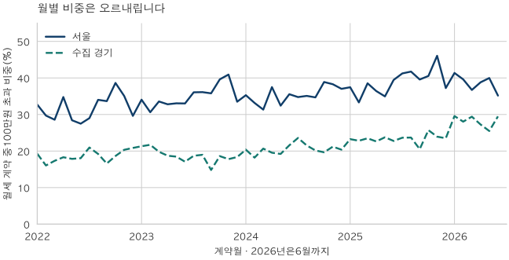
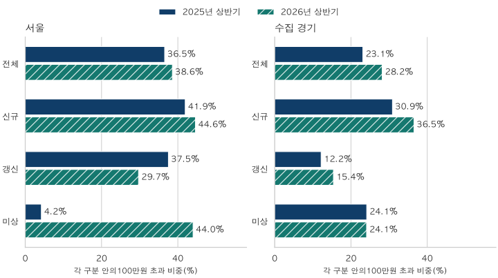

전세와 월세 · 금액 문턱과 계약 구성
월세 100만원 넘는 아파트 계약, 얼마나 늘었을까?
서울과 수집 경기의 월세100만원 초과 계약을2022~2025년과 같은 상반기로 비교합니다. 이상·초과의 경계, 신규·갱신의 반례, 보증금과 지역·면적 구성을 함께 확인합니다.
분석 기간 · 2022~2025년 · 2025·2026년 상반기 계약 | 보유 자료 스냅샷 생성 · 2026-10-04
아파트 월세가 100만 원을 넘는 계약은 얼마나 늘었을까요? 보유 자료의 2026년 상반기 월세 계약 중 100만 원 초과 비중은 서울 38.57%, 수집 경기 지역 28.18%였습니다. 2025년 같은 상반기의 36.54%, 23.11%보다 높았습니다. 다만 ‘100만 원 이상’과는 다른 숫자이며, 같은 집의 임대료가 그만큼 올랐다는 뜻도 아닙니다.
100만 원 ‘초과’와 ‘이상’은 얼마나 다른가요?
초과는 월 납부액이 100만 원보다 큰 계약입니다. 정확히 100만 원을 내는 계약은 포함하지 않습니다. 이상은 그 계약까지 포함합니다. 2026년 상반기에 정확히 100만 원인 계약은 서울 1,990건, 수집 경기 2,642건이었습니다. 이 경계 하나로 비중이 각각 약 3.39%포인트, 3.97%포인트 달라집니다.
| 지역 | 80만원 초과 | 100만원 초과 | 100만원 이상 | 정확100만원 | 120만원 초과 |
|---|---|---|---|---|---|
| 서울 | 47.64% · 27,939건 | 38.57% · 22,619건 | 41.96% · 24,609건 | 3.39% · 1,990건 | 32.73% · 19,195건 |
| 수집 경기 | 37.80% · 25,138건 | 28.18% · 18,740건 | 32.15% · 21,382건 | 3.97% · 2,642건 | 20.67% · 13,744건 |
이 글의 주지표는 100만 원 초과 계약 건수 ÷ 월세 계약 건수 × 100입니다. 월세 계약은 보증금이 0 이상이고 월 납부액이 양수인 적격 계약입니다. 보증금이 커서 준전세로 분류되는 계약도 매달 월세를 내면 포함했습니다. 보증금이 양수이고 월세가 0인 순수 전세는 이 분모에 들어가지 않습니다. 계약 한 건에 한 표를 주며 가구 수나 고유 주택 수를 세지 않습니다.
80만 원과 120만 원 문턱도 같은 조건으로 확인했지만, 결과에 맞춰 주지표를 바꾸지는 않았습니다. 모두 물가나 보증금 전환율로 조정하지 않은 명목 월 납부액입니다. 100만 원이라는 같은 숫자의 실질 부담은 연도마다 다를 수 있습니다.
계약 건수와 비중은 각각 얼마나 늘었나요?
서울의 연간 초과 비중은 2022년 31.62%에서 2025년 38.71%, 수집 경기는 18.59%에서 23.28%로 높아졌습니다. 이 네 완결 연도와 별도로, 2025년 1~6월과 2026년 1~6월을 맞춰 비교했습니다. 2026년 상반기 건수를 이전의 한 해 전체와 직접 비교하지 않았습니다.
| 지역·기간 | 월세 계약 | 100만원 초과 | 월세 중 비중 | 전체 임대차 | 전체 임대차 중 초과 비중 |
|---|---|---|---|---|---|
| 서울 · 2022년 | 104,029 | 32,895 | 31.62% | 233,381 | 14.09% |
| 서울 · 2023년 | 107,933 | 37,426 | 34.68% | 255,656 | 14.64% |
| 서울 · 2024년 | 100,495 | 35,453 | 35.28% | 231,350 | 15.32% |
| 서울 · 2025년 | 112,444 | 43,531 | 38.71% | 250,939 | 17.35% |
| 서울 · 2025년 상반기 | 56,337 | 20,585 | 36.54% | 129,099 | 15.95% |
| 서울 · 2026년 상반기 | 58,650 | 22,619 | 38.57% | 115,171 | 19.64% |
| 수집 경기 · 2022년 | 136,575 | 25,392 | 18.59% | 313,002 | 8.11% |
| 수집 경기 · 2023년 | 148,444 | 27,633 | 18.62% | 338,018 | 8.18% |
| 수집 경기 · 2024년 | 135,138 | 27,610 | 20.43% | 308,044 | 8.96% |
| 수집 경기 · 2025년 | 143,153 | 33,323 | 23.28% | 312,026 | 10.68% |
| 수집 경기 · 2025년 상반기 | 66,534 | 15,379 | 23.11% | 156,404 | 9.83% |
| 수집 경기 · 2026년 상반기 | 66,501 | 18,740 | 28.18% | 140,779 | 13.31% |
같은 상반기끼리 서울의 초과 계약은 20,585건에서 22,619건으로 늘었고, 전체 월세 계약도 56,337건에서 58,650건으로 늘었습니다. 수집 경기는 초과 계약이 15,379건에서 18,740건으로 늘어난 반면, 전체 월세 계약은 66,534건과 66,501건으로 거의 같았습니다. 두 지역 모두 비중이 높아졌지만 분자와 분모의 변화는 같지 않았습니다.
표의 마지막 열은 순수 전세까지 넣은 전체 적격 임대차를 분모로 다시 계산한 값입니다. 같은 초과 계약 건수라도 분모가 넓어지면 비중은 달라집니다. 기존 서울 아파트 월세 비중 글은 전체 임대차 중 월세의 몫을 다뤘습니다. 이 글은 그 월세 계약 안에서 월 납부액 문턱을 넘는 몫을 봅니다.

서울의54개월 표 펼치기
| 계약월 | 월세 계약 | 100만원 초과 | 초과 비중 | 100만원 이상 | 정확100만원 |
|---|---|---|---|---|---|
| 2022-01 | 8,336 | 2,727 | 32.71% | 3,032 | 305 |
| 2022-02 | 8,843 | 2,627 | 29.71% | 2,913 | 286 |
| 2022-03 | 8,903 | 2,544 | 28.57% | 2,846 | 302 |
| 2022-04 | 7,727 | 2,687 | 34.77% | 2,999 | 312 |
| 2022-05 | 8,810 | 2,504 | 28.42% | 2,775 | 271 |
| 2022-06 | 8,541 | 2,348 | 27.49% | 2,637 | 289 |
| 2022-07 | 8,966 | 2,600 | 29.00% | 2,902 | 302 |
| 2022-08 | 7,388 | 2,513 | 34.01% | 2,805 | 292 |
| 2022-09 | 8,346 | 2,809 | 33.66% | 3,117 | 308 |
| 2022-10 | 7,993 | 3,088 | 38.63% | 3,449 | 361 |
| 2022-11 | 8,635 | 3,029 | 35.08% | 3,390 | 361 |
| 2022-12 | 11,541 | 3,419 | 29.62% | 3,851 | 432 |
| 2023-01 | 9,215 | 3,138 | 34.05% | 3,566 | 428 |
| 2023-02 | 11,441 | 3,504 | 30.63% | 3,920 | 416 |
| 2023-03 | 9,939 | 3,336 | 33.56% | 3,753 | 417 |
| 2023-04 | 8,965 | 2,940 | 32.79% | 3,277 | 337 |
| 2023-05 | 9,096 | 3,007 | 33.06% | 3,371 | 364 |
| 2023-06 | 9,167 | 3,027 | 33.02% | 3,417 | 390 |
| 2023-07 | 8,217 | 2,964 | 36.07% | 3,281 | 317 |
| 2023-08 | 7,995 | 2,888 | 36.12% | 3,239 | 351 |
| 2023-09 | 7,717 | 2,762 | 35.79% | 3,065 | 303 |
| 2023-10 | 8,451 | 3,348 | 39.62% | 3,706 | 358 |
| 2023-11 | 7,704 | 3,153 | 40.93% | 3,476 | 323 |
| 2023-12 | 10,026 | 3,359 | 33.50% | 3,723 | 364 |
| 2024-01 | 9,475 | 3,343 | 35.28% | 3,715 | 372 |
| 2024-02 | 8,487 | 2,815 | 33.17% | 3,155 | 340 |
| 2024-03 | 9,736 | 3,051 | 31.34% | 3,411 | 360 |
| 2024-04 | 7,318 | 2,744 | 37.50% | 3,007 | 263 |
| 2024-05 | 8,633 | 2,799 | 32.42% | 3,074 | 275 |
| 2024-06 | 7,783 | 2,767 | 35.55% | 3,070 | 303 |
| 2024-07 | 7,835 | 2,724 | 34.77% | 3,018 | 294 |
| 2024-08 | 7,743 | 2,717 | 35.09% | 2,988 | 271 |
| 2024-09 | 7,026 | 2,437 | 34.69% | 2,689 | 252 |
| 2024-10 | 8,077 | 3,141 | 38.89% | 3,468 | 327 |
| 2024-11 | 8,653 | 3,313 | 38.29% | 3,635 | 322 |
| 2024-12 | 9,729 | 3,602 | 37.02% | 3,926 | 324 |
| 2025-01 | 8,372 | 3,136 | 37.46% | 3,448 | 312 |
| 2025-02 | 10,913 | 3,635 | 33.31% | 3,990 | 355 |
| 2025-03 | 9,116 | 3,513 | 38.54% | 3,848 | 335 |
| 2025-04 | 9,081 | 3,307 | 36.42% | 3,615 | 308 |
| 2025-05 | 9,907 | 3,463 | 34.96% | 3,776 | 313 |
| 2025-06 | 8,948 | 3,531 | 39.46% | 3,865 | 334 |
| 2025-07 | 9,105 | 3,755 | 41.24% | 4,061 | 306 |
| 2025-08 | 8,447 | 3,526 | 41.74% | 3,840 | 314 |
| 2025-09 | 8,864 | 3,508 | 39.58% | 3,800 | 292 |
| 2025-10 | 8,653 | 3,508 | 40.54% | 3,819 | 311 |
| 2025-11 | 9,234 | 4,253 | 46.06% | 4,644 | 391 |
| 2025-12 | 11,804 | 4,396 | 37.24% | 4,735 | 339 |
| 2026-01 | 11,005 | 4,552 | 41.36% | 4,953 | 401 |
| 2026-02 | 8,814 | 3,492 | 39.62% | 3,824 | 332 |
| 2026-03 | 10,729 | 3,940 | 36.72% | 4,297 | 357 |
| 2026-04 | 9,057 | 3,515 | 38.81% | 3,829 | 314 |
| 2026-05 | 8,755 | 3,500 | 39.98% | 3,794 | 294 |
| 2026-06 | 10,290 | 3,620 | 35.18% | 3,912 | 292 |
수집 경기의54개월 표 펼치기
| 계약월 | 월세 계약 | 100만원 초과 | 초과 비중 | 100만원 이상 | 정확100만원 |
|---|---|---|---|---|---|
| 2022-01 | 8,975 | 1,729 | 19.26% | 2,126 | 397 |
| 2022-02 | 11,354 | 1,823 | 16.06% | 2,224 | 401 |
| 2022-03 | 11,204 | 1,941 | 17.32% | 2,375 | 434 |
| 2022-04 | 11,330 | 2,074 | 18.31% | 2,535 | 461 |
| 2022-05 | 10,851 | 1,938 | 17.86% | 2,382 | 444 |
| 2022-06 | 10,456 | 1,887 | 18.05% | 2,319 | 432 |
| 2022-07 | 10,193 | 2,137 | 20.97% | 2,595 | 458 |
| 2022-08 | 10,982 | 2,110 | 19.21% | 2,594 | 484 |
| 2022-09 | 13,192 | 2,188 | 16.59% | 2,691 | 503 |
| 2022-10 | 13,792 | 2,571 | 18.64% | 3,174 | 603 |
| 2022-11 | 11,909 | 2,422 | 20.34% | 2,994 | 572 |
| 2022-12 | 12,337 | 2,572 | 20.85% | 3,186 | 614 |
| 2023-01 | 11,334 | 2,416 | 21.32% | 3,051 | 635 |
| 2023-02 | 12,362 | 2,684 | 21.71% | 3,421 | 737 |
| 2023-03 | 12,085 | 2,394 | 19.81% | 3,061 | 667 |
| 2023-04 | 11,494 | 2,152 | 18.72% | 2,731 | 579 |
| 2023-05 | 11,676 | 2,157 | 18.47% | 2,771 | 614 |
| 2023-06 | 12,342 | 2,108 | 17.08% | 2,718 | 610 |
| 2023-07 | 11,614 | 2,172 | 18.70% | 2,788 | 616 |
| 2023-08 | 11,582 | 2,197 | 18.97% | 2,782 | 585 |
| 2023-09 | 14,400 | 2,134 | 14.82% | 2,673 | 539 |
| 2023-10 | 13,438 | 2,501 | 18.61% | 3,092 | 591 |
| 2023-11 | 13,552 | 2,410 | 17.78% | 2,950 | 540 |
| 2023-12 | 12,565 | 2,308 | 18.37% | 2,828 | 520 |
| 2024-01 | 12,522 | 2,551 | 20.37% | 3,121 | 570 |
| 2024-02 | 12,158 | 2,213 | 18.20% | 2,717 | 504 |
| 2024-03 | 11,168 | 2,308 | 20.67% | 2,854 | 546 |
| 2024-04 | 10,551 | 2,062 | 19.54% | 2,561 | 499 |
| 2024-05 | 11,786 | 2,264 | 19.21% | 2,769 | 505 |
| 2024-06 | 10,172 | 2,194 | 21.57% | 2,677 | 483 |
| 2024-07 | 9,647 | 2,275 | 23.58% | 2,772 | 497 |
| 2024-08 | 10,254 | 2,208 | 21.53% | 2,672 | 464 |
| 2024-09 | 10,182 | 2,053 | 20.16% | 2,458 | 405 |
| 2024-10 | 12,824 | 2,521 | 19.66% | 3,050 | 529 |
| 2024-11 | 11,700 | 2,480 | 21.20% | 2,954 | 474 |
| 2024-12 | 12,174 | 2,481 | 20.38% | 2,925 | 444 |
| 2025-01 | 9,390 | 2,184 | 23.26% | 2,608 | 424 |
| 2025-02 | 11,785 | 2,689 | 22.82% | 3,215 | 526 |
| 2025-03 | 11,341 | 2,664 | 23.49% | 3,189 | 525 |
| 2025-04 | 11,194 | 2,533 | 22.63% | 3,019 | 486 |
| 2025-05 | 11,327 | 2,692 | 23.77% | 3,309 | 617 |
| 2025-06 | 11,497 | 2,617 | 22.76% | 3,220 | 603 |
| 2025-07 | 11,933 | 2,822 | 23.65% | 3,513 | 691 |
| 2025-08 | 11,208 | 2,655 | 23.69% | 3,362 | 707 |
| 2025-09 | 13,926 | 2,859 | 20.53% | 3,379 | 520 |
| 2025-10 | 11,320 | 2,911 | 25.72% | 3,404 | 493 |
| 2025-11 | 14,211 | 3,401 | 23.93% | 3,928 | 527 |
| 2025-12 | 14,021 | 3,296 | 23.51% | 3,791 | 495 |
| 2026-01 | 11,847 | 3,503 | 29.57% | 4,066 | 563 |
| 2026-02 | 10,208 | 2,863 | 28.05% | 3,261 | 398 |
| 2026-03 | 11,369 | 3,343 | 29.40% | 3,831 | 488 |
| 2026-04 | 11,086 | 3,023 | 27.27% | 3,466 | 443 |
| 2026-05 | 11,918 | 3,038 | 25.49% | 3,426 | 388 |
| 2026-06 | 10,073 | 2,970 | 29.48% | 3,332 | 362 |
신규와 갱신 계약도 같은 방향인가요?
서울 갱신은 전체와 반대였습니다. 갱신이라고 명시된 월세 계약의 100만 원 초과 비중은 2025년 상반기 37.52%에서 2026년 상반기 29.69%로 낮아졌습니다. 신규 명시 계약은 41.93%에서 44.61%로 높아졌습니다. 전체 비중 하나로 모든 임차인의 계약 조건이 같은 방향으로 바뀌었다고 설명할 수 없습니다.

| 지역·기간·구분 | 해당 월세 계약 | 100만원 초과 | 구분 안 초과 비중 | 전체 월세 중 구분 몫 |
|---|---|---|---|---|
| 서울 · 2025년 상반기 · 전체 구분 | 56,337 | 20,585 | 36.54% | 100.00% |
| 서울 · 2025년 상반기 · 신규 명시 | 32,373 | 13,575 | 41.93% | 57.46% |
| 서울 · 2025년 상반기 · 갱신 명시 | 18,015 | 6,759 | 37.52% | 31.98% |
| 서울 · 2025년 상반기 · 미상 | 5,949 | 251 | 4.22% | 10.56% |
| 서울 · 2026년 상반기 · 전체 구분 | 58,650 | 22,619 | 38.57% | 100.00% |
| 서울 · 2026년 상반기 · 신규 명시 | 34,486 | 15,385 | 44.61% | 58.80% |
| 서울 · 2026년 상반기 · 갱신 명시 | 23,748 | 7,051 | 29.69% | 40.49% |
| 서울 · 2026년 상반기 · 미상 | 416 | 183 | 43.99% | 0.71% |
| 수집 경기 · 2025년 상반기 · 전체 구분 | 66,534 | 15,379 | 23.11% | 100.00% |
| 수집 경기 · 2025년 상반기 · 신규 명시 | 38,457 | 11,872 | 30.87% | 57.80% |
| 수집 경기 · 2025년 상반기 · 갱신 명시 | 27,335 | 3,328 | 12.17% | 41.08% |
| 수집 경기 · 2025년 상반기 · 미상 | 742 | 179 | 24.12% | 1.12% |
| 수집 경기 · 2026년 상반기 · 전체 구분 | 66,501 | 18,740 | 28.18% | 100.00% |
| 수집 경기 · 2026년 상반기 · 신규 명시 | 40,039 | 14,622 | 36.52% | 60.21% |
| 수집 경기 · 2026년 상반기 · 갱신 명시 | 25,993 | 4,005 | 15.41% | 39.09% |
| 수집 경기 · 2026년 상반기 · 미상 | 469 | 113 | 24.09% | 0.71% |
서울의 구분 미상 월세 계약은 5,949건에서 416건으로 크게 줄었습니다. 그 안의 초과 비중은 4.22%와 43.99%여서, 아주 다른 구성의 집단을 같은 이름으로 비교하고 있습니다. 빈 구분을 신규로 바꾸거나, 줄어든 미상 계약이 다음 기간의 신규·갱신으로 이동했다고 연결하지 않았습니다. 수집 경기에서는 신규·갱신의 초과 비중이 모두 높아졌지만 이 역시 동일 주택의 연속 계약 이력은 아닙니다.
신규는 신규라고 기재된 계약, 갱신은 갱신요구권 사용 명시 여부와 관계없이 갱신이라고 기재된 계약입니다. 구분이 비어 있으면 미상으로 남겼습니다. 서로 충돌하는 구분은 기존 정제 규칙에 따라 제외했습니다. 특정 구분이 많이 공개되기 시작한 것과 실제 계약이 늘어난 것은 분리해서 해석해야 합니다.
보증금까지 보면 100만 원 초과 계약은 어떻게 다른가요?
2026년 상반기 서울에서 월세 100만 원 이하 집합의 보증금 중앙값은 9,072만 원, 초과 집합은 1억 5,000만 원이었습니다. 수집 경기는 각각 4,276만 원과 5,000만 원이었습니다. 적어도 이 전체 집계에서는 월세가 높은 집합의 보증금 중앙값도 높았습니다.
| 지역·월세 문턱 | 계약 수 | 보증금 중앙값(만원) | 월세 중앙값(만원) |
|---|---|---|---|
| 서울 · 100만원 이하 | 36,031 | 9,072 | 45 |
| 서울 · 100만원 초과 | 22,619 | 15,000 | 180 |
| 수집 경기 · 100만원 이하 | 47,761 | 4,276 | 42 |
| 수집 경기 · 100만원 초과 | 18,740 | 5,000 | 145 |
이 결과가 “월세가 높으면 보증금도 반드시 높다”는 뜻은 아닙니다. 지역·면적·주택 조건이 다른 계약을 함께 모았기 때문입니다. 표에서 서울 초과 집합의 보증금 중앙값 1억 5,000만 원과 월세 중앙값 180만 원을 붙여 실제 대표 계약 한 건으로 제시해서도 안 됩니다. 같은 계약 집합에서 각각 계산한 두 중앙값이며, 두 중앙값을 동시에 가진 계약의 존재를 뜻하지 않습니다.
전체 분포도 확인할 수 있습니다. 아래 상세 표에는 사전에 정한 월세 5구간과 보증금 15구간, 전체 면적 및 기존 전용면적 환산군을 유지했습니다. 개별적으로는 큰 건수여도 다른 표와 차감하면 작은 집단이 드러날 수 있어 일부 값을 함께 미공개했습니다. 미공개 칸을 0으로 보거나, 보이는 칸만 더해 새로운 분모를 만들면 안 됩니다.
큰 집이나 비싼 지역이 더 많이 계약된 결과 아닐까요?
그 가능성을 점검하기 위해 지역×전용면적 구간을 맞췄습니다. 양 상반기에 각각 월세 계약 30건 이상인 공동 집단만 남겨, 2025년 상반기 계약 건수의 구성 비율을 고정하고 2026년의 초과 비중을 적용했습니다. 같은 집을 찾는 방법은 아니지만, 큰 지역·면적 구성 변화 한 가지를 따로 살펴볼 수 있습니다.
| 지역 | 공동 층 수 | 2025상반기 비중 | 2026상반기 비중 | 2025구성 고정·2026비중 | 두 기간 커버리지 |
|---|---|---|---|---|---|
| 서울 | 158 | 36.31% | 38.30% | 39.30% | 98.93% / 98.91% |
| 수집 경기 | 211 | 22.55% | 27.62% | 27.35% | 98.47% / 98.05% |
서울 공동 집단의 실제 비중은 36.31%에서 38.30%, 2025년 구성을 고정한 2026년 비중은 39.30%였습니다. 수집 경기는 22.55%에서 27.62%, 구성을 고정한 끝값은 27.35%였습니다. 이 분해에서는 고정 구성을 적용해도 시작값보다 높았습니다. 다만 이것만으로 임대료 자체의 상승을 입증하지는 못합니다.
공동 집단은 전체 월세 계약의 약 98~99%를 포함합니다. 따라서 앞의 전체 면적 비중과 정확히 같지는 않습니다. 같은 지역·면적 구간 안에서도 단지, 보증금, 층, 계약구분이 달라질 수 있고 남겨진 집단 밖의 계약 행태는 추정하지 않았습니다. 모든 면적군·지역이 올랐다는 순위표로 읽지 마세요.
내 계약을 비교할 때 무엇을 확인하면 좋을까요?
- 문턱을 그대로 적습니다. 100만 원 초과인지 이상인지, 관리비 등 다른 납부액이 포함된 숫자인지 확인합니다. 이 자료의 월세는 신고된 월 납부액이며 총주거비 계산이 아닙니다.
- 분모와 기간을 맞춥니다. 월세 계약만인지 전세 포함 전체 임대차인지, 같은 상반기끼리인지 구분합니다.
- 신규·갱신과 미상을 함께 봅니다. 서울의 갱신 반례처럼 전체 방향과 다른 집단이 있고, 구분 공개 범위 자체도 달라질 수 있습니다.
- 내 후보는 보증금과 월세를 한 쌍으로 적습니다. 실제로 제시받은 같은 집의 두 조건을 비교하고, 보증금 차액을 마련하는 비용과 월세 차액을 함께 계산합니다. 이 글의 지역 중앙값으로 특정 계약의 적정 가격을 판정하지 않습니다.
관측된 100만 원 초과 계약의 몫은 두 광역에서 높아졌습니다. 그 결과와 별도로 내 계약의 부담을 판단하려면 보증금·월 납부액·주택 조건을 함께 비교해야 합니다. 전체 비중 상승은 모든 갱신 계약의 인상률도, 전세 매물이 사라진 양도, 특정 정책의 효과도 아닙니다.
전체 민감도·금액 분포·지역 표와 방법·출처
대상·기간·단위
서울25개 구와 수집 경기36개 지역의 아파트 마스터 지리를 기준으로 2022년1월~2026년6월 계약을 분석했습니다. ‘수집 경기’는 경기도 전체 또는 수도권 전체를 뜻하지 않습니다. 전용면적 환산17·18평군과25·26평군은 기존 UnitType 구분이며 정확59/84㎡ 또는 공급면적 평형이 아닙니다. 지역 구성은 별도로 전용면적8구간을 사용했습니다. 단위는 원자료의 만 원입니다.
양수 월세·비음수 보증금 계약을 월세로, 양수 보증금·월세0 계약을 순수 전세로 봤습니다. 무효 금액·면적, 토지임대부, 구분 충돌, 보증금/월세 모두0, 유효 지리 미연결 등을 제외하는 기존 규칙을 적용했습니다. 임대차의 해제를 별도로 복원하지 않았습니다. 정제250만7,057계약에 연결된 원시 구성274만8,014행을 대조했고, 월/기간/구분/지역별 건수와 같은 집합의 중앙값을 독립 계산으로 확인했습니다.
서로 다른 시계와 신고환경
스냅샷 생성일은2026-10-04, 자료 참조 종료월은2026-09이며 분석 끝월은2026-06입니다. 과거 시점에 실제로 이용 가능했던 빈티지나 현재2026년10월 속보를 재현하지 않았습니다. 2011~2021년은 원천 파일 범위와 계약구분 공개율만 따로 감사했으며, 그 기간의 원시 필드까지 전수 검증한 동질적 장기 추세로 연결하지 않았습니다.
국토부 실거래가 공개시스템 안내와 아파트 전월세 API를 원천 기준으로 삼았습니다. 자료에는2011년1월 이후 확정일자와2021년6월 이후 임대차 신고 자료가 반영되며, 모든 실제 계약을 빠짐없이 포착한 가구 조사는 아닙니다. 정부의2025년 임대차 신고제 안내에서 확인한 계도기간 종료와6월 이후 과태료 적용 시점은 비교 창 안의 신고환경 변화입니다. 이 글은 그 변화가 집계에 미친 크기나 월세의 인과효과를 추정하지 않았습니다.
미공개와 구성 비교의 범위
비중 분모30건, 공개 양수 건수와 차감 보완10건을 기본으로 했습니다. 기존 공개 임대차 집계와 새 월/기간/분포/지역 표, 구성 고정가중의 정확한 식을 함께 검증했습니다. 면적군×신규/갱신/미상 교차표는 양 지역·모든 기간에서 함께 미공개하며 중앙값도 따로 남기지 않았습니다. 그 밖의 미공개에는 표본 기준, 분모·보완 기준, 여러 표를 함께 보호하는 공동 보호가 있습니다. 이는 명시적 건수와 지원 집합을 검토한 범위이며 모든 통계의 일반적 재식별 방지를 증명한다는 뜻은 아닙니다.
월세·보증금 구간은 오른쪽 경계를 포함합니다. 지역·면적 구성 민감도는 두 상반기 각각30건 이상 공동 층에서 양기간 커버리지80% 이상을 요구했습니다. 고정가중 비중은 각 층의2026년 초과 비중에2025년 월세 건수 비율을 곱해 더한 값입니다. 기준 구성 외의 조건은 통제하지 않았습니다.
면적군·계약구분과 고정 문턱 전체 표
서울 · 전체 면적 전체 구분·민감도
| 기간·구분 | 전체 임대차 | 월세 계약 | 100만원 초과 | 초과 비중 | 80만원 초과 | 100만원 이상 | 정확100만원 | 120만원 초과 |
|---|---|---|---|---|---|---|---|---|
| 2022년 · 전체 구분 | 233,381 | 104,029 | 32,895 | 31.62% | 42,449 | 36,716 | 3,821 | 26,910 |
| 2022년 · 신규 명시 | 115,469 | 59,056 | 21,576 | 36.53% | 27,927 | 24,393 | 2,817 | 17,950 |
| 2022년 · 갱신 명시 | 84,108 | 26,148 | 9,165 | 35.05% | 11,659 | 9,909 | 744 | 7,238 |
| 2022년 · 미상 | 33,804 | 18,825 | 2,154 | 11.44% | 2,863 | 2,414 | 260 | 1,722 |
| 2023년 · 전체 구분 | 255,656 | 107,933 | 37,426 | 34.68% | 47,459 | 41,794 | 4,368 | 30,754 |
| 2023년 · 신규 명시 | 160,414 | 69,257 | 27,828 | 40.18% | 35,074 | 31,147 | 3,319 | 23,086 |
| 2023년 · 갱신 명시 | 66,354 | 22,059 | 7,784 | 35.29% | 10,005 | 8,624 | 840 | 6,283 |
| 2023년 · 미상 | 28,888 | 16,617 | 1,814 | 10.92% | 2,380 | 2,023 | 209 | 1,385 |
| 2024년 · 전체 구분 | 231,350 | 100,495 | 35,453 | 35.28% | 44,622 | 39,156 | 3,703 | 29,709 |
| 2024년 · 신규 명시 | 153,278 | 70,015 | 25,523 | 36.45% | 32,032 | 28,305 | 2,782 | 21,509 |
| 2024년 · 갱신 명시 | 72,433 | 28,179 | 9,358 | 33.21% | 11,859 | 10,208 | 850 | 7,744 |
| 2024년 · 미상 | 5,639 | 2,301 | 572 | 24.86% | 731 | 643 | 71 | 456 |
| 2025년 · 전체 구분 | 250,939 | 112,444 | 43,531 | 38.71% | 53,414 | 47,441 | 3,910 | 36,693 |
| 2025년 · 신규 명시 | 136,418 | 65,481 | 29,058 | 44.38% | 35,706 | 32,055 | 2,997 | 24,660 |
| 2025년 · 갱신 명시 | 98,499 | 36,907 | 13,983 | 37.89% | 16,987 | 14,854 | 871 | 11,690 |
| 2025년 · 미상 | 16,022 | 10,056 | 490 | 4.87% | 721 | 532 | 42 | 343 |
| 2025년 상반기 · 전체 구분 | 129,099 | 56,337 | 20,585 | 36.54% | 25,594 | 22,542 | 1,957 | 17,161 |
| 2025년 상반기 · 신규 명시 | 70,158 | 32,373 | 13,575 | 41.93% | 16,878 | 15,064 | 1,489 | 11,392 |
| 2025년 상반기 · 갱신 명시 | 49,130 | 18,015 | 6,759 | 37.52% | 8,345 | 7,199 | 440 | 5,569 |
| 2025년 상반기 · 미상 | 9,811 | 5,949 | 251 | 4.22% | 371 | 279 | 28 | 200 |
| 2026년 상반기 · 전체 구분 | 115,171 | 58,650 | 22,619 | 38.57% | 27,939 | 24,609 | 1,990 | 19,195 |
| 2026년 상반기 · 신규 명시 | 61,148 | 34,486 | 15,385 | 44.61% | 18,973 | 16,884 | 1,499 | 13,167 |
| 2026년 상반기 · 갱신 명시 | 52,781 | 23,748 | 7,051 | 29.69% | 8,742 | 7,524 | 473 | 5,881 |
| 2026년 상반기 · 미상 | 1,242 | 416 | 183 | 43.99% | 224 | 201 | 18 | 147 |
서울 · 전용 환산17·18평군 전체 구분·민감도
| 기간·구분 | 전체 임대차 | 월세 계약 | 100만원 초과 | 초과 비중 | 80만원 초과 | 100만원 이상 | 정확100만원 | 120만원 초과 |
|---|---|---|---|---|---|---|---|---|
| 2022년 · 전체 구분 | 55,413 | 20,762 | 7,434 | 35.81% | 10,250 | 8,501 | 1,067 | 5,587 |
| 2022년 · 신규 명시 | 미공개(교차표 보호) | 미공개(교차표 보호) | 미공개(교차표 보호) | 미계산 | 미공개(교차표 보호) | 미공개(교차표 보호) | 미공개(교차표 보호) | 미공개(교차표 보호) |
| 2022년 · 갱신 명시 | 미공개(교차표 보호) | 미공개(교차표 보호) | 미공개(교차표 보호) | 미계산 | 미공개(교차표 보호) | 미공개(교차표 보호) | 미공개(교차표 보호) | 미공개(교차표 보호) |
| 2022년 · 미상 | 미공개(교차표 보호) | 미공개(교차표 보호) | 미공개(교차표 보호) | 미계산 | 미공개(교차표 보호) | 미공개(교차표 보호) | 미공개(교차표 보호) | 미공개(교차표 보호) |
| 2023년 · 전체 구분 | 61,460 | 21,931 | 8,810 | 40.17% | 11,881 | 10,115 | 1,305 | 6,647 |
| 2023년 · 신규 명시 | 미공개(교차표 보호) | 미공개(교차표 보호) | 미공개(교차표 보호) | 미계산 | 미공개(교차표 보호) | 미공개(교차표 보호) | 미공개(교차표 보호) | 미공개(교차표 보호) |
| 2023년 · 갱신 명시 | 미공개(교차표 보호) | 미공개(교차표 보호) | 미공개(교차표 보호) | 미계산 | 미공개(교차표 보호) | 미공개(교차표 보호) | 미공개(교차표 보호) | 미공개(교차표 보호) |
| 2023년 · 미상 | 미공개(교차표 보호) | 미공개(교차표 보호) | 미공개(교차표 보호) | 미계산 | 미공개(교차표 보호) | 미공개(교차표 보호) | 미공개(교차표 보호) | 미공개(교차표 보호) |
| 2024년 · 전체 구분 | 55,394 | 19,176 | 8,420 | 43.91% | 10,884 | 9,497 | 1,077 | 6,714 |
| 2024년 · 신규 명시 | 미공개(교차표 보호) | 미공개(교차표 보호) | 미공개(교차표 보호) | 미계산 | 미공개(교차표 보호) | 미공개(교차표 보호) | 미공개(교차표 보호) | 미공개(교차표 보호) |
| 2024년 · 갱신 명시 | 미공개(교차표 보호) | 미공개(교차표 보호) | 미공개(교차표 보호) | 미계산 | 미공개(교차표 보호) | 미공개(교차표 보호) | 미공개(교차표 보호) | 미공개(교차표 보호) |
| 2024년 · 미상 | 미공개(교차표 보호) | 미공개(교차표 보호) | 미공개(교차표 보호) | 미계산 | 미공개(교차표 보호) | 미공개(교차표 보호) | 미공개(교차표 보호) | 미공개(교차표 보호) |
| 2025년 · 전체 구분 | 60,313 | 22,330 | 10,632 | 47.61% | 13,179 | 11,781 | 1,149 | 8,630 |
| 2025년 · 신규 명시 | 미공개(교차표 보호) | 미공개(교차표 보호) | 미공개(교차표 보호) | 미계산 | 미공개(교차표 보호) | 미공개(교차표 보호) | 미공개(교차표 보호) | 미공개(교차표 보호) |
| 2025년 · 갱신 명시 | 미공개(교차표 보호) | 미공개(교차표 보호) | 미공개(교차표 보호) | 미계산 | 미공개(교차표 보호) | 미공개(교차표 보호) | 미공개(교차표 보호) | 미공개(교차표 보호) |
| 2025년 · 미상 | 미공개(교차표 보호) | 미공개(교차표 보호) | 미공개(교차표 보호) | 미계산 | 미공개(교차표 보호) | 미공개(교차표 보호) | 미공개(교차표 보호) | 미공개(교차표 보호) |
| 2025년 상반기 · 전체 구분 | 32,188 | 11,284 | 5,061 | 44.85% | 6,402 | 5,669 | 608 | 4,074 |
| 2025년 상반기 · 신규 명시 | 미공개(교차표 보호) | 미공개(교차표 보호) | 미공개(교차표 보호) | 미계산 | 미공개(교차표 보호) | 미공개(교차표 보호) | 미공개(교차표 보호) | 미공개(교차표 보호) |
| 2025년 상반기 · 갱신 명시 | 미공개(교차표 보호) | 미공개(교차표 보호) | 미공개(교차표 보호) | 미계산 | 미공개(교차표 보호) | 미공개(교차표 보호) | 미공개(교차표 보호) | 미공개(교차표 보호) |
| 2025년 상반기 · 미상 | 미공개(교차표 보호) | 미공개(교차표 보호) | 미공개(교차표 보호) | 미계산 | 미공개(교차표 보호) | 미공개(교차표 보호) | 미공개(교차표 보호) | 미공개(교차표 보호) |
| 2026년 상반기 · 전체 구분 | 26,855 | 11,424 | 5,630 | 49.28% | 6,735 | 6,118 | 488 | 4,675 |
| 2026년 상반기 · 신규 명시 | 미공개(교차표 보호) | 미공개(교차표 보호) | 미공개(교차표 보호) | 미계산 | 미공개(교차표 보호) | 미공개(교차표 보호) | 미공개(교차표 보호) | 미공개(교차표 보호) |
| 2026년 상반기 · 갱신 명시 | 미공개(교차표 보호) | 미공개(교차표 보호) | 미공개(교차표 보호) | 미계산 | 미공개(교차표 보호) | 미공개(교차표 보호) | 미공개(교차표 보호) | 미공개(교차표 보호) |
| 2026년 상반기 · 미상 | 미공개(교차표 보호) | 미공개(교차표 보호) | 미공개(교차표 보호) | 미계산 | 미공개(교차표 보호) | 미공개(교차표 보호) | 미공개(교차표 보호) | 미공개(교차표 보호) |
서울 · 전용 환산25·26평군 전체 구분·민감도
| 기간·구분 | 전체 임대차 | 월세 계약 | 100만원 초과 | 초과 비중 | 80만원 초과 | 100만원 이상 | 정확100만원 | 120만원 초과 |
|---|---|---|---|---|---|---|---|---|
| 2022년 · 전체 구분 | 64,810 | 23,414 | 13,172 | 56.26% | 15,651 | 14,455 | 1,283 | 11,154 |
| 2022년 · 신규 명시 | 미공개(교차표 보호) | 미공개(교차표 보호) | 미공개(교차표 보호) | 미계산 | 미공개(교차표 보호) | 미공개(교차표 보호) | 미공개(교차표 보호) | 미공개(교차표 보호) |
| 2022년 · 갱신 명시 | 미공개(교차표 보호) | 미공개(교차표 보호) | 미공개(교차표 보호) | 미계산 | 미공개(교차표 보호) | 미공개(교차표 보호) | 미공개(교차표 보호) | 미공개(교차표 보호) |
| 2022년 · 미상 | 미공개(교차표 보호) | 미공개(교차표 보호) | 미공개(교차표 보호) | 미계산 | 미공개(교차표 보호) | 미공개(교차표 보호) | 미공개(교차표 보호) | 미공개(교차표 보호) |
| 2023년 · 전체 구분 | 73,427 | 23,093 | 14,473 | 62.67% | 16,804 | 15,790 | 1,317 | 12,466 |
| 2023년 · 신규 명시 | 미공개(교차표 보호) | 미공개(교차표 보호) | 미공개(교차표 보호) | 미계산 | 미공개(교차표 보호) | 미공개(교차표 보호) | 미공개(교차표 보호) | 미공개(교차표 보호) |
| 2023년 · 갱신 명시 | 미공개(교차표 보호) | 미공개(교차표 보호) | 미공개(교차표 보호) | 미계산 | 미공개(교차표 보호) | 미공개(교차표 보호) | 미공개(교차표 보호) | 미공개(교차표 보호) |
| 2023년 · 미상 | 미공개(교차표 보호) | 미공개(교차표 보호) | 미공개(교차표 보호) | 미계산 | 미공개(교차표 보호) | 미공개(교차표 보호) | 미공개(교차표 보호) | 미공개(교차표 보호) |
| 2024년 · 전체 구분 | 64,063 | 20,375 | 13,191 | 64.74% | 15,032 | 14,270 | 1,079 | 11,614 |
| 2024년 · 신규 명시 | 미공개(교차표 보호) | 미공개(교차표 보호) | 미공개(교차표 보호) | 미계산 | 미공개(교차표 보호) | 미공개(교차표 보호) | 미공개(교차표 보호) | 미공개(교차표 보호) |
| 2024년 · 갱신 명시 | 미공개(교차표 보호) | 미공개(교차표 보호) | 미공개(교차표 보호) | 미계산 | 미공개(교차표 보호) | 미공개(교차표 보호) | 미공개(교차표 보호) | 미공개(교차표 보호) |
| 2024년 · 미상 | 미공개(교차표 보호) | 미공개(교차표 보호) | 미공개(교차표 보호) | 미계산 | 미공개(교차표 보호) | 미공개(교차표 보호) | 미공개(교차표 보호) | 미공개(교차표 보호) |
| 2025년 · 전체 구분 | 72,057 | 23,710 | 16,047 | 67.68% | 17,996 | 17,056 | 1,009 | 14,238 |
| 2025년 · 신규 명시 | 미공개(교차표 보호) | 미공개(교차표 보호) | 미공개(교차표 보호) | 미계산 | 미공개(교차표 보호) | 미공개(교차표 보호) | 미공개(교차표 보호) | 미공개(교차표 보호) |
| 2025년 · 갱신 명시 | 미공개(교차표 보호) | 미공개(교차표 보호) | 미공개(교차표 보호) | 미계산 | 미공개(교차표 보호) | 미공개(교차표 보호) | 미공개(교차표 보호) | 미공개(교차표 보호) |
| 2025년 · 미상 | 미공개(교차표 보호) | 미공개(교차표 보호) | 미공개(교차표 보호) | 미계산 | 미공개(교차표 보호) | 미공개(교차표 보호) | 미공개(교차표 보호) | 미공개(교차표 보호) |
| 2025년 상반기 · 전체 구분 | 36,805 | 11,747 | 7,722 | 65.74% | 8,745 | 8,222 | 500 | 6,761 |
| 2025년 상반기 · 신규 명시 | 미공개(교차표 보호) | 미공개(교차표 보호) | 미공개(교차표 보호) | 미계산 | 미공개(교차표 보호) | 미공개(교차표 보호) | 미공개(교차표 보호) | 미공개(교차표 보호) |
| 2025년 상반기 · 갱신 명시 | 미공개(교차표 보호) | 미공개(교차표 보호) | 미공개(교차표 보호) | 미계산 | 미공개(교차표 보호) | 미공개(교차표 보호) | 미공개(교차표 보호) | 미공개(교차표 보호) |
| 2025년 상반기 · 미상 | 미공개(교차표 보호) | 미공개(교차표 보호) | 미공개(교차표 보호) | 미계산 | 미공개(교차표 보호) | 미공개(교차표 보호) | 미공개(교차표 보호) | 미공개(교차표 보호) |
| 2026년 상반기 · 전체 구분 | 30,820 | 11,806 | 7,947 | 67.31% | 8,866 | 8,432 | 485 | 7,168 |
| 2026년 상반기 · 신규 명시 | 미공개(교차표 보호) | 미공개(교차표 보호) | 미공개(교차표 보호) | 미계산 | 미공개(교차표 보호) | 미공개(교차표 보호) | 미공개(교차표 보호) | 미공개(교차표 보호) |
| 2026년 상반기 · 갱신 명시 | 미공개(교차표 보호) | 미공개(교차표 보호) | 미공개(교차표 보호) | 미계산 | 미공개(교차표 보호) | 미공개(교차표 보호) | 미공개(교차표 보호) | 미공개(교차표 보호) |
| 2026년 상반기 · 미상 | 미공개(교차표 보호) | 미공개(교차표 보호) | 미공개(교차표 보호) | 미계산 | 미공개(교차표 보호) | 미공개(교차표 보호) | 미공개(교차표 보호) | 미공개(교차표 보호) |
수집 경기 · 전체 면적 전체 구분·민감도
| 기간·구분 | 전체 임대차 | 월세 계약 | 100만원 초과 | 초과 비중 | 80만원 초과 | 100만원 이상 | 정확100만원 | 120만원 초과 |
|---|---|---|---|---|---|---|---|---|
| 2022년 · 전체 구분 | 313,002 | 136,575 | 25,392 | 18.59% | 38,920 | 31,195 | 5,803 | 16,789 |
| 2022년 · 신규 명시 | 152,772 | 62,936 | 19,886 | 31.60% | 29,856 | 24,734 | 4,848 | 13,368 |
| 2022년 · 갱신 명시 | 100,422 | 34,792 | 4,119 | 11.84% | 6,922 | 4,791 | 672 | 2,509 |
| 2022년 · 미상 | 59,808 | 38,847 | 1,387 | 3.57% | 2,142 | 1,670 | 283 | 912 |
| 2023년 · 전체 구분 | 338,018 | 148,444 | 27,633 | 18.62% | 43,101 | 34,866 | 7,233 | 17,832 |
| 2023년 · 신규 명시 | 192,609 | 74,143 | 22,654 | 30.55% | 34,930 | 28,847 | 6,193 | 14,680 |
| 2023년 · 갱신 명시 | 91,975 | 38,476 | 3,918 | 10.18% | 6,471 | 4,681 | 763 | 2,529 |
| 2023년 · 미상 | 53,434 | 35,825 | 1,061 | 2.96% | 1,700 | 1,338 | 277 | 623 |
| 2024년 · 전체 구분 | 308,044 | 135,138 | 27,610 | 20.43% | 40,947 | 33,530 | 5,920 | 18,760 |
| 2024년 · 신규 명시 | 192,086 | 79,710 | 22,264 | 27.93% | 32,921 | 27,362 | 5,098 | 15,147 |
| 2024년 · 갱신 명시 | 106,927 | 51,551 | 4,866 | 9.44% | 7,317 | 5,588 | 722 | 3,300 |
| 2024년 · 미상 | 9,031 | 3,877 | 480 | 12.38% | 709 | 580 | 100 | 313 |
| 2025년 · 전체 구분 | 312,026 | 143,153 | 33,323 | 23.28% | 48,169 | 39,937 | 6,614 | 23,644 |
| 2025년 · 신규 명시 | 183,336 | 85,586 | 25,930 | 30.30% | 37,408 | 31,646 | 5,716 | 18,520 |
| 2025년 · 갱신 명시 | 124,401 | 56,211 | 7,075 | 12.59% | 10,307 | 7,922 | 847 | 4,898 |
| 2025년 · 미상 | 4,289 | 1,356 | 318 | 23.45% | 454 | 369 | 51 | 226 |
| 2025년 상반기 · 전체 구분 | 156,404 | 66,534 | 15,379 | 23.11% | 22,612 | 18,560 | 3,181 | 10,663 |
| 2025년 상반기 · 신규 명시 | 90,330 | 38,457 | 11,872 | 30.87% | 17,402 | 14,576 | 2,704 | 8,286 |
| 2025년 상반기 · 갱신 명시 | 63,458 | 27,335 | 3,328 | 12.17% | 4,949 | 3,774 | 446 | 2,247 |
| 2025년 상반기 · 미상 | 2,616 | 742 | 179 | 24.12% | 261 | 210 | 31 | 130 |
| 2026년 상반기 · 전체 구분 | 140,779 | 66,501 | 18,740 | 28.18% | 25,138 | 21,382 | 2,642 | 13,744 |
| 2026년 상반기 · 신규 명시 | 81,987 | 40,039 | 14,622 | 36.52% | 19,479 | 16,910 | 2,288 | 10,838 |
| 2026년 상반기 · 갱신 명시 | 57,485 | 25,993 | 4,005 | 15.41% | 5,515 | 4,346 | 341 | 2,824 |
| 2026년 상반기 · 미상 | 1,307 | 469 | 113 | 24.09% | 144 | 126 | 13 | 82 |
수집 경기 · 전용 환산17·18평군 전체 구분·민감도
| 기간·구분 | 전체 임대차 | 월세 계약 | 100만원 초과 | 초과 비중 | 80만원 초과 | 100만원 이상 | 정확100만원 | 120만원 초과 |
|---|---|---|---|---|---|---|---|---|
| 2022년 · 전체 구분 | 68,725 | 24,693 | 3,826 | 15.49% | 8,311 | 5,592 | 1,766 | 1,707 |
| 2022년 · 신규 명시 | 미공개(교차표 보호) | 미공개(교차표 보호) | 미공개(교차표 보호) | 미계산 | 미공개(교차표 보호) | 미공개(교차표 보호) | 미공개(교차표 보호) | 미공개(교차표 보호) |
| 2022년 · 갱신 명시 | 미공개(교차표 보호) | 미공개(교차표 보호) | 미공개(교차표 보호) | 미계산 | 미공개(교차표 보호) | 미공개(교차표 보호) | 미공개(교차표 보호) | 미공개(교차표 보호) |
| 2022년 · 미상 | 미공개(교차표 보호) | 미공개(교차표 보호) | 미공개(교차표 보호) | 미계산 | 미공개(교차표 보호) | 미공개(교차표 보호) | 미공개(교차표 보호) | 미공개(교차표 보호) |
| 2023년 · 전체 구분 | 73,222 | 27,209 | 4,319 | 15.87% | 9,387 | 6,381 | 2,062 | 1,869 |
| 2023년 · 신규 명시 | 미공개(교차표 보호) | 미공개(교차표 보호) | 미공개(교차표 보호) | 미계산 | 미공개(교차표 보호) | 미공개(교차표 보호) | 미공개(교차표 보호) | 미공개(교차표 보호) |
| 2023년 · 갱신 명시 | 미공개(교차표 보호) | 미공개(교차표 보호) | 미공개(교차표 보호) | 미계산 | 미공개(교차표 보호) | 미공개(교차표 보호) | 미공개(교차표 보호) | 미공개(교차표 보호) |
| 2023년 · 미상 | 미공개(교차표 보호) | 미공개(교차표 보호) | 미공개(교차표 보호) | 미계산 | 미공개(교차표 보호) | 미공개(교차표 보호) | 미공개(교차표 보호) | 미공개(교차표 보호) |
| 2024년 · 전체 구분 | 68,703 | 24,838 | 4,860 | 19.57% | 9,604 | 6,823 | 1,963 | 2,457 |
| 2024년 · 신규 명시 | 미공개(교차표 보호) | 미공개(교차표 보호) | 미공개(교차표 보호) | 미계산 | 미공개(교차표 보호) | 미공개(교차표 보호) | 미공개(교차표 보호) | 미공개(교차표 보호) |
| 2024년 · 갱신 명시 | 미공개(교차표 보호) | 미공개(교차표 보호) | 미공개(교차표 보호) | 미계산 | 미공개(교차표 보호) | 미공개(교차표 보호) | 미공개(교차표 보호) | 미공개(교차표 보호) |
| 2024년 · 미상 | 미공개(교차표 보호) | 미공개(교차표 보호) | 미공개(교차표 보호) | 미계산 | 미공개(교차표 보호) | 미공개(교차표 보호) | 미공개(교차표 보호) | 미공개(교차표 보호) |
| 2025년 · 전체 구분 | 67,208 | 26,259 | 6,313 | 24.04% | 11,042 | 8,137 | 1,824 | 3,546 |
| 2025년 · 신규 명시 | 미공개(교차표 보호) | 미공개(교차표 보호) | 미공개(교차표 보호) | 미계산 | 미공개(교차표 보호) | 미공개(교차표 보호) | 미공개(교차표 보호) | 미공개(교차표 보호) |
| 2025년 · 갱신 명시 | 미공개(교차표 보호) | 미공개(교차표 보호) | 미공개(교차표 보호) | 미계산 | 미공개(교차표 보호) | 미공개(교차표 보호) | 미공개(교차표 보호) | 미공개(교차표 보호) |
| 2025년 · 미상 | 미공개(교차표 보호) | 미공개(교차표 보호) | 미공개(교차표 보호) | 미계산 | 미공개(교차표 보호) | 미공개(교차표 보호) | 미공개(교차표 보호) | 미공개(교차표 보호) |
| 2025년 상반기 · 전체 구분 | 34,379 | 12,389 | 2,904 | 23.44% | 5,288 | 3,846 | 942 | 1,547 |
| 2025년 상반기 · 신규 명시 | 미공개(교차표 보호) | 미공개(교차표 보호) | 미공개(교차표 보호) | 미계산 | 미공개(교차표 보호) | 미공개(교차표 보호) | 미공개(교차표 보호) | 미공개(교차표 보호) |
| 2025년 상반기 · 갱신 명시 | 미공개(교차표 보호) | 미공개(교차표 보호) | 미공개(교차표 보호) | 미계산 | 미공개(교차표 보호) | 미공개(교차표 보호) | 미공개(교차표 보호) | 미공개(교차표 보호) |
| 2025년 상반기 · 미상 | 미공개(교차표 보호) | 미공개(교차표 보호) | 미공개(교차표 보호) | 미계산 | 미공개(교차표 보호) | 미공개(교차표 보호) | 미공개(교차표 보호) | 미공개(교차표 보호) |
| 2026년 상반기 · 전체 구분 | 31,468 | 13,475 | 4,080 | 30.28% | 6,033 | 4,885 | 805 | 2,446 |
| 2026년 상반기 · 신규 명시 | 미공개(교차표 보호) | 미공개(교차표 보호) | 미공개(교차표 보호) | 미계산 | 미공개(교차표 보호) | 미공개(교차표 보호) | 미공개(교차표 보호) | 미공개(교차표 보호) |
| 2026년 상반기 · 갱신 명시 | 미공개(교차표 보호) | 미공개(교차표 보호) | 미공개(교차표 보호) | 미계산 | 미공개(교차표 보호) | 미공개(교차표 보호) | 미공개(교차표 보호) | 미공개(교차표 보호) |
| 2026년 상반기 · 미상 | 미공개(교차표 보호) | 미공개(교차표 보호) | 미공개(교차표 보호) | 미계산 | 미공개(교차표 보호) | 미공개(교차표 보호) | 미공개(교차표 보호) | 미공개(교차표 보호) |
수집 경기 · 전용 환산25·26평군 전체 구분·민감도
| 기간·구분 | 전체 임대차 | 월세 계약 | 100만원 초과 | 초과 비중 | 80만원 초과 | 100만원 이상 | 정확100만원 | 120만원 초과 |
|---|---|---|---|---|---|---|---|---|
| 2022년 · 전체 구분 | 94,212 | 30,871 | 11,833 | 38.33% | 16,709 | 14,174 | 2,341 | 7,924 |
| 2022년 · 신규 명시 | 미공개(교차표 보호) | 미공개(교차표 보호) | 미공개(교차표 보호) | 미계산 | 미공개(교차표 보호) | 미공개(교차표 보호) | 미공개(교차표 보호) | 미공개(교차표 보호) |
| 2022년 · 갱신 명시 | 미공개(교차표 보호) | 미공개(교차표 보호) | 미공개(교차표 보호) | 미계산 | 미공개(교차표 보호) | 미공개(교차표 보호) | 미공개(교차표 보호) | 미공개(교차표 보호) |
| 2022년 · 미상 | 미공개(교차표 보호) | 미공개(교차표 보호) | 미공개(교차표 보호) | 미계산 | 미공개(교차표 보호) | 미공개(교차표 보호) | 미공개(교차표 보호) | 미공개(교차표 보호) |
| 2023년 · 전체 구분 | 100,775 | 30,918 | 12,643 | 40.89% | 18,271 | 15,615 | 2,972 | 8,275 |
| 2023년 · 신규 명시 | 미공개(교차표 보호) | 미공개(교차표 보호) | 미공개(교차표 보호) | 미계산 | 미공개(교차표 보호) | 미공개(교차표 보호) | 미공개(교차표 보호) | 미공개(교차표 보호) |
| 2023년 · 갱신 명시 | 미공개(교차표 보호) | 미공개(교차표 보호) | 미공개(교차표 보호) | 미계산 | 미공개(교차표 보호) | 미공개(교차표 보호) | 미공개(교차표 보호) | 미공개(교차표 보호) |
| 2023년 · 미상 | 미공개(교차표 보호) | 미공개(교차표 보호) | 미공개(교차표 보호) | 미계산 | 미공개(교차표 보호) | 미공개(교차표 보호) | 미공개(교차표 보호) | 미공개(교차표 보호) |
| 2024년 · 전체 구분 | 91,204 | 28,457 | 12,272 | 43.12% | 16,682 | 14,494 | 2,222 | 8,474 |
| 2024년 · 신규 명시 | 미공개(교차표 보호) | 미공개(교차표 보호) | 미공개(교차표 보호) | 미계산 | 미공개(교차표 보호) | 미공개(교차표 보호) | 미공개(교차표 보호) | 미공개(교차표 보호) |
| 2024년 · 갱신 명시 | 미공개(교차표 보호) | 미공개(교차표 보호) | 미공개(교차표 보호) | 미계산 | 미공개(교차표 보호) | 미공개(교차표 보호) | 미공개(교차표 보호) | 미공개(교차표 보호) |
| 2024년 · 미상 | 미공개(교차표 보호) | 미공개(교차표 보호) | 미공개(교차표 보호) | 미계산 | 미공개(교차표 보호) | 미공개(교차표 보호) | 미공개(교차표 보호) | 미공개(교차표 보호) |
| 2025년 · 전체 구분 | 94,582 | 31,724 | 14,913 | 47.01% | 20,166 | 17,881 | 2,968 | 10,784 |
| 2025년 · 신규 명시 | 미공개(교차표 보호) | 미공개(교차표 보호) | 미공개(교차표 보호) | 미계산 | 미공개(교차표 보호) | 미공개(교차표 보호) | 미공개(교차표 보호) | 미공개(교차표 보호) |
| 2025년 · 갱신 명시 | 미공개(교차표 보호) | 미공개(교차표 보호) | 미공개(교차표 보호) | 미계산 | 미공개(교차표 보호) | 미공개(교차표 보호) | 미공개(교차표 보호) | 미공개(교차표 보호) |
| 2025년 · 미상 | 미공개(교차표 보호) | 미공개(교차표 보호) | 미공개(교차표 보호) | 미계산 | 미공개(교차표 보호) | 미공개(교차표 보호) | 미공개(교차표 보호) | 미공개(교차표 보호) |
| 2025년 상반기 · 전체 구분 | 48,634 | 15,256 | 6,998 | 45.87% | 9,503 | 8,341 | 1,343 | 4,953 |
| 2025년 상반기 · 신규 명시 | 미공개(교차표 보호) | 미공개(교차표 보호) | 미공개(교차표 보호) | 미계산 | 미공개(교차표 보호) | 미공개(교차표 보호) | 미공개(교차표 보호) | 미공개(교차표 보호) |
| 2025년 상반기 · 갱신 명시 | 미공개(교차표 보호) | 미공개(교차표 보호) | 미공개(교차표 보호) | 미계산 | 미공개(교차표 보호) | 미공개(교차표 보호) | 미공개(교차표 보호) | 미공개(교차표 보호) |
| 2025년 상반기 · 미상 | 미공개(교차표 보호) | 미공개(교차표 보호) | 미공개(교차표 보호) | 미계산 | 미공개(교차표 보호) | 미공개(교차표 보호) | 미공개(교차표 보호) | 미공개(교차표 보호) |
| 2026년 상반기 · 전체 구분 | 43,803 | 16,054 | 7,969 | 49.64% | 9,984 | 8,914 | 945 | 6,098 |
| 2026년 상반기 · 신규 명시 | 미공개(교차표 보호) | 미공개(교차표 보호) | 미공개(교차표 보호) | 미계산 | 미공개(교차표 보호) | 미공개(교차표 보호) | 미공개(교차표 보호) | 미공개(교차표 보호) |
| 2026년 상반기 · 갱신 명시 | 미공개(교차표 보호) | 미공개(교차표 보호) | 미공개(교차표 보호) | 미계산 | 미공개(교차표 보호) | 미공개(교차표 보호) | 미공개(교차표 보호) | 미공개(교차표 보호) |
| 2026년 상반기 · 미상 | 미공개(교차표 보호) | 미공개(교차표 보호) | 미공개(교차표 보호) | 미계산 | 미공개(교차표 보호) | 미공개(교차표 보호) | 미공개(교차표 보호) | 미공개(교차표 보호) |
지원 집합의 월세·보증금 분포와 중앙값
서울 · 전체 면적 · 전체 구분 금액 분포·중앙값
| 월지급액(만원) | 2022년 | 2023년 | 2024년 | 2025년 | 2025년 상반기 | 2026년 상반기 |
|---|---|---|---|---|---|---|
| 0 초과~50 이하 | 41,518 | 40,237 | 37,077 | 38,927 | 20,518 | 20,698 |
| 50 초과~100 이하 | 29,616 | 30,270 | 27,965 | 29,986 | 15,234 | 15,333 |
| 100 초과~150 이하 | 14,142 | 15,427 | 13,583 | 15,641 | 7,690 | 7,793 |
| 150 초과~200 이하 | 8,305 | 9,563 | 9,227 | 11,241 | 5,454 | 5,684 |
| 200 초과 | 10,448 | 12,436 | 12,643 | 16,649 | 7,441 | 9,142 |
| 보증금 구간 | 2022년 | 2023년 | 2024년 | 2025년 | 2025년 상반기 | 2026년 상반기 |
|---|---|---|---|---|---|---|
| 1억 이하 | 38,189 | 39,654 | 35,930 | 38,487 | 20,458 | 19,772 |
| 2억 이하 | 10,579 | 11,761 | 11,142 | 11,244 | 5,491 | 6,142 |
| 3억 이하 | 7,886 | 7,880 | 6,868 | 6,725 | 3,678 | 3,500 |
| 4억 이하 | 4,656 | 4,055 | 3,695 | 3,775 | 1,958 | 1,792 |
| 5억 이하 | 3,474 | 2,656 | 2,659 | 2,803 | 1,429 | 1,467 |
| 6억 이하 | 2,283 | 1,604 | 1,679 | 1,973 | 995 | 1,095 |
| 7억 이하 | 1,508 | 1,100 | 1,168 | 1,385 | 665 | 818 |
| 8억 이하 | 910 | 607 | 634 | 815 | 372 | 478 |
| 9억 이하 | 506 | 343 | 391 | 501 | 229 | 307 |
| 10억 이하 | 384 | 303 | 303 | 368 | 150 | 214 |
| 12억 이하 | 354 | 263 | 256 | 362 | 143 | 229 |
| 15억 이하 | 284 | 175 | 201 | 287 | 113 | 124 |
| 20억 이하 | 94 | 75 | 88 | 142 | 53 | 76 |
| 30억 이하 | 미공개(공동 보호) | 미공개(공동 보호) | 미공개(공동 보호) | 미공개(공동 보호) | 미공개(공동 보호) | 미공개(공동 보호) |
| 30억 초과 | 미공개(표본 기준) | 미공개(표본 기준) | 미공개(표본 기준) | 미공개(표본 기준) | 미공개(표본 기준) | 미공개(표본 기준) |
| 보증금 구간 | 2022년 | 2023년 | 2024년 | 2025년 | 2025년 상반기 | 2026년 상반기 |
|---|---|---|---|---|---|---|
| 1억 이하 | 15,677 | 18,664 | 17,130 | 20,374 | 9,972 | 10,448 |
| 2억 이하 | 5,108 | 6,089 | 5,706 | 7,127 | 3,495 | 3,754 |
| 3억 이하 | 3,508 | 4,064 | 3,863 | 4,855 | 2,270 | 2,592 |
| 4억 이하 | 2,130 | 2,193 | 2,315 | 2,952 | 1,322 | 1,606 |
| 5억 이하 | 1,944 | 2,065 | 2,107 | 2,554 | 1,137 | 1,373 |
| 6억 이하 | 1,119 | 1,071 | 1,172 | 1,481 | 642 | 839 |
| 7억 이하 | 852 | 916 | 852 | 1,093 | 462 | 514 |
| 8억 이하 | 638 | 647 | 631 | 811 | 350 | 402 |
| 9억 이하 | 394 | 326 | 340 | 463 | 191 | 215 |
| 10억 이하 | 517 | 548 | 491 | 586 | 252 | 305 |
| 12억 이하 | 407 | 309 | 355 | 511 | 211 | 249 |
| 15억 이하 | 329 | 283 | 267 | 419 | 167 | 189 |
| 20억 이하 | 183 | 141 | 135 | 204 | 78 | 87 |
| 30억 이하 | 72 | 77 | 미공개(공동 보호) | 미공개(공동 보호) | 미공개(공동 보호) | 미공개(공동 보호) |
| 30억 초과 | 17 | 33 | 미공개(공동 보호) | 미공개(공동 보호) | 미공개(표본 기준) | 미공개(표본 기준) |
| 기간·100만원 경계 | 계약 수 | 보증금 중앙값(만원) | 월세 중앙값(만원) |
|---|---|---|---|
| 2022년 · 이하 | 71,134 | 9,651 | 45 |
| 2022년 · 초과 | 32,895 | 15,000 | 164 |
| 2023년 · 이하 | 70,507 | 8,848 | 45 |
| 2023년 · 초과 | 37,426 | 10,500 | 165 |
| 2024년 · 이하 | 65,042 | 9,000 | 45 |
| 2024년 · 초과 | 35,453 | 15,000 | 170 |
| 2025년 · 이하 | 68,913 | 8,992 | 45 |
| 2025년 · 초과 | 43,531 | 15,000 | 180 |
| 2025년 상반기 · 이하 | 35,752 | 8,520 | 45 |
| 2025년 상반기 · 초과 | 20,585 | 14,000 | 173 |
| 2026년 상반기 · 이하 | 36,031 | 9,072 | 45 |
| 2026년 상반기 · 초과 | 22,619 | 15,000 | 180 |
서울 · 전체 면적 · 신규 명시 금액 분포·중앙값
| 월지급액(만원) | 2022년 | 2023년 | 2024년 | 2025년 | 2025년 상반기 | 2026년 상반기 |
|---|---|---|---|---|---|---|
| 0 초과~50 이하 | 18,180 | 20,392 | 25,025 | 16,588 | 8,919 | 9,080 |
| 50 초과~100 이하 | 19,300 | 21,037 | 19,467 | 19,835 | 9,879 | 10,021 |
| 100 초과~150 이하 | 8,898 | 11,144 | 9,518 | 10,269 | 5,004 | 5,151 |
| 150 초과~200 이하 | 5,415 | 7,148 | 6,514 | 7,459 | 3,580 | 3,796 |
| 200 초과 | 7,263 | 9,536 | 9,491 | 11,330 | 4,991 | 6,438 |
| 보증금 구간 | 2022년 | 2023년 | 2024년 | 2025년 | 2025년 상반기 | 2026년 상반기 |
|---|---|---|---|---|---|---|
| 1억 이하 | 19,890 | 22,360 | 28,176 | 22,266 | 11,810 | 11,883 |
| 2억 이하 | 6,874 | 8,571 | 7,423 | 5,955 | 2,897 | 2,886 |
| 3억 이하 | 4,183 | 5,122 | 3,739 | 3,009 | 1,601 | 1,410 |
| 4억 이하 | 2,227 | 2,144 | 1,963 | 1,656 | 860 | 841 |
| 5억 이하 | 1,565 | 1,196 | 1,271 | 1,243 | 620 | 688 |
| 6억 이하 | 992 | 685 | 672 | 813 | 376 | 484 |
| 7억 이하 | 676 | 522 | 501 | 552 | 240 | 349 |
| 8억 이하 | 375 | 280 | 244 | 299 | 123 | 190 |
| 9억 이하 | 205 | 162 | 140 | 192 | 85 | 118 |
| 10억 이하 | 185 | 131 | 116 | 167 | 63 | 89 |
| 12억 이하 | 154 | 117 | 107 | 114 | 43 | 91 |
| 15억 이하 | 102 | 80 | 81 | 97 | 50 | 39 |
| 20억 이하 | 40 | 미공개(공동 보호) | 미공개(공동 보호) | 미공개(공동 보호) | 미공개(공동 보호) | 미공개(공동 보호) |
| 30억 이하 | 12 | 미공개(공동 보호) | 미공개(공동 보호) | 미공개(표본 기준) | 미공개(표본 기준) | 미공개(표본 기준) |
| 30억 초과 | 0 | 0 | 0 | 미공개(표본 기준) | 미공개(표본 기준) | 0 |
| 보증금 구간 | 2022년 | 2023년 | 2024년 | 2025년 | 2025년 상반기 | 2026년 상반기 |
|---|---|---|---|---|---|---|
| 1억 이하 | 10,597 | 14,370 | 13,179 | 14,963 | 7,220 | 7,739 |
| 2억 이하 | 3,476 | 4,608 | 4,197 | 4,778 | 2,313 | 2,534 |
| 3억 이하 | 2,366 | 2,997 | 2,647 | 3,063 | 1,420 | 1,679 |
| 4억 이하 | 1,319 | 1,490 | 1,493 | 1,721 | 732 | 990 |
| 5억 이하 | 1,212 | 1,472 | 1,389 | 1,517 | 644 | 861 |
| 6억 이하 | 644 | 713 | 732 | 821 | 335 | 472 |
| 7억 이하 | 490 | 622 | 496 | 581 | 228 | 282 |
| 8억 이하 | 360 | 430 | 369 | 437 | 194 | 224 |
| 9억 이하 | 197 | 205 | 178 | 223 | 92 | 118 |
| 10억 이하 | 357 | 382 | 339 | 345 | 144 | 178 |
| 12억 이하 | 202 | 189 | 190 | 239 | 99 | 133 |
| 15억 이하 | 187 | 170 | 167 | 215 | 93 | 98 |
| 20억 이하 | 106 | 90 | 81 | 105 | 42 | 46 |
| 30억 이하 | 미공개(공동 보호) | 미공개(공동 보호) | 미공개(공동 보호) | 미공개(공동 보호) | 미공개(공동 보호) | 미공개(공동 보호) |
| 30억 초과 | 미공개(공동 보호) | 미공개(공동 보호) | 미공개(표본 기준) | 미공개(공동 보호) | 미공개(표본 기준) | 미공개(표본 기준) |
| 기간·100만원 경계 | 계약 수 | 보증금 중앙값(만원) | 월세 중앙값(만원) |
|---|---|---|---|
| 2022년 · 이하 | 37,480 | 10,000 | 54 |
| 2022년 · 초과 | 21,576 | 13,010 | 170 |
| 2023년 · 이하 | 41,429 | 9,960 | 53 |
| 2023년 · 초과 | 27,828 | 10,000 | 170 |
| 2024년 · 이하 | 44,492 | 6,569.5 | 45 |
| 2024년 · 초과 | 25,523 | 10,000 | 180 |
| 2025년 · 이하 | 36,423 | 6,700 | 55 |
| 2025년 · 초과 | 29,058 | 10,000 | 180 |
| 2025년 상반기 · 이하 | 18,798 | 6,500 | 55 |
| 2025년 상반기 · 초과 | 13,575 | 10,000 | 180 |
| 2026년 상반기 · 이하 | 19,101 | 6,000 | 55 |
| 2026년 상반기 · 초과 | 15,385 | 10,000 | 190 |
서울 · 전체 면적 · 갱신 명시 금액 분포·중앙값
| 월지급액(만원) | 2022년 | 2023년 | 2024년 | 2025년 | 2025년 상반기 | 2026년 상반기 |
|---|---|---|---|---|---|---|
| 0 초과~50 이하 | 9,154 | 7,213 | 10,766 | 13,516 | 6,289 | 미공개(공동 보호) |
| 50 초과~100 이하 | 7,829 | 7,062 | 8,055 | 9,408 | 4,967 | 미공개(공동 보호) |
| 100 초과~150 이하 | 4,205 | 3,423 | 3,795 | 5,144 | 2,585 | 미공개(공동 보호) |
| 150 초과~200 이하 | 2,323 | 2,017 | 2,550 | 3,652 | 1,800 | 미공개(공동 보호) |
| 200 초과 | 2,637 | 2,344 | 3,013 | 5,187 | 2,374 | 미공개(공동 보호) |
| 보증금 구간 | 2022년 | 2023년 | 2024년 | 2025년 | 2025년 상반기 | 2026년 상반기 |
|---|---|---|---|---|---|---|
| 1억 이하 | 4,890 | 4,968 | 6,708 | 9,493 | 4,505 | 미공개(공동 보호) |
| 2억 이하 | 2,377 | 2,018 | 3,506 | 3,586 | 1,576 | 미공개(공동 보호) |
| 3억 이하 | 3,016 | 2,283 | 2,957 | 2,936 | 1,694 | 미공개(공동 보호) |
| 4억 이하 | 1,952 | 1,568 | 1,619 | 1,899 | 1,020 | 미공개(공동 보호) |
| 5억 이하 | 1,611 | 1,249 | 1,312 | 1,512 | 785 | 미공개(공동 보호) |
| 6억 이하 | 1,089 | 806 | 961 | 1,131 | 602 | 미공개(공동 보호) |
| 7억 이하 | 730 | 512 | 639 | 808 | 미공개(공동 보호) | 미공개(공동 보호) |
| 8억 이하 | 466 | 290 | 미공개(공동 보호) | 미공개(공동 보호) | 미공개(공동 보호) | 미공개(공동 보호) |
| 9억 이하 | 270 | 162 | 미공개(공동 보호) | 미공개(공동 보호) | 미공개(공동 보호) | 미공개(공동 보호) |
| 10억 이하 | 182 | 미공개(공동 보호) | 미공개(공동 보호) | 미공개(공동 보호) | 미공개(공동 보호) | 미공개(공동 보호) |
| 12억 이하 | 180 | 미공개(공동 보호) | 미공개(공동 보호) | 미공개(공동 보호) | 미공개(공동 보호) | 미공개(공동 보호) |
| 15억 이하 | 미공개(공동 보호) | 미공개(공동 보호) | 미공개(공동 보호) | 미공개(공동 보호) | 미공개(공동 보호) | 미공개(공동 보호) |
| 20억 이하 | 미공개(공동 보호) | 미공개(공동 보호) | 미공개(공동 보호) | 미공개(공동 보호) | 미공개(공동 보호) | 미공개(공동 보호) |
| 30억 이하 | 미공개(공동 보호) | 미공개(표본 기준) | 미공개(표본 기준) | 미공개(공동 보호) | 미공개(공동 보호) | 미공개(공동 보호) |
| 30억 초과 | 미공개(표본 기준) | 미공개(표본 기준) | 미공개(표본 기준) | 미공개(표본 기준) | 미공개(표본 기준) | 미공개(표본 기준) |
| 보증금 구간 | 2022년 | 2023년 | 2024년 | 2025년 | 2025년 상반기 | 2026년 상반기 |
|---|---|---|---|---|---|---|
| 1억 이하 | 4,094 | 3,405 | 3,708 | 5,260 | 2,658 | 미공개(공동 보호) |
| 2억 이하 | 1,264 | 1,119 | 1,400 | 2,198 | 1,133 | 미공개(공동 보호) |
| 3억 이하 | 923 | 880 | 1,141 | 1,729 | 812 | 미공개(공동 보호) |
| 4억 이하 | 648 | 590 | 776 | 1,192 | 569 | 미공개(공동 보호) |
| 5억 이하 | 604 | 502 | 674 | 미공개(공동 보호) | 미공개(공동 보호) | 미공개(공동 보호) |
| 6억 이하 | 411 | 310 | 421 | 미공개(공동 보호) | 미공개(공동 보호) | 미공개(공동 보호) |
| 7억 이하 | 304 | 263 | 346 | 미공개(공동 보호) | 미공개(공동 보호) | 미공개(공동 보호) |
| 8억 이하 | 238 | 192 | 미공개(공동 보호) | 미공개(공동 보호) | 미공개(공동 보호) | 미공개(공동 보호) |
| 9억 이하 | 176 | 109 | 미공개(공동 보호) | 미공개(공동 보호) | 미공개(공동 보호) | 97 |
| 10억 이하 | 129 | 144 | 미공개(공동 보호) | 미공개(공동 보호) | 미공개(공동 보호) | 미공개(공동 보호) |
| 12억 이하 | 179 | 미공개(공동 보호) | 미공개(공동 보호) | 미공개(공동 보호) | 미공개(공동 보호) | 미공개(공동 보호) |
| 15억 이하 | 120 | 미공개(공동 보호) | 미공개(공동 보호) | 미공개(공동 보호) | 미공개(공동 보호) | 미공개(공동 보호) |
| 20억 이하 | 61 | 미공개(공동 보호) | 54 | 미공개(공동 보호) | 미공개(공동 보호) | 미공개(공동 보호) |
| 30억 이하 | 미공개(공동 보호) | 미공개(공동 보호) | 미공개(공동 보호) | 미공개(공동 보호) | 미공개(공동 보호) | 미공개(공동 보호) |
| 30억 초과 | 미공개(표본 기준) | 0 | 미공개(표본 기준) | 미공개(표본 기준) | 미공개(표본 기준) | 미공개(표본 기준) |
| 기간·100만원 경계 | 계약 수 | 보증금 중앙값(만원) | 월세 중앙값(만원) |
|---|---|---|---|
| 2022년 · 이하 | 16,983 | 25,200 | 50 |
| 2022년 · 초과 | 9,165 | 15,000 | 160 |
| 2023년 · 이하 | 14,275 | 21,000 | 50 |
| 2023년 · 초과 | 7,784 | 20,000 | 160 |
| 2024년 · 이하 | 18,821 | 18,520 | 45 |
| 2024년 · 초과 | 9,358 | 20,000 | 165 |
| 2025년 · 이하 | 22,924 | 15,000 | 42 |
| 2025년 · 초과 | 13,983 | 20,000 | 170 |
| 2025년 상반기 · 이하 | 11,256 | 18,000 | 48 |
| 2025년 상반기 · 초과 | 6,759 | 20,000 | 168 |
| 2026년 상반기 · 이하 | 16,697 | 11,400 | 36 |
| 2026년 상반기 · 초과 | 7,051 | 20,000 | 172 |
서울 · 전체 면적 · 미상 금액 분포·중앙값
| 월지급액(만원) | 2022년 | 2023년 | 2024년 | 2025년 | 2025년 상반기 | 2026년 상반기 |
|---|---|---|---|---|---|---|
| 0 초과~50 이하 | 14,184 | 12,632 | 1,286 | 8,823 | 5,310 | 미공개(공동 보호) |
| 50 초과~100 이하 | 2,487 | 2,171 | 443 | 743 | 388 | 미공개(공동 보호) |
| 100 초과~150 이하 | 1,039 | 860 | 270 | 228 | 101 | 미공개(공동 보호) |
| 150 초과~200 이하 | 567 | 398 | 163 | 130 | 74 | 미공개(공동 보호) |
| 200 초과 | 548 | 556 | 139 | 132 | 76 | 미공개(공동 보호) |
| 보증금 구간 | 2022년 | 2023년 | 2024년 | 2025년 | 2025년 상반기 | 2026년 상반기 |
|---|---|---|---|---|---|---|
| 1억 이하 | 13,409 | 12,326 | 1,046 | 6,728 | 4,143 | 미공개(공동 보호) |
| 2억 이하 | 1,328 | 1,172 | 213 | 1,703 | 1,018 | 미공개(공동 보호) |
| 3억 이하 | 687 | 475 | 172 | 780 | 383 | 미공개(공동 보호) |
| 4억 이하 | 477 | 343 | 113 | 220 | 78 | 미공개(공동 보호) |
| 5억 이하 | 298 | 211 | 76 | 48 | 24 | 미공개(공동 보호) |
| 6억 이하 | 202 | 113 | 46 | 29 | 17 | 미공개(표본 기준) |
| 7억 이하 | 102 | 66 | 28 | 25 | 미공개(공동 보호) | 미공개(공동 보호) |
| 8억 이하 | 69 | 37 | 미공개(공동 보호) | 미공개(공동 보호) | 미공개(표본 기준) | 미공개(표본 기준) |
| 9억 이하 | 31 | 19 | 미공개(표본 기준) | 미공개(공동 보호) | 미공개(공동 보호) | 미공개(표본 기준) |
| 10억 이하 | 17 | 미공개(공동 보호) | 미공개(표본 기준) | 미공개(표본 기준) | 미공개(표본 기준) | 미공개(표본 기준) |
| 12억 이하 | 20 | 미공개(표본 기준) | 미공개(표본 기준) | 미공개(표본 기준) | 미공개(표본 기준) | 미공개(표본 기준) |
| 15억 이하 | 미공개(공동 보호) | 미공개(표본 기준) | 미공개(표본 기준) | 미공개(표본 기준) | 미공개(표본 기준) | 미공개(표본 기준) |
| 20억 이하 | 미공개(표본 기준) | 미공개(표본 기준) | 미공개(표본 기준) | 0 | 0 | 미공개(표본 기준) |
| 30억 이하 | 미공개(표본 기준) | 미공개(표본 기준) | 0 | 0 | 0 | 0 |
| 30억 초과 | 미공개(표본 기준) | 0 | 0 | 0 | 0 | 0 |
| 보증금 구간 | 2022년 | 2023년 | 2024년 | 2025년 | 2025년 상반기 | 2026년 상반기 |
|---|---|---|---|---|---|---|
| 1억 이하 | 986 | 889 | 243 | 151 | 94 | 미공개(공동 보호) |
| 2억 이하 | 368 | 362 | 109 | 151 | 49 | 미공개(공동 보호) |
| 3억 이하 | 219 | 187 | 75 | 63 | 38 | 미공개(공동 보호) |
| 4억 이하 | 163 | 113 | 46 | 39 | 21 | 미공개(공동 보호) |
| 5억 이하 | 128 | 91 | 44 | 미공개(공동 보호) | 미공개(공동 보호) | 미공개(공동 보호) |
| 6억 이하 | 64 | 48 | 19 | 미공개(공동 보호) | 미공개(표본 기준) | 미공개(표본 기준) |
| 7억 이하 | 58 | 31 | 10 | 미공개(표본 기준) | 미공개(표본 기준) | 미공개(표본 기준) |
| 8억 이하 | 40 | 25 | 미공개(공동 보호) | 미공개(표본 기준) | 미공개(표본 기준) | 미공개(표본 기준) |
| 9억 이하 | 21 | 12 | 미공개(표본 기준) | 미공개(표본 기준) | 미공개(표본 기준) | 0 |
| 10억 이하 | 31 | 22 | 미공개(표본 기준) | 미공개(표본 기준) | 미공개(표본 기준) | 미공개(표본 기준) |
| 12억 이하 | 26 | 미공개(표본 기준) | 미공개(표본 기준) | 미공개(표본 기준) | 미공개(표본 기준) | 미공개(표본 기준) |
| 15억 이하 | 22 | 미공개(공동 보호) | 미공개(표본 기준) | 미공개(표본 기준) | 미공개(표본 기준) | 미공개(표본 기준) |
| 20억 이하 | 16 | 미공개(표본 기준) | 0 | 미공개(표본 기준) | 미공개(표본 기준) | 미공개(표본 기준) |
| 30억 이하 | 미공개(공동 보호) | 미공개(표본 기준) | 0 | 0 | 0 | 0 |
| 30억 초과 | 미공개(표본 기준) | 미공개(표본 기준) | 0 | 0 | 0 | 0 |
| 기간·100만원 경계 | 계약 수 | 보증금 중앙값(만원) | 월세 중앙값(만원) |
|---|---|---|---|
| 2022년 · 이하 | 16,671 | 3,960 | 20 |
| 2022년 · 초과 | 2,154 | 14,000 | 158 |
| 2023년 · 이하 | 14,803 | 4,170 | 20 |
| 2023년 · 초과 | 1,814 | 11,904 | 160 |
| 2024년 · 이하 | 1,729 | 6,111 | 28 |
| 2024년 · 초과 | 572 | 20,000 | 160 |
| 2025년 · 이하 | 9,566 | 7,252 | 20 |
| 2025년 · 초과 | 490 | 15,000 | 160 |
| 2025년 상반기 · 이하 | 5,698 | 6,671 | 19 |
| 2025년 상반기 · 초과 | 251 | 20,000 | 165 |
| 2026년 상반기 · 이하 | 233 | 25,200 | 50 |
| 2026년 상반기 · 초과 | 183 | 20,000 | 165 |
서울 · 전용 환산17·18평군 · 전체 구분 금액 분포·중앙값
| 월지급액(만원) | 2022년 | 2023년 | 2024년 | 2025년 | 2025년 상반기 | 2026년 상반기 |
|---|---|---|---|---|---|---|
| 0 초과~50 이하 | 6,697 | 6,240 | 5,418 | 5,996 | 3,175 | 3,259 |
| 50 초과~100 이하 | 6,631 | 6,881 | 5,338 | 5,702 | 3,048 | 2,535 |
| 100 초과~150 이하 | 4,132 | 4,665 | 4,048 | 4,560 | 2,250 | 2,276 |
| 150 초과~200 이하 | 2,002 | 2,356 | 2,467 | 3,154 | 1,568 | 1,660 |
| 200 초과 | 1,300 | 1,789 | 1,905 | 2,918 | 1,243 | 1,694 |
| 보증금 구간 | 2022년 | 2023년 | 2024년 | 2025년 | 2025년 상반기 | 2026년 상반기 |
|---|---|---|---|---|---|---|
| 1억 이하 | 4,494 | 4,272 | 3,383 | 3,758 | 2,075 | 1,797 |
| 2억 이하 | 2,808 | 3,009 | 2,384 | 2,165 | 1,163 | 1,060 |
| 3억 이하 | 2,704 | 3,233 | 2,195 | 2,565 | 1,468 | 1,135 |
| 4억 이하 | 1,670 | 1,460 | 1,433 | 1,511 | 733 | 722 |
| 5억 이하 | 828 | 616 | 681 | 760 | 380 | 484 |
| 6억 이하 | 381 | 244 | 306 | 431 | 192 | 298 |
| 7억 이하 | 210 | 143 | 191 | 232 | 111 | 153 |
| 8억 이하 | 109 | 81 | 101 | 98 | 43 | 54 |
| 9억 이하 | 56 | 36 | 37 | 76 | 28 | 40 |
| 10억 이하 | 40 | 미공개(공동 보호) | 26 | 44 | 14 | 24 |
| 12억 이하 | 미공개(공동 보호) | 미공개(표본 기준) | 19 | 미공개(공동 보호) | 미공개(공동 보호) | 미공개(공동 보호) |
| 15억 이하 | 미공개(표본 기준) | 미공개(표본 기준) | 0 | 미공개(공동 보호) | 미공개(표본 기준) | 미공개(표본 기준) |
| 20억 이하 | 0 | 0 | 0 | 미공개(표본 기준) | 0 | 미공개(표본 기준) |
| 30억 이하 | 0 | 0 | 0 | 0 | 0 | 0 |
| 30억 초과 | 0 | 0 | 0 | 0 | 0 | 0 |
| 보증금 구간 | 2022년 | 2023년 | 2024년 | 2025년 | 2025년 상반기 | 2026년 상반기 |
|---|---|---|---|---|---|---|
| 1억 이하 | 4,656 | 5,517 | 4,928 | 5,919 | 2,903 | 2,963 |
| 2억 이하 | 1,289 | 1,559 | 1,607 | 2,003 | 966 | 1,113 |
| 3억 이하 | 723 | 834 | 906 | 1,192 | 546 | 708 |
| 4억 이하 | 327 | 381 | 422 | 629 | 283 | 381 |
| 5억 이하 | 216 | 283 | 281 | 398 | 161 | 193 |
| 6억 이하 | 99 | 129 | 144 | 209 | 95 | 126 |
| 7억 이하 | 62 | 80 | 55 | 143 | 52 | 59 |
| 8억 이하 | 35 | 미공개(공동 보호) | 35 | 74 | 31 | 44 |
| 9억 이하 | 11 | 미공개(표본 기준) | 15 | 미공개(공동 보호) | 미공개(공동 보호) | 18 |
| 10억 이하 | 미공개(표본 기준) | 미공개(표본 기준) | 16 | 미공개(공동 보호) | 미공개(표본 기준) | 12 |
| 12억 이하 | 미공개(표본 기준) | 0 | 미공개(표본 기준) | 미공개(공동 보호) | 미공개(표본 기준) | 미공개(공동 보호) |
| 15억 이하 | 미공개(표본 기준) | 미공개(표본 기준) | 미공개(표본 기준) | 미공개(표본 기준) | 미공개(표본 기준) | 미공개(표본 기준) |
| 20억 이하 | 0 | 0 | 0 | 미공개(표본 기준) | 0 | 0 |
| 30억 이하 | 0 | 0 | 0 | 0 | 0 | 0 |
| 30억 초과 | 0 | 0 | 0 | 0 | 0 | 0 |
| 기간·100만원 경계 | 계약 수 | 보증금 중앙값(만원) | 월세 중앙값(만원) |
|---|---|---|---|
| 2022년 · 이하 | 13,328 | 20,000 | 50 |
| 2022년 · 초과 | 7,434 | 10,000 | 150 |
| 2023년 · 이하 | 13,121 | 20,000 | 55 |
| 2023년 · 초과 | 8,810 | 10,000 | 150 |
| 2024년 · 이하 | 10,756 | 20,000 | 50 |
| 2024년 · 초과 | 8,420 | 10,000 | 159 |
| 2025년 · 이하 | 11,698 | 20,000 | 50 |
| 2025년 · 초과 | 10,632 | 10,000 | 160 |
| 2025년 상반기 · 이하 | 6,223 | 20,000 | 50 |
| 2025년 상반기 · 초과 | 5,061 | 10,000 | 160 |
| 2026년 상반기 · 이하 | 5,794 | 20,710.5 | 46 |
| 2026년 상반기 · 초과 | 5,630 | 10,000 | 165 |
서울 · 전용 환산25·26평군 · 전체 구분 금액 분포·중앙값
| 월지급액(만원) | 2022년 | 2023년 | 2024년 | 2025년 | 2025년 상반기 | 2026년 상반기 |
|---|---|---|---|---|---|---|
| 0 초과~50 이하 | 4,427 | 3,368 | 3,063 | 3,231 | 1,633 | 1,783 |
| 50 초과~100 이하 | 5,815 | 5,252 | 4,121 | 4,432 | 2,392 | 2,076 |
| 100 초과~150 이하 | 5,182 | 5,237 | 4,231 | 4,757 | 2,421 | 2,060 |
| 150 초과~200 이하 | 3,683 | 3,993 | 3,680 | 4,341 | 2,116 | 2,134 |
| 200 초과 | 4,307 | 5,243 | 5,280 | 6,949 | 3,185 | 3,753 |
| 보증금 구간 | 2022년 | 2023년 | 2024년 | 2025년 | 2025년 상반기 | 2026년 상반기 |
|---|---|---|---|---|---|---|
| 1억 이하 | 899 | 826 | 568 | 527 | 274 | 256 |
| 2억 이하 | 913 | 967 | 628 | 562 | 298 | 237 |
| 3억 이하 | 1,980 | 1,847 | 1,202 | 1,276 | 759 | 610 |
| 4억 이하 | 1,777 | 1,585 | 1,218 | 1,265 | 692 | 513 |
| 5억 이하 | 1,651 | 1,318 | 1,265 | 1,312 | 695 | 571 |
| 6억 이하 | 1,202 | 836 | 885 | 961 | 502 | 531 |
| 7억 이하 | 743 | 525 | 606 | 689 | 328 | 434 |
| 8억 이하 | 438 | 264 | 297 | 390 | 179 | 275 |
| 9억 이하 | 258 | 151 | 207 | 245 | 119 | 149 |
| 10억 이하 | 154 | 113 | 140 | 160 | 78 | 110 |
| 12억 이하 | 138 | 111 | 97 | 136 | 50 | 108 |
| 15억 이하 | 70 | 54 | 55 | 112 | 40 | 45 |
| 20억 이하 | 19 | 23 | 16 | 28 | 11 | 20 |
| 30억 이하 | 0 | 0 | 0 | 0 | 0 | 0 |
| 30억 초과 | 0 | 0 | 0 | 0 | 0 | 0 |
| 보증금 구간 | 2022년 | 2023년 | 2024년 | 2025년 | 2025년 상반기 | 2026년 상반기 |
|---|---|---|---|---|---|---|
| 1억 이하 | 5,543 | 6,275 | 5,278 | 6,000 | 3,046 | 2,796 |
| 2억 이하 | 2,260 | 2,646 | 2,338 | 2,944 | 1,471 | 1,440 |
| 3억 이하 | 1,732 | 1,929 | 1,780 | 2,192 | 1,054 | 1,142 |
| 4억 이하 | 1,093 | 1,093 | 1,156 | 1,434 | 654 | 752 |
| 5억 이하 | 934 | 933 | 984 | 1,197 | 544 | 661 |
| 6억 이하 | 549 | 484 | 548 | 710 | 320 | 401 |
| 7억 이하 | 374 | 406 | 424 | 481 | 215 | 245 |
| 8억 이하 | 242 | 295 | 279 | 363 | 147 | 175 |
| 9억 이하 | 126 | 137 | 132 | 193 | 82 | 106 |
| 10억 이하 | 133 | 163 | 123 | 229 | 87 | 109 |
| 12억 이하 | 111 | 75 | 103 | 187 | 71 | 70 |
| 15억 이하 | 60 | 23 | 미공개(공동 보호) | 100 | 미공개(공동 보호) | 미공개(공동 보호) |
| 20억 이하 | 미공개(공동 보호) | 미공개(공동 보호) | 미공개(표본 기준) | 17 | 미공개(표본 기준) | 미공개(표본 기준) |
| 30억 이하 | 미공개(표본 기준) | 미공개(표본 기준) | 0 | 0 | 0 | 0 |
| 30억 초과 | 0 | 0 | 0 | 0 | 0 | 0 |
| 기간·100만원 경계 | 계약 수 | 보증금 중앙값(만원) | 월세 중앙값(만원) |
|---|---|---|---|
| 2022년 · 이하 | 10,242 | 40,000 | 60 |
| 2022년 · 초과 | 13,172 | 20,000 | 168.5 |
| 2023년 · 이하 | 8,620 | 37,000 | 61 |
| 2023년 · 초과 | 14,473 | 20,000 | 180 |
| 2024년 · 이하 | 7,184 | 40,000 | 60 |
| 2024년 · 초과 | 13,191 | 20,000 | 180 |
| 2025년 · 이하 | 7,663 | 43,000 | 60 |
| 2025년 · 초과 | 16,047 | 20,000 | 190 |
| 2025년 상반기 · 이하 | 4,025 | 40,000 | 60 |
| 2025년 상반기 · 초과 | 7,722 | 20,000 | 189 |
| 2026년 상반기 · 이하 | 3,859 | 50,000 | 60 |
| 2026년 상반기 · 초과 | 7,947 | 20,000 | 200 |
수집 경기 · 전체 면적 · 전체 구분 금액 분포·중앙값
| 월지급액(만원) | 2022년 | 2023년 | 2024년 | 2025년 | 2025년 상반기 | 2026년 상반기 |
|---|---|---|---|---|---|---|
| 0 초과~50 이하 | 71,035 | 76,686 | 68,579 | 69,931 | 31,254 | 28,476 |
| 50 초과~100 이하 | 40,148 | 44,125 | 38,949 | 39,899 | 19,901 | 19,285 |
| 100 초과~150 이하 | 18,392 | 20,102 | 19,223 | 21,997 | 10,442 | 11,595 |
| 150 초과~200 이하 | 5,087 | 5,474 | 5,968 | 7,794 | 3,438 | 4,933 |
| 200 초과 | 1,913 | 2,057 | 2,419 | 3,532 | 1,499 | 2,212 |
| 보증금 구간 | 2022년 | 2023년 | 2024년 | 2025년 | 2025년 상반기 | 2026년 상반기 |
|---|---|---|---|---|---|---|
| 1억 이하 | 83,377 | 94,308 | 83,752 | 83,800 | 38,718 | 34,687 |
| 2억 이하 | 16,332 | 17,860 | 14,966 | 15,949 | 7,719 | 6,923 |
| 3억 이하 | 5,515 | 4,657 | 4,659 | 4,510 | 2,200 | 3,091 |
| 4억 이하 | 2,420 | 1,845 | 1,855 | 2,189 | 1,055 | 1,257 |
| 5억 이하 | 1,591 | 931 | 1,034 | 1,331 | 676 | 818 |
| 6억 이하 | 874 | 456 | 594 | 605 | 257 | 449 |
| 7억 이하 | 598 | 604 | 466 | 375 | 172 | 250 |
| 8억 이하 | 333 | 76 | 109 | 205 | 85 | 125 |
| 9억 이하 | 85 | 미공개(공동 보호) | 44 | 790 | 미공개(공동 보호) | 100 |
| 10억 이하 | 24 | 미공개(공동 보호) | 미공개(공동 보호) | 미공개(공동 보호) | 미공개(공동 보호) | 32 |
| 12억 이하 | 미공개(공동 보호) | 미공개(표본 기준) | 미공개(공동 보호) | 미공개(공동 보호) | 미공개(공동 보호) | 미공개(공동 보호) |
| 15억 이하 | 미공개(공동 보호) | 미공개(표본 기준) | 미공개(표본 기준) | 미공개(표본 기준) | 미공개(표본 기준) | 미공개(표본 기준) |
| 20억 이하 | 0 | 미공개(표본 기준) | 0 | 미공개(표본 기준) | 0 | 미공개(표본 기준) |
| 30억 이하 | 0 | 0 | 0 | 0 | 0 | 0 |
| 30억 초과 | 0 | 0 | 0 | 0 | 0 | 0 |
| 보증금 구간 | 2022년 | 2023년 | 2024년 | 2025년 | 2025년 상반기 | 2026년 상반기 |
|---|---|---|---|---|---|---|
| 1억 이하 | 20,381 | 22,772 | 22,326 | 26,554 | 12,415 | 14,661 |
| 2억 이하 | 2,503 | 2,557 | 2,660 | 3,319 | 1,464 | 1,918 |
| 3억 이하 | 1,242 | 1,242 | 1,256 | 1,702 | 788 | 991 |
| 4억 이하 | 551 | 521 | 662 | 785 | 327 | 527 |
| 5억 이하 | 379 | 297 | 363 | 521 | 205 | 334 |
| 6억 이하 | 133 | 131 | 172 | 200 | 88 | 154 |
| 7억 이하 | 91 | 50 | 84 | 126 | 미공개(공동 보호) | 72 |
| 8억 이하 | 49 | 27 | 45 | 미공개(공동 보호) | 미공개(공동 보호) | 35 |
| 9억 이하 | 23 | 미공개(공동 보호) | 14 | 27 | 미공개(공동 보호) | 미공개(공동 보호) |
| 10억 이하 | 미공개(공동 보호) | 미공개(공동 보호) | 미공개(공동 보호) | 미공개(공동 보호) | 미공개(표본 기준) | 미공개(공동 보호) |
| 12억 이하 | 미공개(공동 보호) | 미공개(표본 기준) | 미공개(표본 기준) | 미공개(공동 보호) | 미공개(표본 기준) | 미공개(표본 기준) |
| 15억 이하 | 미공개(표본 기준) | 미공개(표본 기준) | 0 | 미공개(표본 기준) | 미공개(표본 기준) | 미공개(표본 기준) |
| 20억 이하 | 0 | 0 | 0 | 미공개(표본 기준) | 미공개(표본 기준) | 미공개(표본 기준) |
| 30억 이하 | 0 | 0 | 0 | 0 | 0 | 0 |
| 30억 초과 | 0 | 0 | 0 | 0 | 0 | 0 |
| 기간·100만원 경계 | 계약 수 | 보증금 중앙값(만원) | 월세 중앙값(만원) |
|---|---|---|---|
| 2022년 · 이하 | 111,183 | 4,223 | 35 |
| 2022년 · 초과 | 25,392 | 5,000 | 135 |
| 2023년 · 이하 | 120,811 | 4,000 | 35 |
| 2023년 · 초과 | 27,633 | 5,000 | 130 |
| 2024년 · 이하 | 107,528 | 4,000 | 35 |
| 2024년 · 초과 | 27,610 | 5,000 | 140 |
| 2025년 · 이하 | 109,830 | 3,912 | 37 |
| 2025년 · 초과 | 33,323 | 5,000 | 140 |
| 2025년 상반기 · 이하 | 51,155 | 4,000 | 40 |
| 2025년 상반기 · 초과 | 15,379 | 5,000 | 140 |
| 2026년 상반기 · 이하 | 47,761 | 4,276 | 42 |
| 2026년 상반기 · 초과 | 18,740 | 5,000 | 145 |
수집 경기 · 전체 면적 · 신규 명시 금액 분포·중앙값
| 월지급액(만원) | 2022년 | 2023년 | 2024년 | 2025년 | 2025년 상반기 | 2026년 상반기 |
|---|---|---|---|---|---|---|
| 0 초과~50 이하 | 16,936 | 18,687 | 28,823 | 30,258 | 12,049 | 11,751 |
| 50 초과~100 이하 | 26,114 | 32,802 | 28,623 | 29,398 | 14,536 | 13,666 |
| 100 초과~150 이하 | 14,401 | 16,564 | 15,518 | 17,245 | 8,115 | 9,061 |
| 150 초과~200 이하 | 3,963 | 4,426 | 4,787 | 5,965 | 2,590 | 3,851 |
| 200 초과 | 1,522 | 1,664 | 1,959 | 2,720 | 1,167 | 1,710 |
| 보증금 구간 | 2022년 | 2023년 | 2024년 | 2025년 | 2025년 상반기 | 2026년 상반기 |
|---|---|---|---|---|---|---|
| 1억 이하 | 31,514 | 41,279 | 47,861 | 49,114 | 21,892 | 20,230 |
| 2억 이하 | 5,717 | 5,857 | 5,610 | 5,761 | 2,703 | 2,539 |
| 3억 이하 | 2,807 | 2,368 | 2,071 | 2,041 | 897 | 1,307 |
| 4억 이하 | 1,141 | 871 | 890 | 898 | 383 | 561 |
| 5억 이하 | 834 | 415 | 455 | 585 | 288 | 352 |
| 6억 이하 | 317 | 172 | 173 | 261 | 101 | 193 |
| 7억 이하 | 387 | 468 | 314 | 143 | 54 | 102 |
| 8억 이하 | 247 | 30 | 39 | 79 | 미공개(공동 보호) | 41 |
| 9억 이하 | 57 | 미공개(공동 보호) | 미공개(공동 보호) | 미공개(공동 보호) | 미공개(공동 보호) | 64 |
| 10억 이하 | 미공개(공동 보호) | 미공개(표본 기준) | 미공개(표본 기준) | 미공개(공동 보호) | 미공개(표본 기준) | 미공개(공동 보호) |
| 12억 이하 | 미공개(공동 보호) | 미공개(표본 기준) | 미공개(표본 기준) | 미공개(공동 보호) | 미공개(표본 기준) | 미공개(표본 기준) |
| 15억 이하 | 미공개(표본 기준) | 미공개(표본 기준) | 미공개(표본 기준) | 미공개(표본 기준) | 미공개(표본 기준) | 미공개(표본 기준) |
| 20억 이하 | 0 | 0 | 0 | 미공개(표본 기준) | 0 | 미공개(표본 기준) |
| 30억 이하 | 0 | 0 | 0 | 0 | 0 | 0 |
| 30억 초과 | 0 | 0 | 0 | 0 | 0 | 0 |
| 보증금 구간 | 2022년 | 2023년 | 2024년 | 2025년 | 2025년 상반기 | 2026년 상반기 |
|---|---|---|---|---|---|---|
| 1억 이하 | 16,223 | 19,080 | 18,475 | 21,331 | 9,921 | 11,776 |
| 2억 이하 | 1,871 | 1,964 | 1,982 | 2,351 | 1,008 | 1,383 |
| 3억 이하 | 908 | 897 | 889 | 1,141 | 501 | 703 |
| 4억 이하 | 389 | 362 | 443 | 482 | 191 | 339 |
| 5억 이하 | 269 | 195 | 256 | 352 | 142 | 220 |
| 6억 이하 | 86 | 87 | 106 | 125 | 52 | 104 |
| 7억 이하 | 60 | 31 | 56 | 미공개(공동 보호) | 미공개(공동 보호) | 51 |
| 8억 이하 | 미공개(공동 보호) | 미공개(공동 보호) | 미공개(공동 보호) | 미공개(공동 보호) | 미공개(공동 보호) | 미공개(공동 보호) |
| 9억 이하 | 미공개(공동 보호) | 미공개(공동 보호) | 미공개(공동 보호) | 미공개(공동 보호) | 미공개(표본 기준) | 미공개(공동 보호) |
| 10억 이하 | 미공개(공동 보호) | 미공개(표본 기준) | 미공개(공동 보호) | 미공개(공동 보호) | 미공개(표본 기준) | 미공개(공동 보호) |
| 12억 이하 | 미공개(표본 기준) | 미공개(표본 기준) | 0 | 미공개(표본 기준) | 0 | 미공개(표본 기준) |
| 15억 이하 | 미공개(표본 기준) | 미공개(표본 기준) | 0 | 미공개(표본 기준) | 미공개(표본 기준) | 0 |
| 20억 이하 | 0 | 0 | 0 | 미공개(표본 기준) | 미공개(표본 기준) | 미공개(표본 기준) |
| 30억 이하 | 0 | 0 | 0 | 0 | 0 | 0 |
| 30억 초과 | 0 | 0 | 0 | 0 | 0 | 0 |
| 기간·100만원 경계 | 계약 수 | 보증금 중앙값(만원) | 월세 중앙값(만원) |
|---|---|---|---|
| 2022년 · 이하 | 43,050 | 4,000 | 60 |
| 2022년 · 초과 | 19,886 | 5,000 | 135 |
| 2023년 · 이하 | 51,489 | 3,000 | 63 |
| 2023년 · 초과 | 22,654 | 5,000 | 130 |
| 2024년 · 이하 | 57,446 | 3,000 | 50 |
| 2024년 · 초과 | 22,264 | 5,000 | 140 |
| 2025년 · 이하 | 59,656 | 3,000 | 50 |
| 2025년 · 초과 | 25,930 | 5,000 | 140 |
| 2025년 상반기 · 이하 | 26,585 | 3,000 | 58 |
| 2025년 상반기 · 초과 | 11,872 | 5,000 | 140 |
| 2026년 상반기 · 이하 | 25,417 | 2,508 | 55 |
| 2026년 상반기 · 초과 | 14,622 | 5,000 | 145 |
수집 경기 · 전체 면적 · 갱신 명시 금액 분포·중앙값
| 월지급액(만원) | 2022년 | 2023년 | 2024년 | 2025년 | 2025년 상반기 | 2026년 상반기 |
|---|---|---|---|---|---|---|
| 0 초과~50 이하 | 19,552 | 25,349 | 36,959 | 38,991 | 18,864 | 16,468 |
| 50 초과~100 이하 | 11,121 | 9,209 | 9,726 | 10,145 | 5,143 | 5,520 |
| 100 초과~150 이하 | 3,045 | 2,746 | 3,353 | 4,540 | 2,207 | 2,464 |
| 150 초과~200 이하 | 829 | 841 | 1,081 | 1,768 | 812 | 1,054 |
| 200 초과 | 245 | 331 | 432 | 767 | 309 | 487 |
| 보증금 구간 | 2022년 | 2023년 | 2024년 | 2025년 | 2025년 상반기 | 2026년 상반기 |
|---|---|---|---|---|---|---|
| 1억 이하 | 18,840 | 22,151 | 33,164 | 34,104 | 16,523 | 14,315 |
| 2억 이하 | 7,371 | 8,968 | 8,923 | 9,892 | 4,851 | 4,290 |
| 3억 이하 | 2,155 | 1,771 | 2,471 | 2,377 | 1,252 | 1,696 |
| 4억 이하 | 1,053 | 795 | 897 | 1,255 | 미공개(공동 보호) | 미공개(공동 보호) |
| 5억 이하 | 637 | 451 | 552 | 미공개(공동 보호) | 미공개(공동 보호) | 미공개(공동 보호) |
| 6억 이하 | 336 | 227 | 미공개(공동 보호) | 미공개(공동 보호) | 미공개(공동 보호) | 미공개(공동 보호) |
| 7억 이하 | 미공개(공동 보호) | 미공개(공동 보호) | 미공개(공동 보호) | 미공개(공동 보호) | 미공개(공동 보호) | 미공개(공동 보호) |
| 8억 이하 | 미공개(공동 보호) | 미공개(공동 보호) | 미공개(공동 보호) | 미공개(공동 보호) | 미공개(공동 보호) | 미공개(공동 보호) |
| 9억 이하 | 미공개(공동 보호) | 미공개(공동 보호) | 미공개(공동 보호) | 미공개(공동 보호) | 미공개(공동 보호) | 미공개(공동 보호) |
| 10억 이하 | 미공개(표본 기준) | 미공개(표본 기준) | 미공개(공동 보호) | 미공개(공동 보호) | 미공개(표본 기준) | 미공개(공동 보호) |
| 12억 이하 | 미공개(공동 보호) | 미공개(표본 기준) | 미공개(공동 보호) | 미공개(공동 보호) | 미공개(표본 기준) | 미공개(공동 보호) |
| 15억 이하 | 미공개(표본 기준) | 미공개(표본 기준) | 미공개(표본 기준) | 미공개(표본 기준) | 미공개(표본 기준) | 미공개(표본 기준) |
| 20억 이하 | 0 | 미공개(표본 기준) | 0 | 미공개(표본 기준) | 0 | 0 |
| 30억 이하 | 0 | 0 | 0 | 0 | 0 | 0 |
| 30억 초과 | 0 | 0 | 0 | 0 | 0 | 0 |
| 보증금 구간 | 2022년 | 2023년 | 2024년 | 2025년 | 2025년 상반기 | 2026년 상반기 |
|---|---|---|---|---|---|---|
| 1억 이하 | 3,131 | 2,890 | 3,479 | 4,974 | 2,354 | 2,804 |
| 2억 이하 | 449 | 457 | 631 | 미공개(공동 보호) | 미공개(공동 보호) | 미공개(공동 보호) |
| 3억 이하 | 259 | 282 | 346 | 미공개(공동 보호) | 미공개(공동 보호) | 미공개(공동 보호) |
| 4억 이하 | 114 | 131 | 미공개(공동 보호) | 미공개(공동 보호) | 미공개(공동 보호) | 미공개(공동 보호) |
| 5억 이하 | 80 | 미공개(공동 보호) | 미공개(공동 보호) | 미공개(공동 보호) | 미공개(공동 보호) | 미공개(공동 보호) |
| 6억 이하 | 미공개(공동 보호) | 미공개(공동 보호) | 미공개(공동 보호) | 미공개(공동 보호) | 미공개(공동 보호) | 미공개(공동 보호) |
| 7억 이하 | 미공개(공동 보호) | 미공개(공동 보호) | 미공개(공동 보호) | 미공개(공동 보호) | 미공개(공동 보호) | 21 |
| 8억 이하 | 미공개(공동 보호) | 미공개(공동 보호) | 미공개(공동 보호) | 미공개(공동 보호) | 미공개(표본 기준) | 미공개(공동 보호) |
| 9억 이하 | 미공개(표본 기준) | 미공개(표본 기준) | 미공개(표본 기준) | 미공개(표본 기준) | 미공개(표본 기준) | 미공개(표본 기준) |
| 10억 이하 | 미공개(표본 기준) | 미공개(표본 기준) | 미공개(표본 기준) | 미공개(표본 기준) | 미공개(표본 기준) | 미공개(표본 기준) |
| 12억 이하 | 미공개(표본 기준) | 미공개(표본 기준) | 미공개(표본 기준) | 미공개(표본 기준) | 미공개(표본 기준) | 미공개(표본 기준) |
| 15억 이하 | 미공개(표본 기준) | 0 | 0 | 미공개(표본 기준) | 0 | 미공개(표본 기준) |
| 20억 이하 | 0 | 0 | 0 | 0 | 0 | 0 |
| 30억 이하 | 0 | 0 | 0 | 0 | 0 | 0 |
| 30억 초과 | 0 | 0 | 0 | 0 | 0 | 0 |
| 기간·100만원 경계 | 계약 수 | 보증금 중앙값(만원) | 월세 중앙값(만원) |
|---|---|---|---|
| 2022년 · 이하 | 30,673 | 8,600 | 37 |
| 2022년 · 초과 | 4,119 | 5,000 | 130 |
| 2023년 · 이하 | 34,558 | 7,493 | 31 |
| 2023년 · 초과 | 3,918 | 5,000 | 135 |
| 2024년 · 이하 | 46,685 | 6,053 | 23 |
| 2024년 · 초과 | 4,866 | 5,250 | 135 |
| 2025년 · 이하 | 49,136 | 5,568 | 23 |
| 2025년 · 초과 | 7,075 | 7,000 | 138 |
| 2025년 상반기 · 이하 | 24,007 | 5,762 | 24 |
| 2025년 상반기 · 초과 | 3,328 | 6,000 | 137 |
| 2026년 상반기 · 이하 | 21,988 | 7,499 | 28 |
| 2026년 상반기 · 초과 | 4,005 | 5,250 | 140 |
수집 경기 · 전체 면적 · 미상 금액 분포·중앙값
| 월지급액(만원) | 2022년 | 2023년 | 2024년 | 2025년 | 2025년 상반기 | 2026년 상반기 |
|---|---|---|---|---|---|---|
| 0 초과~50 이하 | 34,547 | 32,650 | 2,797 | 682 | 341 | 257 |
| 50 초과~100 이하 | 2,913 | 2,114 | 600 | 356 | 222 | 99 |
| 100 초과~150 이하 | 946 | 792 | 352 | 212 | 120 | 70 |
| 150 초과~200 이하 | 295 | 207 | 100 | 61 | 36 | 28 |
| 200 초과 | 146 | 62 | 28 | 45 | 23 | 15 |
| 보증금 구간 | 2022년 | 2023년 | 2024년 | 2025년 | 2025년 상반기 | 2026년 상반기 |
|---|---|---|---|---|---|---|
| 1억 이하 | 33,023 | 30,878 | 2,727 | 582 | 303 | 142 |
| 2억 이하 | 3,244 | 3,035 | 433 | 296 | 165 | 94 |
| 3억 이하 | 553 | 518 | 117 | 92 | 51 | 88 |
| 4억 이하 | 226 | 179 | 68 | 36 | 미공개(공동 보호) | 미공개(공동 보호) |
| 5억 이하 | 120 | 65 | 27 | 미공개(공동 보호) | 미공개(공동 보호) | 미공개(표본 기준) |
| 6억 이하 | 221 | 57 | 미공개(공동 보호) | 미공개(표본 기준) | 미공개(표본 기준) | 미공개(표본 기준) |
| 7억 이하 | 미공개(공동 보호) | 미공개(공동 보호) | 미공개(표본 기준) | 미공개(표본 기준) | 미공개(표본 기준) | 미공개(표본 기준) |
| 8억 이하 | 미공개(표본 기준) | 미공개(표본 기준) | 미공개(표본 기준) | 미공개(표본 기준) | 0 | 미공개(표본 기준) |
| 9억 이하 | 미공개(표본 기준) | 미공개(표본 기준) | 미공개(표본 기준) | 미공개(표본 기준) | 미공개(표본 기준) | 미공개(표본 기준) |
| 10억 이하 | 미공개(표본 기준) | 0 | 0 | 0 | 0 | 미공개(표본 기준) |
| 12억 이하 | 미공개(표본 기준) | 0 | 0 | 0 | 0 | 0 |
| 15억 이하 | 미공개(표본 기준) | 미공개(표본 기준) | 0 | 0 | 0 | 0 |
| 20억 이하 | 0 | 0 | 0 | 0 | 0 | 0 |
| 30억 이하 | 0 | 0 | 0 | 0 | 0 | 0 |
| 30억 초과 | 0 | 0 | 0 | 0 | 0 | 0 |
| 보증금 구간 | 2022년 | 2023년 | 2024년 | 2025년 | 2025년 상반기 | 2026년 상반기 |
|---|---|---|---|---|---|---|
| 1억 이하 | 1,027 | 802 | 372 | 249 | 140 | 81 |
| 2억 이하 | 183 | 136 | 47 | 미공개(공동 보호) | 미공개(공동 보호) | 미공개(공동 보호) |
| 3억 이하 | 75 | 63 | 21 | 미공개(공동 보호) | 미공개(표본 기준) | 미공개(표본 기준) |
| 4억 이하 | 48 | 28 | 미공개(공동 보호) | 미공개(표본 기준) | 미공개(표본 기준) | 미공개(표본 기준) |
| 5억 이하 | 30 | 미공개(공동 보호) | 미공개(표본 기준) | 미공개(표본 기준) | 미공개(표본 기준) | 미공개(표본 기준) |
| 6억 이하 | 미공개(공동 보호) | 미공개(표본 기준) | 미공개(표본 기준) | 미공개(표본 기준) | 미공개(표본 기준) | 미공개(표본 기준) |
| 7억 이하 | 미공개(표본 기준) | 미공개(표본 기준) | 미공개(표본 기준) | 미공개(표본 기준) | 미공개(표본 기준) | 0 |
| 8억 이하 | 미공개(표본 기준) | 미공개(표본 기준) | 미공개(표본 기준) | 0 | 0 | 미공개(표본 기준) |
| 9억 이하 | 미공개(표본 기준) | 미공개(표본 기준) | 0 | 0 | 0 | 0 |
| 10억 이하 | 미공개(표본 기준) | 미공개(표본 기준) | 0 | 0 | 0 | 0 |
| 12억 이하 | 미공개(표본 기준) | 0 | 0 | 미공개(표본 기준) | 미공개(표본 기준) | 0 |
| 15억 이하 | 미공개(표본 기준) | 0 | 0 | 0 | 0 | 0 |
| 20억 이하 | 0 | 0 | 0 | 0 | 0 | 0 |
| 30억 이하 | 0 | 0 | 0 | 0 | 0 | 0 |
| 30억 초과 | 0 | 0 | 0 | 0 | 0 | 0 |
| 기간·100만원 경계 | 계약 수 | 보증금 중앙값(만원) | 월세 중앙값(만원) |
|---|---|---|---|
| 2022년 · 이하 | 37,460 | 3,150 | 18 |
| 2022년 · 초과 | 1,387 | 5,000 | 140 |
| 2023년 · 이하 | 34,764 | 3,142 | 18 |
| 2023년 · 초과 | 1,061 | 5,000 | 130 |
| 2024년 · 이하 | 3,397 | 3,520 | 21 |
| 2024년 · 초과 | 480 | 5,000 | 135 |
| 2025년 · 이하 | 1,038 | 8,979.5 | 35 |
| 2025년 · 초과 | 318 | 5,000 | 140 |
| 2025년 상반기 · 이하 | 563 | 9,800 | 40 |
| 2025년 상반기 · 초과 | 179 | 5,000 | 140 |
| 2026년 상반기 · 이하 | 356 | 15,000 | 28 |
| 2026년 상반기 · 초과 | 113 | 5,000 | 150 |
수집 경기 · 전용 환산17·18평군 · 전체 구분 금액 분포·중앙값
| 월지급액(만원) | 2022년 | 2023년 | 2024년 | 2025년 | 2025년 상반기 | 2026년 상반기 |
|---|---|---|---|---|---|---|
| 0 초과~50 이하 | 9,420 | 9,644 | 8,644 | 8,563 | 3,810 | 4,263 |
| 50 초과~100 이하 | 11,447 | 13,246 | 11,334 | 11,383 | 5,675 | 5,132 |
| 100 초과~150 이하 | 3,528 | 3,919 | 4,254 | 5,300 | 2,529 | 3,268 |
| 150 초과~200 이하 | 267 | 362 | 547 | 891 | 321 | 710 |
| 200 초과 | 31 | 38 | 59 | 122 | 54 | 102 |
| 보증금 구간 | 2022년 | 2023년 | 2024년 | 2025년 | 2025년 상반기 | 2026년 상반기 |
|---|---|---|---|---|---|---|
| 1억 이하 | 14,928 | 16,557 | 14,232 | 13,923 | 6,815 | 6,033 |
| 2억 이하 | 4,233 | 4,931 | 4,131 | 4,190 | 1,820 | 2,191 |
| 3억 이하 | 1,234 | 1,107 | 1,201 | 1,160 | 557 | 696 |
| 4억 이하 | 303 | 225 | 301 | 465 | 211 | 318 |
| 5억 이하 | 124 | 55 | 78 | 146 | 53 | 100 |
| 6억 이하 | 28 | 미공개(공동 보호) | 18 | 25 | 미공개(공동 보호) | 37 |
| 7억 이하 | 미공개(공동 보호) | 미공개(표본 기준) | 미공개(공동 보호) | 미공개(공동 보호) | 미공개(공동 보호) | 10 |
| 8억 이하 | 미공개(표본 기준) | 0 | 미공개(표본 기준) | 미공개(공동 보호) | 미공개(표본 기준) | 미공개(표본 기준) |
| 9억 이하 | 0 | 0 | 미공개(표본 기준) | 미공개(표본 기준) | 미공개(표본 기준) | 미공개(표본 기준) |
| 10억 이하 | 0 | 0 | 0 | 0 | 0 | 미공개(표본 기준) |
| 12억 이하 | 0 | 0 | 0 | 0 | 0 | 0 |
| 15억 이하 | 0 | 0 | 미공개(표본 기준) | 0 | 0 | 0 |
| 20억 이하 | 0 | 0 | 0 | 0 | 0 | 0 |
| 30억 이하 | 0 | 0 | 0 | 0 | 0 | 0 |
| 30억 초과 | 0 | 0 | 0 | 0 | 0 | 0 |
| 보증금 구간 | 2022년 | 2023년 | 2024년 | 2025년 | 2025년 상반기 | 2026년 상반기 |
|---|---|---|---|---|---|---|
| 1억 이하 | 3,531 | 4,008 | 4,443 | 5,663 | 2,642 | 3,609 |
| 2억 이하 | 180 | 216 | 279 | 450 | 168 | 314 |
| 3억 이하 | 62 | 61 | 79 | 129 | 60 | 104 |
| 4억 이하 | 33 | 22 | 36 | 22 | 12 | 32 |
| 5억 이하 | 미공개(공동 보호) | 미공개(공동 보호) | 미공개(공동 보호) | 미공개(공동 보호) | 미공개(공동 보호) | 10 |
| 6억 이하 | 미공개(표본 기준) | 미공개(표본 기준) | 미공개(표본 기준) | 미공개(공동 보호) | 미공개(표본 기준) | 미공개(표본 기준) |
| 7억 이하 | 0 | 0 | 0 | 미공개(표본 기준) | 미공개(표본 기준) | 미공개(표본 기준) |
| 8억 이하 | 0 | 0 | 0 | 미공개(표본 기준) | 0 | 0 |
| 9억 이하 | 0 | 0 | 0 | 0 | 0 | 0 |
| 10억 이하 | 0 | 0 | 0 | 미공개(표본 기준) | 미공개(표본 기준) | 0 |
| 12억 이하 | 0 | 0 | 0 | 0 | 0 | 0 |
| 15억 이하 | 0 | 0 | 0 | 0 | 0 | 0 |
| 20억 이하 | 0 | 0 | 0 | 0 | 0 | 0 |
| 30억 이하 | 0 | 0 | 0 | 0 | 0 | 0 |
| 30억 초과 | 0 | 0 | 0 | 0 | 0 | 0 |
| 기간·100만원 경계 | 계약 수 | 보증금 중앙값(만원) | 월세 중앙값(만원) |
|---|---|---|---|
| 2022년 · 이하 | 20,867 | 5,000 | 60 |
| 2022년 · 초과 | 3,826 | 4,300 | 120 |
| 2023년 · 이하 | 22,890 | 5,000 | 60 |
| 2023년 · 초과 | 4,319 | 4,000 | 120 |
| 2024년 · 이하 | 19,978 | 5,000 | 60 |
| 2024년 · 초과 | 4,860 | 4,800 | 123 |
| 2025년 · 이하 | 19,946 | 5,000 | 60 |
| 2025년 · 초과 | 6,313 | 5,000 | 130 |
| 2025년 상반기 · 이하 | 9,485 | 5,000 | 63 |
| 2025년 상반기 · 초과 | 2,904 | 5,000 | 125 |
| 2026년 상반기 · 이하 | 9,395 | 6,000 | 60 |
| 2026년 상반기 · 초과 | 4,080 | 4,300 | 130 |
수집 경기 · 전용 환산25·26평군 · 전체 구분 금액 분포·중앙값
| 월지급액(만원) | 2022년 | 2023년 | 2024년 | 2025년 | 2025년 상반기 | 2026년 상반기 |
|---|---|---|---|---|---|---|
| 0 초과~50 이하 | 7,990 | 7,215 | 6,546 | 6,798 | 3,380 | 3,465 |
| 50 초과~100 이하 | 11,048 | 11,060 | 9,639 | 10,013 | 4,878 | 4,620 |
| 100 초과~150 이하 | 8,946 | 9,449 | 8,786 | 9,885 | 4,766 | 4,771 |
| 150 초과~200 이하 | 2,324 | 2,560 | 2,622 | 3,605 | 1,623 | 2,296 |
| 200 초과 | 563 | 634 | 864 | 1,423 | 609 | 902 |
| 보증금 구간 | 2022년 | 2023년 | 2024년 | 2025년 | 2025년 상반기 | 2026년 상반기 |
|---|---|---|---|---|---|---|
| 1억 이하 | 7,855 | 8,601 | 7,229 | 6,854 | 3,523 | 3,204 |
| 2억 이하 | 5,870 | 5,942 | 5,006 | 5,345 | 2,674 | 2,028 |
| 3억 이하 | 2,489 | 1,837 | 1,894 | 1,682 | 776 | 1,417 |
| 4억 이하 | 1,202 | 904 | 911 | 1,062 | 533 | 569 |
| 5억 이하 | 833 | 428 | 516 | 696 | 365 | 437 |
| 6억 이하 | 480 | 182 | 330 | 257 | 100 | 219 |
| 7억 이하 | 257 | 361 | 253 | 122 | 40 | 102 |
| 8억 이하 | 39 | 미공개(공동 보호) | 29 | 48 | 미공개(공동 보호) | 38 |
| 9억 이하 | 미공개(표본 기준) | 미공개(표본 기준) | 미공개(공동 보호) | 미공개(공동 보호) | 미공개(공동 보호) | 미공개(공동 보호) |
| 10억 이하 | 미공개(표본 기준) | 미공개(표본 기준) | 미공개(표본 기준) | 미공개(표본 기준) | 미공개(표본 기준) | 미공개(표본 기준) |
| 12억 이하 | 미공개(표본 기준) | 0 | 미공개(표본 기준) | 미공개(표본 기준) | 미공개(표본 기준) | 미공개(표본 기준) |
| 15억 이하 | 0 | 0 | 0 | 0 | 0 | 0 |
| 20억 이하 | 0 | 0 | 0 | 미공개(표본 기준) | 0 | 미공개(표본 기준) |
| 30억 이하 | 0 | 0 | 0 | 0 | 0 | 0 |
| 30억 초과 | 0 | 0 | 0 | 0 | 0 | 0 |
| 보증금 구간 | 2022년 | 2023년 | 2024년 | 2025년 | 2025년 상반기 | 2026년 상반기 |
|---|---|---|---|---|---|---|
| 1억 이하 | 9,893 | 10,685 | 10,130 | 12,057 | 5,737 | 6,261 |
| 2억 이하 | 1,087 | 1,142 | 1,199 | 1,473 | 668 | 837 |
| 3억 이하 | 527 | 509 | 535 | 789 | 338 | 445 |
| 4억 이하 | 190 | 186 | 257 | 331 | 136 | 259 |
| 5억 이하 | 100 | 87 | 98 | 160 | 61 | 115 |
| 6억 이하 | 미공개(공동 보호) | 미공개(공동 보호) | 38 | 52 | 27 | 28 |
| 7억 이하 | 미공개(표본 기준) | 미공개(표본 기준) | 미공개(표본 기준) | 미공개(공동 보호) | 미공개(공동 보호) | 미공개(공동 보호) |
| 8억 이하 | 미공개(표본 기준) | 미공개(표본 기준) | 미공개(표본 기준) | 미공개(공동 보호) | 미공개(공동 보호) | 미공개(표본 기준) |
| 9억 이하 | 0 | 0 | 0 | 미공개(표본 기준) | 미공개(표본 기준) | 미공개(표본 기준) |
| 10억 이하 | 미공개(표본 기준) | 미공개(표본 기준) | 0 | 미공개(표본 기준) | 미공개(표본 기준) | 0 |
| 12억 이하 | 0 | 0 | 0 | 0 | 0 | 0 |
| 15억 이하 | 0 | 0 | 0 | 0 | 0 | 0 |
| 20억 이하 | 0 | 0 | 0 | 0 | 0 | 미공개(표본 기준) |
| 30억 이하 | 0 | 0 | 0 | 0 | 0 | 0 |
| 30억 초과 | 0 | 0 | 0 | 0 | 0 | 0 |
| 기간·100만원 경계 | 계약 수 | 보증금 중앙값(만원) | 월세 중앙값(만원) |
|---|---|---|---|
| 2022년 · 이하 | 19,038 | 14,900 | 60 |
| 2022년 · 초과 | 11,833 | 5,000 | 135 |
| 2023년 · 이하 | 18,275 | 12,000 | 63 |
| 2023년 · 초과 | 12,643 | 5,000 | 130 |
| 2024년 · 이하 | 16,185 | 13,000 | 61 |
| 2024년 · 초과 | 12,272 | 5,000 | 140 |
| 2025년 · 이하 | 16,811 | 14,813 | 63 |
| 2025년 · 초과 | 14,913 | 5,000 | 140 |
| 2025년 상반기 · 이하 | 8,258 | 13,403 | 62 |
| 2025년 상반기 · 초과 | 6,998 | 5,000 | 140 |
| 2026년 상반기 · 이하 | 8,085 | 15,000 | 60 |
| 2026년 상반기 · 초과 | 7,969 | 5,000 | 150 |
모든 지역·전용면적 구간
미공개 칸이 있는 행도 남겼습니다. 지역 순위나 최댓값을 뽑지 않았습니다. 분모 또는 초과 건수가 미공개이면 비중도 미계산입니다.
서울 · 2022년 지역·면적 전체 표
| 지역·전용면적구간 | 월세 계약 | 100만원 초과 | 초과 비중 |
|---|---|---|---|
| 종로구 · 40㎡ 이하 | 307 | 23 | 7.49% |
| 종로구 · 40~50㎡ 이하 | 65 | 21 | 32.31% |
| 종로구 · 50~60㎡ 이하 | 151 | 68 | 45.03% |
| 종로구 · 60~75㎡ 이하 | 36 | 17 | 47.22% |
| 종로구 · 75~85㎡ 이하 | 241 | 159 | 65.98% |
| 종로구 · 85~102㎡ 이하 | 48 | 38 | 79.17% |
| 종로구 · 102~135㎡ 이하 | 73 | 50 | 68.49% |
| 종로구 · 135㎡ 초과 | 미공개(분모·보완 기준) | 미공개(분모·보완 기준) | 미계산 |
| 중구 · 40㎡ 이하 | 517 | 28 | 5.42% |
| 중구 · 40~50㎡ 이하 | 70 | 17 | 24.29% |
| 중구 · 50~60㎡ 이하 | 335 | 192 | 57.31% |
| 중구 · 60~75㎡ 이하 | 87 | 39 | 44.83% |
| 중구 · 75~85㎡ 이하 | 372 | 251 | 67.47% |
| 중구 · 85~102㎡ 이하 | 미공개(표본 기준) | 미공개(표본 기준) | 미계산 |
| 중구 · 102~135㎡ 이하 | 129 | 104 | 80.62% |
| 중구 · 135㎡ 초과 | 미공개(분모·보완 기준) | 미공개(분모·보완 기준) | 미계산 |
| 용산구 · 40㎡ 이하 | 779 | 36 | 4.62% |
| 용산구 · 40~50㎡ 이하 | 779 | 43 | 5.52% |
| 용산구 · 50~60㎡ 이하 | 469 | 287 | 61.19% |
| 용산구 · 60~75㎡ 이하 | 92 | 43 | 46.74% |
| 용산구 · 75~85㎡ 이하 | 515 | 351 | 68.16% |
| 용산구 · 85~102㎡ 이하 | 122 | 96 | 78.69% |
| 용산구 · 102~135㎡ 이하 | 437 | 364 | 83.30% |
| 용산구 · 135㎡ 초과 | 303 | 260 | 85.81% |
| 성동구 · 40㎡ 이하 | 657 | 59 | 8.98% |
| 성동구 · 40~50㎡ 이하 | 136 | 40 | 29.41% |
| 성동구 · 50~60㎡ 이하 | 1,339 | 836 | 62.43% |
| 성동구 · 60~75㎡ 이하 | 109 | 54 | 49.54% |
| 성동구 · 75~85㎡ 이하 | 1,363 | 934 | 68.53% |
| 성동구 · 85~102㎡ 이하 | 52 | 38 | 73.08% |
| 성동구 · 102~135㎡ 이하 | 328 | 234 | 71.34% |
| 성동구 · 135㎡ 초과 | 미공개(분모·보완 기준) | 미공개(분모·보완 기준) | 미계산 |
| 광진구 · 40㎡ 이하 | 미공개(분모·보완 기준) | 미공개(표본 기준) | 미계산 |
| 광진구 · 40~50㎡ 이하 | 미공개(분모·보완 기준) | 미공개(표본 기준) | 미계산 |
| 광진구 · 50~60㎡ 이하 | 409 | 185 | 45.23% |
| 광진구 · 60~75㎡ 이하 | 70 | 30 | 42.86% |
| 광진구 · 75~85㎡ 이하 | 714 | 355 | 49.72% |
| 광진구 · 85~102㎡ 이하 | 미공개(분모·보완 기준) | 미공개(분모·보완 기준) | 미계산 |
| 광진구 · 102~135㎡ 이하 | 92 | 61 | 66.30% |
| 광진구 · 135㎡ 초과 | 67 | 51 | 76.12% |
| 동대문구 · 40㎡ 이하 | 1,345 | 43 | 3.20% |
| 동대문구 · 40~50㎡ 이하 | 233 | 15 | 6.44% |
| 동대문구 · 50~60㎡ 이하 | 732 | 293 | 40.03% |
| 동대문구 · 60~75㎡ 이하 | 82 | 29 | 35.37% |
| 동대문구 · 75~85㎡ 이하 | 753 | 411 | 54.58% |
| 동대문구 · 85~102㎡ 이하 | 58 | 17 | 29.31% |
| 동대문구 · 102~135㎡ 이하 | 190 | 107 | 56.32% |
| 동대문구 · 135㎡ 초과 | 미공개(분모·보완 기준) | 미공개(표본 기준) | 미계산 |
| 중랑구 · 40㎡ 이하 | 미공개(분모·보완 기준) | 미공개(표본 기준) | 미계산 |
| 중랑구 · 40~50㎡ 이하 | 미공개(분모·보완 기준) | 미공개(표본 기준) | 미계산 |
| 중랑구 · 50~60㎡ 이하 | 695 | 42 | 6.04% |
| 중랑구 · 60~75㎡ 이하 | 57 | 13 | 22.81% |
| 중랑구 · 75~85㎡ 이하 | 374 | 141 | 37.70% |
| 중랑구 · 85~102㎡ 이하 | 미공개(분모·보완 기준) | 미공개(분모·보완 기준) | 미계산 |
| 중랑구 · 102~135㎡ 이하 | 82 | 37 | 45.12% |
| 중랑구 · 135㎡ 초과 | 미공개(표본 기준) | 미공개(표본 기준) | 미계산 |
| 성북구 · 40㎡ 이하 | 미공개(분모·보완 기준) | 미공개(표본 기준) | 미계산 |
| 성북구 · 40~50㎡ 이하 | 미공개(분모·보완 기준) | 미공개(표본 기준) | 미계산 |
| 성북구 · 50~60㎡ 이하 | 1,198 | 466 | 38.90% |
| 성북구 · 60~75㎡ 이하 | 47 | 21 | 44.68% |
| 성북구 · 75~85㎡ 이하 | 957 | 497 | 51.93% |
| 성북구 · 85~102㎡ 이하 | 미공개(분모·보완 기준) | 미공개(표본 기준) | 미계산 |
| 성북구 · 102~135㎡ 이하 | 241 | 135 | 56.02% |
| 성북구 · 135㎡ 초과 | 미공개(분모·보완 기준) | 미공개(분모·보완 기준) | 미계산 |
| 강북구 · 40㎡ 이하 | 661 | 11 | 1.66% |
| 강북구 · 40~50㎡ 이하 | 미공개(분모·보완 기준) | 미공개(표본 기준) | 미계산 |
| 강북구 · 50~60㎡ 이하 | 224 | 64 | 28.57% |
| 강북구 · 60~75㎡ 이하 | 미공개(분모·보완 기준) | 미공개(표본 기준) | 미계산 |
| 강북구 · 75~85㎡ 이하 | 295 | 117 | 39.66% |
| 강북구 · 85~102㎡ 이하 | 미공개(분모·보완 기준) | 미공개(분모·보완 기준) | 미계산 |
| 강북구 · 102~135㎡ 이하 | 75 | 35 | 46.67% |
| 강북구 · 135㎡ 초과 | 미공개(분모·보완 기준) | 미공개(분모·보완 기준) | 미계산 |
| 도봉구 · 40㎡ 이하 | 미공개(분모·보완 기준) | 미공개(표본 기준) | 미계산 |
| 도봉구 · 40~50㎡ 이하 | 미공개(분모·보완 기준) | 미공개(표본 기준) | 미계산 |
| 도봉구 · 50~60㎡ 이하 | 369 | 10 | 2.71% |
| 도봉구 · 60~75㎡ 이하 | 188 | 12 | 6.38% |
| 도봉구 · 75~85㎡ 이하 | 440 | 133 | 30.23% |
| 도봉구 · 85~102㎡ 이하 | 35 | 18 | 51.43% |
| 도봉구 · 102~135㎡ 이하 | 46 | 29 | 63.04% |
| 도봉구 · 135㎡ 초과 | 미공개(표본 기준) | 미공개(표본 기준) | 미계산 |
| 노원구 · 40㎡ 이하 | 1,809 | 0 | 0.00% |
| 노원구 · 40~50㎡ 이하 | 미공개(분모·보완 기준) | 미공개(표본 기준) | 미계산 |
| 노원구 · 50~60㎡ 이하 | 1,689 | 115 | 6.81% |
| 노원구 · 60~75㎡ 이하 | 257 | 29 | 11.28% |
| 노원구 · 75~85㎡ 이하 | 838 | 333 | 39.74% |
| 노원구 · 85~102㎡ 이하 | 62 | 11 | 17.74% |
| 노원구 · 102~135㎡ 이하 | 149 | 67 | 44.97% |
| 노원구 · 135㎡ 초과 | 미공개(분모·보완 기준) | 미공개(표본 기준) | 미계산 |
| 은평구 · 40㎡ 이하 | 미공개(분모·보완 기준) | 미공개(표본 기준) | 미계산 |
| 은평구 · 40~50㎡ 이하 | 530 | 18 | 3.40% |
| 은평구 · 50~60㎡ 이하 | 837 | 300 | 35.84% |
| 은평구 · 60~75㎡ 이하 | 미공개(분모·보완 기준) | 미공개(표본 기준) | 미계산 |
| 은평구 · 75~85㎡ 이하 | 642 | 303 | 47.20% |
| 은평구 · 85~102㎡ 이하 | 76 | 36 | 47.37% |
| 은평구 · 102~135㎡ 이하 | 94 | 49 | 52.13% |
| 은평구 · 135㎡ 초과 | 미공개(분모·보완 기준) | 미공개(분모·보완 기준) | 미계산 |
| 서대문구 · 40㎡ 이하 | 1,189 | 10 | 0.84% |
| 서대문구 · 40~50㎡ 이하 | 142 | 11 | 7.75% |
| 서대문구 · 50~60㎡ 이하 | 819 | 379 | 46.28% |
| 서대문구 · 60~75㎡ 이하 | 102 | 24 | 23.53% |
| 서대문구 · 75~85㎡ 이하 | 957 | 493 | 51.52% |
| 서대문구 · 85~102㎡ 이하 | 미공개(표본 기준) | 미공개(표본 기준) | 미계산 |
| 서대문구 · 102~135㎡ 이하 | 127 | 76 | 59.84% |
| 서대문구 · 135㎡ 초과 | 미공개(분모·보완 기준) | 미공개(분모·보완 기준) | 미계산 |
| 마포구 · 40㎡ 이하 | 1,304 | 51 | 3.91% |
| 마포구 · 40~50㎡ 이하 | 672 | 116 | 17.26% |
| 마포구 · 50~60㎡ 이하 | 1,391 | 560 | 40.26% |
| 마포구 · 60~75㎡ 이하 | 84 | 40 | 47.62% |
| 마포구 · 75~85㎡ 이하 | 1,440 | 960 | 66.67% |
| 마포구 · 85~102㎡ 이하 | 41 | 31 | 75.61% |
| 마포구 · 102~135㎡ 이하 | 297 | 201 | 67.68% |
| 마포구 · 135㎡ 초과 | 68 | 54 | 79.41% |
| 양천구 · 40㎡ 이하 | 781 | 0 | 0.00% |
| 양천구 · 40~50㎡ 이하 | 572 | 56 | 9.79% |
| 양천구 · 50~60㎡ 이하 | 869 | 183 | 21.06% |
| 양천구 · 60~75㎡ 이하 | 567 | 190 | 33.51% |
| 양천구 · 75~85㎡ 이하 | 716 | 308 | 43.02% |
| 양천구 · 85~102㎡ 이하 | 321 | 159 | 49.53% |
| 양천구 · 102~135㎡ 이하 | 264 | 118 | 44.70% |
| 양천구 · 135㎡ 초과 | 137 | 87 | 63.50% |
| 강서구 · 40㎡ 이하 | 미공개(분모·보완 기준) | 미공개(표본 기준) | 미계산 |
| 강서구 · 40~50㎡ 이하 | 773 | 14 | 1.81% |
| 강서구 · 50~60㎡ 이하 | 1,161 | 196 | 16.88% |
| 강서구 · 60~75㎡ 이하 | 92 | 19 | 20.65% |
| 강서구 · 75~85㎡ 이하 | 1,010 | 435 | 43.07% |
| 강서구 · 85~102㎡ 이하 | 48 | 21 | 43.75% |
| 강서구 · 102~135㎡ 이하 | 189 | 104 | 55.03% |
| 강서구 · 135㎡ 초과 | 미공개(분모·보완 기준) | 미공개(표본 기준) | 미계산 |
| 구로구 · 40㎡ 이하 | 미공개(분모·보완 기준) | 미공개(표본 기준) | 미계산 |
| 구로구 · 40~50㎡ 이하 | 미공개(분모·보완 기준) | 미공개(표본 기준) | 미계산 |
| 구로구 · 50~60㎡ 이하 | 984 | 108 | 10.98% |
| 구로구 · 60~75㎡ 이하 | 812 | 11 | 1.35% |
| 구로구 · 75~85㎡ 이하 | 1,198 | 262 | 21.87% |
| 구로구 · 85~102㎡ 이하 | 미공개(분모·보완 기준) | 미공개(표본 기준) | 미계산 |
| 구로구 · 102~135㎡ 이하 | 120 | 64 | 53.33% |
| 구로구 · 135㎡ 초과 | 미공개(분모·보완 기준) | 미공개(표본 기준) | 미계산 |
| 금천구 · 40㎡ 이하 | 미공개(분모·보완 기준) | 미공개(표본 기준) | 미계산 |
| 금천구 · 40~50㎡ 이하 | 88 | 0 | 0.00% |
| 금천구 · 50~60㎡ 이하 | 272 | 39 | 14.34% |
| 금천구 · 60~75㎡ 이하 | 미공개(분모·보완 기준) | 미공개(표본 기준) | 미계산 |
| 금천구 · 75~85㎡ 이하 | 189 | 59 | 31.22% |
| 금천구 · 85~102㎡ 이하 | 미공개(분모·보완 기준) | 미공개(표본 기준) | 미계산 |
| 금천구 · 102~135㎡ 이하 | 53 | 19 | 35.85% |
| 금천구 · 135㎡ 초과 | 미공개(표본 기준) | 미공개(표본 기준) | 미계산 |
| 영등포구 · 40㎡ 이하 | 1,260 | 34 | 2.70% |
| 영등포구 · 40~50㎡ 이하 | 366 | 25 | 6.83% |
| 영등포구 · 50~60㎡ 이하 | 1,333 | 277 | 20.78% |
| 영등포구 · 60~75㎡ 이하 | 253 | 76 | 30.04% |
| 영등포구 · 75~85㎡ 이하 | 971 | 477 | 49.12% |
| 영등포구 · 85~102㎡ 이하 | 138 | 86 | 62.32% |
| 영등포구 · 102~135㎡ 이하 | 296 | 178 | 60.14% |
| 영등포구 · 135㎡ 초과 | 143 | 96 | 67.13% |
| 동작구 · 40㎡ 이하 | 미공개(분모·보완 기준) | 미공개(표본 기준) | 미계산 |
| 동작구 · 40~50㎡ 이하 | 미공개(분모·보완 기준) | 미공개(표본 기준) | 미계산 |
| 동작구 · 50~60㎡ 이하 | 844 | 264 | 31.28% |
| 동작구 · 60~75㎡ 이하 | 107 | 45 | 42.06% |
| 동작구 · 75~85㎡ 이하 | 1,214 | 577 | 47.53% |
| 동작구 · 85~102㎡ 이하 | 미공개(분모·보완 기준) | 미공개(표본 기준) | 미계산 |
| 동작구 · 102~135㎡ 이하 | 312 | 163 | 52.24% |
| 동작구 · 135㎡ 초과 | 미공개(분모·보완 기준) | 미공개(표본 기준) | 미계산 |
| 관악구 · 40㎡ 이하 | 1,400 | 14 | 1.00% |
| 관악구 · 40~50㎡ 이하 | 미공개(분모·보완 기준) | 미공개(표본 기준) | 미계산 |
| 관악구 · 50~60㎡ 이하 | 780 | 291 | 37.31% |
| 관악구 · 60~75㎡ 이하 | 83 | 23 | 27.71% |
| 관악구 · 75~85㎡ 이하 | 573 | 254 | 44.33% |
| 관악구 · 85~102㎡ 이하 | 미공개(분모·보완 기준) | 미공개(표본 기준) | 미계산 |
| 관악구 · 102~135㎡ 이하 | 117 | 54 | 46.15% |
| 관악구 · 135㎡ 초과 | 미공개(표본 기준) | 미공개(표본 기준) | 미계산 |
| 서초구 · 40㎡ 이하 | 598 | 117 | 19.57% |
| 서초구 · 40~50㎡ 이하 | 521 | 85 | 16.31% |
| 서초구 · 50~60㎡ 이하 | 1,057 | 462 | 43.71% |
| 서초구 · 60~75㎡ 이하 | 273 | 168 | 61.54% |
| 서초구 · 75~85㎡ 이하 | 2,231 | 1,607 | 72.03% |
| 서초구 · 85~102㎡ 이하 | 360 | 255 | 70.83% |
| 서초구 · 102~135㎡ 이하 | 827 | 611 | 73.88% |
| 서초구 · 135㎡ 초과 | 500 | 408 | 81.60% |
| 강남구 · 40㎡ 이하 | 1,821 | 404 | 22.19% |
| 강남구 · 40~50㎡ 이하 | 988 | 287 | 29.05% |
| 강남구 · 50~60㎡ 이하 | 1,744 | 1,020 | 58.49% |
| 강남구 · 60~75㎡ 이하 | 454 | 283 | 62.33% |
| 강남구 · 75~85㎡ 이하 | 2,746 | 1,949 | 70.98% |
| 강남구 · 85~102㎡ 이하 | 440 | 333 | 75.68% |
| 강남구 · 102~135㎡ 이하 | 1,282 | 987 | 76.99% |
| 강남구 · 135㎡ 초과 | 636 | 554 | 87.11% |
| 송파구 · 40㎡ 이하 | 1,829 | 237 | 12.96% |
| 송파구 · 40~50㎡ 이하 | 838 | 54 | 6.44% |
| 송파구 · 50~60㎡ 이하 | 1,685 | 678 | 40.24% |
| 송파구 · 60~75㎡ 이하 | 193 | 60 | 31.09% |
| 송파구 · 75~85㎡ 이하 | 3,408 | 2,099 | 61.59% |
| 송파구 · 85~102㎡ 이하 | 330 | 208 | 63.03% |
| 송파구 · 102~135㎡ 이하 | 741 | 503 | 67.88% |
| 송파구 · 135㎡ 초과 | 259 | 165 | 63.71% |
| 강동구 · 40㎡ 이하 | 미공개(분모·보완 기준) | 미공개(표본 기준) | 미계산 |
| 강동구 · 40~50㎡ 이하 | 643 | 30 | 4.67% |
| 강동구 · 50~60㎡ 이하 | 1,443 | 411 | 28.48% |
| 강동구 · 60~75㎡ 이하 | 209 | 62 | 29.67% |
| 강동구 · 75~85㎡ 이하 | 1,246 | 626 | 50.24% |
| 강동구 · 85~102㎡ 이하 | 36 | 20 | 55.56% |
| 강동구 · 102~135㎡ 이하 | 216 | 115 | 53.24% |
| 강동구 · 135㎡ 초과 | 미공개(분모·보완 기준) | 미공개(분모·보완 기준) | 미계산 |
서울 · 2023년 지역·면적 전체 표
| 지역·전용면적구간 | 월세 계약 | 100만원 초과 | 초과 비중 |
|---|---|---|---|
| 종로구 · 40㎡ 이하 | 373 | 27 | 7.24% |
| 종로구 · 40~50㎡ 이하 | 76 | 16 | 21.05% |
| 종로구 · 50~60㎡ 이하 | 158 | 89 | 56.33% |
| 종로구 · 60~75㎡ 이하 | 37 | 22 | 59.46% |
| 종로구 · 75~85㎡ 이하 | 271 | 184 | 67.90% |
| 종로구 · 85~102㎡ 이하 | 47 | 31 | 65.96% |
| 종로구 · 102~135㎡ 이하 | 64 | 44 | 68.75% |
| 종로구 · 135㎡ 초과 | 미공개(분모·보완 기준) | 미공개(분모·보완 기준) | 미계산 |
| 중구 · 40㎡ 이하 | 928 | 113 | 12.18% |
| 중구 · 40~50㎡ 이하 | 203 | 158 | 77.83% |
| 중구 · 50~60㎡ 이하 | 356 | 205 | 57.58% |
| 중구 · 60~75㎡ 이하 | 77 | 50 | 64.94% |
| 중구 · 75~85㎡ 이하 | 389 | 276 | 70.95% |
| 중구 · 85~102㎡ 이하 | 미공개(분모·보완 기준) | 미공개(표본 기준) | 미계산 |
| 중구 · 102~135㎡ 이하 | 163 | 135 | 82.82% |
| 중구 · 135㎡ 초과 | 미공개(분모·보완 기준) | 미공개(분모·보완 기준) | 미계산 |
| 용산구 · 40㎡ 이하 | 383 | 33 | 8.62% |
| 용산구 · 40~50㎡ 이하 | 368 | 56 | 15.22% |
| 용산구 · 50~60㎡ 이하 | 477 | 282 | 59.12% |
| 용산구 · 60~75㎡ 이하 | 78 | 30 | 38.46% |
| 용산구 · 75~85㎡ 이하 | 496 | 362 | 72.98% |
| 용산구 · 85~102㎡ 이하 | 122 | 89 | 72.95% |
| 용산구 · 102~135㎡ 이하 | 441 | 356 | 80.73% |
| 용산구 · 135㎡ 초과 | 308 | 278 | 90.26% |
| 성동구 · 40㎡ 이하 | 510 | 85 | 16.67% |
| 성동구 · 40~50㎡ 이하 | 83 | 30 | 36.14% |
| 성동구 · 50~60㎡ 이하 | 1,332 | 920 | 69.07% |
| 성동구 · 60~75㎡ 이하 | 120 | 61 | 50.83% |
| 성동구 · 75~85㎡ 이하 | 1,428 | 1,006 | 70.45% |
| 성동구 · 85~102㎡ 이하 | 57 | 40 | 70.18% |
| 성동구 · 102~135㎡ 이하 | 371 | 279 | 75.20% |
| 성동구 · 135㎡ 초과 | 미공개(분모·보완 기준) | 미공개(분모·보완 기준) | 미계산 |
| 광진구 · 40㎡ 이하 | 미공개(분모·보완 기준) | 미공개(표본 기준) | 미계산 |
| 광진구 · 40~50㎡ 이하 | 89 | 62 | 69.66% |
| 광진구 · 50~60㎡ 이하 | 486 | 201 | 41.36% |
| 광진구 · 60~75㎡ 이하 | 60 | 19 | 31.67% |
| 광진구 · 75~85㎡ 이하 | 699 | 418 | 59.80% |
| 광진구 · 85~102㎡ 이하 | 46 | 36 | 78.26% |
| 광진구 · 102~135㎡ 이하 | 96 | 69 | 71.88% |
| 광진구 · 135㎡ 초과 | 66 | 48 | 72.73% |
| 동대문구 · 40㎡ 이하 | 1,271 | 60 | 4.72% |
| 동대문구 · 40~50㎡ 이하 | 118 | 17 | 14.41% |
| 동대문구 · 50~60㎡ 이하 | 677 | 308 | 45.49% |
| 동대문구 · 60~75㎡ 이하 | 72 | 36 | 50.00% |
| 동대문구 · 75~85㎡ 이하 | 891 | 609 | 68.35% |
| 동대문구 · 85~102㎡ 이하 | 40 | 21 | 52.50% |
| 동대문구 · 102~135㎡ 이하 | 178 | 107 | 60.11% |
| 동대문구 · 135㎡ 초과 | 미공개(분모·보완 기준) | 미공개(분모·보완 기준) | 미계산 |
| 중랑구 · 40㎡ 이하 | 미공개(분모·보완 기준) | 미공개(표본 기준) | 미계산 |
| 중랑구 · 40~50㎡ 이하 | 미공개(분모·보완 기준) | 미공개(표본 기준) | 미계산 |
| 중랑구 · 50~60㎡ 이하 | 510 | 55 | 10.78% |
| 중랑구 · 60~75㎡ 이하 | 96 | 23 | 23.96% |
| 중랑구 · 75~85㎡ 이하 | 418 | 176 | 42.11% |
| 중랑구 · 85~102㎡ 이하 | 미공개(분모·보완 기준) | 미공개(분모·보완 기준) | 미계산 |
| 중랑구 · 102~135㎡ 이하 | 69 | 34 | 49.28% |
| 중랑구 · 135㎡ 초과 | 미공개(표본 기준) | 미공개(표본 기준) | 미계산 |
| 성북구 · 40㎡ 이하 | 962 | 18 | 1.87% |
| 성북구 · 40~50㎡ 이하 | 230 | 10 | 4.35% |
| 성북구 · 50~60㎡ 이하 | 1,241 | 595 | 47.95% |
| 성북구 · 60~75㎡ 이하 | 53 | 21 | 39.62% |
| 성북구 · 75~85㎡ 이하 | 961 | 520 | 54.11% |
| 성북구 · 85~102㎡ 이하 | 미공개(표본 기준) | 미공개(표본 기준) | 미계산 |
| 성북구 · 102~135㎡ 이하 | 238 | 150 | 63.03% |
| 성북구 · 135㎡ 초과 | 미공개(분모·보완 기준) | 미공개(표본 기준) | 미계산 |
| 강북구 · 40㎡ 이하 | 697 | 49 | 7.03% |
| 강북구 · 40~50㎡ 이하 | 미공개(분모·보완 기준) | 미공개(표본 기준) | 미계산 |
| 강북구 · 50~60㎡ 이하 | 230 | 78 | 33.91% |
| 강북구 · 60~75㎡ 이하 | 미공개(분모·보완 기준) | 미공개(표본 기준) | 미계산 |
| 강북구 · 75~85㎡ 이하 | 299 | 159 | 53.18% |
| 강북구 · 85~102㎡ 이하 | 미공개(표본 기준) | 미공개(표본 기준) | 미계산 |
| 강북구 · 102~135㎡ 이하 | 63 | 36 | 57.14% |
| 강북구 · 135㎡ 초과 | 미공개(분모·보완 기준) | 미공개(분모·보완 기준) | 미계산 |
| 도봉구 · 40㎡ 이하 | 미공개(분모·보완 기준) | 미공개(표본 기준) | 미계산 |
| 도봉구 · 40~50㎡ 이하 | 539 | 0 | 0.00% |
| 도봉구 · 50~60㎡ 이하 | 343 | 19 | 5.54% |
| 도봉구 · 60~75㎡ 이하 | 192 | 11 | 5.73% |
| 도봉구 · 75~85㎡ 이하 | 448 | 186 | 41.52% |
| 도봉구 · 85~102㎡ 이하 | 미공개(분모·보완 기준) | 미공개(분모·보완 기준) | 미계산 |
| 도봉구 · 102~135㎡ 이하 | 41 | 24 | 58.54% |
| 도봉구 · 135㎡ 초과 | 미공개(표본 기준) | 미공개(표본 기준) | 미계산 |
| 노원구 · 40㎡ 이하 | 미공개(분모·보완 기준) | 미공개(표본 기준) | 미계산 |
| 노원구 · 40~50㎡ 이하 | 미공개(분모·보완 기준) | 미공개(표본 기준) | 미계산 |
| 노원구 · 50~60㎡ 이하 | 1,672 | 137 | 8.19% |
| 노원구 · 60~75㎡ 이하 | 270 | 33 | 12.22% |
| 노원구 · 75~85㎡ 이하 | 783 | 362 | 46.23% |
| 노원구 · 85~102㎡ 이하 | 60 | 27 | 45.00% |
| 노원구 · 102~135㎡ 이하 | 172 | 98 | 56.98% |
| 노원구 · 135㎡ 초과 | 미공개(분모·보완 기준) | 미공개(표본 기준) | 미계산 |
| 은평구 · 40㎡ 이하 | 1,479 | 17 | 1.15% |
| 은평구 · 40~50㎡ 이하 | 478 | 26 | 5.44% |
| 은평구 · 50~60㎡ 이하 | 829 | 319 | 38.48% |
| 은평구 · 60~75㎡ 이하 | 100 | 24 | 24.00% |
| 은평구 · 75~85㎡ 이하 | 626 | 362 | 57.83% |
| 은평구 · 85~102㎡ 이하 | 53 | 33 | 62.26% |
| 은평구 · 102~135㎡ 이하 | 83 | 49 | 59.04% |
| 은평구 · 135㎡ 초과 | 미공개(분모·보완 기준) | 미공개(분모·보완 기준) | 미계산 |
| 서대문구 · 40㎡ 이하 | 1,011 | 50 | 4.95% |
| 서대문구 · 40~50㎡ 이하 | 68 | 19 | 27.94% |
| 서대문구 · 50~60㎡ 이하 | 833 | 384 | 46.10% |
| 서대문구 · 60~75㎡ 이하 | 114 | 27 | 23.68% |
| 서대문구 · 75~85㎡ 이하 | 814 | 482 | 59.21% |
| 서대문구 · 85~102㎡ 이하 | 미공개(분모·보완 기준) | 미공개(표본 기준) | 미계산 |
| 서대문구 · 102~135㎡ 이하 | 164 | 102 | 62.20% |
| 서대문구 · 135㎡ 초과 | 미공개(분모·보완 기준) | 미공개(분모·보완 기준) | 미계산 |
| 마포구 · 40㎡ 이하 | 1,899 | 98 | 5.16% |
| 마포구 · 40~50㎡ 이하 | 545 | 104 | 19.08% |
| 마포구 · 50~60㎡ 이하 | 1,524 | 716 | 46.98% |
| 마포구 · 60~75㎡ 이하 | 86 | 55 | 63.95% |
| 마포구 · 75~85㎡ 이하 | 1,374 | 977 | 71.11% |
| 마포구 · 85~102㎡ 이하 | 미공개(분모·보완 기준) | 미공개(분모·보완 기준) | 미계산 |
| 마포구 · 102~135㎡ 이하 | 312 | 228 | 73.08% |
| 마포구 · 135㎡ 초과 | 미공개(분모·보완 기준) | 미공개(분모·보완 기준) | 미계산 |
| 양천구 · 40㎡ 이하 | 미공개(분모·보완 기준) | 미공개(표본 기준) | 미계산 |
| 양천구 · 40~50㎡ 이하 | 545 | 53 | 9.72% |
| 양천구 · 50~60㎡ 이하 | 841 | 220 | 26.16% |
| 양천구 · 60~75㎡ 이하 | 528 | 229 | 43.37% |
| 양천구 · 75~85㎡ 이하 | 655 | 345 | 52.67% |
| 양천구 · 85~102㎡ 이하 | 256 | 133 | 51.95% |
| 양천구 · 102~135㎡ 이하 | 247 | 121 | 48.99% |
| 양천구 · 135㎡ 초과 | 123 | 98 | 79.67% |
| 강서구 · 40㎡ 이하 | 2,035 | 14 | 0.69% |
| 강서구 · 40~50㎡ 이하 | 957 | 19 | 1.99% |
| 강서구 · 50~60㎡ 이하 | 951 | 256 | 26.92% |
| 강서구 · 60~75㎡ 이하 | 95 | 28 | 29.47% |
| 강서구 · 75~85㎡ 이하 | 910 | 476 | 52.31% |
| 강서구 · 85~102㎡ 이하 | 45 | 24 | 53.33% |
| 강서구 · 102~135㎡ 이하 | 184 | 103 | 55.98% |
| 강서구 · 135㎡ 초과 | 미공개(분모·보완 기준) | 미공개(분모·보완 기준) | 미계산 |
| 구로구 · 40㎡ 이하 | 미공개(분모·보완 기준) | 미공개(표본 기준) | 미계산 |
| 구로구 · 40~50㎡ 이하 | 미공개(분모·보완 기준) | 미공개(표본 기준) | 미계산 |
| 구로구 · 50~60㎡ 이하 | 1,180 | 151 | 12.80% |
| 구로구 · 60~75㎡ 이하 | 355 | 30 | 8.45% |
| 구로구 · 75~85㎡ 이하 | 737 | 279 | 37.86% |
| 구로구 · 85~102㎡ 이하 | 미공개(분모·보완 기준) | 미공개(표본 기준) | 미계산 |
| 구로구 · 102~135㎡ 이하 | 89 | 53 | 59.55% |
| 구로구 · 135㎡ 초과 | 미공개(분모·보완 기준) | 미공개(분모·보완 기준) | 미계산 |
| 금천구 · 40㎡ 이하 | 미공개(분모·보완 기준) | 미공개(표본 기준) | 미계산 |
| 금천구 · 40~50㎡ 이하 | 130 | 0 | 0.00% |
| 금천구 · 50~60㎡ 이하 | 882 | 47 | 5.33% |
| 금천구 · 60~75㎡ 이하 | 73 | 29 | 39.73% |
| 금천구 · 75~85㎡ 이하 | 530 | 93 | 17.55% |
| 금천구 · 85~102㎡ 이하 | 미공개(분모·보완 기준) | 미공개(분모·보완 기준) | 미계산 |
| 금천구 · 102~135㎡ 이하 | 46 | 30 | 65.22% |
| 금천구 · 135㎡ 초과 | 미공개(표본 기준) | 미공개(분모·보완 기준) | 미계산 |
| 영등포구 · 40㎡ 이하 | 1,159 | 76 | 6.56% |
| 영등포구 · 40~50㎡ 이하 | 266 | 40 | 15.04% |
| 영등포구 · 50~60㎡ 이하 | 788 | 299 | 37.94% |
| 영등포구 · 60~75㎡ 이하 | 206 | 72 | 34.95% |
| 영등포구 · 75~85㎡ 이하 | 907 | 499 | 55.02% |
| 영등포구 · 85~102㎡ 이하 | 132 | 89 | 67.42% |
| 영등포구 · 102~135㎡ 이하 | 278 | 209 | 75.18% |
| 영등포구 · 135㎡ 초과 | 129 | 97 | 75.19% |
| 동작구 · 40㎡ 이하 | 미공개(분모·보완 기준) | 미공개(표본 기준) | 미계산 |
| 동작구 · 40~50㎡ 이하 | 174 | 16 | 9.20% |
| 동작구 · 50~60㎡ 이하 | 767 | 314 | 40.94% |
| 동작구 · 60~75㎡ 이하 | 105 | 26 | 24.76% |
| 동작구 · 75~85㎡ 이하 | 1,133 | 612 | 54.02% |
| 동작구 · 85~102㎡ 이하 | 미공개(표본 기준) | 미공개(표본 기준) | 미계산 |
| 동작구 · 102~135㎡ 이하 | 334 | 197 | 58.98% |
| 동작구 · 135㎡ 초과 | 미공개(분모·보완 기준) | 미공개(분모·보완 기준) | 미계산 |
| 관악구 · 40㎡ 이하 | 1,405 | 64 | 4.56% |
| 관악구 · 40~50㎡ 이하 | 미공개(분모·보완 기준) | 미공개(표본 기준) | 미계산 |
| 관악구 · 50~60㎡ 이하 | 700 | 287 | 41.00% |
| 관악구 · 60~75㎡ 이하 | 69 | 23 | 33.33% |
| 관악구 · 75~85㎡ 이하 | 457 | 224 | 49.02% |
| 관악구 · 85~102㎡ 이하 | 미공개(분모·보완 기준) | 미공개(분모·보완 기준) | 미계산 |
| 관악구 · 102~135㎡ 이하 | 114 | 73 | 64.04% |
| 관악구 · 135㎡ 초과 | 미공개(표본 기준) | 미공개(표본 기준) | 미계산 |
| 서초구 · 40㎡ 이하 | 814 | 126 | 15.48% |
| 서초구 · 40~50㎡ 이하 | 598 | 119 | 19.90% |
| 서초구 · 50~60㎡ 이하 | 1,819 | 747 | 41.07% |
| 서초구 · 60~75㎡ 이하 | 276 | 183 | 66.30% |
| 서초구 · 75~85㎡ 이하 | 2,296 | 1,747 | 76.09% |
| 서초구 · 85~102㎡ 이하 | 316 | 244 | 77.22% |
| 서초구 · 102~135㎡ 이하 | 827 | 655 | 79.20% |
| 서초구 · 135㎡ 초과 | 465 | 389 | 83.66% |
| 강남구 · 40㎡ 이하 | 2,735 | 514 | 18.79% |
| 강남구 · 40~50㎡ 이하 | 1,571 | 343 | 21.83% |
| 강남구 · 50~60㎡ 이하 | 2,233 | 1,347 | 60.32% |
| 강남구 · 60~75㎡ 이하 | 515 | 367 | 71.26% |
| 강남구 · 75~85㎡ 이하 | 3,273 | 2,503 | 76.47% |
| 강남구 · 85~102㎡ 이하 | 497 | 419 | 84.31% |
| 강남구 · 102~135㎡ 이하 | 1,372 | 1,087 | 79.23% |
| 강남구 · 135㎡ 초과 | 574 | 497 | 86.59% |
| 송파구 · 40㎡ 이하 | 2,355 | 255 | 10.83% |
| 송파구 · 40~50㎡ 이하 | 925 | 71 | 7.68% |
| 송파구 · 50~60㎡ 이하 | 1,531 | 709 | 46.31% |
| 송파구 · 60~75㎡ 이하 | 175 | 64 | 36.57% |
| 송파구 · 75~85㎡ 이하 | 3,001 | 1,986 | 66.18% |
| 송파구 · 85~102㎡ 이하 | 302 | 202 | 66.89% |
| 송파구 · 102~135㎡ 이하 | 655 | 455 | 69.47% |
| 송파구 · 135㎡ 초과 | 291 | 203 | 69.76% |
| 강동구 · 40㎡ 이하 | 미공개(분모·보완 기준) | 미공개(표본 기준) | 미계산 |
| 강동구 · 40~50㎡ 이하 | 1,132 | 56 | 4.95% |
| 강동구 · 50~60㎡ 이하 | 1,453 | 497 | 34.21% |
| 강동구 · 60~75㎡ 이하 | 223 | 82 | 36.77% |
| 강동구 · 75~85㎡ 이하 | 1,290 | 712 | 55.19% |
| 강동구 · 85~102㎡ 이하 | 67 | 46 | 68.66% |
| 강동구 · 102~135㎡ 이하 | 200 | 113 | 56.50% |
| 강동구 · 135㎡ 초과 | 미공개(분모·보완 기준) | 미공개(분모·보완 기준) | 미계산 |
서울 · 2024년 지역·면적 전체 표
| 지역·전용면적구간 | 월세 계약 | 100만원 초과 | 초과 비중 |
|---|---|---|---|
| 종로구 · 40㎡ 이하 | 441 | 42 | 9.52% |
| 종로구 · 40~50㎡ 이하 | 55 | 23 | 41.82% |
| 종로구 · 50~60㎡ 이하 | 127 | 75 | 59.06% |
| 종로구 · 60~75㎡ 이하 | 33 | 17 | 51.52% |
| 종로구 · 75~85㎡ 이하 | 217 | 154 | 70.97% |
| 종로구 · 85~102㎡ 이하 | 미공개(분모·보완 기준) | 미공개(분모·보완 기준) | 미계산 |
| 종로구 · 102~135㎡ 이하 | 56 | 38 | 67.86% |
| 종로구 · 135㎡ 초과 | 미공개(분모·보완 기준) | 미공개(분모·보완 기준) | 미계산 |
| 중구 · 40㎡ 이하 | 685 | 134 | 19.56% |
| 중구 · 40~50㎡ 이하 | 171 | 121 | 70.76% |
| 중구 · 50~60㎡ 이하 | 276 | 200 | 72.46% |
| 중구 · 60~75㎡ 이하 | 68 | 44 | 64.71% |
| 중구 · 75~85㎡ 이하 | 358 | 261 | 72.91% |
| 중구 · 85~102㎡ 이하 | 미공개(표본 기준) | 미공개(표본 기준) | 미계산 |
| 중구 · 102~135㎡ 이하 | 144 | 116 | 80.56% |
| 중구 · 135㎡ 초과 | 미공개(분모·보완 기준) | 미공개(분모·보완 기준) | 미계산 |
| 용산구 · 40㎡ 이하 | 732 | 51 | 6.97% |
| 용산구 · 40~50㎡ 이하 | 698 | 39 | 5.59% |
| 용산구 · 50~60㎡ 이하 | 412 | 265 | 64.32% |
| 용산구 · 60~75㎡ 이하 | 73 | 37 | 50.68% |
| 용산구 · 75~85㎡ 이하 | 463 | 336 | 72.57% |
| 용산구 · 85~102㎡ 이하 | 103 | 78 | 75.73% |
| 용산구 · 102~135㎡ 이하 | 405 | 339 | 83.70% |
| 용산구 · 135㎡ 초과 | 287 | 258 | 89.90% |
| 성동구 · 40㎡ 이하 | 555 | 127 | 22.88% |
| 성동구 · 40~50㎡ 이하 | 89 | 35 | 39.33% |
| 성동구 · 50~60㎡ 이하 | 1,236 | 848 | 68.61% |
| 성동구 · 60~75㎡ 이하 | 83 | 57 | 68.67% |
| 성동구 · 75~85㎡ 이하 | 1,218 | 927 | 76.11% |
| 성동구 · 85~102㎡ 이하 | 46 | 36 | 78.26% |
| 성동구 · 102~135㎡ 이하 | 279 | 213 | 76.34% |
| 성동구 · 135㎡ 초과 | 미공개(분모·보완 기준) | 미공개(분모·보완 기준) | 미계산 |
| 광진구 · 40㎡ 이하 | 457 | 13 | 2.84% |
| 광진구 · 40~50㎡ 이하 | 47 | 29 | 61.70% |
| 광진구 · 50~60㎡ 이하 | 350 | 175 | 50.00% |
| 광진구 · 60~75㎡ 이하 | 58 | 22 | 37.93% |
| 광진구 · 75~85㎡ 이하 | 608 | 390 | 64.14% |
| 광진구 · 85~102㎡ 이하 | 미공개(분모·보완 기준) | 미공개(분모·보완 기준) | 미계산 |
| 광진구 · 102~135㎡ 이하 | 63 | 42 | 66.67% |
| 광진구 · 135㎡ 초과 | 81 | 70 | 86.42% |
| 동대문구 · 40㎡ 이하 | 1,568 | 89 | 5.68% |
| 동대문구 · 40~50㎡ 이하 | 230 | 35 | 15.22% |
| 동대문구 · 50~60㎡ 이하 | 735 | 364 | 49.52% |
| 동대문구 · 60~75㎡ 이하 | 77 | 40 | 51.95% |
| 동대문구 · 75~85㎡ 이하 | 694 | 466 | 67.15% |
| 동대문구 · 85~102㎡ 이하 | 48 | 24 | 50.00% |
| 동대문구 · 102~135㎡ 이하 | 192 | 113 | 58.85% |
| 동대문구 · 135㎡ 초과 | 미공개(분모·보완 기준) | 미공개(표본 기준) | 미계산 |
| 중랑구 · 40㎡ 이하 | 미공개(분모·보완 기준) | 미공개(표본 기준) | 미계산 |
| 중랑구 · 40~50㎡ 이하 | 미공개(분모·보완 기준) | 미공개(표본 기준) | 미계산 |
| 중랑구 · 50~60㎡ 이하 | 600 | 82 | 13.67% |
| 중랑구 · 60~75㎡ 이하 | 64 | 18 | 28.12% |
| 중랑구 · 75~85㎡ 이하 | 361 | 157 | 43.49% |
| 중랑구 · 85~102㎡ 이하 | 미공개(분모·보완 기준) | 미공개(분모·보완 기준) | 미계산 |
| 중랑구 · 102~135㎡ 이하 | 74 | 52 | 70.27% |
| 중랑구 · 135㎡ 초과 | 미공개(표본 기준) | 미공개(표본 기준) | 미계산 |
| 성북구 · 40㎡ 이하 | 1,062 | 21 | 1.98% |
| 성북구 · 40~50㎡ 이하 | 미공개(분모·보완 기준) | 미공개(표본 기준) | 미계산 |
| 성북구 · 50~60㎡ 이하 | 994 | 537 | 54.02% |
| 성북구 · 60~75㎡ 이하 | 51 | 24 | 47.06% |
| 성북구 · 75~85㎡ 이하 | 767 | 451 | 58.80% |
| 성북구 · 85~102㎡ 이하 | 미공개(분모·보완 기준) | 미공개(표본 기준) | 미계산 |
| 성북구 · 102~135㎡ 이하 | 195 | 136 | 69.74% |
| 성북구 · 135㎡ 초과 | 미공개(분모·보완 기준) | 미공개(분모·보완 기준) | 미계산 |
| 강북구 · 40㎡ 이하 | 683 | 51 | 7.47% |
| 강북구 · 40~50㎡ 이하 | 미공개(분모·보완 기준) | 미공개(표본 기준) | 미계산 |
| 강북구 · 50~60㎡ 이하 | 222 | 90 | 40.54% |
| 강북구 · 60~75㎡ 이하 | 34 | 11 | 32.35% |
| 강북구 · 75~85㎡ 이하 | 275 | 156 | 56.73% |
| 강북구 · 85~102㎡ 이하 | 미공개(표본 기준) | 미공개(표본 기준) | 미계산 |
| 강북구 · 102~135㎡ 이하 | 48 | 37 | 77.08% |
| 강북구 · 135㎡ 초과 | 미공개(표본 기준) | 미공개(표본 기준) | 미계산 |
| 도봉구 · 40㎡ 이하 | 미공개(분모·보완 기준) | 미공개(표본 기준) | 미계산 |
| 도봉구 · 40~50㎡ 이하 | 미공개(분모·보완 기준) | 미공개(표본 기준) | 미계산 |
| 도봉구 · 50~60㎡ 이하 | 327 | 32 | 9.79% |
| 도봉구 · 60~75㎡ 이하 | 195 | 27 | 13.85% |
| 도봉구 · 75~85㎡ 이하 | 404 | 166 | 41.09% |
| 도봉구 · 85~102㎡ 이하 | 33 | 22 | 66.67% |
| 도봉구 · 102~135㎡ 이하 | 42 | 27 | 64.29% |
| 도봉구 · 135㎡ 초과 | 미공개(표본 기준) | 미공개(표본 기준) | 미계산 |
| 노원구 · 40㎡ 이하 | 2,026 | 0 | 0.00% |
| 노원구 · 40~50㎡ 이하 | 2,225 | 23 | 1.03% |
| 노원구 · 50~60㎡ 이하 | 1,406 | 168 | 11.95% |
| 노원구 · 60~75㎡ 이하 | 273 | 55 | 20.15% |
| 노원구 · 75~85㎡ 이하 | 674 | 328 | 48.66% |
| 노원구 · 85~102㎡ 이하 | 71 | 18 | 25.35% |
| 노원구 · 102~135㎡ 이하 | 143 | 82 | 57.34% |
| 노원구 · 135㎡ 초과 | 미공개(분모·보완 기준) | 미공개(표본 기준) | 미계산 |
| 은평구 · 40㎡ 이하 | 2,332 | 14 | 0.60% |
| 은평구 · 40~50㎡ 이하 | 430 | 19 | 4.42% |
| 은평구 · 50~60㎡ 이하 | 817 | 368 | 45.04% |
| 은평구 · 60~75㎡ 이하 | 62 | 13 | 20.97% |
| 은평구 · 75~85㎡ 이하 | 542 | 287 | 52.95% |
| 은평구 · 85~102㎡ 이하 | 58 | 36 | 62.07% |
| 은평구 · 102~135㎡ 이하 | 78 | 45 | 57.69% |
| 은평구 · 135㎡ 초과 | 미공개(분모·보완 기준) | 미공개(분모·보완 기준) | 미계산 |
| 서대문구 · 40㎡ 이하 | 1,231 | 133 | 10.80% |
| 서대문구 · 40~50㎡ 이하 | 122 | 24 | 19.67% |
| 서대문구 · 50~60㎡ 이하 | 704 | 372 | 52.84% |
| 서대문구 · 60~75㎡ 이하 | 88 | 27 | 30.68% |
| 서대문구 · 75~85㎡ 이하 | 813 | 491 | 60.39% |
| 서대문구 · 85~102㎡ 이하 | 미공개(표본 기준) | 미공개(표본 기준) | 미계산 |
| 서대문구 · 102~135㎡ 이하 | 111 | 83 | 74.77% |
| 서대문구 · 135㎡ 초과 | 미공개(분모·보완 기준) | 미공개(분모·보완 기준) | 미계산 |
| 마포구 · 40㎡ 이하 | 1,371 | 124 | 9.04% |
| 마포구 · 40~50㎡ 이하 | 536 | 104 | 19.40% |
| 마포구 · 50~60㎡ 이하 | 1,320 | 673 | 50.98% |
| 마포구 · 60~75㎡ 이하 | 84 | 46 | 54.76% |
| 마포구 · 75~85㎡ 이하 | 1,350 | 981 | 72.67% |
| 마포구 · 85~102㎡ 이하 | 미공개(분모·보완 기준) | 미공개(분모·보완 기준) | 미계산 |
| 마포구 · 102~135㎡ 이하 | 270 | 198 | 73.33% |
| 마포구 · 135㎡ 초과 | 66 | 52 | 78.79% |
| 양천구 · 40㎡ 이하 | 677 | 0 | 0.00% |
| 양천구 · 40~50㎡ 이하 | 477 | 68 | 14.26% |
| 양천구 · 50~60㎡ 이하 | 811 | 245 | 30.21% |
| 양천구 · 60~75㎡ 이하 | 506 | 233 | 46.05% |
| 양천구 · 75~85㎡ 이하 | 672 | 351 | 52.23% |
| 양천구 · 85~102㎡ 이하 | 248 | 160 | 64.52% |
| 양천구 · 102~135㎡ 이하 | 230 | 136 | 59.13% |
| 양천구 · 135㎡ 초과 | 112 | 83 | 74.11% |
| 강서구 · 40㎡ 이하 | 2,058 | 27 | 1.31% |
| 강서구 · 40~50㎡ 이하 | 924 | 60 | 6.49% |
| 강서구 · 50~60㎡ 이하 | 1,189 | 270 | 22.71% |
| 강서구 · 60~75㎡ 이하 | 82 | 23 | 28.05% |
| 강서구 · 75~85㎡ 이하 | 838 | 444 | 52.98% |
| 강서구 · 85~102㎡ 이하 | 40 | 19 | 47.50% |
| 강서구 · 102~135㎡ 이하 | 164 | 110 | 67.07% |
| 강서구 · 135㎡ 초과 | 미공개(분모·보완 기준) | 미공개(분모·보완 기준) | 미계산 |
| 구로구 · 40㎡ 이하 | 1,709 | 23 | 1.35% |
| 구로구 · 40~50㎡ 이하 | 미공개(분모·보완 기준) | 미공개(표본 기준) | 미계산 |
| 구로구 · 50~60㎡ 이하 | 941 | 194 | 20.62% |
| 구로구 · 60~75㎡ 이하 | 724 | 34 | 4.70% |
| 구로구 · 75~85㎡ 이하 | 994 | 262 | 26.36% |
| 구로구 · 85~102㎡ 이하 | 미공개(분모·보완 기준) | 미공개(표본 기준) | 미계산 |
| 구로구 · 102~135㎡ 이하 | 92 | 60 | 65.22% |
| 구로구 · 135㎡ 초과 | 미공개(분모·보완 기준) | 미공개(표본 기준) | 미계산 |
| 금천구 · 40㎡ 이하 | 미공개(분모·보완 기준) | 미공개(표본 기준) | 미계산 |
| 금천구 · 40~50㎡ 이하 | 86 | 0 | 0.00% |
| 금천구 · 50~60㎡ 이하 | 314 | 62 | 19.75% |
| 금천구 · 60~75㎡ 이하 | 미공개(분모·보완 기준) | 미공개(표본 기준) | 미계산 |
| 금천구 · 75~85㎡ 이하 | 188 | 79 | 42.02% |
| 금천구 · 85~102㎡ 이하 | 미공개(분모·보완 기준) | 미공개(표본 기준) | 미계산 |
| 금천구 · 102~135㎡ 이하 | 38 | 19 | 50.00% |
| 금천구 · 135㎡ 초과 | 미공개(표본 기준) | 미공개(표본 기준) | 미계산 |
| 영등포구 · 40㎡ 이하 | 1,726 | 77 | 4.46% |
| 영등포구 · 40~50㎡ 이하 | 284 | 46 | 16.20% |
| 영등포구 · 50~60㎡ 이하 | 1,346 | 377 | 28.01% |
| 영등포구 · 60~75㎡ 이하 | 217 | 86 | 39.63% |
| 영등포구 · 75~85㎡ 이하 | 880 | 489 | 55.57% |
| 영등포구 · 85~102㎡ 이하 | 122 | 82 | 67.21% |
| 영등포구 · 102~135㎡ 이하 | 256 | 178 | 69.53% |
| 영등포구 · 135㎡ 초과 | 107 | 79 | 73.83% |
| 동작구 · 40㎡ 이하 | 미공개(분모·보완 기준) | 미공개(표본 기준) | 미계산 |
| 동작구 · 40~50㎡ 이하 | 95 | 29 | 30.53% |
| 동작구 · 50~60㎡ 이하 | 694 | 305 | 43.95% |
| 동작구 · 60~75㎡ 이하 | 83 | 41 | 49.40% |
| 동작구 · 75~85㎡ 이하 | 1,020 | 597 | 58.53% |
| 동작구 · 85~102㎡ 이하 | 미공개(표본 기준) | 미공개(표본 기준) | 미계산 |
| 동작구 · 102~135㎡ 이하 | 248 | 154 | 62.10% |
| 동작구 · 135㎡ 초과 | 미공개(분모·보완 기준) | 미공개(분모·보완 기준) | 미계산 |
| 관악구 · 40㎡ 이하 | 1,590 | 99 | 6.23% |
| 관악구 · 40~50㎡ 이하 | 217 | 17 | 7.83% |
| 관악구 · 50~60㎡ 이하 | 634 | 284 | 44.79% |
| 관악구 · 60~75㎡ 이하 | 73 | 21 | 28.77% |
| 관악구 · 75~85㎡ 이하 | 480 | 253 | 52.71% |
| 관악구 · 85~102㎡ 이하 | 미공개(분모·보완 기준) | 미공개(분모·보완 기준) | 미계산 |
| 관악구 · 102~135㎡ 이하 | 126 | 72 | 57.14% |
| 관악구 · 135㎡ 초과 | 미공개(표본 기준) | 미공개(표본 기준) | 미계산 |
| 서초구 · 40㎡ 이하 | 710 | 203 | 28.59% |
| 서초구 · 40~50㎡ 이하 | 495 | 128 | 25.86% |
| 서초구 · 50~60㎡ 이하 | 1,002 | 533 | 53.19% |
| 서초구 · 60~75㎡ 이하 | 232 | 151 | 65.09% |
| 서초구 · 75~85㎡ 이하 | 1,703 | 1,286 | 75.51% |
| 서초구 · 85~102㎡ 이하 | 226 | 181 | 80.09% |
| 서초구 · 102~135㎡ 이하 | 640 | 507 | 79.22% |
| 서초구 · 135㎡ 초과 | 443 | 379 | 85.55% |
| 강남구 · 40㎡ 이하 | 2,181 | 614 | 28.15% |
| 강남구 · 40~50㎡ 이하 | 1,070 | 356 | 33.27% |
| 강남구 · 50~60㎡ 이하 | 1,715 | 1,052 | 61.34% |
| 강남구 · 60~75㎡ 이하 | 378 | 264 | 69.84% |
| 강남구 · 75~85㎡ 이하 | 2,533 | 1,987 | 78.44% |
| 강남구 · 85~102㎡ 이하 | 414 | 342 | 82.61% |
| 강남구 · 102~135㎡ 이하 | 1,162 | 978 | 84.17% |
| 강남구 · 135㎡ 초과 | 524 | 451 | 86.07% |
| 송파구 · 40㎡ 이하 | 2,010 | 285 | 14.18% |
| 송파구 · 40~50㎡ 이하 | 773 | 59 | 7.63% |
| 송파구 · 50~60㎡ 이하 | 1,452 | 636 | 43.80% |
| 송파구 · 60~75㎡ 이하 | 169 | 64 | 37.87% |
| 송파구 · 75~85㎡ 이하 | 2,838 | 1,986 | 69.98% |
| 송파구 · 85~102㎡ 이하 | 283 | 201 | 71.02% |
| 송파구 · 102~135㎡ 이하 | 654 | 430 | 65.75% |
| 송파구 · 135㎡ 초과 | 232 | 159 | 68.53% |
| 강동구 · 40㎡ 이하 | 1,999 | 55 | 2.75% |
| 강동구 · 40~50㎡ 이하 | 473 | 76 | 16.07% |
| 강동구 · 50~60㎡ 이하 | 1,440 | 580 | 40.28% |
| 강동구 · 60~75㎡ 이하 | 212 | 85 | 40.09% |
| 강동구 · 75~85㎡ 이하 | 1,402 | 880 | 62.77% |
| 강동구 · 85~102㎡ 이하 | 162 | 123 | 75.93% |
| 강동구 · 102~135㎡ 이하 | 216 | 143 | 66.20% |
| 강동구 · 135㎡ 초과 | 미공개(분모·보완 기준) | 미공개(표본 기준) | 미계산 |
서울 · 2025년 지역·면적 전체 표
| 지역·전용면적구간 | 월세 계약 | 100만원 초과 | 초과 비중 |
|---|---|---|---|
| 종로구 · 40㎡ 이하 | 665 | 87 | 13.08% |
| 종로구 · 40~50㎡ 이하 | 84 | 34 | 40.48% |
| 종로구 · 50~60㎡ 이하 | 161 | 96 | 59.63% |
| 종로구 · 60~75㎡ 이하 | 36 | 20 | 55.56% |
| 종로구 · 75~85㎡ 이하 | 267 | 202 | 75.66% |
| 종로구 · 85~102㎡ 이하 | 미공개(분모·보완 기준) | 미공개(분모·보완 기준) | 미계산 |
| 종로구 · 102~135㎡ 이하 | 73 | 56 | 76.71% |
| 종로구 · 135㎡ 초과 | 미공개(분모·보완 기준) | 미공개(분모·보완 기준) | 미계산 |
| 중구 · 40㎡ 이하 | 938 | 195 | 20.79% |
| 중구 · 40~50㎡ 이하 | 264 | 186 | 70.45% |
| 중구 · 50~60㎡ 이하 | 352 | 240 | 68.18% |
| 중구 · 60~75㎡ 이하 | 88 | 59 | 67.05% |
| 중구 · 75~85㎡ 이하 | 360 | 274 | 76.11% |
| 중구 · 85~102㎡ 이하 | 미공개(표본 기준) | 미공개(표본 기준) | 미계산 |
| 중구 · 102~135㎡ 이하 | 135 | 108 | 80.00% |
| 중구 · 135㎡ 초과 | 미공개(분모·보완 기준) | 미공개(분모·보완 기준) | 미계산 |
| 용산구 · 40㎡ 이하 | 622 | 47 | 7.56% |
| 용산구 · 40~50㎡ 이하 | 332 | 61 | 18.37% |
| 용산구 · 50~60㎡ 이하 | 484 | 336 | 69.42% |
| 용산구 · 60~75㎡ 이하 | 85 | 41 | 48.24% |
| 용산구 · 75~85㎡ 이하 | 526 | 415 | 78.90% |
| 용산구 · 85~102㎡ 이하 | 135 | 106 | 78.52% |
| 용산구 · 102~135㎡ 이하 | 472 | 395 | 83.69% |
| 용산구 · 135㎡ 초과 | 318 | 289 | 90.88% |
| 성동구 · 40㎡ 이하 | 690 | 89 | 12.90% |
| 성동구 · 40~50㎡ 이하 | 118 | 40 | 33.90% |
| 성동구 · 50~60㎡ 이하 | 1,517 | 1,116 | 73.57% |
| 성동구 · 60~75㎡ 이하 | 124 | 80 | 64.52% |
| 성동구 · 75~85㎡ 이하 | 1,525 | 1,155 | 75.74% |
| 성동구 · 85~102㎡ 이하 | 76 | 49 | 64.47% |
| 성동구 · 102~135㎡ 이하 | 384 | 291 | 75.78% |
| 성동구 · 135㎡ 초과 | 미공개(분모·보완 기준) | 미공개(분모·보완 기준) | 미계산 |
| 광진구 · 40㎡ 이하 | 미공개(분모·보완 기준) | 미공개(표본 기준) | 미계산 |
| 광진구 · 40~50㎡ 이하 | 82 | 55 | 67.07% |
| 광진구 · 50~60㎡ 이하 | 506 | 248 | 49.01% |
| 광진구 · 60~75㎡ 이하 | 75 | 36 | 48.00% |
| 광진구 · 75~85㎡ 이하 | 665 | 417 | 62.71% |
| 광진구 · 85~102㎡ 이하 | 미공개(분모·보완 기준) | 미공개(분모·보완 기준) | 미계산 |
| 광진구 · 102~135㎡ 이하 | 87 | 71 | 81.61% |
| 광진구 · 135㎡ 초과 | 미공개(분모·보완 기준) | 미공개(분모·보완 기준) | 미계산 |
| 동대문구 · 40㎡ 이하 | 2,241 | 145 | 6.47% |
| 동대문구 · 40~50㎡ 이하 | 313 | 50 | 15.97% |
| 동대문구 · 50~60㎡ 이하 | 1,019 | 562 | 55.15% |
| 동대문구 · 60~75㎡ 이하 | 145 | 72 | 49.66% |
| 동대문구 · 75~85㎡ 이하 | 978 | 661 | 67.59% |
| 동대문구 · 85~102㎡ 이하 | 56 | 28 | 50.00% |
| 동대문구 · 102~135㎡ 이하 | 202 | 129 | 63.86% |
| 동대문구 · 135㎡ 초과 | 미공개(분모·보완 기준) | 미공개(표본 기준) | 미계산 |
| 중랑구 · 40㎡ 이하 | 미공개(분모·보완 기준) | 미공개(표본 기준) | 미계산 |
| 중랑구 · 40~50㎡ 이하 | 미공개(분모·보완 기준) | 미공개(표본 기준) | 미계산 |
| 중랑구 · 50~60㎡ 이하 | 652 | 136 | 20.86% |
| 중랑구 · 60~75㎡ 이하 | 116 | 26 | 22.41% |
| 중랑구 · 75~85㎡ 이하 | 450 | 199 | 44.22% |
| 중랑구 · 85~102㎡ 이하 | 32 | 13 | 40.62% |
| 중랑구 · 102~135㎡ 이하 | 74 | 50 | 67.57% |
| 중랑구 · 135㎡ 초과 | 미공개(표본 기준) | 미공개(표본 기준) | 미계산 |
| 성북구 · 40㎡ 이하 | 975 | 19 | 1.95% |
| 성북구 · 40~50㎡ 이하 | 미공개(분모·보완 기준) | 미공개(표본 기준) | 미계산 |
| 성북구 · 50~60㎡ 이하 | 1,165 | 666 | 57.17% |
| 성북구 · 60~75㎡ 이하 | 64 | 30 | 46.88% |
| 성북구 · 75~85㎡ 이하 | 934 | 586 | 62.74% |
| 성북구 · 85~102㎡ 이하 | 미공개(표본 기준) | 미공개(표본 기준) | 미계산 |
| 성북구 · 102~135㎡ 이하 | 212 | 158 | 74.53% |
| 성북구 · 135㎡ 초과 | 미공개(분모·보완 기준) | 미공개(분모·보완 기준) | 미계산 |
| 강북구 · 40㎡ 이하 | 704 | 65 | 9.23% |
| 강북구 · 40~50㎡ 이하 | 미공개(분모·보완 기준) | 미공개(표본 기준) | 미계산 |
| 강북구 · 50~60㎡ 이하 | 238 | 101 | 42.44% |
| 강북구 · 60~75㎡ 이하 | 미공개(분모·보완 기준) | 미공개(표본 기준) | 미계산 |
| 강북구 · 75~85㎡ 이하 | 275 | 186 | 67.64% |
| 강북구 · 85~102㎡ 이하 | 미공개(표본 기준) | 미공개(표본 기준) | 미계산 |
| 강북구 · 102~135㎡ 이하 | 62 | 43 | 69.35% |
| 강북구 · 135㎡ 초과 | 미공개(분모·보완 기준) | 미공개(분모·보완 기준) | 미계산 |
| 도봉구 · 40㎡ 이하 | 미공개(분모·보완 기준) | 미공개(표본 기준) | 미계산 |
| 도봉구 · 40~50㎡ 이하 | 미공개(분모·보완 기준) | 미공개(표본 기준) | 미계산 |
| 도봉구 · 50~60㎡ 이하 | 297 | 36 | 12.12% |
| 도봉구 · 60~75㎡ 이하 | 174 | 36 | 20.69% |
| 도봉구 · 75~85㎡ 이하 | 427 | 224 | 52.46% |
| 도봉구 · 85~102㎡ 이하 | 34 | 14 | 41.18% |
| 도봉구 · 102~135㎡ 이하 | 미공개(분모·보완 기준) | 미공개(분모·보완 기준) | 미계산 |
| 도봉구 · 135㎡ 초과 | 미공개(표본 기준) | 미공개(표본 기준) | 미계산 |
| 노원구 · 40㎡ 이하 | 1,838 | 0 | 0.00% |
| 노원구 · 40~50㎡ 이하 | 2,613 | 47 | 1.80% |
| 노원구 · 50~60㎡ 이하 | 1,488 | 294 | 19.76% |
| 노원구 · 60~75㎡ 이하 | 292 | 67 | 22.95% |
| 노원구 · 75~85㎡ 이하 | 797 | 457 | 57.34% |
| 노원구 · 85~102㎡ 이하 | 96 | 39 | 40.62% |
| 노원구 · 102~135㎡ 이하 | 164 | 100 | 60.98% |
| 노원구 · 135㎡ 초과 | 미공개(분모·보완 기준) | 미공개(분모·보완 기준) | 미계산 |
| 은평구 · 40㎡ 이하 | 1,583 | 21 | 1.33% |
| 은평구 · 40~50㎡ 이하 | 355 | 25 | 7.04% |
| 은평구 · 50~60㎡ 이하 | 761 | 372 | 48.88% |
| 은평구 · 60~75㎡ 이하 | 92 | 26 | 28.26% |
| 은평구 · 75~85㎡ 이하 | 565 | 356 | 63.01% |
| 은평구 · 85~102㎡ 이하 | 54 | 37 | 68.52% |
| 은평구 · 102~135㎡ 이하 | 83 | 50 | 60.24% |
| 은평구 · 135㎡ 초과 | 미공개(분모·보완 기준) | 미공개(분모·보완 기준) | 미계산 |
| 서대문구 · 40㎡ 이하 | 956 | 68 | 7.11% |
| 서대문구 · 40~50㎡ 이하 | 76 | 24 | 31.58% |
| 서대문구 · 50~60㎡ 이하 | 812 | 441 | 54.31% |
| 서대문구 · 60~75㎡ 이하 | 122 | 51 | 41.80% |
| 서대문구 · 75~85㎡ 이하 | 851 | 529 | 62.16% |
| 서대문구 · 85~102㎡ 이하 | 미공개(표본 기준) | 미공개(표본 기준) | 미계산 |
| 서대문구 · 102~135㎡ 이하 | 176 | 120 | 68.18% |
| 서대문구 · 135㎡ 초과 | 미공개(분모·보완 기준) | 미공개(분모·보완 기준) | 미계산 |
| 마포구 · 40㎡ 이하 | 1,585 | 200 | 12.62% |
| 마포구 · 40~50㎡ 이하 | 520 | 153 | 29.42% |
| 마포구 · 50~60㎡ 이하 | 1,549 | 870 | 56.17% |
| 마포구 · 60~75㎡ 이하 | 101 | 67 | 66.34% |
| 마포구 · 75~85㎡ 이하 | 1,442 | 1,062 | 73.65% |
| 마포구 · 85~102㎡ 이하 | 미공개(분모·보완 기준) | 미공개(분모·보완 기준) | 미계산 |
| 마포구 · 102~135㎡ 이하 | 343 | 271 | 79.01% |
| 마포구 · 135㎡ 초과 | 75 | 65 | 86.67% |
| 양천구 · 40㎡ 이하 | 미공개(분모·보완 기준) | 미공개(표본 기준) | 미계산 |
| 양천구 · 40~50㎡ 이하 | 591 | 87 | 14.72% |
| 양천구 · 50~60㎡ 이하 | 851 | 282 | 33.14% |
| 양천구 · 60~75㎡ 이하 | 549 | 265 | 48.27% |
| 양천구 · 75~85㎡ 이하 | 704 | 404 | 57.39% |
| 양천구 · 85~102㎡ 이하 | 261 | 170 | 65.13% |
| 양천구 · 102~135㎡ 이하 | 300 | 175 | 58.33% |
| 양천구 · 135㎡ 초과 | 128 | 95 | 74.22% |
| 강서구 · 40㎡ 이하 | 2,690 | 78 | 2.90% |
| 강서구 · 40~50㎡ 이하 | 1,147 | 135 | 11.77% |
| 강서구 · 50~60㎡ 이하 | 1,005 | 346 | 34.43% |
| 강서구 · 60~75㎡ 이하 | 89 | 32 | 35.96% |
| 강서구 · 75~85㎡ 이하 | 1,015 | 567 | 55.86% |
| 강서구 · 85~102㎡ 이하 | 42 | 21 | 50.00% |
| 강서구 · 102~135㎡ 이하 | 177 | 111 | 62.71% |
| 강서구 · 135㎡ 초과 | 미공개(분모·보완 기준) | 미공개(분모·보완 기준) | 미계산 |
| 구로구 · 40㎡ 이하 | 1,965 | 38 | 1.93% |
| 구로구 · 40~50㎡ 이하 | 683 | 40 | 5.86% |
| 구로구 · 50~60㎡ 이하 | 1,270 | 247 | 19.45% |
| 구로구 · 60~75㎡ 이하 | 425 | 54 | 12.71% |
| 구로구 · 75~85㎡ 이하 | 742 | 337 | 45.42% |
| 구로구 · 85~102㎡ 이하 | 미공개(분모·보완 기준) | 미공개(분모·보완 기준) | 미계산 |
| 구로구 · 102~135㎡ 이하 | 77 | 58 | 75.32% |
| 구로구 · 135㎡ 초과 | 미공개(분모·보완 기준) | 미공개(분모·보완 기준) | 미계산 |
| 금천구 · 40㎡ 이하 | 미공개(분모·보완 기준) | 미공개(표본 기준) | 미계산 |
| 금천구 · 40~50㎡ 이하 | 112 | 0 | 0.00% |
| 금천구 · 50~60㎡ 이하 | 828 | 64 | 7.73% |
| 금천구 · 60~75㎡ 이하 | 62 | 19 | 30.65% |
| 금천구 · 75~85㎡ 이하 | 501 | 110 | 21.96% |
| 금천구 · 85~102㎡ 이하 | 미공개(분모·보완 기준) | 미공개(표본 기준) | 미계산 |
| 금천구 · 102~135㎡ 이하 | 42 | 30 | 71.43% |
| 금천구 · 135㎡ 초과 | 미공개(표본 기준) | 미공개(분모·보완 기준) | 미계산 |
| 영등포구 · 40㎡ 이하 | 1,671 | 216 | 12.93% |
| 영등포구 · 40~50㎡ 이하 | 277 | 84 | 30.32% |
| 영등포구 · 50~60㎡ 이하 | 834 | 379 | 45.44% |
| 영등포구 · 60~75㎡ 이하 | 214 | 90 | 42.06% |
| 영등포구 · 75~85㎡ 이하 | 911 | 559 | 61.36% |
| 영등포구 · 85~102㎡ 이하 | 128 | 93 | 72.66% |
| 영등포구 · 102~135㎡ 이하 | 250 | 189 | 75.60% |
| 영등포구 · 135㎡ 초과 | 126 | 97 | 76.98% |
| 동작구 · 40㎡ 이하 | 미공개(분모·보완 기준) | 미공개(표본 기준) | 미계산 |
| 동작구 · 40~50㎡ 이하 | 140 | 38 | 27.14% |
| 동작구 · 50~60㎡ 이하 | 839 | 404 | 48.15% |
| 동작구 · 60~75㎡ 이하 | 128 | 51 | 39.84% |
| 동작구 · 75~85㎡ 이하 | 1,242 | 765 | 61.59% |
| 동작구 · 85~102㎡ 이하 | 미공개(표본 기준) | 미공개(표본 기준) | 미계산 |
| 동작구 · 102~135㎡ 이하 | 331 | 215 | 64.95% |
| 동작구 · 135㎡ 초과 | 미공개(분모·보완 기준) | 미공개(분모·보완 기준) | 미계산 |
| 관악구 · 40㎡ 이하 | 1,197 | 91 | 7.60% |
| 관악구 · 40~50㎡ 이하 | 173 | 15 | 8.67% |
| 관악구 · 50~60㎡ 이하 | 682 | 341 | 50.00% |
| 관악구 · 60~75㎡ 이하 | 72 | 26 | 36.11% |
| 관악구 · 75~85㎡ 이하 | 529 | 313 | 59.17% |
| 관악구 · 85~102㎡ 이하 | 미공개(분모·보완 기준) | 미공개(표본 기준) | 미계산 |
| 관악구 · 102~135㎡ 이하 | 130 | 85 | 65.38% |
| 관악구 · 135㎡ 초과 | 미공개(분모·보완 기준) | 미공개(표본 기준) | 미계산 |
| 서초구 · 40㎡ 이하 | 836 | 240 | 28.71% |
| 서초구 · 40~50㎡ 이하 | 630 | 171 | 27.14% |
| 서초구 · 50~60㎡ 이하 | 1,919 | 953 | 49.66% |
| 서초구 · 60~75㎡ 이하 | 296 | 207 | 69.93% |
| 서초구 · 75~85㎡ 이하 | 2,471 | 1,941 | 78.55% |
| 서초구 · 85~102㎡ 이하 | 339 | 256 | 75.52% |
| 서초구 · 102~135㎡ 이하 | 830 | 682 | 82.17% |
| 서초구 · 135㎡ 초과 | 474 | 403 | 85.02% |
| 강남구 · 40㎡ 이하 | 2,054 | 713 | 34.71% |
| 강남구 · 40~50㎡ 이하 | 1,126 | 374 | 33.21% |
| 강남구 · 50~60㎡ 이하 | 1,768 | 1,192 | 67.42% |
| 강남구 · 60~75㎡ 이하 | 459 | 335 | 72.98% |
| 강남구 · 75~85㎡ 이하 | 3,015 | 2,364 | 78.41% |
| 강남구 · 85~102㎡ 이하 | 469 | 377 | 80.38% |
| 강남구 · 102~135㎡ 이하 | 1,269 | 1,022 | 80.54% |
| 강남구 · 135㎡ 초과 | 565 | 489 | 86.55% |
| 송파구 · 40㎡ 이하 | 2,171 | 322 | 14.83% |
| 송파구 · 40~50㎡ 이하 | 922 | 103 | 11.17% |
| 송파구 · 50~60㎡ 이하 | 1,596 | 787 | 49.31% |
| 송파구 · 60~75㎡ 이하 | 206 | 100 | 48.54% |
| 송파구 · 75~85㎡ 이하 | 3,112 | 2,243 | 72.08% |
| 송파구 · 85~102㎡ 이하 | 307 | 233 | 75.90% |
| 송파구 · 102~135㎡ 이하 | 666 | 497 | 74.62% |
| 송파구 · 135㎡ 초과 | 272 | 206 | 75.74% |
| 강동구 · 40㎡ 이하 | 3,374 | 41 | 1.22% |
| 강동구 · 40~50㎡ 이하 | 991 | 56 | 5.65% |
| 강동구 · 50~60㎡ 이하 | 1,524 | 641 | 42.06% |
| 강동구 · 60~75㎡ 이하 | 232 | 106 | 45.69% |
| 강동구 · 75~85㎡ 이하 | 1,399 | 881 | 62.97% |
| 강동구 · 85~102㎡ 이하 | 103 | 80 | 77.67% |
| 강동구 · 102~135㎡ 이하 | 252 | 157 | 62.30% |
| 강동구 · 135㎡ 초과 | 미공개(분모·보완 기준) | 미공개(분모·보완 기준) | 미계산 |
서울 · 2025년 상반기 지역·면적 전체 표
| 지역·전용면적구간 | 월세 계약 | 100만원 초과 | 초과 비중 |
|---|---|---|---|
| 종로구 · 40㎡ 이하 | 237 | 35 | 14.77% |
| 종로구 · 40~50㎡ 이하 | 32 | 15 | 46.88% |
| 종로구 · 50~60㎡ 이하 | 80 | 52 | 65.00% |
| 종로구 · 60~75㎡ 이하 | 미공개(분모·보완 기준) | 미공개(분모·보완 기준) | 미계산 |
| 종로구 · 75~85㎡ 이하 | 133 | 99 | 74.44% |
| 종로구 · 85~102㎡ 이하 | 미공개(분모·보완 기준) | 미공개(분모·보완 기준) | 미계산 |
| 종로구 · 102~135㎡ 이하 | 42 | 미공개(공동 보호) | 미계산 |
| 종로구 · 135㎡ 초과 | 미공개(분모·보완 기준) | 미공개(분모·보완 기준) | 미계산 |
| 중구 · 40㎡ 이하 | 512 | 108 | 21.09% |
| 중구 · 40~50㎡ 이하 | 152 | 102 | 67.11% |
| 중구 · 50~60㎡ 이하 | 198 | 129 | 65.15% |
| 중구 · 60~75㎡ 이하 | 39 | 26 | 66.67% |
| 중구 · 75~85㎡ 이하 | 169 | 120 | 71.01% |
| 중구 · 85~102㎡ 이하 | 미공개(표본 기준) | 미공개(표본 기준) | 미계산 |
| 중구 · 102~135㎡ 이하 | 72 | 57 | 79.17% |
| 중구 · 135㎡ 초과 | 미공개(분모·보완 기준) | 미공개(분모·보완 기준) | 미계산 |
| 용산구 · 40㎡ 이하 | 263 | 26 | 9.89% |
| 용산구 · 40~50㎡ 이하 | 155 | 22 | 14.19% |
| 용산구 · 50~60㎡ 이하 | 250 | 172 | 68.80% |
| 용산구 · 60~75㎡ 이하 | 41 | 13 | 31.71% |
| 용산구 · 75~85㎡ 이하 | 279 | 218 | 78.14% |
| 용산구 · 85~102㎡ 이하 | 69 | 51 | 73.91% |
| 용산구 · 102~135㎡ 이하 | 231 | 194 | 83.98% |
| 용산구 · 135㎡ 초과 | 149 | 135 | 90.60% |
| 성동구 · 40㎡ 이하 | 301 | 43 | 14.29% |
| 성동구 · 40~50㎡ 이하 | 61 | 25 | 40.98% |
| 성동구 · 50~60㎡ 이하 | 772 | 557 | 72.15% |
| 성동구 · 60~75㎡ 이하 | 58 | 41 | 70.69% |
| 성동구 · 75~85㎡ 이하 | 763 | 565 | 74.05% |
| 성동구 · 85~102㎡ 이하 | 39 | 25 | 64.10% |
| 성동구 · 102~135㎡ 이하 | 182 | 137 | 75.27% |
| 성동구 · 135㎡ 초과 | 미공개(분모·보완 기준) | 미공개(분모·보완 기준) | 미계산 |
| 광진구 · 40㎡ 이하 | 미공개(분모·보완 기준) | 미공개(표본 기준) | 미계산 |
| 광진구 · 40~50㎡ 이하 | 미공개(분모·보완 기준) | 미공개(분모·보완 기준) | 미계산 |
| 광진구 · 50~60㎡ 이하 | 229 | 131 | 57.21% |
| 광진구 · 60~75㎡ 이하 | 42 | 19 | 45.24% |
| 광진구 · 75~85㎡ 이하 | 309 | 189 | 61.17% |
| 광진구 · 85~102㎡ 이하 | 미공개(분모·보완 기준) | 미공개(분모·보완 기준) | 미계산 |
| 광진구 · 102~135㎡ 이하 | 미공개(분모·보완 기준) | 미공개(분모·보완 기준) | 미계산 |
| 광진구 · 135㎡ 초과 | 미공개(분모·보완 기준) | 미공개(분모·보완 기준) | 미계산 |
| 동대문구 · 40㎡ 이하 | 1,219 | 74 | 6.07% |
| 동대문구 · 40~50㎡ 이하 | 210 | 25 | 11.90% |
| 동대문구 · 50~60㎡ 이하 | 560 | 302 | 53.93% |
| 동대문구 · 60~75㎡ 이하 | 91 | 37 | 40.66% |
| 동대문구 · 75~85㎡ 이하 | 475 | 319 | 67.16% |
| 동대문구 · 85~102㎡ 이하 | 미공개(분모·보완 기준) | 미공개(분모·보완 기준) | 미계산 |
| 동대문구 · 102~135㎡ 이하 | 94 | 58 | 61.70% |
| 동대문구 · 135㎡ 초과 | 미공개(분모·보완 기준) | 미공개(표본 기준) | 미계산 |
| 중랑구 · 40㎡ 이하 | 미공개(분모·보완 기준) | 미공개(표본 기준) | 미계산 |
| 중랑구 · 40~50㎡ 이하 | 미공개(분모·보완 기준) | 미공개(표본 기준) | 미계산 |
| 중랑구 · 50~60㎡ 이하 | 288 | 52 | 18.06% |
| 중랑구 · 60~75㎡ 이하 | 43 | 14 | 32.56% |
| 중랑구 · 75~85㎡ 이하 | 189 | 90 | 47.62% |
| 중랑구 · 85~102㎡ 이하 | 미공개(분모·보완 기준) | 미공개(표본 기준) | 미계산 |
| 중랑구 · 102~135㎡ 이하 | 31 | 20 | 64.52% |
| 중랑구 · 135㎡ 초과 | 미공개(표본 기준) | 미공개(표본 기준) | 미계산 |
| 성북구 · 40㎡ 이하 | 529 | 미공개(공동 보호) | 미계산 |
| 성북구 · 40~50㎡ 이하 | 미공개(분모·보완 기준) | 미공개(표본 기준) | 미계산 |
| 성북구 · 50~60㎡ 이하 | 604 | 336 | 55.63% |
| 성북구 · 60~75㎡ 이하 | 35 | 15 | 42.86% |
| 성북구 · 75~85㎡ 이하 | 467 | 294 | 62.96% |
| 성북구 · 85~102㎡ 이하 | 미공개(표본 기준) | 미공개(표본 기준) | 미계산 |
| 성북구 · 102~135㎡ 이하 | 98 | 72 | 73.47% |
| 성북구 · 135㎡ 초과 | 미공개(분모·보완 기준) | 미공개(분모·보완 기준) | 미계산 |
| 강북구 · 40㎡ 이하 | 382 | 21 | 5.50% |
| 강북구 · 40~50㎡ 이하 | 미공개(분모·보완 기준) | 미공개(표본 기준) | 미계산 |
| 강북구 · 50~60㎡ 이하 | 115 | 56 | 48.70% |
| 강북구 · 60~75㎡ 이하 | 미공개(분모·보완 기준) | 미공개(표본 기준) | 미계산 |
| 강북구 · 75~85㎡ 이하 | 133 | 84 | 63.16% |
| 강북구 · 85~102㎡ 이하 | 미공개(표본 기준) | 미공개(분모·보완 기준) | 미계산 |
| 강북구 · 102~135㎡ 이하 | 34 | 미공개(공동 보호) | 미계산 |
| 강북구 · 135㎡ 초과 | 미공개(분모·보완 기준) | 미공개(분모·보완 기준) | 미계산 |
| 도봉구 · 40㎡ 이하 | 273 | 0 | 0.00% |
| 도봉구 · 40~50㎡ 이하 | 미공개(분모·보완 기준) | 미공개(표본 기준) | 미계산 |
| 도봉구 · 50~60㎡ 이하 | 167 | 16 | 9.58% |
| 도봉구 · 60~75㎡ 이하 | 85 | 14 | 16.47% |
| 도봉구 · 75~85㎡ 이하 | 213 | 107 | 50.23% |
| 도봉구 · 85~102㎡ 이하 | 미공개(분모·보완 기준) | 미공개(분모·보완 기준) | 미계산 |
| 도봉구 · 102~135㎡ 이하 | 미공개(분모·보완 기준) | 미공개(분모·보완 기준) | 미계산 |
| 도봉구 · 135㎡ 초과 | 미공개(표본 기준) | 미공개(표본 기준) | 미계산 |
| 노원구 · 40㎡ 이하 | 916 | 0 | 0.00% |
| 노원구 · 40~50㎡ 이하 | 1,264 | 14 | 1.11% |
| 노원구 · 50~60㎡ 이하 | 741 | 107 | 14.44% |
| 노원구 · 60~75㎡ 이하 | 149 | 27 | 18.12% |
| 노원구 · 75~85㎡ 이하 | 380 | 212 | 55.79% |
| 노원구 · 85~102㎡ 이하 | 47 | 20 | 42.55% |
| 노원구 · 102~135㎡ 이하 | 60 | 39 | 65.00% |
| 노원구 · 135㎡ 초과 | 미공개(표본 기준) | 미공개(표본 기준) | 미계산 |
| 은평구 · 40㎡ 이하 | 미공개(분모·보완 기준) | 미공개(표본 기준) | 미계산 |
| 은평구 · 40~50㎡ 이하 | 156 | 15 | 9.62% |
| 은평구 · 50~60㎡ 이하 | 354 | 178 | 50.28% |
| 은평구 · 60~75㎡ 이하 | 46 | 12 | 26.09% |
| 은평구 · 75~85㎡ 이하 | 270 | 164 | 60.74% |
| 은평구 · 85~102㎡ 이하 | 미공개(분모·보완 기준) | 미공개(분모·보완 기준) | 미계산 |
| 은평구 · 102~135㎡ 이하 | 41 | 23 | 56.10% |
| 은평구 · 135㎡ 초과 | 미공개(분모·보완 기준) | 미공개(표본 기준) | 미계산 |
| 서대문구 · 40㎡ 이하 | 497 | 31 | 6.24% |
| 서대문구 · 40~50㎡ 이하 | 미공개(분모·보완 기준) | 미공개(표본 기준) | 미계산 |
| 서대문구 · 50~60㎡ 이하 | 347 | 187 | 53.89% |
| 서대문구 · 60~75㎡ 이하 | 60 | 20 | 33.33% |
| 서대문구 · 75~85㎡ 이하 | 456 | 274 | 60.09% |
| 서대문구 · 85~102㎡ 이하 | 미공개(표본 기준) | 미공개(표본 기준) | 미계산 |
| 서대문구 · 102~135㎡ 이하 | 96 | 69 | 71.88% |
| 서대문구 · 135㎡ 초과 | 미공개(표본 기준) | 미공개(표본 기준) | 미계산 |
| 마포구 · 40㎡ 이하 | 921 | 65 | 7.06% |
| 마포구 · 40~50㎡ 이하 | 238 | 60 | 25.21% |
| 마포구 · 50~60㎡ 이하 | 747 | 424 | 56.76% |
| 마포구 · 60~75㎡ 이하 | 59 | 37 | 62.71% |
| 마포구 · 75~85㎡ 이하 | 745 | 530 | 71.14% |
| 마포구 · 85~102㎡ 이하 | 미공개(분모·보완 기준) | 미공개(분모·보완 기준) | 미계산 |
| 마포구 · 102~135㎡ 이하 | 168 | 138 | 82.14% |
| 마포구 · 135㎡ 초과 | 미공개(분모·보완 기준) | 미공개(분모·보완 기준) | 미계산 |
| 양천구 · 40㎡ 이하 | 미공개(분모·보완 기준) | 미공개(표본 기준) | 미계산 |
| 양천구 · 40~50㎡ 이하 | 228 | 39 | 17.11% |
| 양천구 · 50~60㎡ 이하 | 438 | 132 | 30.14% |
| 양천구 · 60~75㎡ 이하 | 252 | 119 | 47.22% |
| 양천구 · 75~85㎡ 이하 | 317 | 184 | 58.04% |
| 양천구 · 85~102㎡ 이하 | 118 | 72 | 61.02% |
| 양천구 · 102~135㎡ 이하 | 133 | 74 | 55.64% |
| 양천구 · 135㎡ 초과 | 51 | 35 | 68.63% |
| 강서구 · 40㎡ 이하 | 1,393 | 32 | 2.30% |
| 강서구 · 40~50㎡ 이하 | 560 | 48 | 8.57% |
| 강서구 · 50~60㎡ 이하 | 513 | 180 | 35.09% |
| 강서구 · 60~75㎡ 이하 | 46 | 14 | 30.43% |
| 강서구 · 75~85㎡ 이하 | 483 | 256 | 53.00% |
| 강서구 · 85~102㎡ 이하 | 미공개(분모·보완 기준) | 미공개(표본 기준) | 미계산 |
| 강서구 · 102~135㎡ 이하 | 88 | 52 | 59.09% |
| 강서구 · 135㎡ 초과 | 미공개(표본 기준) | 미공개(표본 기준) | 미계산 |
| 구로구 · 40㎡ 이하 | 1,046 | 21 | 2.01% |
| 구로구 · 40~50㎡ 이하 | 352 | 14 | 3.98% |
| 구로구 · 50~60㎡ 이하 | 725 | 130 | 17.93% |
| 구로구 · 60~75㎡ 이하 | 219 | 26 | 11.87% |
| 구로구 · 75~85㎡ 이하 | 382 | 178 | 46.60% |
| 구로구 · 85~102㎡ 이하 | 미공개(분모·보완 기준) | 미공개(표본 기준) | 미계산 |
| 구로구 · 102~135㎡ 이하 | 40 | 미공개(공동 보호) | 미계산 |
| 구로구 · 135㎡ 초과 | 미공개(분모·보완 기준) | 미공개(표본 기준) | 미계산 |
| 금천구 · 40㎡ 이하 | 미공개(분모·보완 기준) | 미공개(표본 기준) | 미계산 |
| 금천구 · 40~50㎡ 이하 | 59 | 0 | 0.00% |
| 금천구 · 50~60㎡ 이하 | 597 | 32 | 5.36% |
| 금천구 · 60~75㎡ 이하 | 미공개(분모·보완 기준) | 미공개(표본 기준) | 미계산 |
| 금천구 · 75~85㎡ 이하 | 378 | 71 | 18.78% |
| 금천구 · 85~102㎡ 이하 | 미공개(표본 기준) | 미공개(표본 기준) | 미계산 |
| 금천구 · 102~135㎡ 이하 | 미공개(분모·보완 기준) | 미공개(분모·보완 기준) | 미계산 |
| 금천구 · 135㎡ 초과 | 미공개(분모·보완 기준) | 미공개(분모·보완 기준) | 미계산 |
| 영등포구 · 40㎡ 이하 | 753 | 50 | 6.64% |
| 영등포구 · 40~50㎡ 이하 | 142 | 54 | 38.03% |
| 영등포구 · 50~60㎡ 이하 | 434 | 187 | 43.09% |
| 영등포구 · 60~75㎡ 이하 | 102 | 45 | 44.12% |
| 영등포구 · 75~85㎡ 이하 | 434 | 273 | 62.90% |
| 영등포구 · 85~102㎡ 이하 | 62 | 46 | 74.19% |
| 영등포구 · 102~135㎡ 이하 | 104 | 76 | 73.08% |
| 영등포구 · 135㎡ 초과 | 64 | 53 | 82.81% |
| 동작구 · 40㎡ 이하 | 미공개(분모·보완 기준) | 미공개(표본 기준) | 미계산 |
| 동작구 · 40~50㎡ 이하 | 85 | 18 | 21.18% |
| 동작구 · 50~60㎡ 이하 | 436 | 194 | 44.50% |
| 동작구 · 60~75㎡ 이하 | 65 | 23 | 35.38% |
| 동작구 · 75~85㎡ 이하 | 663 | 400 | 60.33% |
| 동작구 · 85~102㎡ 이하 | 미공개(표본 기준) | 미공개(표본 기준) | 미계산 |
| 동작구 · 102~135㎡ 이하 | 156 | 107 | 68.59% |
| 동작구 · 135㎡ 초과 | 미공개(분모·보완 기준) | 미공개(분모·보완 기준) | 미계산 |
| 관악구 · 40㎡ 이하 | 650 | 48 | 7.38% |
| 관악구 · 40~50㎡ 이하 | 미공개(분모·보완 기준) | 미공개(표본 기준) | 미계산 |
| 관악구 · 50~60㎡ 이하 | 339 | 171 | 50.44% |
| 관악구 · 60~75㎡ 이하 | 37 | 10 | 27.03% |
| 관악구 · 75~85㎡ 이하 | 284 | 171 | 60.21% |
| 관악구 · 85~102㎡ 이하 | 미공개(분모·보완 기준) | 미공개(표본 기준) | 미계산 |
| 관악구 · 102~135㎡ 이하 | 64 | 40 | 62.50% |
| 관악구 · 135㎡ 초과 | 미공개(표본 기준) | 미공개(표본 기준) | 미계산 |
| 서초구 · 40㎡ 이하 | 471 | 109 | 23.14% |
| 서초구 · 40~50㎡ 이하 | 278 | 74 | 26.62% |
| 서초구 · 50~60㎡ 이하 | 819 | 402 | 49.08% |
| 서초구 · 60~75㎡ 이하 | 131 | 85 | 64.89% |
| 서초구 · 75~85㎡ 이하 | 1,128 | 856 | 75.89% |
| 서초구 · 85~102㎡ 이하 | 156 | 116 | 74.36% |
| 서초구 · 102~135㎡ 이하 | 367 | 305 | 83.11% |
| 서초구 · 135㎡ 초과 | 216 | 176 | 81.48% |
| 강남구 · 40㎡ 이하 | 1,072 | 335 | 31.25% |
| 강남구 · 40~50㎡ 이하 | 514 | 188 | 36.58% |
| 강남구 · 50~60㎡ 이하 | 854 | 526 | 61.59% |
| 강남구 · 60~75㎡ 이하 | 225 | 154 | 68.44% |
| 강남구 · 75~85㎡ 이하 | 1,402 | 1,063 | 75.82% |
| 강남구 · 85~102㎡ 이하 | 194 | 159 | 81.96% |
| 강남구 · 102~135㎡ 이하 | 569 | 450 | 79.09% |
| 강남구 · 135㎡ 초과 | 272 | 233 | 85.66% |
| 송파구 · 40㎡ 이하 | 1,177 | 170 | 14.44% |
| 송파구 · 40~50㎡ 이하 | 407 | 44 | 10.81% |
| 송파구 · 50~60㎡ 이하 | 883 | 375 | 42.47% |
| 송파구 · 60~75㎡ 이하 | 118 | 52 | 44.07% |
| 송파구 · 75~85㎡ 이하 | 1,596 | 1,133 | 70.99% |
| 송파구 · 85~102㎡ 이하 | 152 | 117 | 76.97% |
| 송파구 · 102~135㎡ 이하 | 337 | 246 | 73.00% |
| 송파구 · 135㎡ 초과 | 122 | 92 | 75.41% |
| 강동구 · 40㎡ 이하 | 1,937 | 27 | 1.39% |
| 강동구 · 40~50㎡ 이하 | 690 | 35 | 5.07% |
| 강동구 · 50~60㎡ 이하 | 692 | 283 | 40.90% |
| 강동구 · 60~75㎡ 이하 | 96 | 46 | 47.92% |
| 강동구 · 75~85㎡ 이하 | 677 | 427 | 63.07% |
| 강동구 · 85~102㎡ 이하 | 55 | 43 | 78.18% |
| 강동구 · 102~135㎡ 이하 | 136 | 83 | 61.03% |
| 강동구 · 135㎡ 초과 | 미공개(분모·보완 기준) | 미공개(표본 기준) | 미계산 |
서울 · 2026년 상반기 지역·면적 전체 표
| 지역·전용면적구간 | 월세 계약 | 100만원 초과 | 초과 비중 |
|---|---|---|---|
| 종로구 · 40㎡ 이하 | 327 | 54 | 16.51% |
| 종로구 · 40~50㎡ 이하 | 미공개(분모·보완 기준) | 미공개(분모·보완 기준) | 미계산 |
| 종로구 · 50~60㎡ 이하 | 93 | 60 | 64.52% |
| 종로구 · 60~75㎡ 이하 | 미공개(분모·보완 기준) | 미공개(분모·보완 기준) | 미계산 |
| 종로구 · 75~85㎡ 이하 | 125 | 98 | 78.40% |
| 종로구 · 85~102㎡ 이하 | 미공개(분모·보완 기준) | 미공개(분모·보완 기준) | 미계산 |
| 종로구 · 102~135㎡ 이하 | 미공개(분모·보완 기준) | 미공개(분모·보완 기준) | 미계산 |
| 종로구 · 135㎡ 초과 | 미공개(분모·보완 기준) | 미공개(분모·보완 기준) | 미계산 |
| 중구 · 40㎡ 이하 | 438 | 129 | 29.45% |
| 중구 · 40~50㎡ 이하 | 114 | 83 | 72.81% |
| 중구 · 50~60㎡ 이하 | 156 | 120 | 76.92% |
| 중구 · 60~75㎡ 이하 | 56 | 37 | 66.07% |
| 중구 · 75~85㎡ 이하 | 210 | 164 | 78.10% |
| 중구 · 85~102㎡ 이하 | 미공개(표본 기준) | 미공개(표본 기준) | 미계산 |
| 중구 · 102~135㎡ 이하 | 75 | 63 | 84.00% |
| 중구 · 135㎡ 초과 | 미공개(분모·보완 기준) | 미공개(분모·보완 기준) | 미계산 |
| 용산구 · 40㎡ 이하 | 491 | 28 | 5.70% |
| 용산구 · 40~50㎡ 이하 | 311 | 36 | 11.58% |
| 용산구 · 50~60㎡ 이하 | 244 | 169 | 69.26% |
| 용산구 · 60~75㎡ 이하 | 42 | 22 | 52.38% |
| 용산구 · 75~85㎡ 이하 | 285 | 204 | 71.58% |
| 용산구 · 85~102㎡ 이하 | 64 | 51 | 79.69% |
| 용산구 · 102~135㎡ 이하 | 239 | 206 | 86.19% |
| 용산구 · 135㎡ 초과 | 192 | 180 | 93.75% |
| 성동구 · 40㎡ 이하 | 354 | 45 | 12.71% |
| 성동구 · 40~50㎡ 이하 | 51 | 27 | 52.94% |
| 성동구 · 50~60㎡ 이하 | 767 | 574 | 74.84% |
| 성동구 · 60~75㎡ 이하 | 48 | 35 | 72.92% |
| 성동구 · 75~85㎡ 이하 | 726 | 546 | 75.21% |
| 성동구 · 85~102㎡ 이하 | 미공개(분모·보완 기준) | 미공개(분모·보완 기준) | 미계산 |
| 성동구 · 102~135㎡ 이하 | 155 | 125 | 80.65% |
| 성동구 · 135㎡ 초과 | 미공개(분모·보완 기준) | 미공개(분모·보완 기준) | 미계산 |
| 광진구 · 40㎡ 이하 | 미공개(분모·보완 기준) | 미공개(표본 기준) | 미계산 |
| 광진구 · 40~50㎡ 이하 | 미공개(분모·보완 기준) | 미공개(분모·보완 기준) | 미계산 |
| 광진구 · 50~60㎡ 이하 | 219 | 135 | 61.64% |
| 광진구 · 60~75㎡ 이하 | 36 | 20 | 55.56% |
| 광진구 · 75~85㎡ 이하 | 346 | 218 | 63.01% |
| 광진구 · 85~102㎡ 이하 | 미공개(분모·보완 기준) | 미공개(분모·보완 기준) | 미계산 |
| 광진구 · 102~135㎡ 이하 | 47 | 31 | 65.96% |
| 광진구 · 135㎡ 초과 | 미공개(분모·보완 기준) | 미공개(분모·보완 기준) | 미계산 |
| 동대문구 · 40㎡ 이하 | 1,028 | 66 | 6.42% |
| 동대문구 · 40~50㎡ 이하 | 266 | 31 | 11.65% |
| 동대문구 · 50~60㎡ 이하 | 535 | 327 | 61.12% |
| 동대문구 · 60~75㎡ 이하 | 31 | 19 | 61.29% |
| 동대문구 · 75~85㎡ 이하 | 427 | 320 | 74.94% |
| 동대문구 · 85~102㎡ 이하 | 미공개(분모·보완 기준) | 미공개(표본 기준) | 미계산 |
| 동대문구 · 102~135㎡ 이하 | 99 | 67 | 67.68% |
| 동대문구 · 135㎡ 초과 | 미공개(표본 기준) | 미공개(표본 기준) | 미계산 |
| 중랑구 · 40㎡ 이하 | 미공개(분모·보완 기준) | 미공개(표본 기준) | 미계산 |
| 중랑구 · 40~50㎡ 이하 | 344 | 14 | 4.07% |
| 중랑구 · 50~60㎡ 이하 | 396 | 65 | 16.41% |
| 중랑구 · 60~75㎡ 이하 | 41 | 미공개(공동 보호) | 미계산 |
| 중랑구 · 75~85㎡ 이하 | 192 | 89 | 46.35% |
| 중랑구 · 85~102㎡ 이하 | 미공개(분모·보완 기준) | 미공개(표본 기준) | 미계산 |
| 중랑구 · 102~135㎡ 이하 | 37 | 22 | 59.46% |
| 중랑구 · 135㎡ 초과 | 미공개(표본 기준) | 미공개(표본 기준) | 미계산 |
| 성북구 · 40㎡ 이하 | 430 | 16 | 3.72% |
| 성북구 · 40~50㎡ 이하 | 미공개(분모·보완 기준) | 미공개(표본 기준) | 미계산 |
| 성북구 · 50~60㎡ 이하 | 570 | 346 | 60.70% |
| 성북구 · 60~75㎡ 이하 | 미공개(분모·보완 기준) | 미공개(분모·보완 기준) | 미계산 |
| 성북구 · 75~85㎡ 이하 | 434 | 271 | 62.44% |
| 성북구 · 85~102㎡ 이하 | 미공개(표본 기준) | 미공개(표본 기준) | 미계산 |
| 성북구 · 102~135㎡ 이하 | 99 | 67 | 67.68% |
| 성북구 · 135㎡ 초과 | 미공개(표본 기준) | 미공개(표본 기준) | 미계산 |
| 강북구 · 40㎡ 이하 | 371 | 46 | 12.40% |
| 강북구 · 40~50㎡ 이하 | 미공개(분모·보완 기준) | 미공개(표본 기준) | 미계산 |
| 강북구 · 50~60㎡ 이하 | 116 | 56 | 48.28% |
| 강북구 · 60~75㎡ 이하 | 미공개(분모·보완 기준) | 미공개(분모·보완 기준) | 미계산 |
| 강북구 · 75~85㎡ 이하 | 164 | 115 | 70.12% |
| 강북구 · 85~102㎡ 이하 | 미공개(표본 기준) | 미공개(분모·보완 기준) | 미계산 |
| 강북구 · 102~135㎡ 이하 | 미공개(분모·보완 기준) | 미공개(분모·보완 기준) | 미계산 |
| 강북구 · 135㎡ 초과 | 미공개(분모·보완 기준) | 미공개(분모·보완 기준) | 미계산 |
| 도봉구 · 40㎡ 이하 | 미공개(분모·보완 기준) | 미공개(표본 기준) | 미계산 |
| 도봉구 · 40~50㎡ 이하 | 미공개(분모·보완 기준) | 미공개(표본 기준) | 미계산 |
| 도봉구 · 50~60㎡ 이하 | 194 | 31 | 15.98% |
| 도봉구 · 60~75㎡ 이하 | 110 | 37 | 33.64% |
| 도봉구 · 75~85㎡ 이하 | 241 | 110 | 45.64% |
| 도봉구 · 85~102㎡ 이하 | 미공개(분모·보완 기준) | 미공개(분모·보완 기준) | 미계산 |
| 도봉구 · 102~135㎡ 이하 | 미공개(분모·보완 기준) | 미공개(분모·보완 기준) | 미계산 |
| 도봉구 · 135㎡ 초과 | 미공개(표본 기준) | 미공개(표본 기준) | 미계산 |
| 노원구 · 40㎡ 이하 | 미공개(분모·보완 기준) | 미공개(표본 기준) | 미계산 |
| 노원구 · 40~50㎡ 이하 | 1,542 | 99 | 6.42% |
| 노원구 · 50~60㎡ 이하 | 863 | 254 | 29.43% |
| 노원구 · 60~75㎡ 이하 | 136 | 59 | 43.38% |
| 노원구 · 75~85㎡ 이하 | 407 | 231 | 56.76% |
| 노원구 · 85~102㎡ 이하 | 미공개(분모·보완 기준) | 미공개(분모·보완 기준) | 미계산 |
| 노원구 · 102~135㎡ 이하 | 71 | 38 | 53.52% |
| 노원구 · 135㎡ 초과 | 미공개(표본 기준) | 미공개(표본 기준) | 미계산 |
| 은평구 · 40㎡ 이하 | 미공개(분모·보완 기준) | 미공개(표본 기준) | 미계산 |
| 은평구 · 40~50㎡ 이하 | 197 | 26 | 13.20% |
| 은평구 · 50~60㎡ 이하 | 486 | 201 | 41.36% |
| 은평구 · 60~75㎡ 이하 | 45 | 13 | 28.89% |
| 은평구 · 75~85㎡ 이하 | 349 | 224 | 64.18% |
| 은평구 · 85~102㎡ 이하 | 미공개(분모·보완 기준) | 미공개(분모·보완 기준) | 미계산 |
| 은평구 · 102~135㎡ 이하 | 49 | 29 | 59.18% |
| 은평구 · 135㎡ 초과 | 미공개(표본 기준) | 미공개(표본 기준) | 미계산 |
| 서대문구 · 40㎡ 이하 | 555 | 42 | 7.57% |
| 서대문구 · 40~50㎡ 이하 | 미공개(분모·보완 기준) | 미공개(표본 기준) | 미계산 |
| 서대문구 · 50~60㎡ 이하 | 407 | 246 | 60.44% |
| 서대문구 · 60~75㎡ 이하 | 47 | 16 | 34.04% |
| 서대문구 · 75~85㎡ 이하 | 431 | 277 | 64.27% |
| 서대문구 · 85~102㎡ 이하 | 미공개(표본 기준) | 미공개(표본 기준) | 미계산 |
| 서대문구 · 102~135㎡ 이하 | 75 | 54 | 72.00% |
| 서대문구 · 135㎡ 초과 | 미공개(분모·보완 기준) | 미공개(분모·보완 기준) | 미계산 |
| 마포구 · 40㎡ 이하 | 1,097 | 153 | 13.95% |
| 마포구 · 40~50㎡ 이하 | 300 | 57 | 19.00% |
| 마포구 · 50~60㎡ 이하 | 715 | 419 | 58.60% |
| 마포구 · 60~75㎡ 이하 | 46 | 32 | 69.57% |
| 마포구 · 75~85㎡ 이하 | 714 | 550 | 77.03% |
| 마포구 · 85~102㎡ 이하 | 미공개(분모·보완 기준) | 미공개(분모·보완 기준) | 미계산 |
| 마포구 · 102~135㎡ 이하 | 174 | 136 | 78.16% |
| 마포구 · 135㎡ 초과 | 미공개(분모·보완 기준) | 미공개(분모·보완 기준) | 미계산 |
| 양천구 · 40㎡ 이하 | 437 | 0 | 0.00% |
| 양천구 · 40~50㎡ 이하 | 301 | 41 | 13.62% |
| 양천구 · 50~60㎡ 이하 | 507 | 161 | 31.76% |
| 양천구 · 60~75㎡ 이하 | 274 | 154 | 56.20% |
| 양천구 · 75~85㎡ 이하 | 345 | 190 | 55.07% |
| 양천구 · 85~102㎡ 이하 | 109 | 76 | 69.72% |
| 양천구 · 102~135㎡ 이하 | 120 | 77 | 64.17% |
| 양천구 · 135㎡ 초과 | 61 | 49 | 80.33% |
| 강서구 · 40㎡ 이하 | 1,290 | 75 | 5.81% |
| 강서구 · 40~50㎡ 이하 | 437 | 91 | 20.82% |
| 강서구 · 50~60㎡ 이하 | 556 | 182 | 32.73% |
| 강서구 · 60~75㎡ 이하 | 46 | 12 | 26.09% |
| 강서구 · 75~85㎡ 이하 | 516 | 293 | 56.78% |
| 강서구 · 85~102㎡ 이하 | 미공개(분모·보완 기준) | 미공개(분모·보완 기준) | 미계산 |
| 강서구 · 102~135㎡ 이하 | 80 | 61 | 76.25% |
| 강서구 · 135㎡ 초과 | 미공개(분모·보완 기준) | 미공개(분모·보완 기준) | 미계산 |
| 구로구 · 40㎡ 이하 | 791 | 29 | 3.67% |
| 구로구 · 40~50㎡ 이하 | 399 | 32 | 8.02% |
| 구로구 · 50~60㎡ 이하 | 641 | 140 | 21.84% |
| 구로구 · 60~75㎡ 이하 | 402 | 36 | 8.96% |
| 구로구 · 75~85㎡ 이하 | 586 | 190 | 32.42% |
| 구로구 · 85~102㎡ 이하 | 미공개(분모·보완 기준) | 미공개(표본 기준) | 미계산 |
| 구로구 · 102~135㎡ 이하 | 55 | 28 | 50.91% |
| 구로구 · 135㎡ 초과 | 미공개(분모·보완 기준) | 미공개(표본 기준) | 미계산 |
| 금천구 · 40㎡ 이하 | 미공개(분모·보완 기준) | 미공개(표본 기준) | 미계산 |
| 금천구 · 40~50㎡ 이하 | 51 | 0 | 0.00% |
| 금천구 · 50~60㎡ 이하 | 206 | 47 | 22.82% |
| 금천구 · 60~75㎡ 이하 | 30 | 12 | 40.00% |
| 금천구 · 75~85㎡ 이하 | 122 | 57 | 46.72% |
| 금천구 · 85~102㎡ 이하 | 미공개(분모·보완 기준) | 미공개(표본 기준) | 미계산 |
| 금천구 · 102~135㎡ 이하 | 미공개(분모·보완 기준) | 미공개(분모·보완 기준) | 미계산 |
| 금천구 · 135㎡ 초과 | 미공개(표본 기준) | 미공개(분모·보완 기준) | 미계산 |
| 영등포구 · 40㎡ 이하 | 778 | 83 | 10.67% |
| 영등포구 · 40~50㎡ 이하 | 141 | 43 | 30.50% |
| 영등포구 · 50~60㎡ 이하 | 795 | 262 | 32.96% |
| 영등포구 · 60~75㎡ 이하 | 111 | 57 | 51.35% |
| 영등포구 · 75~85㎡ 이하 | 531 | 322 | 60.64% |
| 영등포구 · 85~102㎡ 이하 | 74 | 60 | 81.08% |
| 영등포구 · 102~135㎡ 이하 | 129 | 86 | 66.67% |
| 영등포구 · 135㎡ 초과 | 62 | 51 | 82.26% |
| 동작구 · 40㎡ 이하 | 622 | 10 | 1.61% |
| 동작구 · 40~50㎡ 이하 | 73 | 32 | 43.84% |
| 동작구 · 50~60㎡ 이하 | 406 | 231 | 56.90% |
| 동작구 · 60~75㎡ 이하 | 56 | 32 | 57.14% |
| 동작구 · 75~85㎡ 이하 | 658 | 402 | 61.09% |
| 동작구 · 85~102㎡ 이하 | 미공개(표본 기준) | 미공개(표본 기준) | 미계산 |
| 동작구 · 102~135㎡ 이하 | 153 | 95 | 62.09% |
| 동작구 · 135㎡ 초과 | 미공개(분모·보완 기준) | 미공개(분모·보완 기준) | 미계산 |
| 관악구 · 40㎡ 이하 | 747 | 100 | 13.39% |
| 관악구 · 40~50㎡ 이하 | 80 | 10 | 12.50% |
| 관악구 · 50~60㎡ 이하 | 345 | 203 | 58.84% |
| 관악구 · 60~75㎡ 이하 | 33 | 20 | 60.61% |
| 관악구 · 75~85㎡ 이하 | 262 | 152 | 58.02% |
| 관악구 · 85~102㎡ 이하 | 미공개(분모·보완 기준) | 미공개(분모·보완 기준) | 미계산 |
| 관악구 · 102~135㎡ 이하 | 60 | 39 | 65.00% |
| 관악구 · 135㎡ 초과 | 미공개(표본 기준) | 미공개(표본 기준) | 미계산 |
| 서초구 · 40㎡ 이하 | 440 | 149 | 33.86% |
| 서초구 · 40~50㎡ 이하 | 304 | 79 | 25.99% |
| 서초구 · 50~60㎡ 이하 | 548 | 294 | 53.65% |
| 서초구 · 60~75㎡ 이하 | 139 | 97 | 69.78% |
| 서초구 · 75~85㎡ 이하 | 943 | 759 | 80.49% |
| 서초구 · 85~102㎡ 이하 | 133 | 100 | 75.19% |
| 서초구 · 102~135㎡ 이하 | 355 | 284 | 80.00% |
| 서초구 · 135㎡ 초과 | 238 | 209 | 87.82% |
| 강남구 · 40㎡ 이하 | 1,382 | 412 | 29.81% |
| 강남구 · 40~50㎡ 이하 | 728 | 255 | 35.03% |
| 강남구 · 50~60㎡ 이하 | 1,087 | 634 | 58.33% |
| 강남구 · 60~75㎡ 이하 | 198 | 150 | 75.76% |
| 강남구 · 75~85㎡ 이하 | 1,453 | 1,175 | 80.87% |
| 강남구 · 85~102㎡ 이하 | 271 | 234 | 86.35% |
| 강남구 · 102~135㎡ 이하 | 621 | 515 | 82.93% |
| 강남구 · 135㎡ 초과 | 287 | 261 | 90.94% |
| 송파구 · 40㎡ 이하 | 1,078 | 196 | 18.18% |
| 송파구 · 40~50㎡ 이하 | 448 | 63 | 14.06% |
| 송파구 · 50~60㎡ 이하 | 879 | 444 | 50.51% |
| 송파구 · 60~75㎡ 이하 | 131 | 69 | 52.67% |
| 송파구 · 75~85㎡ 이하 | 1,544 | 1,092 | 70.73% |
| 송파구 · 85~102㎡ 이하 | 138 | 99 | 71.74% |
| 송파구 · 102~135㎡ 이하 | 331 | 229 | 69.18% |
| 송파구 · 135㎡ 초과 | 128 | 100 | 78.12% |
| 강동구 · 40㎡ 이하 | 1,165 | 28 | 2.40% |
| 강동구 · 40~50㎡ 이하 | 338 | 52 | 15.38% |
| 강동구 · 50~60㎡ 이하 | 795 | 343 | 43.14% |
| 강동구 · 60~75㎡ 이하 | 116 | 56 | 48.28% |
| 강동구 · 75~85㎡ 이하 | 763 | 488 | 63.96% |
| 강동구 · 85~102㎡ 이하 | 39 | 27 | 69.23% |
| 강동구 · 102~135㎡ 이하 | 99 | 67 | 67.68% |
| 강동구 · 135㎡ 초과 | 미공개(분모·보완 기준) | 미공개(표본 기준) | 미계산 |
수집 경기 · 2022년 지역·면적 전체 표
| 지역·전용면적구간 | 월세 계약 | 100만원 초과 | 초과 비중 |
|---|---|---|---|
| 수원시 장안구 · 40㎡ 이하 | 76 | 0 | 0.00% |
| 수원시 장안구 · 40~50㎡ 이하 | 128 | 0 | 0.00% |
| 수원시 장안구 · 50~60㎡ 이하 | 588 | 42 | 7.14% |
| 수원시 장안구 · 60~75㎡ 이하 | 미공개(분모·보완 기준) | 미공개(표본 기준) | 미계산 |
| 수원시 장안구 · 75~85㎡ 이하 | 314 | 118 | 37.58% |
| 수원시 장안구 · 85~102㎡ 이하 | 미공개(분모·보완 기준) | 미공개(분모·보완 기준) | 미계산 |
| 수원시 장안구 · 102~135㎡ 이하 | 46 | 24 | 52.17% |
| 수원시 장안구 · 135㎡ 초과 | 미공개(표본 기준) | 미공개(표본 기준) | 미계산 |
| 수원시 권선구 · 40㎡ 이하 | 713 | 0 | 0.00% |
| 수원시 권선구 · 40~50㎡ 이하 | 미공개(분모·보완 기준) | 미공개(표본 기준) | 미계산 |
| 수원시 권선구 · 50~60㎡ 이하 | 1,041 | 63 | 6.05% |
| 수원시 권선구 · 60~75㎡ 이하 | 926 | 27 | 2.92% |
| 수원시 권선구 · 75~85㎡ 이하 | 2,133 | 225 | 10.55% |
| 수원시 권선구 · 85~102㎡ 이하 | 241 | 39 | 16.18% |
| 수원시 권선구 · 102~135㎡ 이하 | 56 | 25 | 44.64% |
| 수원시 권선구 · 135㎡ 초과 | 미공개(표본 기준) | 미공개(표본 기준) | 미계산 |
| 수원시 팔달구 · 40㎡ 이하 | 미공개(분모·보완 기준) | 미공개(표본 기준) | 미계산 |
| 수원시 팔달구 · 40~50㎡ 이하 | 미공개(분모·보완 기준) | 미공개(표본 기준) | 미계산 |
| 수원시 팔달구 · 50~60㎡ 이하 | 459 | 125 | 27.23% |
| 수원시 팔달구 · 60~75㎡ 이하 | 190 | 38 | 20.00% |
| 수원시 팔달구 · 75~85㎡ 이하 | 337 | 125 | 37.09% |
| 수원시 팔달구 · 85~102㎡ 이하 | 미공개(분모·보완 기준) | 미공개(분모·보완 기준) | 미계산 |
| 수원시 팔달구 · 102~135㎡ 이하 | 39 | 19 | 48.72% |
| 수원시 팔달구 · 135㎡ 초과 | 미공개(표본 기준) | 미공개(표본 기준) | 미계산 |
| 수원시 영통구 · 40㎡ 이하 | 492 | 0 | 0.00% |
| 수원시 영통구 · 40~50㎡ 이하 | 미공개(분모·보완 기준) | 미공개(표본 기준) | 미계산 |
| 수원시 영통구 · 50~60㎡ 이하 | 1,243 | 192 | 15.45% |
| 수원시 영통구 · 60~75㎡ 이하 | 181 | 61 | 33.70% |
| 수원시 영통구 · 75~85㎡ 이하 | 882 | 511 | 57.94% |
| 수원시 영통구 · 85~102㎡ 이하 | 202 | 156 | 77.23% |
| 수원시 영통구 · 102~135㎡ 이하 | 313 | 232 | 74.12% |
| 수원시 영통구 · 135㎡ 초과 | 미공개(분모·보완 기준) | 미공개(분모·보완 기준) | 미계산 |
| 성남시 수정구 · 40㎡ 이하 | 529 | 0 | 0.00% |
| 성남시 수정구 · 40~50㎡ 이하 | 234 | 0 | 0.00% |
| 성남시 수정구 · 50~60㎡ 이하 | 183 | 89 | 48.63% |
| 성남시 수정구 · 60~75㎡ 이하 | 206 | 114 | 55.34% |
| 성남시 수정구 · 75~85㎡ 이하 | 571 | 194 | 33.98% |
| 성남시 수정구 · 85~102㎡ 이하 | 282 | 133 | 47.16% |
| 성남시 수정구 · 102~135㎡ 이하 | 미공개(분모·보완 기준) | 미공개(분모·보완 기준) | 미계산 |
| 성남시 수정구 · 135㎡ 초과 | 미공개(분모·보완 기준) | 미공개(표본 기준) | 미계산 |
| 성남시 중원구 · 40㎡ 이하 | 420 | 0 | 0.00% |
| 성남시 중원구 · 40~50㎡ 이하 | 미공개(분모·보완 기준) | 미공개(표본 기준) | 미계산 |
| 성남시 중원구 · 50~60㎡ 이하 | 930 | 252 | 27.10% |
| 성남시 중원구 · 60~75㎡ 이하 | 162 | 75 | 46.30% |
| 성남시 중원구 · 75~85㎡ 이하 | 225 | 98 | 43.56% |
| 성남시 중원구 · 85~102㎡ 이하 | 미공개(표본 기준) | 미공개(표본 기준) | 미계산 |
| 성남시 중원구 · 102~135㎡ 이하 | 34 | 16 | 47.06% |
| 성남시 중원구 · 135㎡ 초과 | 미공개(분모·보완 기준) | 미공개(분모·보완 기준) | 미계산 |
| 성남시 분당구 · 40㎡ 이하 | 미공개(분모·보완 기준) | 미공개(표본 기준) | 미계산 |
| 성남시 분당구 · 40~50㎡ 이하 | 680 | 44 | 6.47% |
| 성남시 분당구 · 50~60㎡ 이하 | 1,026 | 277 | 27.00% |
| 성남시 분당구 · 60~75㎡ 이하 | 408 | 174 | 42.65% |
| 성남시 분당구 · 75~85㎡ 이하 | 1,329 | 700 | 52.67% |
| 성남시 분당구 · 85~102㎡ 이하 | 391 | 250 | 63.94% |
| 성남시 분당구 · 102~135㎡ 이하 | 738 | 464 | 62.87% |
| 성남시 분당구 · 135㎡ 초과 | 276 | 210 | 76.09% |
| 의정부시 · 40㎡ 이하 | 1,741 | 0 | 0.00% |
| 의정부시 · 40~50㎡ 이하 | 미공개(분모·보완 기준) | 미공개(표본 기준) | 미계산 |
| 의정부시 · 50~60㎡ 이하 | 1,991 | 166 | 8.34% |
| 의정부시 · 60~75㎡ 이하 | 440 | 49 | 11.14% |
| 의정부시 · 75~85㎡ 이하 | 1,242 | 255 | 20.53% |
| 의정부시 · 85~102㎡ 이하 | 53 | 19 | 35.85% |
| 의정부시 · 102~135㎡ 이하 | 56 | 25 | 44.64% |
| 의정부시 · 135㎡ 초과 | 미공개(표본 기준) | 미공개(표본 기준) | 미계산 |
| 안양시 만안구 · 40㎡ 이하 | 291 | 0 | 0.00% |
| 안양시 만안구 · 40~50㎡ 이하 | 43 | 0 | 0.00% |
| 안양시 만안구 · 50~60㎡ 이하 | 371 | 88 | 23.72% |
| 안양시 만안구 · 60~75㎡ 이하 | 95 | 14 | 14.74% |
| 안양시 만안구 · 75~85㎡ 이하 | 343 | 130 | 37.90% |
| 안양시 만안구 · 85~102㎡ 이하 | 미공개(표본 기준) | 미공개(분모·보완 기준) | 미계산 |
| 안양시 만안구 · 102~135㎡ 이하 | 32 | 18 | 56.25% |
| 안양시 만안구 · 135㎡ 초과 | 미공개(표본 기준) | 미공개(표본 기준) | 미계산 |
| 안양시 동안구 · 40㎡ 이하 | 미공개(분모·보완 기준) | 미공개(표본 기준) | 미계산 |
| 안양시 동안구 · 40~50㎡ 이하 | 미공개(분모·보완 기준) | 미공개(표본 기준) | 미계산 |
| 안양시 동안구 · 50~60㎡ 이하 | 689 | 202 | 29.32% |
| 안양시 동안구 · 60~75㎡ 이하 | 69 | 28 | 40.58% |
| 안양시 동안구 · 75~85㎡ 이하 | 638 | 306 | 47.96% |
| 안양시 동안구 · 85~102㎡ 이하 | 104 | 47 | 45.19% |
| 안양시 동안구 · 102~135㎡ 이하 | 123 | 63 | 51.22% |
| 안양시 동안구 · 135㎡ 초과 | 32 | 18 | 56.25% |
| 부천시 원미구 · 40㎡ 이하 | 475 | 0 | 0.00% |
| 부천시 원미구 · 40~50㎡ 이하 | 미공개(분모·보완 기준) | 미공개(표본 기준) | 미계산 |
| 부천시 원미구 · 50~60㎡ 이하 | 586 | 70 | 11.95% |
| 부천시 원미구 · 60~75㎡ 이하 | 미공개(분모·보완 기준) | 미공개(표본 기준) | 미계산 |
| 부천시 원미구 · 75~85㎡ 이하 | 519 | 276 | 53.18% |
| 부천시 원미구 · 85~102㎡ 이하 | 36 | 23 | 63.89% |
| 부천시 원미구 · 102~135㎡ 이하 | 96 | 60 | 62.50% |
| 부천시 원미구 · 135㎡ 초과 | 미공개(분모·보완 기준) | 미공개(분모·보완 기준) | 미계산 |
| 부천시 소사구 · 40㎡ 이하 | 280 | 0 | 0.00% |
| 부천시 소사구 · 40~50㎡ 이하 | 미공개(분모·보완 기준) | 미공개(표본 기준) | 미계산 |
| 부천시 소사구 · 50~60㎡ 이하 | 368 | 55 | 14.95% |
| 부천시 소사구 · 60~75㎡ 이하 | 137 | 26 | 18.98% |
| 부천시 소사구 · 75~85㎡ 이하 | 232 | 82 | 35.34% |
| 부천시 소사구 · 85~102㎡ 이하 | 38 | 11 | 28.95% |
| 부천시 소사구 · 102~135㎡ 이하 | 미공개(분모·보완 기준) | 미공개(표본 기준) | 미계산 |
| 부천시 소사구 · 135㎡ 초과 | 미공개(분모·보완 기준) | 미공개(표본 기준) | 미계산 |
| 부천시 오정구 · 40㎡ 이하 | 105 | 0 | 0.00% |
| 부천시 오정구 · 40~50㎡ 이하 | 230 | 0 | 0.00% |
| 부천시 오정구 · 50~60㎡ 이하 | 미공개(분모·보완 기준) | 미공개(표본 기준) | 미계산 |
| 부천시 오정구 · 60~75㎡ 이하 | 미공개(분모·보완 기준) | 미공개(표본 기준) | 미계산 |
| 부천시 오정구 · 75~85㎡ 이하 | 64 | 17 | 26.56% |
| 부천시 오정구 · 85~102㎡ 이하 | 미공개(표본 기준) | 미공개(분모·보완 기준) | 미계산 |
| 부천시 오정구 · 102~135㎡ 이하 | 미공개(표본 기준) | 미공개(분모·보완 기준) | 미계산 |
| 부천시 오정구 · 135㎡ 초과 | 미공개(분모·보완 기준) | 미공개(분모·보완 기준) | 미계산 |
| 광명시 · 40㎡ 이하 | 378 | 0 | 0.00% |
| 광명시 · 40~50㎡ 이하 | 미공개(분모·보완 기준) | 미공개(표본 기준) | 미계산 |
| 광명시 · 50~60㎡ 이하 | 907 | 145 | 15.99% |
| 광명시 · 60~75㎡ 이하 | 130 | 24 | 18.46% |
| 광명시 · 75~85㎡ 이하 | 639 | 294 | 46.01% |
| 광명시 · 85~102㎡ 이하 | 55 | 21 | 38.18% |
| 광명시 · 102~135㎡ 이하 | 87 | 45 | 51.72% |
| 광명시 · 135㎡ 초과 | 미공개(표본 기준) | 미공개(표본 기준) | 미계산 |
| 평택시 · 40㎡ 이하 | 4,514 | 0 | 0.00% |
| 평택시 · 40~50㎡ 이하 | 미공개(분모·보완 기준) | 미공개(표본 기준) | 미계산 |
| 평택시 · 50~60㎡ 이하 | 2,495 | 274 | 10.98% |
| 평택시 · 60~75㎡ 이하 | 1,022 | 383 | 37.48% |
| 평택시 · 75~85㎡ 이하 | 3,230 | 1,446 | 44.77% |
| 평택시 · 85~102㎡ 이하 | 260 | 93 | 35.77% |
| 평택시 · 102~135㎡ 이하 | 211 | 137 | 64.93% |
| 평택시 · 135㎡ 초과 | 미공개(분모·보완 기준) | 미공개(분모·보완 기준) | 미계산 |
| 안산시 상록구 · 40㎡ 이하 | 178 | 0 | 0.00% |
| 안산시 상록구 · 40~50㎡ 이하 | 259 | 0 | 0.00% |
| 안산시 상록구 · 50~60㎡ 이하 | 274 | 23 | 8.39% |
| 안산시 상록구 · 60~75㎡ 이하 | 178 | 20 | 11.24% |
| 안산시 상록구 · 75~85㎡ 이하 | 300 | 83 | 27.67% |
| 안산시 상록구 · 85~102㎡ 이하 | 112 | 61 | 54.46% |
| 안산시 상록구 · 102~135㎡ 이하 | 39 | 24 | 61.54% |
| 안산시 상록구 · 135㎡ 초과 | 미공개(분모·보완 기준) | 미공개(분모·보완 기준) | 미계산 |
| 안산시 단원구 · 40㎡ 이하 | 544 | 0 | 0.00% |
| 안산시 단원구 · 40~50㎡ 이하 | 472 | 23 | 4.87% |
| 안산시 단원구 · 50~60㎡ 이하 | 415 | 116 | 27.95% |
| 안산시 단원구 · 60~75㎡ 이하 | 242 | 80 | 33.06% |
| 안산시 단원구 · 75~85㎡ 이하 | 485 | 203 | 41.86% |
| 안산시 단원구 · 85~102㎡ 이하 | 48 | 24 | 50.00% |
| 안산시 단원구 · 102~135㎡ 이하 | 미공개(분모·보완 기준) | 미공개(분모·보완 기준) | 미계산 |
| 안산시 단원구 · 135㎡ 초과 | 미공개(표본 기준) | 미공개(표본 기준) | 미계산 |
| 고양시 덕양구 · 40㎡ 이하 | 2,622 | 0 | 0.00% |
| 고양시 덕양구 · 40~50㎡ 이하 | 미공개(분모·보완 기준) | 미공개(표본 기준) | 미계산 |
| 고양시 덕양구 · 50~60㎡ 이하 | 1,007 | 83 | 8.24% |
| 고양시 덕양구 · 60~75㎡ 이하 | 256 | 78 | 30.47% |
| 고양시 덕양구 · 75~85㎡ 이하 | 921 | 384 | 41.69% |
| 고양시 덕양구 · 85~102㎡ 이하 | 74 | 36 | 48.65% |
| 고양시 덕양구 · 102~135㎡ 이하 | 134 | 66 | 49.25% |
| 고양시 덕양구 · 135㎡ 초과 | 미공개(분모·보완 기준) | 미공개(분모·보완 기준) | 미계산 |
| 고양시 일산동구 · 40㎡ 이하 | 244 | 0 | 0.00% |
| 고양시 일산동구 · 40~50㎡ 이하 | 206 | 0 | 0.00% |
| 고양시 일산동구 · 50~60㎡ 이하 | 576 | 38 | 6.60% |
| 고양시 일산동구 · 60~75㎡ 이하 | 127 | 14 | 11.02% |
| 고양시 일산동구 · 75~85㎡ 이하 | 532 | 258 | 48.50% |
| 고양시 일산동구 · 85~102㎡ 이하 | 80 | 47 | 58.75% |
| 고양시 일산동구 · 102~135㎡ 이하 | 250 | 171 | 68.40% |
| 고양시 일산동구 · 135㎡ 초과 | 87 | 69 | 79.31% |
| 고양시 일산서구 · 40㎡ 이하 | 50 | 0 | 0.00% |
| 고양시 일산서구 · 40~50㎡ 이하 | 544 | 0 | 0.00% |
| 고양시 일산서구 · 50~60㎡ 이하 | 620 | 45 | 7.26% |
| 고양시 일산서구 · 60~75㎡ 이하 | 271 | 56 | 20.66% |
| 고양시 일산서구 · 75~85㎡ 이하 | 653 | 287 | 43.95% |
| 고양시 일산서구 · 85~102㎡ 이하 | 127 | 83 | 65.35% |
| 고양시 일산서구 · 102~135㎡ 이하 | 295 | 218 | 73.90% |
| 고양시 일산서구 · 135㎡ 초과 | 114 | 93 | 81.58% |
| 과천시 · 40㎡ 이하 | 미공개(분모·보완 기준) | 미공개(표본 기준) | 미계산 |
| 과천시 · 40~50㎡ 이하 | 미공개(분모·보완 기준) | 미공개(표본 기준) | 미계산 |
| 과천시 · 50~60㎡ 이하 | 301 | 141 | 46.84% |
| 과천시 · 60~75㎡ 이하 | 78 | 19 | 24.36% |
| 과천시 · 75~85㎡ 이하 | 270 | 167 | 61.85% |
| 과천시 · 85~102㎡ 이하 | 미공개(분모·보완 기준) | 미공개(분모·보완 기준) | 미계산 |
| 과천시 · 102~135㎡ 이하 | 112 | 66 | 58.93% |
| 과천시 · 135㎡ 초과 | 미공개(분모·보완 기준) | 미공개(표본 기준) | 미계산 |
| 구리시 · 40㎡ 이하 | 미공개(분모·보완 기준) | 미공개(표본 기준) | 미계산 |
| 구리시 · 40~50㎡ 이하 | 117 | 0 | 0.00% |
| 구리시 · 50~60㎡ 이하 | 606 | 52 | 8.58% |
| 구리시 · 60~75㎡ 이하 | 111 | 20 | 18.02% |
| 구리시 · 75~85㎡ 이하 | 386 | 166 | 43.01% |
| 구리시 · 85~102㎡ 이하 | 32 | 14 | 43.75% |
| 구리시 · 102~135㎡ 이하 | 37 | 17 | 45.95% |
| 구리시 · 135㎡ 초과 | 미공개(표본 기준) | 미공개(표본 기준) | 미계산 |
| 남양주시 · 40㎡ 이하 | 2,109 | 0 | 0.00% |
| 남양주시 · 40~50㎡ 이하 | 1,903 | 0 | 0.00% |
| 남양주시 · 50~60㎡ 이하 | 2,261 | 131 | 5.79% |
| 남양주시 · 60~75㎡ 이하 | 599 | 87 | 14.52% |
| 남양주시 · 75~85㎡ 이하 | 2,324 | 877 | 37.74% |
| 남양주시 · 85~102㎡ 이하 | 139 | 66 | 47.48% |
| 남양주시 · 102~135㎡ 이하 | 404 | 244 | 60.40% |
| 남양주시 · 135㎡ 초과 | 122 | 96 | 78.69% |
| 군포시 · 40㎡ 이하 | 276 | 0 | 0.00% |
| 군포시 · 40~50㎡ 이하 | 미공개(분모·보완 기준) | 미공개(표본 기준) | 미계산 |
| 군포시 · 50~60㎡ 이하 | 602 | 23 | 3.82% |
| 군포시 · 60~75㎡ 이하 | 77 | 20 | 25.97% |
| 군포시 · 75~85㎡ 이하 | 249 | 125 | 50.20% |
| 군포시 · 85~102㎡ 이하 | 70 | 31 | 44.29% |
| 군포시 · 102~135㎡ 이하 | 74 | 38 | 51.35% |
| 군포시 · 135㎡ 초과 | 미공개(분모·보완 기준) | 미공개(분모·보완 기준) | 미계산 |
| 의왕시 · 40㎡ 이하 | 497 | 0 | 0.00% |
| 의왕시 · 40~50㎡ 이하 | 293 | 0 | 0.00% |
| 의왕시 · 50~60㎡ 이하 | 245 | 55 | 22.45% |
| 의왕시 · 60~75㎡ 이하 | 254 | 15 | 5.91% |
| 의왕시 · 75~85㎡ 이하 | 456 | 240 | 52.63% |
| 의왕시 · 85~102㎡ 이하 | 미공개(분모·보완 기준) | 미공개(표본 기준) | 미계산 |
| 의왕시 · 102~135㎡ 이하 | 62 | 34 | 54.84% |
| 의왕시 · 135㎡ 초과 | 미공개(표본 기준) | 미공개(표본 기준) | 미계산 |
| 하남시 · 40㎡ 이하 | 미공개(분모·보완 기준) | 미공개(표본 기준) | 미계산 |
| 하남시 · 40~50㎡ 이하 | 미공개(분모·보완 기준) | 미공개(표본 기준) | 미계산 |
| 하남시 · 50~60㎡ 이하 | 663 | 123 | 18.55% |
| 하남시 · 60~75㎡ 이하 | 300 | 92 | 30.67% |
| 하남시 · 75~85㎡ 이하 | 1,013 | 432 | 42.65% |
| 하남시 · 85~102㎡ 이하 | 455 | 261 | 57.36% |
| 하남시 · 102~135㎡ 이하 | 147 | 87 | 59.18% |
| 하남시 · 135㎡ 초과 | 미공개(표본 기준) | 미공개(표본 기준) | 미계산 |
| 용인시 처인구 · 40㎡ 이하 | 136 | 0 | 0.00% |
| 용인시 처인구 · 40~50㎡ 이하 | 163 | 0 | 0.00% |
| 용인시 처인구 · 50~60㎡ 이하 | 371 | 45 | 12.13% |
| 용인시 처인구 · 60~75㎡ 이하 | 103 | 24 | 23.30% |
| 용인시 처인구 · 75~85㎡ 이하 | 475 | 161 | 33.89% |
| 용인시 처인구 · 85~102㎡ 이하 | 미공개(분모·보완 기준) | 미공개(표본 기준) | 미계산 |
| 용인시 처인구 · 102~135㎡ 이하 | 미공개(분모·보완 기준) | 미공개(표본 기준) | 미계산 |
| 용인시 처인구 · 135㎡ 초과 | 미공개(표본 기준) | 미공개(표본 기준) | 미계산 |
| 용인시 기흥구 · 40㎡ 이하 | 494 | 0 | 0.00% |
| 용인시 기흥구 · 40~50㎡ 이하 | 639 | 0 | 0.00% |
| 용인시 기흥구 · 50~60㎡ 이하 | 844 | 86 | 10.19% |
| 용인시 기흥구 · 60~75㎡ 이하 | 144 | 65 | 45.14% |
| 용인시 기흥구 · 75~85㎡ 이하 | 1,544 | 644 | 41.71% |
| 용인시 기흥구 · 85~102㎡ 이하 | 112 | 54 | 48.21% |
| 용인시 기흥구 · 102~135㎡ 이하 | 487 | 290 | 59.55% |
| 용인시 기흥구 · 135㎡ 초과 | 239 | 186 | 77.82% |
| 용인시 수지구 · 40㎡ 이하 | 미공개(분모·보완 기준) | 미공개(표본 기준) | 미계산 |
| 용인시 수지구 · 40~50㎡ 이하 | 미공개(분모·보완 기준) | 미공개(표본 기준) | 미계산 |
| 용인시 수지구 · 50~60㎡ 이하 | 1,040 | 268 | 25.77% |
| 용인시 수지구 · 60~75㎡ 이하 | 99 | 44 | 44.44% |
| 용인시 수지구 · 75~85㎡ 이하 | 1,317 | 781 | 59.30% |
| 용인시 수지구 · 85~102㎡ 이하 | 150 | 95 | 63.33% |
| 용인시 수지구 · 102~135㎡ 이하 | 564 | 366 | 64.89% |
| 용인시 수지구 · 135㎡ 초과 | 388 | 268 | 69.07% |
| 파주시 · 40㎡ 이하 | 3,282 | 0 | 0.00% |
| 파주시 · 40~50㎡ 이하 | 1,424 | 0 | 0.00% |
| 파주시 · 50~60㎡ 이하 | 2,268 | 140 | 6.17% |
| 파주시 · 60~75㎡ 이하 | 508 | 86 | 16.93% |
| 파주시 · 75~85㎡ 이하 | 1,821 | 663 | 36.41% |
| 파주시 · 85~102㎡ 이하 | 87 | 40 | 45.98% |
| 파주시 · 102~135㎡ 이하 | 350 | 206 | 58.86% |
| 파주시 · 135㎡ 초과 | 52 | 36 | 69.23% |
| 김포시 · 40㎡ 이하 | 2,417 | 0 | 0.00% |
| 김포시 · 40~50㎡ 이하 | 987 | 0 | 0.00% |
| 김포시 · 50~60㎡ 이하 | 1,436 | 182 | 12.67% |
| 김포시 · 60~75㎡ 이하 | 652 | 133 | 20.40% |
| 김포시 · 75~85㎡ 이하 | 2,789 | 711 | 25.49% |
| 김포시 · 85~102㎡ 이하 | 182 | 122 | 67.03% |
| 김포시 · 102~135㎡ 이하 | 303 | 186 | 61.39% |
| 김포시 · 135㎡ 초과 | 83 | 54 | 65.06% |
| 화성시 만세구 · 40㎡ 이하 | 1,381 | 0 | 0.00% |
| 화성시 만세구 · 40~50㎡ 이하 | 425 | 0 | 0.00% |
| 화성시 만세구 · 50~60㎡ 이하 | 338 | 0 | 0.00% |
| 화성시 만세구 · 60~75㎡ 이하 | 182 | 14 | 7.69% |
| 화성시 만세구 · 75~85㎡ 이하 | 880 | 210 | 23.86% |
| 화성시 만세구 · 85~102㎡ 이하 | 미공개(분모·보완 기준) | 미공개(표본 기준) | 미계산 |
| 화성시 만세구 · 102~135㎡ 이하 | 미공개(분모·보완 기준) | 미공개(분모·보완 기준) | 미계산 |
| 화성시 만세구 · 135㎡ 초과 | 미공개(표본 기준) | 미공개(표본 기준) | 미계산 |
| 화성시 효행구 · 40㎡ 이하 | 981 | 0 | 0.00% |
| 화성시 효행구 · 40~50㎡ 이하 | 411 | 0 | 0.00% |
| 화성시 효행구 · 50~60㎡ 이하 | 581 | 24 | 4.13% |
| 화성시 효행구 · 60~75㎡ 이하 | 85 | 18 | 21.18% |
| 화성시 효행구 · 75~85㎡ 이하 | 364 | 60 | 16.48% |
| 화성시 효행구 · 85~102㎡ 이하 | 미공개(분모·보완 기준) | 미공개(표본 기준) | 미계산 |
| 화성시 효행구 · 102~135㎡ 이하 | 미공개(분모·보완 기준) | 미공개(표본 기준) | 미계산 |
| 화성시 효행구 · 135㎡ 초과 | 미공개(분모·보완 기준) | 미공개(표본 기준) | 미계산 |
| 화성시 병점구 · 40㎡ 이하 | 765 | 0 | 0.00% |
| 화성시 병점구 · 40~50㎡ 이하 | 341 | 0 | 0.00% |
| 화성시 병점구 · 50~60㎡ 이하 | 666 | 26 | 3.90% |
| 화성시 병점구 · 60~75㎡ 이하 | 미공개(분모·보완 기준) | 미공개(표본 기준) | 미계산 |
| 화성시 병점구 · 75~85㎡ 이하 | 1,070 | 199 | 18.60% |
| 화성시 병점구 · 85~102㎡ 이하 | 39 | 22 | 56.41% |
| 화성시 병점구 · 102~135㎡ 이하 | 57 | 40 | 70.18% |
| 화성시 병점구 · 135㎡ 초과 | 미공개(표본 기준) | 미공개(표본 기준) | 미계산 |
| 화성시 동탄구 · 40㎡ 이하 | 2,771 | 0 | 0.00% |
| 화성시 동탄구 · 40~50㎡ 이하 | 929 | 0 | 0.00% |
| 화성시 동탄구 · 50~60㎡ 이하 | 1,728 | 245 | 14.18% |
| 화성시 동탄구 · 60~75㎡ 이하 | 877 | 142 | 16.19% |
| 화성시 동탄구 · 75~85㎡ 이하 | 1,748 | 709 | 40.56% |
| 화성시 동탄구 · 85~102㎡ 이하 | 346 | 265 | 76.59% |
| 화성시 동탄구 · 102~135㎡ 이하 | 195 | 148 | 75.90% |
| 화성시 동탄구 · 135㎡ 초과 | 미공개(분모·보완 기준) | 미공개(분모·보완 기준) | 미계산 |
| 광주시 · 40㎡ 이하 | 115 | 0 | 0.00% |
| 광주시 · 40~50㎡ 이하 | 미공개(분모·보완 기준) | 미공개(분모·보완 기준) | 미계산 |
| 광주시 · 50~60㎡ 이하 | 251 | 29 | 11.55% |
| 광주시 · 60~75㎡ 이하 | 233 | 84 | 36.05% |
| 광주시 · 75~85㎡ 이하 | 806 | 295 | 36.60% |
| 광주시 · 85~102㎡ 이하 | 미공개(분모·보완 기준) | 미공개(표본 기준) | 미계산 |
| 광주시 · 102~135㎡ 이하 | 63 | 36 | 57.14% |
| 광주시 · 135㎡ 초과 | 미공개(분모·보완 기준) | 미공개(분모·보완 기준) | 미계산 |
수집 경기 · 2023년 지역·면적 전체 표
| 지역·전용면적구간 | 월세 계약 | 100만원 초과 | 초과 비중 |
|---|---|---|---|
| 수원시 장안구 · 40㎡ 이하 | 82 | 0 | 0.00% |
| 수원시 장안구 · 40~50㎡ 이하 | 145 | 0 | 0.00% |
| 수원시 장안구 · 50~60㎡ 이하 | 655 | 63 | 9.62% |
| 수원시 장안구 · 60~75㎡ 이하 | 미공개(분모·보완 기준) | 미공개(표본 기준) | 미계산 |
| 수원시 장안구 · 75~85㎡ 이하 | 420 | 152 | 36.19% |
| 수원시 장안구 · 85~102㎡ 이하 | 34 | 20 | 58.82% |
| 수원시 장안구 · 102~135㎡ 이하 | 51 | 29 | 56.86% |
| 수원시 장안구 · 135㎡ 초과 | 미공개(표본 기준) | 미공개(표본 기준) | 미계산 |
| 수원시 권선구 · 40㎡ 이하 | 990 | 0 | 0.00% |
| 수원시 권선구 · 40~50㎡ 이하 | 840 | 11 | 1.31% |
| 수원시 권선구 · 50~60㎡ 이하 | 1,108 | 105 | 9.48% |
| 수원시 권선구 · 60~75㎡ 이하 | 334 | 34 | 10.18% |
| 수원시 권선구 · 75~85㎡ 이하 | 902 | 243 | 26.94% |
| 수원시 권선구 · 85~102㎡ 이하 | 91 | 19 | 20.88% |
| 수원시 권선구 · 102~135㎡ 이하 | 66 | 38 | 57.58% |
| 수원시 권선구 · 135㎡ 초과 | 미공개(분모·보완 기준) | 미공개(분모·보완 기준) | 미계산 |
| 수원시 팔달구 · 40㎡ 이하 | 950 | 0 | 0.00% |
| 수원시 팔달구 · 40~50㎡ 이하 | 미공개(분모·보완 기준) | 미공개(표본 기준) | 미계산 |
| 수원시 팔달구 · 50~60㎡ 이하 | 467 | 127 | 27.19% |
| 수원시 팔달구 · 60~75㎡ 이하 | 194 | 97 | 50.00% |
| 수원시 팔달구 · 75~85㎡ 이하 | 331 | 158 | 47.73% |
| 수원시 팔달구 · 85~102㎡ 이하 | 미공개(분모·보완 기준) | 미공개(분모·보완 기준) | 미계산 |
| 수원시 팔달구 · 102~135㎡ 이하 | 64 | 39 | 60.94% |
| 수원시 팔달구 · 135㎡ 초과 | 미공개(표본 기준) | 미공개(표본 기준) | 미계산 |
| 수원시 영통구 · 40㎡ 이하 | 784 | 0 | 0.00% |
| 수원시 영통구 · 40~50㎡ 이하 | 미공개(분모·보완 기준) | 미공개(표본 기준) | 미계산 |
| 수원시 영통구 · 50~60㎡ 이하 | 1,197 | 200 | 16.71% |
| 수원시 영통구 · 60~75㎡ 이하 | 167 | 57 | 34.13% |
| 수원시 영통구 · 75~85㎡ 이하 | 865 | 550 | 63.58% |
| 수원시 영통구 · 85~102㎡ 이하 | 222 | 160 | 72.07% |
| 수원시 영통구 · 102~135㎡ 이하 | 328 | 256 | 78.05% |
| 수원시 영통구 · 135㎡ 초과 | 미공개(분모·보완 기준) | 미공개(분모·보완 기준) | 미계산 |
| 성남시 수정구 · 40㎡ 이하 | 1,556 | 0 | 0.00% |
| 성남시 수정구 · 40~50㎡ 이하 | 1,052 | 0 | 0.00% |
| 성남시 수정구 · 50~60㎡ 이하 | 522 | 269 | 51.53% |
| 성남시 수정구 · 60~75㎡ 이하 | 244 | 144 | 59.02% |
| 성남시 수정구 · 75~85㎡ 이하 | 376 | 237 | 63.03% |
| 성남시 수정구 · 85~102㎡ 이하 | 247 | 138 | 55.87% |
| 성남시 수정구 · 102~135㎡ 이하 | 미공개(분모·보완 기준) | 미공개(분모·보완 기준) | 미계산 |
| 성남시 수정구 · 135㎡ 초과 | 미공개(분모·보완 기준) | 미공개(표본 기준) | 미계산 |
| 성남시 중원구 · 40㎡ 이하 | 630 | 0 | 0.00% |
| 성남시 중원구 · 40~50㎡ 이하 | 미공개(분모·보완 기준) | 미공개(표본 기준) | 미계산 |
| 성남시 중원구 · 50~60㎡ 이하 | 470 | 127 | 27.02% |
| 성남시 중원구 · 60~75㎡ 이하 | 109 | 44 | 40.37% |
| 성남시 중원구 · 75~85㎡ 이하 | 212 | 91 | 42.92% |
| 성남시 중원구 · 85~102㎡ 이하 | 미공개(표본 기준) | 미공개(표본 기준) | 미계산 |
| 성남시 중원구 · 102~135㎡ 이하 | 36 | 23 | 63.89% |
| 성남시 중원구 · 135㎡ 초과 | 미공개(표본 기준) | 미공개(분모·보완 기준) | 미계산 |
| 성남시 분당구 · 40㎡ 이하 | 997 | 17 | 1.71% |
| 성남시 분당구 · 40~50㎡ 이하 | 893 | 70 | 7.84% |
| 성남시 분당구 · 50~60㎡ 이하 | 1,018 | 300 | 29.47% |
| 성남시 분당구 · 60~75㎡ 이하 | 371 | 181 | 48.79% |
| 성남시 분당구 · 75~85㎡ 이하 | 1,384 | 814 | 58.82% |
| 성남시 분당구 · 85~102㎡ 이하 | 371 | 242 | 65.23% |
| 성남시 분당구 · 102~135㎡ 이하 | 733 | 494 | 67.39% |
| 성남시 분당구 · 135㎡ 초과 | 244 | 185 | 75.82% |
| 의정부시 · 40㎡ 이하 | 미공개(분모·보완 기준) | 미공개(표본 기준) | 미계산 |
| 의정부시 · 40~50㎡ 이하 | 미공개(분모·보완 기준) | 미공개(표본 기준) | 미계산 |
| 의정부시 · 50~60㎡ 이하 | 1,405 | 67 | 4.77% |
| 의정부시 · 60~75㎡ 이하 | 340 | 47 | 13.82% |
| 의정부시 · 75~85㎡ 이하 | 948 | 235 | 24.79% |
| 의정부시 · 85~102㎡ 이하 | 82 | 38 | 46.34% |
| 의정부시 · 102~135㎡ 이하 | 73 | 37 | 50.68% |
| 의정부시 · 135㎡ 초과 | 미공개(표본 기준) | 미공개(표본 기준) | 미계산 |
| 안양시 만안구 · 40㎡ 이하 | 189 | 0 | 0.00% |
| 안양시 만안구 · 40~50㎡ 이하 | 미공개(분모·보완 기준) | 미공개(표본 기준) | 미계산 |
| 안양시 만안구 · 50~60㎡ 이하 | 352 | 90 | 25.57% |
| 안양시 만안구 · 60~75㎡ 이하 | 63 | 15 | 23.81% |
| 안양시 만안구 · 75~85㎡ 이하 | 343 | 152 | 44.31% |
| 안양시 만안구 · 85~102㎡ 이하 | 미공개(표본 기준) | 미공개(분모·보완 기준) | 미계산 |
| 안양시 만안구 · 102~135㎡ 이하 | 미공개(분모·보완 기준) | 미공개(분모·보완 기준) | 미계산 |
| 안양시 만안구 · 135㎡ 초과 | 미공개(표본 기준) | 미공개(표본 기준) | 미계산 |
| 안양시 동안구 · 40㎡ 이하 | 미공개(분모·보완 기준) | 미공개(표본 기준) | 미계산 |
| 안양시 동안구 · 40~50㎡ 이하 | 651 | 21 | 3.23% |
| 안양시 동안구 · 50~60㎡ 이하 | 813 | 307 | 37.76% |
| 안양시 동안구 · 60~75㎡ 이하 | 91 | 34 | 37.36% |
| 안양시 동안구 · 75~85㎡ 이하 | 599 | 289 | 48.25% |
| 안양시 동안구 · 85~102㎡ 이하 | 88 | 43 | 48.86% |
| 안양시 동안구 · 102~135㎡ 이하 | 129 | 54 | 41.86% |
| 안양시 동안구 · 135㎡ 초과 | 미공개(분모·보완 기준) | 미공개(분모·보완 기준) | 미계산 |
| 부천시 원미구 · 40㎡ 이하 | 806 | 0 | 0.00% |
| 부천시 원미구 · 40~50㎡ 이하 | 미공개(분모·보완 기준) | 미공개(표본 기준) | 미계산 |
| 부천시 원미구 · 50~60㎡ 이하 | 623 | 55 | 8.83% |
| 부천시 원미구 · 60~75㎡ 이하 | 86 | 24 | 27.91% |
| 부천시 원미구 · 75~85㎡ 이하 | 465 | 289 | 62.15% |
| 부천시 원미구 · 85~102㎡ 이하 | 미공개(분모·보완 기준) | 미공개(분모·보완 기준) | 미계산 |
| 부천시 원미구 · 102~135㎡ 이하 | 128 | 95 | 74.22% |
| 부천시 원미구 · 135㎡ 초과 | 미공개(분모·보완 기준) | 미공개(분모·보완 기준) | 미계산 |
| 부천시 소사구 · 40㎡ 이하 | 317 | 0 | 0.00% |
| 부천시 소사구 · 40~50㎡ 이하 | 미공개(분모·보완 기준) | 미공개(표본 기준) | 미계산 |
| 부천시 소사구 · 50~60㎡ 이하 | 457 | 74 | 16.19% |
| 부천시 소사구 · 60~75㎡ 이하 | 243 | 36 | 14.81% |
| 부천시 소사구 · 75~85㎡ 이하 | 312 | 119 | 38.14% |
| 부천시 소사구 · 85~102㎡ 이하 | 미공개(분모·보완 기준) | 미공개(분모·보완 기준) | 미계산 |
| 부천시 소사구 · 102~135㎡ 이하 | 미공개(분모·보완 기준) | 미공개(분모·보완 기준) | 미계산 |
| 부천시 소사구 · 135㎡ 초과 | 미공개(표본 기준) | 미공개(표본 기준) | 미계산 |
| 부천시 오정구 · 40㎡ 이하 | 115 | 0 | 0.00% |
| 부천시 오정구 · 40~50㎡ 이하 | 255 | 0 | 0.00% |
| 부천시 오정구 · 50~60㎡ 이하 | 미공개(분모·보완 기준) | 미공개(표본 기준) | 미계산 |
| 부천시 오정구 · 60~75㎡ 이하 | 52 | 19 | 36.54% |
| 부천시 오정구 · 75~85㎡ 이하 | 76 | 21 | 27.63% |
| 부천시 오정구 · 85~102㎡ 이하 | 미공개(표본 기준) | 미공개(분모·보완 기준) | 미계산 |
| 부천시 오정구 · 102~135㎡ 이하 | 미공개(표본 기준) | 미공개(표본 기준) | 미계산 |
| 부천시 오정구 · 135㎡ 초과 | 미공개(분모·보완 기준) | 미공개(분모·보완 기준) | 미계산 |
| 광명시 · 40㎡ 이하 | 미공개(분모·보완 기준) | 미공개(표본 기준) | 미계산 |
| 광명시 · 40~50㎡ 이하 | 819 | 11 | 1.34% |
| 광명시 · 50~60㎡ 이하 | 849 | 150 | 17.67% |
| 광명시 · 60~75㎡ 이하 | 99 | 29 | 29.29% |
| 광명시 · 75~85㎡ 이하 | 514 | 281 | 54.67% |
| 광명시 · 85~102㎡ 이하 | 55 | 32 | 58.18% |
| 광명시 · 102~135㎡ 이하 | 78 | 46 | 58.97% |
| 광명시 · 135㎡ 초과 | 미공개(표본 기준) | 미공개(표본 기준) | 미계산 |
| 평택시 · 40㎡ 이하 | 4,788 | 0 | 0.00% |
| 평택시 · 40~50㎡ 이하 | 1,022 | 13 | 1.27% |
| 평택시 · 50~60㎡ 이하 | 2,952 | 302 | 10.23% |
| 평택시 · 60~75㎡ 이하 | 992 | 317 | 31.96% |
| 평택시 · 75~85㎡ 이하 | 3,128 | 1,351 | 43.19% |
| 평택시 · 85~102㎡ 이하 | 123 | 73 | 59.35% |
| 평택시 · 102~135㎡ 이하 | 147 | 110 | 74.83% |
| 평택시 · 135㎡ 초과 | 미공개(표본 기준) | 미공개(표본 기준) | 미계산 |
| 안산시 상록구 · 40㎡ 이하 | 185 | 0 | 0.00% |
| 안산시 상록구 · 40~50㎡ 이하 | 269 | 0 | 0.00% |
| 안산시 상록구 · 50~60㎡ 이하 | 244 | 28 | 11.48% |
| 안산시 상록구 · 60~75㎡ 이하 | 171 | 19 | 11.11% |
| 안산시 상록구 · 75~85㎡ 이하 | 269 | 73 | 27.14% |
| 안산시 상록구 · 85~102㎡ 이하 | 86 | 59 | 68.60% |
| 안산시 상록구 · 102~135㎡ 이하 | 39 | 20 | 51.28% |
| 안산시 상록구 · 135㎡ 초과 | 미공개(분모·보완 기준) | 미공개(분모·보완 기준) | 미계산 |
| 안산시 단원구 · 40㎡ 이하 | 777 | 0 | 0.00% |
| 안산시 단원구 · 40~50㎡ 이하 | 604 | 17 | 2.81% |
| 안산시 단원구 · 50~60㎡ 이하 | 594 | 145 | 24.41% |
| 안산시 단원구 · 60~75㎡ 이하 | 207 | 81 | 39.13% |
| 안산시 단원구 · 75~85㎡ 이하 | 440 | 190 | 43.18% |
| 안산시 단원구 · 85~102㎡ 이하 | 50 | 34 | 68.00% |
| 안산시 단원구 · 102~135㎡ 이하 | 미공개(분모·보완 기준) | 미공개(분모·보완 기준) | 미계산 |
| 안산시 단원구 · 135㎡ 초과 | 미공개(표본 기준) | 미공개(표본 기준) | 미계산 |
| 고양시 덕양구 · 40㎡ 이하 | 1,694 | 0 | 0.00% |
| 고양시 덕양구 · 40~50㎡ 이하 | 미공개(분모·보완 기준) | 미공개(표본 기준) | 미계산 |
| 고양시 덕양구 · 50~60㎡ 이하 | 1,418 | 117 | 8.25% |
| 고양시 덕양구 · 60~75㎡ 이하 | 421 | 92 | 21.85% |
| 고양시 덕양구 · 75~85㎡ 이하 | 1,019 | 457 | 44.85% |
| 고양시 덕양구 · 85~102㎡ 이하 | 98 | 62 | 63.27% |
| 고양시 덕양구 · 102~135㎡ 이하 | 128 | 69 | 53.91% |
| 고양시 덕양구 · 135㎡ 초과 | 미공개(분모·보완 기준) | 미공개(분모·보완 기준) | 미계산 |
| 고양시 일산동구 · 40㎡ 이하 | 291 | 0 | 0.00% |
| 고양시 일산동구 · 40~50㎡ 이하 | 241 | 0 | 0.00% |
| 고양시 일산동구 · 50~60㎡ 이하 | 842 | 40 | 4.75% |
| 고양시 일산동구 · 60~75㎡ 이하 | 109 | 12 | 11.01% |
| 고양시 일산동구 · 75~85㎡ 이하 | 458 | 239 | 52.18% |
| 고양시 일산동구 · 85~102㎡ 이하 | 71 | 41 | 57.75% |
| 고양시 일산동구 · 102~135㎡ 이하 | 279 | 213 | 76.34% |
| 고양시 일산동구 · 135㎡ 초과 | 90 | 75 | 83.33% |
| 고양시 일산서구 · 40㎡ 이하 | 55 | 0 | 0.00% |
| 고양시 일산서구 · 40~50㎡ 이하 | 미공개(분모·보완 기준) | 미공개(표본 기준) | 미계산 |
| 고양시 일산서구 · 50~60㎡ 이하 | 685 | 41 | 5.99% |
| 고양시 일산서구 · 60~75㎡ 이하 | 365 | 81 | 22.19% |
| 고양시 일산서구 · 75~85㎡ 이하 | 705 | 267 | 37.87% |
| 고양시 일산서구 · 85~102㎡ 이하 | 130 | 87 | 66.92% |
| 고양시 일산서구 · 102~135㎡ 이하 | 296 | 219 | 73.99% |
| 고양시 일산서구 · 135㎡ 초과 | 104 | 87 | 83.65% |
| 과천시 · 40㎡ 이하 | 미공개(분모·보완 기준) | 미공개(표본 기준) | 미계산 |
| 과천시 · 40~50㎡ 이하 | 미공개(분모·보완 기준) | 미공개(표본 기준) | 미계산 |
| 과천시 · 50~60㎡ 이하 | 423 | 178 | 42.08% |
| 과천시 · 60~75㎡ 이하 | 57 | 19 | 33.33% |
| 과천시 · 75~85㎡ 이하 | 314 | 216 | 68.79% |
| 과천시 · 85~102㎡ 이하 | 미공개(분모·보완 기준) | 미공개(분모·보완 기준) | 미계산 |
| 과천시 · 102~135㎡ 이하 | 78 | 47 | 60.26% |
| 과천시 · 135㎡ 초과 | 미공개(표본 기준) | 미공개(표본 기준) | 미계산 |
| 구리시 · 40㎡ 이하 | 313 | 0 | 0.00% |
| 구리시 · 40~50㎡ 이하 | 107 | 0 | 0.00% |
| 구리시 · 50~60㎡ 이하 | 817 | 58 | 7.10% |
| 구리시 · 60~75㎡ 이하 | 137 | 29 | 21.17% |
| 구리시 · 75~85㎡ 이하 | 350 | 164 | 46.86% |
| 구리시 · 85~102㎡ 이하 | 미공개(분모·보완 기준) | 미공개(표본 기준) | 미계산 |
| 구리시 · 102~135㎡ 이하 | 41 | 22 | 53.66% |
| 구리시 · 135㎡ 초과 | 미공개(표본 기준) | 미공개(표본 기준) | 미계산 |
| 남양주시 · 40㎡ 이하 | 4,399 | 0 | 0.00% |
| 남양주시 · 40~50㎡ 이하 | 2,005 | 0 | 0.00% |
| 남양주시 · 50~60㎡ 이하 | 3,790 | 142 | 3.75% |
| 남양주시 · 60~75㎡ 이하 | 338 | 112 | 33.14% |
| 남양주시 · 75~85㎡ 이하 | 2,315 | 1,036 | 44.75% |
| 남양주시 · 85~102㎡ 이하 | 138 | 62 | 44.93% |
| 남양주시 · 102~135㎡ 이하 | 444 | 268 | 60.36% |
| 남양주시 · 135㎡ 초과 | 111 | 82 | 73.87% |
| 군포시 · 40㎡ 이하 | 380 | 0 | 0.00% |
| 군포시 · 40~50㎡ 이하 | 671 | 0 | 0.00% |
| 군포시 · 50~60㎡ 이하 | 652 | 25 | 3.83% |
| 군포시 · 60~75㎡ 이하 | 82 | 23 | 28.05% |
| 군포시 · 75~85㎡ 이하 | 219 | 115 | 52.51% |
| 군포시 · 85~102㎡ 이하 | 85 | 49 | 57.65% |
| 군포시 · 102~135㎡ 이하 | 73 | 44 | 60.27% |
| 군포시 · 135㎡ 초과 | 미공개(분모·보완 기준) | 미공개(분모·보완 기준) | 미계산 |
| 의왕시 · 40㎡ 이하 | 493 | 0 | 0.00% |
| 의왕시 · 40~50㎡ 이하 | 316 | 0 | 0.00% |
| 의왕시 · 50~60㎡ 이하 | 716 | 82 | 11.45% |
| 의왕시 · 60~75㎡ 이하 | 36 | 14 | 38.89% |
| 의왕시 · 75~85㎡ 이하 | 483 | 220 | 45.55% |
| 의왕시 · 85~102㎡ 이하 | 미공개(분모·보완 기준) | 미공개(분모·보완 기준) | 미계산 |
| 의왕시 · 102~135㎡ 이하 | 54 | 27 | 50.00% |
| 의왕시 · 135㎡ 초과 | 미공개(표본 기준) | 미공개(표본 기준) | 미계산 |
| 하남시 · 40㎡ 이하 | 734 | 0 | 0.00% |
| 하남시 · 40~50㎡ 이하 | 미공개(분모·보완 기준) | 미공개(표본 기준) | 미계산 |
| 하남시 · 50~60㎡ 이하 | 755 | 131 | 17.35% |
| 하남시 · 60~75㎡ 이하 | 284 | 128 | 45.07% |
| 하남시 · 75~85㎡ 이하 | 1,253 | 514 | 41.02% |
| 하남시 · 85~102㎡ 이하 | 551 | 387 | 70.24% |
| 하남시 · 102~135㎡ 이하 | 184 | 143 | 77.72% |
| 하남시 · 135㎡ 초과 | 미공개(분모·보완 기준) | 미공개(표본 기준) | 미계산 |
| 용인시 처인구 · 40㎡ 이하 | 125 | 0 | 0.00% |
| 용인시 처인구 · 40~50㎡ 이하 | 148 | 0 | 0.00% |
| 용인시 처인구 · 50~60㎡ 이하 | 508 | 35 | 6.89% |
| 용인시 처인구 · 60~75㎡ 이하 | 173 | 36 | 20.81% |
| 용인시 처인구 · 75~85㎡ 이하 | 561 | 156 | 27.81% |
| 용인시 처인구 · 85~102㎡ 이하 | 30 | 12 | 40.00% |
| 용인시 처인구 · 102~135㎡ 이하 | 미공개(분모·보완 기준) | 미공개(분모·보완 기준) | 미계산 |
| 용인시 처인구 · 135㎡ 초과 | 미공개(표본 기준) | 미공개(표본 기준) | 미계산 |
| 용인시 기흥구 · 40㎡ 이하 | 540 | 0 | 0.00% |
| 용인시 기흥구 · 40~50㎡ 이하 | 702 | 0 | 0.00% |
| 용인시 기흥구 · 50~60㎡ 이하 | 902 | 107 | 11.86% |
| 용인시 기흥구 · 60~75㎡ 이하 | 189 | 79 | 41.80% |
| 용인시 기흥구 · 75~85㎡ 이하 | 1,873 | 821 | 43.83% |
| 용인시 기흥구 · 85~102㎡ 이하 | 115 | 57 | 49.57% |
| 용인시 기흥구 · 102~135㎡ 이하 | 508 | 290 | 57.09% |
| 용인시 기흥구 · 135㎡ 초과 | 232 | 173 | 74.57% |
| 용인시 수지구 · 40㎡ 이하 | 미공개(분모·보완 기준) | 미공개(표본 기준) | 미계산 |
| 용인시 수지구 · 40~50㎡ 이하 | 미공개(분모·보완 기준) | 미공개(표본 기준) | 미계산 |
| 용인시 수지구 · 50~60㎡ 이하 | 1,012 | 336 | 33.20% |
| 용인시 수지구 · 60~75㎡ 이하 | 80 | 49 | 61.25% |
| 용인시 수지구 · 75~85㎡ 이하 | 1,239 | 765 | 61.74% |
| 용인시 수지구 · 85~102㎡ 이하 | 167 | 106 | 63.47% |
| 용인시 수지구 · 102~135㎡ 이하 | 547 | 362 | 66.18% |
| 용인시 수지구 · 135㎡ 초과 | 390 | 293 | 75.13% |
| 파주시 · 40㎡ 이하 | 3,053 | 0 | 0.00% |
| 파주시 · 40~50㎡ 이하 | 1,553 | 0 | 0.00% |
| 파주시 · 50~60㎡ 이하 | 2,507 | 125 | 4.99% |
| 파주시 · 60~75㎡ 이하 | 659 | 62 | 9.41% |
| 파주시 · 75~85㎡ 이하 | 1,804 | 463 | 25.67% |
| 파주시 · 85~102㎡ 이하 | 123 | 71 | 57.72% |
| 파주시 · 102~135㎡ 이하 | 386 | 230 | 59.59% |
| 파주시 · 135㎡ 초과 | 45 | 32 | 71.11% |
| 김포시 · 40㎡ 이하 | 1,783 | 0 | 0.00% |
| 김포시 · 40~50㎡ 이하 | 725 | 0 | 0.00% |
| 김포시 · 50~60㎡ 이하 | 1,283 | 131 | 10.21% |
| 김포시 · 60~75㎡ 이하 | 738 | 111 | 15.04% |
| 김포시 · 75~85㎡ 이하 | 2,344 | 728 | 31.06% |
| 김포시 · 85~102㎡ 이하 | 179 | 123 | 68.72% |
| 김포시 · 102~135㎡ 이하 | 328 | 211 | 64.33% |
| 김포시 · 135㎡ 초과 | 85 | 54 | 63.53% |
| 화성시 만세구 · 40㎡ 이하 | 2,061 | 0 | 0.00% |
| 화성시 만세구 · 40~50㎡ 이하 | 1,053 | 0 | 0.00% |
| 화성시 만세구 · 50~60㎡ 이하 | 346 | 0 | 0.00% |
| 화성시 만세구 · 60~75㎡ 이하 | 169 | 18 | 10.65% |
| 화성시 만세구 · 75~85㎡ 이하 | 993 | 224 | 22.56% |
| 화성시 만세구 · 85~102㎡ 이하 | 미공개(분모·보완 기준) | 미공개(분모·보완 기준) | 미계산 |
| 화성시 만세구 · 102~135㎡ 이하 | 미공개(분모·보완 기준) | 미공개(분모·보완 기준) | 미계산 |
| 화성시 만세구 · 135㎡ 초과 | 미공개(표본 기준) | 미공개(표본 기준) | 미계산 |
| 화성시 효행구 · 40㎡ 이하 | 977 | 0 | 0.00% |
| 화성시 효행구 · 40~50㎡ 이하 | 206 | 0 | 0.00% |
| 화성시 효행구 · 50~60㎡ 이하 | 미공개(분모·보완 기준) | 미공개(표본 기준) | 미계산 |
| 화성시 효행구 · 60~75㎡ 이하 | 374 | 11 | 2.94% |
| 화성시 효행구 · 75~85㎡ 이하 | 859 | 80 | 9.31% |
| 화성시 효행구 · 85~102㎡ 이하 | 미공개(분모·보완 기준) | 미공개(표본 기준) | 미계산 |
| 화성시 효행구 · 102~135㎡ 이하 | 미공개(분모·보완 기준) | 미공개(표본 기준) | 미계산 |
| 화성시 효행구 · 135㎡ 초과 | 미공개(표본 기준) | 미공개(표본 기준) | 미계산 |
| 화성시 병점구 · 40㎡ 이하 | 391 | 0 | 0.00% |
| 화성시 병점구 · 40~50㎡ 이하 | 379 | 0 | 0.00% |
| 화성시 병점구 · 50~60㎡ 이하 | 854 | 52 | 6.09% |
| 화성시 병점구 · 60~75㎡ 이하 | 43 | 19 | 44.19% |
| 화성시 병점구 · 75~85㎡ 이하 | 1,359 | 363 | 26.71% |
| 화성시 병점구 · 85~102㎡ 이하 | 미공개(분모·보완 기준) | 미공개(분모·보완 기준) | 미계산 |
| 화성시 병점구 · 102~135㎡ 이하 | 76 | 59 | 77.63% |
| 화성시 병점구 · 135㎡ 초과 | 미공개(분모·보완 기준) | 미공개(분모·보완 기준) | 미계산 |
| 화성시 동탄구 · 40㎡ 이하 | 4,016 | 0 | 0.00% |
| 화성시 동탄구 · 40~50㎡ 이하 | 1,826 | 0 | 0.00% |
| 화성시 동탄구 · 50~60㎡ 이하 | 1,879 | 341 | 18.15% |
| 화성시 동탄구 · 60~75㎡ 이하 | 1,371 | 196 | 14.30% |
| 화성시 동탄구 · 75~85㎡ 이하 | 2,603 | 878 | 33.73% |
| 화성시 동탄구 · 85~102㎡ 이하 | 367 | 288 | 78.47% |
| 화성시 동탄구 · 102~135㎡ 이하 | 216 | 165 | 76.39% |
| 화성시 동탄구 · 135㎡ 초과 | 미공개(분모·보완 기준) | 미공개(분모·보완 기준) | 미계산 |
| 광주시 · 40㎡ 이하 | 175 | 0 | 0.00% |
| 광주시 · 40~50㎡ 이하 | 111 | 0 | 0.00% |
| 광주시 · 50~60㎡ 이하 | 209 | 49 | 23.44% |
| 광주시 · 60~75㎡ 이하 | 206 | 110 | 53.40% |
| 광주시 · 75~85㎡ 이하 | 862 | 352 | 40.84% |
| 광주시 · 85~102㎡ 이하 | 미공개(분모·보완 기준) | 미공개(분모·보완 기준) | 미계산 |
| 광주시 · 102~135㎡ 이하 | 81 | 47 | 58.02% |
| 광주시 · 135㎡ 초과 | 미공개(분모·보완 기준) | 미공개(표본 기준) | 미계산 |
수집 경기 · 2024년 지역·면적 전체 표
| 지역·전용면적구간 | 월세 계약 | 100만원 초과 | 초과 비중 |
|---|---|---|---|
| 수원시 장안구 · 40㎡ 이하 | 103 | 0 | 0.00% |
| 수원시 장안구 · 40~50㎡ 이하 | 미공개(분모·보완 기준) | 미공개(표본 기준) | 미계산 |
| 수원시 장안구 · 50~60㎡ 이하 | 653 | 125 | 19.14% |
| 수원시 장안구 · 60~75㎡ 이하 | 95 | 27 | 28.42% |
| 수원시 장안구 · 75~85㎡ 이하 | 360 | 190 | 52.78% |
| 수원시 장안구 · 85~102㎡ 이하 | 33 | 23 | 69.70% |
| 수원시 장안구 · 102~135㎡ 이하 | 87 | 60 | 68.97% |
| 수원시 장안구 · 135㎡ 초과 | 미공개(분모·보완 기준) | 미공개(분모·보완 기준) | 미계산 |
| 수원시 권선구 · 40㎡ 이하 | 952 | 0 | 0.00% |
| 수원시 권선구 · 40~50㎡ 이하 | 580 | 13 | 2.24% |
| 수원시 권선구 · 50~60㎡ 이하 | 902 | 91 | 10.09% |
| 수원시 권선구 · 60~75㎡ 이하 | 777 | 36 | 4.63% |
| 수원시 권선구 · 75~85㎡ 이하 | 1,830 | 201 | 10.98% |
| 수원시 권선구 · 85~102㎡ 이하 | 160 | 19 | 11.88% |
| 수원시 권선구 · 102~135㎡ 이하 | 47 | 29 | 61.70% |
| 수원시 권선구 · 135㎡ 초과 | 미공개(분모·보완 기준) | 미공개(표본 기준) | 미계산 |
| 수원시 팔달구 · 40㎡ 이하 | 778 | 0 | 0.00% |
| 수원시 팔달구 · 40~50㎡ 이하 | 미공개(분모·보완 기준) | 미공개(표본 기준) | 미계산 |
| 수원시 팔달구 · 50~60㎡ 이하 | 386 | 150 | 38.86% |
| 수원시 팔달구 · 60~75㎡ 이하 | 208 | 61 | 29.33% |
| 수원시 팔달구 · 75~85㎡ 이하 | 365 | 139 | 38.08% |
| 수원시 팔달구 · 85~102㎡ 이하 | 미공개(분모·보완 기준) | 미공개(표본 기준) | 미계산 |
| 수원시 팔달구 · 102~135㎡ 이하 | 41 | 25 | 60.98% |
| 수원시 팔달구 · 135㎡ 초과 | 미공개(표본 기준) | 미공개(표본 기준) | 미계산 |
| 수원시 영통구 · 40㎡ 이하 | 737 | 0 | 0.00% |
| 수원시 영통구 · 40~50㎡ 이하 | 미공개(분모·보완 기준) | 미공개(표본 기준) | 미계산 |
| 수원시 영통구 · 50~60㎡ 이하 | 1,041 | 292 | 28.05% |
| 수원시 영통구 · 60~75㎡ 이하 | 152 | 68 | 44.74% |
| 수원시 영통구 · 75~85㎡ 이하 | 672 | 469 | 69.79% |
| 수원시 영통구 · 85~102㎡ 이하 | 189 | 140 | 74.07% |
| 수원시 영통구 · 102~135㎡ 이하 | 250 | 201 | 80.40% |
| 수원시 영통구 · 135㎡ 초과 | 미공개(분모·보완 기준) | 미공개(분모·보완 기준) | 미계산 |
| 성남시 수정구 · 40㎡ 이하 | 1,202 | 0 | 0.00% |
| 성남시 수정구 · 40~50㎡ 이하 | 미공개(분모·보완 기준) | 미공개(표본 기준) | 미계산 |
| 성남시 수정구 · 50~60㎡ 이하 | 248 | 137 | 55.24% |
| 성남시 수정구 · 60~75㎡ 이하 | 213 | 145 | 68.08% |
| 성남시 수정구 · 75~85㎡ 이하 | 456 | 213 | 46.71% |
| 성남시 수정구 · 85~102㎡ 이하 | 245 | 118 | 48.16% |
| 성남시 수정구 · 102~135㎡ 이하 | 미공개(분모·보완 기준) | 미공개(분모·보완 기준) | 미계산 |
| 성남시 수정구 · 135㎡ 초과 | 미공개(분모·보완 기준) | 미공개(분모·보완 기준) | 미계산 |
| 성남시 중원구 · 40㎡ 이하 | 미공개(분모·보완 기준) | 미공개(표본 기준) | 미계산 |
| 성남시 중원구 · 40~50㎡ 이하 | 미공개(분모·보완 기준) | 미공개(표본 기준) | 미계산 |
| 성남시 중원구 · 50~60㎡ 이하 | 518 | 181 | 34.94% |
| 성남시 중원구 · 60~75㎡ 이하 | 134 | 52 | 38.81% |
| 성남시 중원구 · 75~85㎡ 이하 | 177 | 86 | 48.59% |
| 성남시 중원구 · 85~102㎡ 이하 | 미공개(표본 기준) | 미공개(표본 기준) | 미계산 |
| 성남시 중원구 · 102~135㎡ 이하 | 31 | 17 | 54.84% |
| 성남시 중원구 · 135㎡ 초과 | 미공개(분모·보완 기준) | 미공개(분모·보완 기준) | 미계산 |
| 성남시 분당구 · 40㎡ 이하 | 1,115 | 46 | 4.13% |
| 성남시 분당구 · 40~50㎡ 이하 | 765 | 101 | 13.20% |
| 성남시 분당구 · 50~60㎡ 이하 | 1,017 | 376 | 36.97% |
| 성남시 분당구 · 60~75㎡ 이하 | 329 | 166 | 50.46% |
| 성남시 분당구 · 75~85㎡ 이하 | 1,144 | 720 | 62.94% |
| 성남시 분당구 · 85~102㎡ 이하 | 325 | 225 | 69.23% |
| 성남시 분당구 · 102~135㎡ 이하 | 622 | 455 | 73.15% |
| 성남시 분당구 · 135㎡ 초과 | 211 | 180 | 85.31% |
| 의정부시 · 40㎡ 이하 | 1,815 | 0 | 0.00% |
| 의정부시 · 40~50㎡ 이하 | 미공개(분모·보완 기준) | 미공개(표본 기준) | 미계산 |
| 의정부시 · 50~60㎡ 이하 | 1,839 | 121 | 6.58% |
| 의정부시 · 60~75㎡ 이하 | 453 | 63 | 13.91% |
| 의정부시 · 75~85㎡ 이하 | 999 | 315 | 31.53% |
| 의정부시 · 85~102㎡ 이하 | 52 | 20 | 38.46% |
| 의정부시 · 102~135㎡ 이하 | 58 | 30 | 51.72% |
| 의정부시 · 135㎡ 초과 | 미공개(표본 기준) | 미공개(분모·보완 기준) | 미계산 |
| 안양시 만안구 · 40㎡ 이하 | 375 | 0 | 0.00% |
| 안양시 만안구 · 40~50㎡ 이하 | 미공개(분모·보완 기준) | 미공개(표본 기준) | 미계산 |
| 안양시 만안구 · 50~60㎡ 이하 | 298 | 76 | 25.50% |
| 안양시 만안구 · 60~75㎡ 이하 | 66 | 20 | 30.30% |
| 안양시 만안구 · 75~85㎡ 이하 | 299 | 152 | 50.84% |
| 안양시 만안구 · 85~102㎡ 이하 | 미공개(분모·보완 기준) | 미공개(분모·보완 기준) | 미계산 |
| 안양시 만안구 · 102~135㎡ 이하 | 30 | 16 | 53.33% |
| 안양시 만안구 · 135㎡ 초과 | 미공개(표본 기준) | 미공개(분모·보완 기준) | 미계산 |
| 안양시 동안구 · 40㎡ 이하 | 985 | 15 | 1.52% |
| 안양시 동안구 · 40~50㎡ 이하 | 665 | 49 | 7.37% |
| 안양시 동안구 · 50~60㎡ 이하 | 761 | 277 | 36.40% |
| 안양시 동안구 · 60~75㎡ 이하 | 77 | 31 | 40.26% |
| 안양시 동안구 · 75~85㎡ 이하 | 560 | 312 | 55.71% |
| 안양시 동안구 · 85~102㎡ 이하 | 85 | 40 | 47.06% |
| 안양시 동안구 · 102~135㎡ 이하 | 114 | 53 | 46.49% |
| 안양시 동안구 · 135㎡ 초과 | 미공개(분모·보완 기준) | 미공개(분모·보완 기준) | 미계산 |
| 부천시 원미구 · 40㎡ 이하 | 1,016 | 0 | 0.00% |
| 부천시 원미구 · 40~50㎡ 이하 | 미공개(분모·보완 기준) | 미공개(표본 기준) | 미계산 |
| 부천시 원미구 · 50~60㎡ 이하 | 579 | 80 | 13.82% |
| 부천시 원미구 · 60~75㎡ 이하 | 95 | 25 | 26.32% |
| 부천시 원미구 · 75~85㎡ 이하 | 434 | 270 | 62.21% |
| 부천시 원미구 · 85~102㎡ 이하 | 39 | 29 | 74.36% |
| 부천시 원미구 · 102~135㎡ 이하 | 93 | 65 | 69.89% |
| 부천시 원미구 · 135㎡ 초과 | 미공개(분모·보완 기준) | 미공개(분모·보완 기준) | 미계산 |
| 부천시 소사구 · 40㎡ 이하 | 282 | 0 | 0.00% |
| 부천시 소사구 · 40~50㎡ 이하 | 미공개(분모·보완 기준) | 미공개(표본 기준) | 미계산 |
| 부천시 소사구 · 50~60㎡ 이하 | 381 | 85 | 22.31% |
| 부천시 소사구 · 60~75㎡ 이하 | 162 | 38 | 23.46% |
| 부천시 소사구 · 75~85㎡ 이하 | 221 | 96 | 43.44% |
| 부천시 소사구 · 85~102㎡ 이하 | 미공개(분모·보완 기준) | 미공개(표본 기준) | 미계산 |
| 부천시 소사구 · 102~135㎡ 이하 | 미공개(분모·보완 기준) | 미공개(분모·보완 기준) | 미계산 |
| 부천시 소사구 · 135㎡ 초과 | 미공개(표본 기준) | 미공개(표본 기준) | 미계산 |
| 부천시 오정구 · 40㎡ 이하 | 159 | 0 | 0.00% |
| 부천시 오정구 · 40~50㎡ 이하 | 미공개(분모·보완 기준) | 미공개(표본 기준) | 미계산 |
| 부천시 오정구 · 50~60㎡ 이하 | 미공개(분모·보완 기준) | 미공개(표본 기준) | 미계산 |
| 부천시 오정구 · 60~75㎡ 이하 | 56 | 22 | 39.29% |
| 부천시 오정구 · 75~85㎡ 이하 | 65 | 33 | 50.77% |
| 부천시 오정구 · 85~102㎡ 이하 | 미공개(표본 기준) | 미공개(표본 기준) | 미계산 |
| 부천시 오정구 · 102~135㎡ 이하 | 미공개(표본 기준) | 미공개(표본 기준) | 미계산 |
| 부천시 오정구 · 135㎡ 초과 | 미공개(표본 기준) | 미공개(분모·보완 기준) | 미계산 |
| 광명시 · 40㎡ 이하 | 미공개(분모·보완 기준) | 미공개(표본 기준) | 미계산 |
| 광명시 · 40~50㎡ 이하 | 678 | 14 | 2.06% |
| 광명시 · 50~60㎡ 이하 | 743 | 160 | 21.53% |
| 광명시 · 60~75㎡ 이하 | 95 | 30 | 31.58% |
| 광명시 · 75~85㎡ 이하 | 532 | 325 | 61.09% |
| 광명시 · 85~102㎡ 이하 | 57 | 40 | 70.18% |
| 광명시 · 102~135㎡ 이하 | 83 | 51 | 61.45% |
| 광명시 · 135㎡ 초과 | 미공개(분모·보완 기준) | 미공개(표본 기준) | 미계산 |
| 평택시 · 40㎡ 이하 | 미공개(분모·보완 기준) | 미공개(표본 기준) | 미계산 |
| 평택시 · 40~50㎡ 이하 | 미공개(분모·보완 기준) | 미공개(표본 기준) | 미계산 |
| 평택시 · 50~60㎡ 이하 | 2,379 | 96 | 4.04% |
| 평택시 · 60~75㎡ 이하 | 734 | 196 | 26.70% |
| 평택시 · 75~85㎡ 이하 | 2,677 | 997 | 37.24% |
| 평택시 · 85~102㎡ 이하 | 206 | 89 | 43.20% |
| 평택시 · 102~135㎡ 이하 | 173 | 104 | 60.12% |
| 평택시 · 135㎡ 초과 | 미공개(분모·보완 기준) | 미공개(분모·보완 기준) | 미계산 |
| 안산시 상록구 · 40㎡ 이하 | 161 | 0 | 0.00% |
| 안산시 상록구 · 40~50㎡ 이하 | 250 | 0 | 0.00% |
| 안산시 상록구 · 50~60㎡ 이하 | 233 | 23 | 9.87% |
| 안산시 상록구 · 60~75㎡ 이하 | 175 | 20 | 11.43% |
| 안산시 상록구 · 75~85㎡ 이하 | 262 | 87 | 33.21% |
| 안산시 상록구 · 85~102㎡ 이하 | 78 | 60 | 76.92% |
| 안산시 상록구 · 102~135㎡ 이하 | 미공개(분모·보완 기준) | 미공개(분모·보완 기준) | 미계산 |
| 안산시 상록구 · 135㎡ 초과 | 미공개(분모·보완 기준) | 미공개(분모·보완 기준) | 미계산 |
| 안산시 단원구 · 40㎡ 이하 | 519 | 0 | 0.00% |
| 안산시 단원구 · 40~50㎡ 이하 | 489 | 35 | 7.16% |
| 안산시 단원구 · 50~60㎡ 이하 | 482 | 176 | 36.51% |
| 안산시 단원구 · 60~75㎡ 이하 | 199 | 89 | 44.72% |
| 안산시 단원구 · 75~85㎡ 이하 | 435 | 261 | 60.00% |
| 안산시 단원구 · 85~102㎡ 이하 | 40 | 27 | 67.50% |
| 안산시 단원구 · 102~135㎡ 이하 | 31 | 21 | 67.74% |
| 안산시 단원구 · 135㎡ 초과 | 미공개(분모·보완 기준) | 미공개(표본 기준) | 미계산 |
| 고양시 덕양구 · 40㎡ 이하 | 1,896 | 0 | 0.00% |
| 고양시 덕양구 · 40~50㎡ 이하 | 미공개(분모·보완 기준) | 미공개(표본 기준) | 미계산 |
| 고양시 덕양구 · 50~60㎡ 이하 | 1,008 | 111 | 11.01% |
| 고양시 덕양구 · 60~75㎡ 이하 | 378 | 96 | 25.40% |
| 고양시 덕양구 · 75~85㎡ 이하 | 1,071 | 487 | 45.47% |
| 고양시 덕양구 · 85~102㎡ 이하 | 58 | 41 | 70.69% |
| 고양시 덕양구 · 102~135㎡ 이하 | 98 | 60 | 61.22% |
| 고양시 덕양구 · 135㎡ 초과 | 미공개(분모·보완 기준) | 미공개(분모·보완 기준) | 미계산 |
| 고양시 일산동구 · 40㎡ 이하 | 230 | 0 | 0.00% |
| 고양시 일산동구 · 40~50㎡ 이하 | 192 | 0 | 0.00% |
| 고양시 일산동구 · 50~60㎡ 이하 | 770 | 46 | 5.97% |
| 고양시 일산동구 · 60~75㎡ 이하 | 119 | 26 | 21.85% |
| 고양시 일산동구 · 75~85㎡ 이하 | 461 | 272 | 59.00% |
| 고양시 일산동구 · 85~102㎡ 이하 | 51 | 33 | 64.71% |
| 고양시 일산동구 · 102~135㎡ 이하 | 202 | 154 | 76.24% |
| 고양시 일산동구 · 135㎡ 초과 | 86 | 71 | 82.56% |
| 고양시 일산서구 · 40㎡ 이하 | 59 | 0 | 0.00% |
| 고양시 일산서구 · 40~50㎡ 이하 | 477 | 0 | 0.00% |
| 고양시 일산서구 · 50~60㎡ 이하 | 588 | 32 | 5.44% |
| 고양시 일산서구 · 60~75㎡ 이하 | 271 | 87 | 32.10% |
| 고양시 일산서구 · 75~85㎡ 이하 | 582 | 310 | 53.26% |
| 고양시 일산서구 · 85~102㎡ 이하 | 112 | 77 | 68.75% |
| 고양시 일산서구 · 102~135㎡ 이하 | 229 | 187 | 81.66% |
| 고양시 일산서구 · 135㎡ 초과 | 89 | 77 | 86.52% |
| 과천시 · 40㎡ 이하 | 미공개(분모·보완 기준) | 미공개(표본 기준) | 미계산 |
| 과천시 · 40~50㎡ 이하 | 미공개(분모·보완 기준) | 미공개(표본 기준) | 미계산 |
| 과천시 · 50~60㎡ 이하 | 525 | 223 | 42.48% |
| 과천시 · 60~75㎡ 이하 | 미공개(분모·보완 기준) | 미공개(표본 기준) | 미계산 |
| 과천시 · 75~85㎡ 이하 | 238 | 152 | 63.87% |
| 과천시 · 85~102㎡ 이하 | 미공개(분모·보완 기준) | 미공개(분모·보완 기준) | 미계산 |
| 과천시 · 102~135㎡ 이하 | 81 | 57 | 70.37% |
| 과천시 · 135㎡ 초과 | 미공개(표본 기준) | 미공개(표본 기준) | 미계산 |
| 구리시 · 40㎡ 이하 | 미공개(분모·보완 기준) | 미공개(표본 기준) | 미계산 |
| 구리시 · 40~50㎡ 이하 | 미공개(분모·보완 기준) | 미공개(표본 기준) | 미계산 |
| 구리시 · 50~60㎡ 이하 | 593 | 86 | 14.50% |
| 구리시 · 60~75㎡ 이하 | 119 | 38 | 31.93% |
| 구리시 · 75~85㎡ 이하 | 335 | 193 | 57.61% |
| 구리시 · 85~102㎡ 이하 | 미공개(분모·보완 기준) | 미공개(분모·보완 기준) | 미계산 |
| 구리시 · 102~135㎡ 이하 | 미공개(분모·보완 기준) | 미공개(분모·보완 기준) | 미계산 |
| 구리시 · 135㎡ 초과 | 미공개(표본 기준) | 미공개(표본 기준) | 미계산 |
| 남양주시 · 40㎡ 이하 | 미공개(분모·보완 기준) | 미공개(표본 기준) | 미계산 |
| 남양주시 · 40~50㎡ 이하 | 1,977 | 0 | 0.00% |
| 남양주시 · 50~60㎡ 이하 | 2,409 | 180 | 7.47% |
| 남양주시 · 60~75㎡ 이하 | 623 | 115 | 18.46% |
| 남양주시 · 75~85㎡ 이하 | 2,241 | 992 | 44.27% |
| 남양주시 · 85~102㎡ 이하 | 139 | 81 | 58.27% |
| 남양주시 · 102~135㎡ 이하 | 355 | 230 | 64.79% |
| 남양주시 · 135㎡ 초과 | 104 | 81 | 77.88% |
| 군포시 · 40㎡ 이하 | 313 | 0 | 0.00% |
| 군포시 · 40~50㎡ 이하 | 702 | 0 | 0.00% |
| 군포시 · 50~60㎡ 이하 | 569 | 29 | 5.10% |
| 군포시 · 60~75㎡ 이하 | 61 | 26 | 42.62% |
| 군포시 · 75~85㎡ 이하 | 164 | 86 | 52.44% |
| 군포시 · 85~102㎡ 이하 | 70 | 36 | 51.43% |
| 군포시 · 102~135㎡ 이하 | 59 | 44 | 74.58% |
| 군포시 · 135㎡ 초과 | 미공개(분모·보완 기준) | 미공개(분모·보완 기준) | 미계산 |
| 의왕시 · 40㎡ 이하 | 522 | 0 | 0.00% |
| 의왕시 · 40~50㎡ 이하 | 340 | 0 | 0.00% |
| 의왕시 · 50~60㎡ 이하 | 216 | 77 | 35.65% |
| 의왕시 · 60~75㎡ 이하 | 32 | 10 | 31.25% |
| 의왕시 · 75~85㎡ 이하 | 366 | 212 | 57.92% |
| 의왕시 · 85~102㎡ 이하 | 미공개(분모·보완 기준) | 미공개(분모·보완 기준) | 미계산 |
| 의왕시 · 102~135㎡ 이하 | 41 | 28 | 68.29% |
| 의왕시 · 135㎡ 초과 | 미공개(분모·보완 기준) | 미공개(표본 기준) | 미계산 |
| 하남시 · 40㎡ 이하 | 939 | 0 | 0.00% |
| 하남시 · 40~50㎡ 이하 | 563 | 26 | 4.62% |
| 하남시 · 50~60㎡ 이하 | 763 | 188 | 24.64% |
| 하남시 · 60~75㎡ 이하 | 326 | 112 | 34.36% |
| 하남시 · 75~85㎡ 이하 | 1,093 | 459 | 41.99% |
| 하남시 · 85~102㎡ 이하 | 409 | 279 | 68.22% |
| 하남시 · 102~135㎡ 이하 | 160 | 120 | 75.00% |
| 하남시 · 135㎡ 초과 | 미공개(표본 기준) | 미공개(표본 기준) | 미계산 |
| 용인시 처인구 · 40㎡ 이하 | 271 | 0 | 0.00% |
| 용인시 처인구 · 40~50㎡ 이하 | 178 | 0 | 0.00% |
| 용인시 처인구 · 50~60㎡ 이하 | 685 | 94 | 13.72% |
| 용인시 처인구 · 60~75㎡ 이하 | 148 | 43 | 29.05% |
| 용인시 처인구 · 75~85㎡ 이하 | 472 | 153 | 32.42% |
| 용인시 처인구 · 85~102㎡ 이하 | 미공개(분모·보완 기준) | 미공개(표본 기준) | 미계산 |
| 용인시 처인구 · 102~135㎡ 이하 | 미공개(분모·보완 기준) | 미공개(표본 기준) | 미계산 |
| 용인시 처인구 · 135㎡ 초과 | 미공개(분모·보완 기준) | 미공개(표본 기준) | 미계산 |
| 용인시 기흥구 · 40㎡ 이하 | 481 | 0 | 0.00% |
| 용인시 기흥구 · 40~50㎡ 이하 | 618 | 0 | 0.00% |
| 용인시 기흥구 · 50~60㎡ 이하 | 923 | 134 | 14.52% |
| 용인시 기흥구 · 60~75㎡ 이하 | 150 | 68 | 45.33% |
| 용인시 기흥구 · 75~85㎡ 이하 | 1,534 | 789 | 51.43% |
| 용인시 기흥구 · 85~102㎡ 이하 | 93 | 55 | 59.14% |
| 용인시 기흥구 · 102~135㎡ 이하 | 418 | 295 | 70.57% |
| 용인시 기흥구 · 135㎡ 초과 | 196 | 155 | 79.08% |
| 용인시 수지구 · 40㎡ 이하 | 미공개(분모·보완 기준) | 미공개(표본 기준) | 미계산 |
| 용인시 수지구 · 40~50㎡ 이하 | 119 | 12 | 10.08% |
| 용인시 수지구 · 50~60㎡ 이하 | 901 | 388 | 43.06% |
| 용인시 수지구 · 60~75㎡ 이하 | 71 | 47 | 66.20% |
| 용인시 수지구 · 75~85㎡ 이하 | 1,084 | 723 | 66.70% |
| 용인시 수지구 · 85~102㎡ 이하 | 124 | 81 | 65.32% |
| 용인시 수지구 · 102~135㎡ 이하 | 472 | 333 | 70.55% |
| 용인시 수지구 · 135㎡ 초과 | 338 | 242 | 71.60% |
| 파주시 · 40㎡ 이하 | 2,161 | 0 | 0.00% |
| 파주시 · 40~50㎡ 이하 | 1,047 | 0 | 0.00% |
| 파주시 · 50~60㎡ 이하 | 2,232 | 182 | 8.15% |
| 파주시 · 60~75㎡ 이하 | 428 | 70 | 16.36% |
| 파주시 · 75~85㎡ 이하 | 1,728 | 651 | 37.67% |
| 파주시 · 85~102㎡ 이하 | 111 | 77 | 69.37% |
| 파주시 · 102~135㎡ 이하 | 367 | 232 | 63.22% |
| 파주시 · 135㎡ 초과 | 49 | 36 | 73.47% |
| 김포시 · 40㎡ 이하 | 1,709 | 0 | 0.00% |
| 김포시 · 40~50㎡ 이하 | 778 | 0 | 0.00% |
| 김포시 · 50~60㎡ 이하 | 1,421 | 249 | 17.52% |
| 김포시 · 60~75㎡ 이하 | 672 | 169 | 25.15% |
| 김포시 · 75~85㎡ 이하 | 2,593 | 782 | 30.16% |
| 김포시 · 85~102㎡ 이하 | 154 | 121 | 78.57% |
| 김포시 · 102~135㎡ 이하 | 272 | 193 | 70.96% |
| 김포시 · 135㎡ 초과 | 94 | 74 | 78.72% |
| 화성시 만세구 · 40㎡ 이하 | 1,308 | 0 | 0.00% |
| 화성시 만세구 · 40~50㎡ 이하 | 710 | 0 | 0.00% |
| 화성시 만세구 · 50~60㎡ 이하 | 330 | 0 | 0.00% |
| 화성시 만세구 · 60~75㎡ 이하 | 221 | 35 | 15.84% |
| 화성시 만세구 · 75~85㎡ 이하 | 974 | 247 | 25.36% |
| 화성시 만세구 · 85~102㎡ 이하 | 미공개(표본 기준) | 미공개(표본 기준) | 미계산 |
| 화성시 만세구 · 102~135㎡ 이하 | 미공개(분모·보완 기준) | 미공개(분모·보완 기준) | 미계산 |
| 화성시 만세구 · 135㎡ 초과 | 미공개(표본 기준) | 미공개(표본 기준) | 미계산 |
| 화성시 효행구 · 40㎡ 이하 | 824 | 0 | 0.00% |
| 화성시 효행구 · 40~50㎡ 이하 | 276 | 0 | 0.00% |
| 화성시 효행구 · 50~60㎡ 이하 | 740 | 38 | 5.14% |
| 화성시 효행구 · 60~75㎡ 이하 | 155 | 31 | 20.00% |
| 화성시 효행구 · 75~85㎡ 이하 | 438 | 85 | 19.41% |
| 화성시 효행구 · 85~102㎡ 이하 | 미공개(분모·보완 기준) | 미공개(분모·보완 기준) | 미계산 |
| 화성시 효행구 · 102~135㎡ 이하 | 미공개(분모·보완 기준) | 미공개(표본 기준) | 미계산 |
| 화성시 효행구 · 135㎡ 초과 | 미공개(표본 기준) | 미공개(표본 기준) | 미계산 |
| 화성시 병점구 · 40㎡ 이하 | 383 | 0 | 0.00% |
| 화성시 병점구 · 40~50㎡ 이하 | 192 | 0 | 0.00% |
| 화성시 병점구 · 50~60㎡ 이하 | 679 | 58 | 8.54% |
| 화성시 병점구 · 60~75㎡ 이하 | 미공개(분모·보완 기준) | 미공개(표본 기준) | 미계산 |
| 화성시 병점구 · 75~85㎡ 이하 | 1,073 | 321 | 29.92% |
| 화성시 병점구 · 85~102㎡ 이하 | 미공개(분모·보완 기준) | 미공개(분모·보완 기준) | 미계산 |
| 화성시 병점구 · 102~135㎡ 이하 | 미공개(분모·보완 기준) | 미공개(분모·보완 기준) | 미계산 |
| 화성시 병점구 · 135㎡ 초과 | 미공개(분모·보완 기준) | 미공개(분모·보완 기준) | 미계산 |
| 화성시 동탄구 · 40㎡ 이하 | 4,344 | 0 | 0.00% |
| 화성시 동탄구 · 40~50㎡ 이하 | 미공개(분모·보완 기준) | 미공개(표본 기준) | 미계산 |
| 화성시 동탄구 · 50~60㎡ 이하 | 2,038 | 392 | 19.23% |
| 화성시 동탄구 · 60~75㎡ 이하 | 1,040 | 242 | 23.27% |
| 화성시 동탄구 · 75~85㎡ 이하 | 1,865 | 839 | 44.99% |
| 화성시 동탄구 · 85~102㎡ 이하 | 334 | 257 | 76.95% |
| 화성시 동탄구 · 102~135㎡ 이하 | 187 | 157 | 83.96% |
| 화성시 동탄구 · 135㎡ 초과 | 미공개(분모·보완 기준) | 미공개(분모·보완 기준) | 미계산 |
| 광주시 · 40㎡ 이하 | 277 | 0 | 0.00% |
| 광주시 · 40~50㎡ 이하 | 128 | 0 | 0.00% |
| 광주시 · 50~60㎡ 이하 | 250 | 62 | 24.80% |
| 광주시 · 60~75㎡ 이하 | 225 | 146 | 64.89% |
| 광주시 · 75~85㎡ 이하 | 900 | 428 | 47.56% |
| 광주시 · 85~102㎡ 이하 | 미공개(분모·보완 기준) | 미공개(분모·보완 기준) | 미계산 |
| 광주시 · 102~135㎡ 이하 | 68 | 41 | 60.29% |
| 광주시 · 135㎡ 초과 | 미공개(분모·보완 기준) | 미공개(표본 기준) | 미계산 |
수집 경기 · 2025년 지역·면적 전체 표
| 지역·전용면적구간 | 월세 계약 | 100만원 초과 | 초과 비중 |
|---|---|---|---|
| 수원시 장안구 · 40㎡ 이하 | 103 | 0 | 0.00% |
| 수원시 장안구 · 40~50㎡ 이하 | 미공개(분모·보완 기준) | 미공개(표본 기준) | 미계산 |
| 수원시 장안구 · 50~60㎡ 이하 | 662 | 140 | 21.15% |
| 수원시 장안구 · 60~75㎡ 이하 | 88 | 13 | 14.77% |
| 수원시 장안구 · 75~85㎡ 이하 | 357 | 195 | 54.62% |
| 수원시 장안구 · 85~102㎡ 이하 | 미공개(분모·보완 기준) | 미공개(분모·보완 기준) | 미계산 |
| 수원시 장안구 · 102~135㎡ 이하 | 47 | 35 | 74.47% |
| 수원시 장안구 · 135㎡ 초과 | 미공개(분모·보완 기준) | 미공개(표본 기준) | 미계산 |
| 수원시 권선구 · 40㎡ 이하 | 883 | 0 | 0.00% |
| 수원시 권선구 · 40~50㎡ 이하 | 639 | 19 | 2.97% |
| 수원시 권선구 · 50~60㎡ 이하 | 853 | 146 | 17.12% |
| 수원시 권선구 · 60~75㎡ 이하 | 378 | 44 | 11.64% |
| 수원시 권선구 · 75~85㎡ 이하 | 1,020 | 318 | 31.18% |
| 수원시 권선구 · 85~102㎡ 이하 | 184 | 32 | 17.39% |
| 수원시 권선구 · 102~135㎡ 이하 | 55 | 44 | 80.00% |
| 수원시 권선구 · 135㎡ 초과 | 미공개(분모·보완 기준) | 미공개(분모·보완 기준) | 미계산 |
| 수원시 팔달구 · 40㎡ 이하 | 미공개(분모·보완 기준) | 미공개(표본 기준) | 미계산 |
| 수원시 팔달구 · 40~50㎡ 이하 | 미공개(분모·보완 기준) | 미공개(표본 기준) | 미계산 |
| 수원시 팔달구 · 50~60㎡ 이하 | 423 | 192 | 45.39% |
| 수원시 팔달구 · 60~75㎡ 이하 | 156 | 98 | 62.82% |
| 수원시 팔달구 · 75~85㎡ 이하 | 316 | 179 | 56.65% |
| 수원시 팔달구 · 85~102㎡ 이하 | 미공개(분모·보완 기준) | 미공개(표본 기준) | 미계산 |
| 수원시 팔달구 · 102~135㎡ 이하 | 36 | 24 | 66.67% |
| 수원시 팔달구 · 135㎡ 초과 | 미공개(표본 기준) | 미공개(표본 기준) | 미계산 |
| 수원시 영통구 · 40㎡ 이하 | 734 | 0 | 0.00% |
| 수원시 영통구 · 40~50㎡ 이하 | 미공개(분모·보완 기준) | 미공개(표본 기준) | 미계산 |
| 수원시 영통구 · 50~60㎡ 이하 | 1,168 | 415 | 35.53% |
| 수원시 영통구 · 60~75㎡ 이하 | 184 | 79 | 42.93% |
| 수원시 영통구 · 75~85㎡ 이하 | 889 | 595 | 66.93% |
| 수원시 영통구 · 85~102㎡ 이하 | 229 | 179 | 78.17% |
| 수원시 영통구 · 102~135㎡ 이하 | 318 | 259 | 81.45% |
| 수원시 영통구 · 135㎡ 초과 | 미공개(분모·보완 기준) | 미공개(분모·보완 기준) | 미계산 |
| 성남시 수정구 · 40㎡ 이하 | 991 | 0 | 0.00% |
| 성남시 수정구 · 40~50㎡ 이하 | 480 | 0 | 0.00% |
| 성남시 수정구 · 50~60㎡ 이하 | 401 | 245 | 61.10% |
| 성남시 수정구 · 60~75㎡ 이하 | 215 | 145 | 67.44% |
| 성남시 수정구 · 75~85㎡ 이하 | 358 | 237 | 66.20% |
| 성남시 수정구 · 85~102㎡ 이하 | 263 | 123 | 46.77% |
| 성남시 수정구 · 102~135㎡ 이하 | 44 | 미공개(공동 보호) | 미계산 |
| 성남시 수정구 · 135㎡ 초과 | 미공개(분모·보완 기준) | 미공개(분모·보완 기준) | 미계산 |
| 성남시 중원구 · 40㎡ 이하 | 313 | 0 | 0.00% |
| 성남시 중원구 · 40~50㎡ 이하 | 미공개(분모·보완 기준) | 미공개(표본 기준) | 미계산 |
| 성남시 중원구 · 50~60㎡ 이하 | 408 | 149 | 36.52% |
| 성남시 중원구 · 60~75㎡ 이하 | 147 | 62 | 42.18% |
| 성남시 중원구 · 75~85㎡ 이하 | 239 | 128 | 53.56% |
| 성남시 중원구 · 85~102㎡ 이하 | 미공개(표본 기준) | 미공개(표본 기준) | 미계산 |
| 성남시 중원구 · 102~135㎡ 이하 | 미공개(분모·보완 기준) | 미공개(분모·보완 기준) | 미계산 |
| 성남시 중원구 · 135㎡ 초과 | 미공개(표본 기준) | 미공개(분모·보완 기준) | 미계산 |
| 성남시 분당구 · 40㎡ 이하 | 972 | 76 | 7.82% |
| 성남시 분당구 · 40~50㎡ 이하 | 871 | 142 | 16.30% |
| 성남시 분당구 · 50~60㎡ 이하 | 1,180 | 456 | 38.64% |
| 성남시 분당구 · 60~75㎡ 이하 | 383 | 215 | 56.14% |
| 성남시 분당구 · 75~85㎡ 이하 | 1,541 | 930 | 60.35% |
| 성남시 분당구 · 85~102㎡ 이하 | 364 | 253 | 69.51% |
| 성남시 분당구 · 102~135㎡ 이하 | 716 | 505 | 70.53% |
| 성남시 분당구 · 135㎡ 초과 | 232 | 188 | 81.03% |
| 의정부시 · 40㎡ 이하 | 미공개(분모·보완 기준) | 미공개(표본 기준) | 미계산 |
| 의정부시 · 40~50㎡ 이하 | 미공개(분모·보완 기준) | 미공개(표본 기준) | 미계산 |
| 의정부시 · 50~60㎡ 이하 | 1,377 | 139 | 10.09% |
| 의정부시 · 60~75㎡ 이하 | 428 | 84 | 19.63% |
| 의정부시 · 75~85㎡ 이하 | 982 | 383 | 39.00% |
| 의정부시 · 85~102㎡ 이하 | 70 | 45 | 64.29% |
| 의정부시 · 102~135㎡ 이하 | 65 | 42 | 64.62% |
| 의정부시 · 135㎡ 초과 | 미공개(표본 기준) | 미공개(표본 기준) | 미계산 |
| 안양시 만안구 · 40㎡ 이하 | 미공개(분모·보완 기준) | 미공개(표본 기준) | 미계산 |
| 안양시 만안구 · 40~50㎡ 이하 | 미공개(분모·보완 기준) | 미공개(표본 기준) | 미계산 |
| 안양시 만안구 · 50~60㎡ 이하 | 325 | 108 | 33.23% |
| 안양시 만안구 · 60~75㎡ 이하 | 66 | 14 | 21.21% |
| 안양시 만안구 · 75~85㎡ 이하 | 298 | 154 | 51.68% |
| 안양시 만안구 · 85~102㎡ 이하 | 미공개(표본 기준) | 미공개(분모·보완 기준) | 미계산 |
| 안양시 만안구 · 102~135㎡ 이하 | 미공개(분모·보완 기준) | 미공개(분모·보완 기준) | 미계산 |
| 안양시 만안구 · 135㎡ 초과 | 미공개(표본 기준) | 미공개(표본 기준) | 미계산 |
| 안양시 동안구 · 40㎡ 이하 | 913 | 26 | 2.85% |
| 안양시 동안구 · 40~50㎡ 이하 | 629 | 66 | 10.49% |
| 안양시 동안구 · 50~60㎡ 이하 | 787 | 390 | 49.56% |
| 안양시 동안구 · 60~75㎡ 이하 | 99 | 53 | 53.54% |
| 안양시 동안구 · 75~85㎡ 이하 | 673 | 426 | 63.30% |
| 안양시 동안구 · 85~102㎡ 이하 | 85 | 53 | 62.35% |
| 안양시 동안구 · 102~135㎡ 이하 | 127 | 81 | 63.78% |
| 안양시 동안구 · 135㎡ 초과 | 34 | 18 | 52.94% |
| 부천시 원미구 · 40㎡ 이하 | 1,146 | 0 | 0.00% |
| 부천시 원미구 · 40~50㎡ 이하 | 미공개(분모·보완 기준) | 미공개(표본 기준) | 미계산 |
| 부천시 원미구 · 50~60㎡ 이하 | 866 | 105 | 12.12% |
| 부천시 원미구 · 60~75㎡ 이하 | 89 | 37 | 41.57% |
| 부천시 원미구 · 75~85㎡ 이하 | 449 | 298 | 66.37% |
| 부천시 원미구 · 85~102㎡ 이하 | 35 | 21 | 60.00% |
| 부천시 원미구 · 102~135㎡ 이하 | 103 | 80 | 77.67% |
| 부천시 원미구 · 135㎡ 초과 | 미공개(분모·보완 기준) | 미공개(분모·보완 기준) | 미계산 |
| 부천시 소사구 · 40㎡ 이하 | 미공개(분모·보완 기준) | 미공개(표본 기준) | 미계산 |
| 부천시 소사구 · 40~50㎡ 이하 | 미공개(분모·보완 기준) | 미공개(표본 기준) | 미계산 |
| 부천시 소사구 · 50~60㎡ 이하 | 443 | 132 | 29.80% |
| 부천시 소사구 · 60~75㎡ 이하 | 177 | 46 | 25.99% |
| 부천시 소사구 · 75~85㎡ 이하 | 327 | 186 | 56.88% |
| 부천시 소사구 · 85~102㎡ 이하 | 미공개(분모·보완 기준) | 미공개(분모·보완 기준) | 미계산 |
| 부천시 소사구 · 102~135㎡ 이하 | 미공개(분모·보완 기준) | 미공개(분모·보완 기준) | 미계산 |
| 부천시 소사구 · 135㎡ 초과 | 미공개(표본 기준) | 미공개(표본 기준) | 미계산 |
| 부천시 오정구 · 40㎡ 이하 | 94 | 0 | 0.00% |
| 부천시 오정구 · 40~50㎡ 이하 | 219 | 0 | 0.00% |
| 부천시 오정구 · 50~60㎡ 이하 | 191 | 15 | 7.85% |
| 부천시 오정구 · 60~75㎡ 이하 | 55 | 16 | 29.09% |
| 부천시 오정구 · 75~85㎡ 이하 | 72 | 36 | 50.00% |
| 부천시 오정구 · 85~102㎡ 이하 | 미공개(표본 기준) | 미공개(표본 기준) | 미계산 |
| 부천시 오정구 · 102~135㎡ 이하 | 미공개(표본 기준) | 미공개(표본 기준) | 미계산 |
| 부천시 오정구 · 135㎡ 초과 | 미공개(분모·보완 기준) | 미공개(분모·보완 기준) | 미계산 |
| 광명시 · 40㎡ 이하 | 451 | 14 | 3.10% |
| 광명시 · 40~50㎡ 이하 | 818 | 30 | 3.67% |
| 광명시 · 50~60㎡ 이하 | 983 | 292 | 29.70% |
| 광명시 · 60~75㎡ 이하 | 130 | 54 | 41.54% |
| 광명시 · 75~85㎡ 이하 | 700 | 441 | 63.00% |
| 광명시 · 85~102㎡ 이하 | 77 | 56 | 72.73% |
| 광명시 · 102~135㎡ 이하 | 89 | 57 | 64.04% |
| 광명시 · 135㎡ 초과 | 미공개(분모·보완 기준) | 미공개(분모·보완 기준) | 미계산 |
| 평택시 · 40㎡ 이하 | 5,378 | 0 | 0.00% |
| 평택시 · 40~50㎡ 이하 | 미공개(분모·보완 기준) | 미공개(표본 기준) | 미계산 |
| 평택시 · 50~60㎡ 이하 | 3,184 | 59 | 1.85% |
| 평택시 · 60~75㎡ 이하 | 835 | 120 | 14.37% |
| 평택시 · 75~85㎡ 이하 | 3,207 | 1,014 | 31.62% |
| 평택시 · 85~102㎡ 이하 | 148 | 88 | 59.46% |
| 평택시 · 102~135㎡ 이하 | 141 | 89 | 63.12% |
| 평택시 · 135㎡ 초과 | 미공개(표본 기준) | 미공개(표본 기준) | 미계산 |
| 안산시 상록구 · 40㎡ 이하 | 192 | 0 | 0.00% |
| 안산시 상록구 · 40~50㎡ 이하 | 291 | 0 | 0.00% |
| 안산시 상록구 · 50~60㎡ 이하 | 261 | 43 | 16.48% |
| 안산시 상록구 · 60~75㎡ 이하 | 158 | 22 | 13.92% |
| 안산시 상록구 · 75~85㎡ 이하 | 251 | 109 | 43.43% |
| 안산시 상록구 · 85~102㎡ 이하 | 78 | 58 | 74.36% |
| 안산시 상록구 · 102~135㎡ 이하 | 미공개(분모·보완 기준) | 미공개(분모·보완 기준) | 미계산 |
| 안산시 상록구 · 135㎡ 초과 | 34 | 22 | 64.71% |
| 안산시 단원구 · 40㎡ 이하 | 712 | 0 | 0.00% |
| 안산시 단원구 · 40~50㎡ 이하 | 532 | 64 | 12.03% |
| 안산시 단원구 · 50~60㎡ 이하 | 534 | 245 | 45.88% |
| 안산시 단원구 · 60~75㎡ 이하 | 169 | 83 | 49.11% |
| 안산시 단원구 · 75~85㎡ 이하 | 410 | 285 | 69.51% |
| 안산시 단원구 · 85~102㎡ 이하 | 47 | 37 | 78.72% |
| 안산시 단원구 · 102~135㎡ 이하 | 미공개(분모·보완 기준) | 미공개(분모·보완 기준) | 미계산 |
| 안산시 단원구 · 135㎡ 초과 | 미공개(표본 기준) | 미공개(표본 기준) | 미계산 |
| 고양시 덕양구 · 40㎡ 이하 | 1,403 | 0 | 0.00% |
| 고양시 덕양구 · 40~50㎡ 이하 | 미공개(분모·보완 기준) | 미공개(표본 기준) | 미계산 |
| 고양시 덕양구 · 50~60㎡ 이하 | 1,352 | 167 | 12.35% |
| 고양시 덕양구 · 60~75㎡ 이하 | 412 | 116 | 28.16% |
| 고양시 덕양구 · 75~85㎡ 이하 | 987 | 543 | 55.02% |
| 고양시 덕양구 · 85~102㎡ 이하 | 83 | 58 | 69.88% |
| 고양시 덕양구 · 102~135㎡ 이하 | 133 | 82 | 61.65% |
| 고양시 덕양구 · 135㎡ 초과 | 미공개(분모·보완 기준) | 미공개(분모·보완 기준) | 미계산 |
| 고양시 일산동구 · 40㎡ 이하 | 257 | 0 | 0.00% |
| 고양시 일산동구 · 40~50㎡ 이하 | 미공개(분모·보완 기준) | 미공개(표본 기준) | 미계산 |
| 고양시 일산동구 · 50~60㎡ 이하 | 602 | 48 | 7.97% |
| 고양시 일산동구 · 60~75㎡ 이하 | 258 | 148 | 57.36% |
| 고양시 일산동구 · 75~85㎡ 이하 | 448 | 296 | 66.07% |
| 고양시 일산동구 · 85~102㎡ 이하 | 61 | 48 | 78.69% |
| 고양시 일산동구 · 102~135㎡ 이하 | 214 | 176 | 82.24% |
| 고양시 일산동구 · 135㎡ 초과 | 79 | 65 | 82.28% |
| 고양시 일산서구 · 40㎡ 이하 | 63 | 0 | 0.00% |
| 고양시 일산서구 · 40~50㎡ 이하 | 미공개(분모·보완 기준) | 미공개(표본 기준) | 미계산 |
| 고양시 일산서구 · 50~60㎡ 이하 | 542 | 56 | 10.33% |
| 고양시 일산서구 · 60~75㎡ 이하 | 311 | 108 | 34.73% |
| 고양시 일산서구 · 75~85㎡ 이하 | 613 | 340 | 55.46% |
| 고양시 일산서구 · 85~102㎡ 이하 | 124 | 94 | 75.81% |
| 고양시 일산서구 · 102~135㎡ 이하 | 244 | 194 | 79.51% |
| 고양시 일산서구 · 135㎡ 초과 | 101 | 89 | 88.12% |
| 과천시 · 40㎡ 이하 | 미공개(분모·보완 기준) | 미공개(표본 기준) | 미계산 |
| 과천시 · 40~50㎡ 이하 | 미공개(분모·보완 기준) | 미공개(표본 기준) | 미계산 |
| 과천시 · 50~60㎡ 이하 | 318 | 174 | 54.72% |
| 과천시 · 60~75㎡ 이하 | 미공개(분모·보완 기준) | 미공개(분모·보완 기준) | 미계산 |
| 과천시 · 75~85㎡ 이하 | 277 | 199 | 71.84% |
| 과천시 · 85~102㎡ 이하 | 미공개(분모·보완 기준) | 미공개(분모·보완 기준) | 미계산 |
| 과천시 · 102~135㎡ 이하 | 64 | 36 | 56.25% |
| 과천시 · 135㎡ 초과 | 미공개(표본 기준) | 미공개(표본 기준) | 미계산 |
| 구리시 · 40㎡ 이하 | 미공개(분모·보완 기준) | 미공개(표본 기준) | 미계산 |
| 구리시 · 40~50㎡ 이하 | 미공개(분모·보완 기준) | 미공개(표본 기준) | 미계산 |
| 구리시 · 50~60㎡ 이하 | 610 | 140 | 22.95% |
| 구리시 · 60~75㎡ 이하 | 138 | 67 | 48.55% |
| 구리시 · 75~85㎡ 이하 | 355 | 196 | 55.21% |
| 구리시 · 85~102㎡ 이하 | 미공개(분모·보완 기준) | 미공개(분모·보완 기준) | 미계산 |
| 구리시 · 102~135㎡ 이하 | 38 | 27 | 71.05% |
| 구리시 · 135㎡ 초과 | 미공개(표본 기준) | 미공개(표본 기준) | 미계산 |
| 남양주시 · 40㎡ 이하 | 미공개(분모·보완 기준) | 미공개(표본 기준) | 미계산 |
| 남양주시 · 40~50㎡ 이하 | 2,273 | 0 | 0.00% |
| 남양주시 · 50~60㎡ 이하 | 2,153 | 238 | 11.05% |
| 남양주시 · 60~75㎡ 이하 | 306 | 118 | 38.56% |
| 남양주시 · 75~85㎡ 이하 | 2,086 | 1,114 | 53.40% |
| 남양주시 · 85~102㎡ 이하 | 135 | 79 | 58.52% |
| 남양주시 · 102~135㎡ 이하 | 412 | 274 | 66.50% |
| 남양주시 · 135㎡ 초과 | 83 | 66 | 79.52% |
| 군포시 · 40㎡ 이하 | 284 | 0 | 0.00% |
| 군포시 · 40~50㎡ 이하 | 715 | 0 | 0.00% |
| 군포시 · 50~60㎡ 이하 | 661 | 44 | 6.66% |
| 군포시 · 60~75㎡ 이하 | 84 | 26 | 30.95% |
| 군포시 · 75~85㎡ 이하 | 174 | 96 | 55.17% |
| 군포시 · 85~102㎡ 이하 | 65 | 44 | 67.69% |
| 군포시 · 102~135㎡ 이하 | 70 | 45 | 64.29% |
| 군포시 · 135㎡ 초과 | 미공개(분모·보완 기준) | 미공개(분모·보완 기준) | 미계산 |
| 의왕시 · 40㎡ 이하 | 미공개(분모·보완 기준) | 미공개(표본 기준) | 미계산 |
| 의왕시 · 40~50㎡ 이하 | 286 | 10 | 3.50% |
| 의왕시 · 50~60㎡ 이하 | 662 | 195 | 29.46% |
| 의왕시 · 60~75㎡ 이하 | 114 | 43 | 37.72% |
| 의왕시 · 75~85㎡ 이하 | 482 | 283 | 58.71% |
| 의왕시 · 85~102㎡ 이하 | 미공개(분모·보완 기준) | 미공개(분모·보완 기준) | 미계산 |
| 의왕시 · 102~135㎡ 이하 | 52 | 30 | 57.69% |
| 의왕시 · 135㎡ 초과 | 미공개(표본 기준) | 미공개(표본 기준) | 미계산 |
| 하남시 · 40㎡ 이하 | 미공개(분모·보완 기준) | 미공개(표본 기준) | 미계산 |
| 하남시 · 40~50㎡ 이하 | 785 | 27 | 3.44% |
| 하남시 · 50~60㎡ 이하 | 912 | 173 | 18.97% |
| 하남시 · 60~75㎡ 이하 | 429 | 149 | 34.73% |
| 하남시 · 75~85㎡ 이하 | 1,348 | 528 | 39.17% |
| 하남시 · 85~102㎡ 이하 | 554 | 385 | 69.49% |
| 하남시 · 102~135㎡ 이하 | 205 | 143 | 69.76% |
| 하남시 · 135㎡ 초과 | 미공개(표본 기준) | 미공개(표본 기준) | 미계산 |
| 용인시 처인구 · 40㎡ 이하 | 242 | 0 | 0.00% |
| 용인시 처인구 · 40~50㎡ 이하 | 162 | 0 | 0.00% |
| 용인시 처인구 · 50~60㎡ 이하 | 621 | 152 | 24.48% |
| 용인시 처인구 · 60~75㎡ 이하 | 156 | 64 | 41.03% |
| 용인시 처인구 · 75~85㎡ 이하 | 949 | 544 | 57.32% |
| 용인시 처인구 · 85~102㎡ 이하 | 31 | 16 | 51.61% |
| 용인시 처인구 · 102~135㎡ 이하 | 53 | 20 | 37.74% |
| 용인시 처인구 · 135㎡ 초과 | 미공개(표본 기준) | 미공개(표본 기준) | 미계산 |
| 용인시 기흥구 · 40㎡ 이하 | 미공개(분모·보완 기준) | 미공개(표본 기준) | 미계산 |
| 용인시 기흥구 · 40~50㎡ 이하 | 677 | 0 | 0.00% |
| 용인시 기흥구 · 50~60㎡ 이하 | 864 | 185 | 21.41% |
| 용인시 기흥구 · 60~75㎡ 이하 | 161 | 95 | 59.01% |
| 용인시 기흥구 · 75~85㎡ 이하 | 2,109 | 907 | 43.01% |
| 용인시 기흥구 · 85~102㎡ 이하 | 106 | 65 | 61.32% |
| 용인시 기흥구 · 102~135㎡ 이하 | 363 | 251 | 69.15% |
| 용인시 기흥구 · 135㎡ 초과 | 203 | 159 | 78.33% |
| 용인시 수지구 · 40㎡ 이하 | 565 | 11 | 1.95% |
| 용인시 수지구 · 40~50㎡ 이하 | 163 | 36 | 22.09% |
| 용인시 수지구 · 50~60㎡ 이하 | 1,031 | 463 | 44.91% |
| 용인시 수지구 · 60~75㎡ 이하 | 71 | 50 | 70.42% |
| 용인시 수지구 · 75~85㎡ 이하 | 1,202 | 809 | 67.30% |
| 용인시 수지구 · 85~102㎡ 이하 | 162 | 113 | 69.75% |
| 용인시 수지구 · 102~135㎡ 이하 | 493 | 343 | 69.57% |
| 용인시 수지구 · 135㎡ 초과 | 389 | 298 | 76.61% |
| 파주시 · 40㎡ 이하 | 2,388 | 0 | 0.00% |
| 파주시 · 40~50㎡ 이하 | 1,263 | 0 | 0.00% |
| 파주시 · 50~60㎡ 이하 | 2,494 | 215 | 8.62% |
| 파주시 · 60~75㎡ 이하 | 728 | 79 | 10.85% |
| 파주시 · 75~85㎡ 이하 | 2,185 | 782 | 35.79% |
| 파주시 · 85~102㎡ 이하 | 121 | 97 | 80.17% |
| 파주시 · 102~135㎡ 이하 | 377 | 270 | 71.62% |
| 파주시 · 135㎡ 초과 | 47 | 36 | 76.60% |
| 김포시 · 40㎡ 이하 | 1,435 | 0 | 0.00% |
| 김포시 · 40~50㎡ 이하 | 710 | 0 | 0.00% |
| 김포시 · 50~60㎡ 이하 | 1,158 | 248 | 21.42% |
| 김포시 · 60~75㎡ 이하 | 606 | 155 | 25.58% |
| 김포시 · 75~85㎡ 이하 | 2,306 | 898 | 38.94% |
| 김포시 · 85~102㎡ 이하 | 149 | 117 | 78.52% |
| 김포시 · 102~135㎡ 이하 | 274 | 205 | 74.82% |
| 김포시 · 135㎡ 초과 | 94 | 70 | 74.47% |
| 화성시 만세구 · 40㎡ 이하 | 1,909 | 0 | 0.00% |
| 화성시 만세구 · 40~50㎡ 이하 | 921 | 0 | 0.00% |
| 화성시 만세구 · 50~60㎡ 이하 | 322 | 0 | 0.00% |
| 화성시 만세구 · 60~75㎡ 이하 | 138 | 37 | 26.81% |
| 화성시 만세구 · 75~85㎡ 이하 | 831 | 282 | 33.94% |
| 화성시 만세구 · 85~102㎡ 이하 | 미공개(분모·보완 기준) | 미공개(분모·보완 기준) | 미계산 |
| 화성시 만세구 · 102~135㎡ 이하 | 미공개(분모·보완 기준) | 미공개(분모·보완 기준) | 미계산 |
| 화성시 만세구 · 135㎡ 초과 | 미공개(표본 기준) | 미공개(표본 기준) | 미계산 |
| 화성시 효행구 · 40㎡ 이하 | 849 | 0 | 0.00% |
| 화성시 효행구 · 40~50㎡ 이하 | 296 | 0 | 0.00% |
| 화성시 효행구 · 50~60㎡ 이하 | 868 | 63 | 7.26% |
| 화성시 효행구 · 60~75㎡ 이하 | 347 | 48 | 13.83% |
| 화성시 효행구 · 75~85㎡ 이하 | 910 | 138 | 15.16% |
| 화성시 효행구 · 85~102㎡ 이하 | 미공개(분모·보완 기준) | 미공개(분모·보완 기준) | 미계산 |
| 화성시 효행구 · 102~135㎡ 이하 | 미공개(분모·보완 기준) | 미공개(표본 기준) | 미계산 |
| 화성시 효행구 · 135㎡ 초과 | 미공개(표본 기준) | 미공개(표본 기준) | 미계산 |
| 화성시 병점구 · 40㎡ 이하 | 269 | 0 | 0.00% |
| 화성시 병점구 · 40~50㎡ 이하 | 169 | 0 | 0.00% |
| 화성시 병점구 · 50~60㎡ 이하 | 649 | 75 | 11.56% |
| 화성시 병점구 · 60~75㎡ 이하 | 30 | 11 | 36.67% |
| 화성시 병점구 · 75~85㎡ 이하 | 1,170 | 454 | 38.80% |
| 화성시 병점구 · 85~102㎡ 이하 | 미공개(분모·보완 기준) | 미공개(분모·보완 기준) | 미계산 |
| 화성시 병점구 · 102~135㎡ 이하 | 미공개(분모·보완 기준) | 미공개(분모·보완 기준) | 미계산 |
| 화성시 병점구 · 135㎡ 초과 | 미공개(분모·보완 기준) | 미공개(분모·보완 기준) | 미계산 |
| 화성시 동탄구 · 40㎡ 이하 | 2,694 | 0 | 0.00% |
| 화성시 동탄구 · 40~50㎡ 이하 | 미공개(분모·보완 기준) | 미공개(표본 기준) | 미계산 |
| 화성시 동탄구 · 50~60㎡ 이하 | 1,699 | 558 | 32.84% |
| 화성시 동탄구 · 60~75㎡ 이하 | 1,381 | 275 | 19.91% |
| 화성시 동탄구 · 75~85㎡ 이하 | 2,714 | 1,035 | 38.14% |
| 화성시 동탄구 · 85~102㎡ 이하 | 425 | 344 | 80.94% |
| 화성시 동탄구 · 102~135㎡ 이하 | 172 | 133 | 77.33% |
| 화성시 동탄구 · 135㎡ 초과 | 미공개(분모·보완 기준) | 미공개(분모·보완 기준) | 미계산 |
| 광주시 · 40㎡ 이하 | 324 | 0 | 0.00% |
| 광주시 · 40~50㎡ 이하 | 163 | 0 | 0.00% |
| 광주시 · 50~60㎡ 이하 | 207 | 85 | 41.06% |
| 광주시 · 60~75㎡ 이하 | 201 | 130 | 64.68% |
| 광주시 · 75~85㎡ 이하 | 765 | 414 | 54.12% |
| 광주시 · 85~102㎡ 이하 | 미공개(분모·보완 기준) | 미공개(분모·보완 기준) | 미계산 |
| 광주시 · 102~135㎡ 이하 | 81 | 55 | 67.90% |
| 광주시 · 135㎡ 초과 | 미공개(분모·보완 기준) | 미공개(분모·보완 기준) | 미계산 |
수집 경기 · 2025년 상반기 지역·면적 전체 표
| 지역·전용면적구간 | 월세 계약 | 100만원 초과 | 초과 비중 |
|---|---|---|---|
| 수원시 장안구 · 40㎡ 이하 | 47 | 0 | 0.00% |
| 수원시 장안구 · 40~50㎡ 이하 | 미공개(분모·보완 기준) | 미공개(표본 기준) | 미계산 |
| 수원시 장안구 · 50~60㎡ 이하 | 285 | 53 | 18.60% |
| 수원시 장안구 · 60~75㎡ 이하 | 미공개(분모·보완 기준) | 미공개(표본 기준) | 미계산 |
| 수원시 장안구 · 75~85㎡ 이하 | 150 | 71 | 47.33% |
| 수원시 장안구 · 85~102㎡ 이하 | 미공개(분모·보완 기준) | 미공개(분모·보완 기준) | 미계산 |
| 수원시 장안구 · 102~135㎡ 이하 | 미공개(분모·보완 기준) | 미공개(분모·보완 기준) | 미계산 |
| 수원시 장안구 · 135㎡ 초과 | 미공개(표본 기준) | 미공개(표본 기준) | 미계산 |
| 수원시 권선구 · 40㎡ 이하 | 401 | 0 | 0.00% |
| 수원시 권선구 · 40~50㎡ 이하 | 299 | 미공개(공동 보호) | 미계산 |
| 수원시 권선구 · 50~60㎡ 이하 | 421 | 63 | 14.96% |
| 수원시 권선구 · 60~75㎡ 이하 | 186 | 17 | 9.14% |
| 수원시 권선구 · 75~85㎡ 이하 | 496 | 157 | 31.65% |
| 수원시 권선구 · 85~102㎡ 이하 | 111 | 18 | 16.22% |
| 수원시 권선구 · 102~135㎡ 이하 | 미공개(분모·보완 기준) | 미공개(분모·보완 기준) | 미계산 |
| 수원시 권선구 · 135㎡ 초과 | 미공개(표본 기준) | 미공개(표본 기준) | 미계산 |
| 수원시 팔달구 · 40㎡ 이하 | 미공개(분모·보완 기준) | 미공개(표본 기준) | 미계산 |
| 수원시 팔달구 · 40~50㎡ 이하 | 미공개(분모·보완 기준) | 미공개(표본 기준) | 미계산 |
| 수원시 팔달구 · 50~60㎡ 이하 | 211 | 79 | 37.44% |
| 수원시 팔달구 · 60~75㎡ 이하 | 72 | 46 | 63.89% |
| 수원시 팔달구 · 75~85㎡ 이하 | 154 | 84 | 54.55% |
| 수원시 팔달구 · 85~102㎡ 이하 | 미공개(표본 기준) | 미공개(표본 기준) | 미계산 |
| 수원시 팔달구 · 102~135㎡ 이하 | 미공개(분모·보완 기준) | 미공개(표본 기준) | 미계산 |
| 수원시 팔달구 · 135㎡ 초과 | 미공개(표본 기준) | 미공개(표본 기준) | 미계산 |
| 수원시 영통구 · 40㎡ 이하 | 321 | 0 | 0.00% |
| 수원시 영통구 · 40~50㎡ 이하 | 미공개(분모·보완 기준) | 미공개(표본 기준) | 미계산 |
| 수원시 영통구 · 50~60㎡ 이하 | 538 | 172 | 31.97% |
| 수원시 영통구 · 60~75㎡ 이하 | 80 | 31 | 38.75% |
| 수원시 영통구 · 75~85㎡ 이하 | 385 | 258 | 67.01% |
| 수원시 영통구 · 85~102㎡ 이하 | 108 | 82 | 75.93% |
| 수원시 영통구 · 102~135㎡ 이하 | 138 | 107 | 77.54% |
| 수원시 영통구 · 135㎡ 초과 | 미공개(표본 기준) | 미공개(표본 기준) | 미계산 |
| 성남시 수정구 · 40㎡ 이하 | 391 | 0 | 0.00% |
| 성남시 수정구 · 40~50㎡ 이하 | 227 | 0 | 0.00% |
| 성남시 수정구 · 50~60㎡ 이하 | 119 | 77 | 64.71% |
| 성남시 수정구 · 60~75㎡ 이하 | 81 | 60 | 74.07% |
| 성남시 수정구 · 75~85㎡ 이하 | 160 | 107 | 66.88% |
| 성남시 수정구 · 85~102㎡ 이하 | 166 | 60 | 36.14% |
| 성남시 수정구 · 102~135㎡ 이하 | 미공개(분모·보완 기준) | 미공개(분모·보완 기준) | 미계산 |
| 성남시 수정구 · 135㎡ 초과 | 미공개(표본 기준) | 미공개(표본 기준) | 미계산 |
| 성남시 중원구 · 40㎡ 이하 | 193 | 0 | 0.00% |
| 성남시 중원구 · 40~50㎡ 이하 | 미공개(분모·보완 기준) | 미공개(표본 기준) | 미계산 |
| 성남시 중원구 · 50~60㎡ 이하 | 224 | 77 | 34.38% |
| 성남시 중원구 · 60~75㎡ 이하 | 73 | 32 | 43.84% |
| 성남시 중원구 · 75~85㎡ 이하 | 138 | 77 | 55.80% |
| 성남시 중원구 · 85~102㎡ 이하 | 미공개(표본 기준) | 미공개(표본 기준) | 미계산 |
| 성남시 중원구 · 102~135㎡ 이하 | 미공개(분모·보완 기준) | 미공개(분모·보완 기준) | 미계산 |
| 성남시 중원구 · 135㎡ 초과 | 미공개(분모·보완 기준) | 미공개(분모·보완 기준) | 미계산 |
| 성남시 분당구 · 40㎡ 이하 | 469 | 26 | 5.54% |
| 성남시 분당구 · 40~50㎡ 이하 | 496 | 62 | 12.50% |
| 성남시 분당구 · 50~60㎡ 이하 | 631 | 226 | 35.82% |
| 성남시 분당구 · 60~75㎡ 이하 | 186 | 96 | 51.61% |
| 성남시 분당구 · 75~85㎡ 이하 | 722 | 447 | 61.91% |
| 성남시 분당구 · 85~102㎡ 이하 | 168 | 112 | 66.67% |
| 성남시 분당구 · 102~135㎡ 이하 | 329 | 222 | 67.48% |
| 성남시 분당구 · 135㎡ 초과 | 96 | 미공개(공동 보호) | 미계산 |
| 의정부시 · 40㎡ 이하 | 867 | 0 | 0.00% |
| 의정부시 · 40~50㎡ 이하 | 미공개(분모·보완 기준) | 미공개(표본 기준) | 미계산 |
| 의정부시 · 50~60㎡ 이하 | 672 | 64 | 9.52% |
| 의정부시 · 60~75㎡ 이하 | 243 | 36 | 14.81% |
| 의정부시 · 75~85㎡ 이하 | 536 | 186 | 34.70% |
| 의정부시 · 85~102㎡ 이하 | 33 | 19 | 57.58% |
| 의정부시 · 102~135㎡ 이하 | 34 | 미공개(공동 보호) | 미계산 |
| 의정부시 · 135㎡ 초과 | 미공개(표본 기준) | 미공개(표본 기준) | 미계산 |
| 안양시 만안구 · 40㎡ 이하 | 201 | 0 | 0.00% |
| 안양시 만안구 · 40~50㎡ 이하 | 미공개(분모·보완 기준) | 미공개(표본 기준) | 미계산 |
| 안양시 만안구 · 50~60㎡ 이하 | 200 | 68 | 34.00% |
| 안양시 만안구 · 60~75㎡ 이하 | 미공개(분모·보완 기준) | 미공개(표본 기준) | 미계산 |
| 안양시 만안구 · 75~85㎡ 이하 | 171 | 89 | 52.05% |
| 안양시 만안구 · 85~102㎡ 이하 | 미공개(분모·보완 기준) | 미공개(분모·보완 기준) | 미계산 |
| 안양시 만안구 · 102~135㎡ 이하 | 미공개(분모·보완 기준) | 미공개(표본 기준) | 미계산 |
| 안양시 만안구 · 135㎡ 초과 | 미공개(분모·보완 기준) | 미공개(분모·보완 기준) | 미계산 |
| 안양시 동안구 · 40㎡ 이하 | 미공개(분모·보완 기준) | 미공개(표본 기준) | 미계산 |
| 안양시 동안구 · 40~50㎡ 이하 | 323 | 27 | 8.36% |
| 안양시 동안구 · 50~60㎡ 이하 | 364 | 173 | 47.53% |
| 안양시 동안구 · 60~75㎡ 이하 | 49 | 26 | 53.06% |
| 안양시 동안구 · 75~85㎡ 이하 | 336 | 209 | 62.20% |
| 안양시 동안구 · 85~102㎡ 이하 | 42 | 29 | 69.05% |
| 안양시 동안구 · 102~135㎡ 이하 | 61 | 34 | 55.74% |
| 안양시 동안구 · 135㎡ 초과 | 미공개(분모·보완 기준) | 미공개(분모·보완 기준) | 미계산 |
| 부천시 원미구 · 40㎡ 이하 | 648 | 0 | 0.00% |
| 부천시 원미구 · 40~50㎡ 이하 | 미공개(분모·보완 기준) | 미공개(표본 기준) | 미계산 |
| 부천시 원미구 · 50~60㎡ 이하 | 427 | 46 | 10.77% |
| 부천시 원미구 · 60~75㎡ 이하 | 56 | 25 | 44.64% |
| 부천시 원미구 · 75~85㎡ 이하 | 209 | 137 | 65.55% |
| 부천시 원미구 · 85~102㎡ 이하 | 미공개(분모·보완 기준) | 미공개(표본 기준) | 미계산 |
| 부천시 원미구 · 102~135㎡ 이하 | 51 | 미공개(공동 보호) | 미계산 |
| 부천시 원미구 · 135㎡ 초과 | 미공개(분모·보완 기준) | 미공개(표본 기준) | 미계산 |
| 부천시 소사구 · 40㎡ 이하 | 162 | 0 | 0.00% |
| 부천시 소사구 · 40~50㎡ 이하 | 미공개(분모·보완 기준) | 미공개(표본 기준) | 미계산 |
| 부천시 소사구 · 50~60㎡ 이하 | 267 | 71 | 26.59% |
| 부천시 소사구 · 60~75㎡ 이하 | 74 | 19 | 25.68% |
| 부천시 소사구 · 75~85㎡ 이하 | 134 | 81 | 60.45% |
| 부천시 소사구 · 85~102㎡ 이하 | 미공개(표본 기준) | 미공개(표본 기준) | 미계산 |
| 부천시 소사구 · 102~135㎡ 이하 | 미공개(분모·보완 기준) | 미공개(표본 기준) | 미계산 |
| 부천시 소사구 · 135㎡ 초과 | 미공개(표본 기준) | 미공개(분모·보완 기준) | 미계산 |
| 부천시 오정구 · 40㎡ 이하 | 50 | 0 | 0.00% |
| 부천시 오정구 · 40~50㎡ 이하 | 97 | 0 | 0.00% |
| 부천시 오정구 · 50~60㎡ 이하 | 미공개(분모·보완 기준) | 미공개(표본 기준) | 미계산 |
| 부천시 오정구 · 60~75㎡ 이하 | 미공개(분모·보완 기준) | 미공개(표본 기준) | 미계산 |
| 부천시 오정구 · 75~85㎡ 이하 | 34 | 15 | 44.12% |
| 부천시 오정구 · 85~102㎡ 이하 | 미공개(표본 기준) | 미공개(표본 기준) | 미계산 |
| 부천시 오정구 · 102~135㎡ 이하 | 미공개(표본 기준) | 미공개(표본 기준) | 미계산 |
| 부천시 오정구 · 135㎡ 초과 | 미공개(분모·보완 기준) | 미공개(분모·보완 기준) | 미계산 |
| 광명시 · 40㎡ 이하 | 217 | 0 | 0.00% |
| 광명시 · 40~50㎡ 이하 | 410 | 11 | 2.68% |
| 광명시 · 50~60㎡ 이하 | 449 | 96 | 21.38% |
| 광명시 · 60~75㎡ 이하 | 52 | 19 | 36.54% |
| 광명시 · 75~85㎡ 이하 | 345 | 208 | 60.29% |
| 광명시 · 85~102㎡ 이하 | 43 | 미공개(공동 보호) | 미계산 |
| 광명시 · 102~135㎡ 이하 | 미공개(분모·보완 기준) | 미공개(분모·보완 기준) | 미계산 |
| 광명시 · 135㎡ 초과 | 미공개(표본 기준) | 미공개(표본 기준) | 미계산 |
| 평택시 · 40㎡ 이하 | 2,459 | 0 | 0.00% |
| 평택시 · 40~50㎡ 이하 | 477 | 0 | 0.00% |
| 평택시 · 50~60㎡ 이하 | 1,310 | 21 | 1.60% |
| 평택시 · 60~75㎡ 이하 | 369 | 53 | 14.36% |
| 평택시 · 75~85㎡ 이하 | 1,238 | 391 | 31.58% |
| 평택시 · 85~102㎡ 이하 | 72 | 38 | 52.78% |
| 평택시 · 102~135㎡ 이하 | 62 | 39 | 62.90% |
| 평택시 · 135㎡ 초과 | 미공개(표본 기준) | 미공개(표본 기준) | 미계산 |
| 안산시 상록구 · 40㎡ 이하 | 94 | 0 | 0.00% |
| 안산시 상록구 · 40~50㎡ 이하 | 144 | 0 | 0.00% |
| 안산시 상록구 · 50~60㎡ 이하 | 151 | 19 | 12.58% |
| 안산시 상록구 · 60~75㎡ 이하 | 89 | 11 | 12.36% |
| 안산시 상록구 · 75~85㎡ 이하 | 133 | 50 | 37.59% |
| 안산시 상록구 · 85~102㎡ 이하 | 미공개(분모·보완 기준) | 미공개(분모·보완 기준) | 미계산 |
| 안산시 상록구 · 102~135㎡ 이하 | 미공개(분모·보완 기준) | 미공개(분모·보완 기준) | 미계산 |
| 안산시 상록구 · 135㎡ 초과 | 미공개(분모·보완 기준) | 미공개(분모·보완 기준) | 미계산 |
| 안산시 단원구 · 40㎡ 이하 | 368 | 0 | 0.00% |
| 안산시 단원구 · 40~50㎡ 이하 | 266 | 19 | 7.14% |
| 안산시 단원구 · 50~60㎡ 이하 | 254 | 102 | 40.16% |
| 안산시 단원구 · 60~75㎡ 이하 | 97 | 43 | 44.33% |
| 안산시 단원구 · 75~85㎡ 이하 | 214 | 136 | 63.55% |
| 안산시 단원구 · 85~102㎡ 이하 | 미공개(분모·보완 기준) | 미공개(분모·보완 기준) | 미계산 |
| 안산시 단원구 · 102~135㎡ 이하 | 미공개(분모·보완 기준) | 미공개(표본 기준) | 미계산 |
| 안산시 단원구 · 135㎡ 초과 | 미공개(표본 기준) | 미공개(표본 기준) | 미계산 |
| 고양시 덕양구 · 40㎡ 이하 | 556 | 0 | 0.00% |
| 고양시 덕양구 · 40~50㎡ 이하 | 미공개(분모·보완 기준) | 미공개(표본 기준) | 미계산 |
| 고양시 덕양구 · 50~60㎡ 이하 | 481 | 80 | 16.63% |
| 고양시 덕양구 · 60~75㎡ 이하 | 124 | 49 | 39.52% |
| 고양시 덕양구 · 75~85㎡ 이하 | 466 | 268 | 57.51% |
| 고양시 덕양구 · 85~102㎡ 이하 | 38 | 28 | 73.68% |
| 고양시 덕양구 · 102~135㎡ 이하 | 70 | 47 | 67.14% |
| 고양시 덕양구 · 135㎡ 초과 | 미공개(표본 기준) | 미공개(표본 기준) | 미계산 |
| 고양시 일산동구 · 40㎡ 이하 | 96 | 0 | 0.00% |
| 고양시 일산동구 · 40~50㎡ 이하 | 101 | 0 | 0.00% |
| 고양시 일산동구 · 50~60㎡ 이하 | 267 | 20 | 7.49% |
| 고양시 일산동구 · 60~75㎡ 이하 | 52 | 12 | 23.08% |
| 고양시 일산동구 · 75~85㎡ 이하 | 203 | 134 | 66.01% |
| 고양시 일산동구 · 85~102㎡ 이하 | 미공개(분모·보완 기준) | 미공개(분모·보완 기준) | 미계산 |
| 고양시 일산동구 · 102~135㎡ 이하 | 94 | 69 | 73.40% |
| 고양시 일산동구 · 135㎡ 초과 | 미공개(분모·보완 기준) | 미공개(분모·보완 기준) | 미계산 |
| 고양시 일산서구 · 40㎡ 이하 | 미공개(분모·보완 기준) | 미공개(분모·보완 기준) | 미계산 |
| 고양시 일산서구 · 40~50㎡ 이하 | 221 | 0 | 0.00% |
| 고양시 일산서구 · 50~60㎡ 이하 | 293 | 29 | 9.90% |
| 고양시 일산서구 · 60~75㎡ 이하 | 140 | 46 | 32.86% |
| 고양시 일산서구 · 75~85㎡ 이하 | 318 | 189 | 59.43% |
| 고양시 일산서구 · 85~102㎡ 이하 | 62 | 47 | 75.81% |
| 고양시 일산서구 · 102~135㎡ 이하 | 108 | 82 | 75.93% |
| 고양시 일산서구 · 135㎡ 초과 | 미공개(분모·보완 기준) | 미공개(분모·보완 기준) | 미계산 |
| 과천시 · 40㎡ 이하 | 미공개(분모·보완 기준) | 미공개(표본 기준) | 미계산 |
| 과천시 · 40~50㎡ 이하 | 미공개(분모·보완 기준) | 미공개(표본 기준) | 미계산 |
| 과천시 · 50~60㎡ 이하 | 145 | 87 | 60.00% |
| 과천시 · 60~75㎡ 이하 | 미공개(분모·보완 기준) | 미공개(분모·보완 기준) | 미계산 |
| 과천시 · 75~85㎡ 이하 | 143 | 111 | 77.62% |
| 과천시 · 85~102㎡ 이하 | 미공개(분모·보완 기준) | 미공개(분모·보완 기준) | 미계산 |
| 과천시 · 102~135㎡ 이하 | 36 | 미공개(공동 보호) | 미계산 |
| 과천시 · 135㎡ 초과 | 미공개(표본 기준) | 미공개(표본 기준) | 미계산 |
| 구리시 · 40㎡ 이하 | 미공개(분모·보완 기준) | 미공개(표본 기준) | 미계산 |
| 구리시 · 40~50㎡ 이하 | 미공개(분모·보완 기준) | 미공개(표본 기준) | 미계산 |
| 구리시 · 50~60㎡ 이하 | 369 | 72 | 19.51% |
| 구리시 · 60~75㎡ 이하 | 73 | 33 | 45.21% |
| 구리시 · 75~85㎡ 이하 | 158 | 88 | 55.70% |
| 구리시 · 85~102㎡ 이하 | 미공개(표본 기준) | 미공개(표본 기준) | 미계산 |
| 구리시 · 102~135㎡ 이하 | 미공개(분모·보완 기준) | 미공개(표본 기준) | 미계산 |
| 구리시 · 135㎡ 초과 | 미공개(표본 기준) | 미공개(표본 기준) | 미계산 |
| 남양주시 · 40㎡ 이하 | 1,899 | 0 | 0.00% |
| 남양주시 · 40~50㎡ 이하 | 679 | 0 | 0.00% |
| 남양주시 · 50~60㎡ 이하 | 984 | 127 | 12.91% |
| 남양주시 · 60~75㎡ 이하 | 154 | 54 | 35.06% |
| 남양주시 · 75~85㎡ 이하 | 1,006 | 525 | 52.19% |
| 남양주시 · 85~102㎡ 이하 | 71 | 36 | 50.70% |
| 남양주시 · 102~135㎡ 이하 | 200 | 125 | 62.50% |
| 남양주시 · 135㎡ 초과 | 미공개(분모·보완 기준) | 미공개(분모·보완 기준) | 미계산 |
| 군포시 · 40㎡ 이하 | 96 | 0 | 0.00% |
| 군포시 · 40~50㎡ 이하 | 381 | 0 | 0.00% |
| 군포시 · 50~60㎡ 이하 | 390 | 17 | 4.36% |
| 군포시 · 60~75㎡ 이하 | 30 | 11 | 36.67% |
| 군포시 · 75~85㎡ 이하 | 84 | 45 | 53.57% |
| 군포시 · 85~102㎡ 이하 | 37 | 26 | 70.27% |
| 군포시 · 102~135㎡ 이하 | 36 | 24 | 66.67% |
| 군포시 · 135㎡ 초과 | 미공개(표본 기준) | 미공개(표본 기준) | 미계산 |
| 의왕시 · 40㎡ 이하 | 201 | 0 | 0.00% |
| 의왕시 · 40~50㎡ 이하 | 미공개(분모·보완 기준) | 미공개(표본 기준) | 미계산 |
| 의왕시 · 50~60㎡ 이하 | 253 | 92 | 36.36% |
| 의왕시 · 60~75㎡ 이하 | 48 | 25 | 52.08% |
| 의왕시 · 75~85㎡ 이하 | 234 | 130 | 55.56% |
| 의왕시 · 85~102㎡ 이하 | 미공개(분모·보완 기준) | 미공개(분모·보완 기준) | 미계산 |
| 의왕시 · 102~135㎡ 이하 | 미공개(분모·보완 기준) | 미공개(분모·보완 기준) | 미계산 |
| 의왕시 · 135㎡ 초과 | 미공개(표본 기준) | 미공개(분모·보완 기준) | 미계산 |
| 하남시 · 40㎡ 이하 | 미공개(분모·보완 기준) | 미공개(표본 기준) | 미계산 |
| 하남시 · 40~50㎡ 이하 | 미공개(분모·보완 기준) | 미공개(표본 기준) | 미계산 |
| 하남시 · 50~60㎡ 이하 | 578 | 83 | 14.36% |
| 하남시 · 60~75㎡ 이하 | 255 | 76 | 29.80% |
| 하남시 · 75~85㎡ 이하 | 735 | 252 | 34.29% |
| 하남시 · 85~102㎡ 이하 | 304 | 204 | 67.11% |
| 하남시 · 102~135㎡ 이하 | 102 | 60 | 58.82% |
| 하남시 · 135㎡ 초과 | 미공개(표본 기준) | 미공개(표본 기준) | 미계산 |
| 용인시 처인구 · 40㎡ 이하 | 73 | 0 | 0.00% |
| 용인시 처인구 · 40~50㎡ 이하 | 72 | 0 | 0.00% |
| 용인시 처인구 · 50~60㎡ 이하 | 327 | 62 | 18.96% |
| 용인시 처인구 · 60~75㎡ 이하 | 82 | 29 | 35.37% |
| 용인시 처인구 · 75~85㎡ 이하 | 548 | 278 | 50.73% |
| 용인시 처인구 · 85~102㎡ 이하 | 미공개(분모·보완 기준) | 미공개(표본 기준) | 미계산 |
| 용인시 처인구 · 102~135㎡ 이하 | 미공개(분모·보완 기준) | 미공개(표본 기준) | 미계산 |
| 용인시 처인구 · 135㎡ 초과 | 미공개(표본 기준) | 미공개(표본 기준) | 미계산 |
| 용인시 기흥구 · 40㎡ 이하 | 미공개(분모·보완 기준) | 미공개(표본 기준) | 미계산 |
| 용인시 기흥구 · 40~50㎡ 이하 | 354 | 0 | 0.00% |
| 용인시 기흥구 · 50~60㎡ 이하 | 414 | 75 | 18.12% |
| 용인시 기흥구 · 60~75㎡ 이하 | 73 | 37 | 50.68% |
| 용인시 기흥구 · 75~85㎡ 이하 | 926 | 435 | 46.98% |
| 용인시 기흥구 · 85~102㎡ 이하 | 45 | 27 | 60.00% |
| 용인시 기흥구 · 102~135㎡ 이하 | 192 | 137 | 71.35% |
| 용인시 기흥구 · 135㎡ 초과 | 101 | 77 | 76.24% |
| 용인시 수지구 · 40㎡ 이하 | 미공개(분모·보완 기준) | 미공개(표본 기준) | 미계산 |
| 용인시 수지구 · 40~50㎡ 이하 | 87 | 18 | 20.69% |
| 용인시 수지구 · 50~60㎡ 이하 | 519 | 235 | 45.28% |
| 용인시 수지구 · 60~75㎡ 이하 | 미공개(분모·보완 기준) | 미공개(분모·보완 기준) | 미계산 |
| 용인시 수지구 · 75~85㎡ 이하 | 598 | 386 | 64.55% |
| 용인시 수지구 · 85~102㎡ 이하 | 88 | 56 | 63.64% |
| 용인시 수지구 · 102~135㎡ 이하 | 234 | 168 | 71.79% |
| 용인시 수지구 · 135㎡ 초과 | 181 | 136 | 75.14% |
| 파주시 · 40㎡ 이하 | 735 | 0 | 0.00% |
| 파주시 · 40~50㎡ 이하 | 477 | 0 | 0.00% |
| 파주시 · 50~60㎡ 이하 | 976 | 107 | 10.96% |
| 파주시 · 60~75㎡ 이하 | 477 | 44 | 9.22% |
| 파주시 · 75~85㎡ 이하 | 964 | 373 | 38.69% |
| 파주시 · 85~102㎡ 이하 | 76 | 미공개(공동 보호) | 미계산 |
| 파주시 · 102~135㎡ 이하 | 176 | 124 | 70.45% |
| 파주시 · 135㎡ 초과 | 미공개(분모·보완 기준) | 미공개(분모·보완 기준) | 미계산 |
| 김포시 · 40㎡ 이하 | 656 | 0 | 0.00% |
| 김포시 · 40~50㎡ 이하 | 429 | 0 | 0.00% |
| 김포시 · 50~60㎡ 이하 | 598 | 112 | 18.73% |
| 김포시 · 60~75㎡ 이하 | 260 | 70 | 26.92% |
| 김포시 · 75~85㎡ 이하 | 1,072 | 420 | 39.18% |
| 김포시 · 85~102㎡ 이하 | 76 | 54 | 71.05% |
| 김포시 · 102~135㎡ 이하 | 143 | 105 | 73.43% |
| 김포시 · 135㎡ 초과 | 39 | 27 | 69.23% |
| 화성시 만세구 · 40㎡ 이하 | 519 | 0 | 0.00% |
| 화성시 만세구 · 40~50㎡ 이하 | 377 | 0 | 0.00% |
| 화성시 만세구 · 50~60㎡ 이하 | 129 | 0 | 0.00% |
| 화성시 만세구 · 60~75㎡ 이하 | 58 | 16 | 27.59% |
| 화성시 만세구 · 75~85㎡ 이하 | 397 | 106 | 26.70% |
| 화성시 만세구 · 85~102㎡ 이하 | 미공개(표본 기준) | 미공개(표본 기준) | 미계산 |
| 화성시 만세구 · 102~135㎡ 이하 | 미공개(표본 기준) | 미공개(표본 기준) | 미계산 |
| 화성시 만세구 · 135㎡ 초과 | 미공개(표본 기준) | 미공개(표본 기준) | 미계산 |
| 화성시 효행구 · 40㎡ 이하 | 335 | 0 | 0.00% |
| 화성시 효행구 · 40~50㎡ 이하 | 107 | 0 | 0.00% |
| 화성시 효행구 · 50~60㎡ 이하 | 368 | 34 | 9.24% |
| 화성시 효행구 · 60~75㎡ 이하 | 281 | 22 | 7.83% |
| 화성시 효행구 · 75~85㎡ 이하 | 675 | 73 | 10.81% |
| 화성시 효행구 · 85~102㎡ 이하 | 미공개(표본 기준) | 미공개(표본 기준) | 미계산 |
| 화성시 효행구 · 102~135㎡ 이하 | 미공개(분모·보완 기준) | 미공개(표본 기준) | 미계산 |
| 화성시 효행구 · 135㎡ 초과 | 미공개(표본 기준) | 미공개(표본 기준) | 미계산 |
| 화성시 병점구 · 40㎡ 이하 | 112 | 0 | 0.00% |
| 화성시 병점구 · 40~50㎡ 이하 | 77 | 0 | 0.00% |
| 화성시 병점구 · 50~60㎡ 이하 | 329 | 38 | 11.55% |
| 화성시 병점구 · 60~75㎡ 이하 | 미공개(분모·보완 기준) | 미공개(표본 기준) | 미계산 |
| 화성시 병점구 · 75~85㎡ 이하 | 600 | 207 | 34.50% |
| 화성시 병점구 · 85~102㎡ 이하 | 미공개(분모·보완 기준) | 미공개(분모·보완 기준) | 미계산 |
| 화성시 병점구 · 102~135㎡ 이하 | 미공개(분모·보완 기준) | 미공개(분모·보완 기준) | 미계산 |
| 화성시 병점구 · 135㎡ 초과 | 미공개(표본 기준) | 미공개(표본 기준) | 미계산 |
| 화성시 동탄구 · 40㎡ 이하 | 1,552 | 0 | 0.00% |
| 화성시 동탄구 · 40~50㎡ 이하 | 747 | 0 | 0.00% |
| 화성시 동탄구 · 50~60㎡ 이하 | 815 | 294 | 36.07% |
| 화성시 동탄구 · 60~75㎡ 이하 | 519 | 123 | 23.70% |
| 화성시 동탄구 · 75~85㎡ 이하 | 1,201 | 463 | 38.55% |
| 화성시 동탄구 · 85~102㎡ 이하 | 194 | 146 | 75.26% |
| 화성시 동탄구 · 102~135㎡ 이하 | 69 | 46 | 66.67% |
| 화성시 동탄구 · 135㎡ 초과 | 미공개(분모·보완 기준) | 미공개(표본 기준) | 미계산 |
| 광주시 · 40㎡ 이하 | 89 | 0 | 0.00% |
| 광주시 · 40~50㎡ 이하 | 41 | 0 | 0.00% |
| 광주시 · 50~60㎡ 이하 | 101 | 36 | 35.64% |
| 광주시 · 60~75㎡ 이하 | 95 | 60 | 63.16% |
| 광주시 · 75~85㎡ 이하 | 416 | 222 | 53.37% |
| 광주시 · 85~102㎡ 이하 | 미공개(표본 기준) | 미공개(표본 기준) | 미계산 |
| 광주시 · 102~135㎡ 이하 | 44 | 미공개(공동 보호) | 미계산 |
| 광주시 · 135㎡ 초과 | 미공개(분모·보완 기준) | 미공개(표본 기준) | 미계산 |
수집 경기 · 2026년 상반기 지역·면적 전체 표
| 지역·전용면적구간 | 월세 계약 | 100만원 초과 | 초과 비중 |
|---|---|---|---|
| 수원시 장안구 · 40㎡ 이하 | 74 | 0 | 0.00% |
| 수원시 장안구 · 40~50㎡ 이하 | 미공개(분모·보완 기준) | 미공개(표본 기준) | 미계산 |
| 수원시 장안구 · 50~60㎡ 이하 | 350 | 109 | 31.14% |
| 수원시 장안구 · 60~75㎡ 이하 | 47 | 13 | 27.66% |
| 수원시 장안구 · 75~85㎡ 이하 | 189 | 112 | 59.26% |
| 수원시 장안구 · 85~102㎡ 이하 | 미공개(분모·보완 기준) | 미공개(분모·보완 기준) | 미계산 |
| 수원시 장안구 · 102~135㎡ 이하 | 35 | 21 | 60.00% |
| 수원시 장안구 · 135㎡ 초과 | 미공개(표본 기준) | 미공개(표본 기준) | 미계산 |
| 수원시 권선구 · 40㎡ 이하 | 미공개(분모·보완 기준) | 미공개(표본 기준) | 미계산 |
| 수원시 권선구 · 40~50㎡ 이하 | 420 | 13 | 3.10% |
| 수원시 권선구 · 50~60㎡ 이하 | 450 | 101 | 22.44% |
| 수원시 권선구 · 60~75㎡ 이하 | 521 | 20 | 3.84% |
| 수원시 권선구 · 75~85㎡ 이하 | 1,044 | 187 | 17.91% |
| 수원시 권선구 · 85~102㎡ 이하 | 66 | 10 | 15.15% |
| 수원시 권선구 · 102~135㎡ 이하 | 미공개(분모·보완 기준) | 미공개(분모·보완 기준) | 미계산 |
| 수원시 권선구 · 135㎡ 초과 | 미공개(표본 기준) | 미공개(표본 기준) | 미계산 |
| 수원시 팔달구 · 40㎡ 이하 | 미공개(분모·보완 기준) | 미공개(표본 기준) | 미계산 |
| 수원시 팔달구 · 40~50㎡ 이하 | 104 | 11 | 10.58% |
| 수원시 팔달구 · 50~60㎡ 이하 | 219 | 124 | 56.62% |
| 수원시 팔달구 · 60~75㎡ 이하 | 135 | 37 | 27.41% |
| 수원시 팔달구 · 75~85㎡ 이하 | 269 | 132 | 49.07% |
| 수원시 팔달구 · 85~102㎡ 이하 | 미공개(표본 기준) | 미공개(표본 기준) | 미계산 |
| 수원시 팔달구 · 102~135㎡ 이하 | 미공개(분모·보완 기준) | 미공개(분모·보완 기준) | 미계산 |
| 수원시 팔달구 · 135㎡ 초과 | 미공개(표본 기준) | 미공개(표본 기준) | 미계산 |
| 수원시 영통구 · 40㎡ 이하 | 306 | 0 | 0.00% |
| 수원시 영통구 · 40~50㎡ 이하 | 296 | 17 | 5.74% |
| 수원시 영통구 · 50~60㎡ 이하 | 622 | 326 | 52.41% |
| 수원시 영통구 · 60~75㎡ 이하 | 72 | 29 | 40.28% |
| 수원시 영통구 · 75~85㎡ 이하 | 439 | 283 | 64.46% |
| 수원시 영통구 · 85~102㎡ 이하 | 96 | 75 | 78.12% |
| 수원시 영통구 · 102~135㎡ 이하 | 134 | 105 | 78.36% |
| 수원시 영통구 · 135㎡ 초과 | 미공개(분모·보완 기준) | 미공개(분모·보완 기준) | 미계산 |
| 성남시 수정구 · 40㎡ 이하 | 308 | 0 | 0.00% |
| 성남시 수정구 · 40~50㎡ 이하 | 미공개(분모·보완 기준) | 미공개(표본 기준) | 미계산 |
| 성남시 수정구 · 50~60㎡ 이하 | 147 | 88 | 59.86% |
| 성남시 수정구 · 60~75㎡ 이하 | 119 | 79 | 66.39% |
| 성남시 수정구 · 75~85㎡ 이하 | 177 | 116 | 65.54% |
| 성남시 수정구 · 85~102㎡ 이하 | 165 | 77 | 46.67% |
| 성남시 수정구 · 102~135㎡ 이하 | 미공개(분모·보완 기준) | 미공개(분모·보완 기준) | 미계산 |
| 성남시 수정구 · 135㎡ 초과 | 미공개(표본 기준) | 미공개(표본 기준) | 미계산 |
| 성남시 중원구 · 40㎡ 이하 | 106 | 0 | 0.00% |
| 성남시 중원구 · 40~50㎡ 이하 | 미공개(분모·보완 기준) | 미공개(표본 기준) | 미계산 |
| 성남시 중원구 · 50~60㎡ 이하 | 176 | 83 | 47.16% |
| 성남시 중원구 · 60~75㎡ 이하 | 35 | 21 | 60.00% |
| 성남시 중원구 · 75~85㎡ 이하 | 96 | 56 | 58.33% |
| 성남시 중원구 · 85~102㎡ 이하 | 미공개(표본 기준) | 미공개(표본 기준) | 미계산 |
| 성남시 중원구 · 102~135㎡ 이하 | 미공개(분모·보완 기준) | 미공개(분모·보완 기준) | 미계산 |
| 성남시 중원구 · 135㎡ 초과 | 미공개(표본 기준) | 미공개(분모·보완 기준) | 미계산 |
| 성남시 분당구 · 40㎡ 이하 | 447 | 114 | 25.50% |
| 성남시 분당구 · 40~50㎡ 이하 | 323 | 95 | 29.41% |
| 성남시 분당구 · 50~60㎡ 이하 | 461 | 217 | 47.07% |
| 성남시 분당구 · 60~75㎡ 이하 | 189 | 112 | 59.26% |
| 성남시 분당구 · 75~85㎡ 이하 | 730 | 445 | 60.96% |
| 성남시 분당구 · 85~102㎡ 이하 | 165 | 117 | 70.91% |
| 성남시 분당구 · 102~135㎡ 이하 | 351 | 259 | 73.79% |
| 성남시 분당구 · 135㎡ 초과 | 136 | 116 | 85.29% |
| 의정부시 · 40㎡ 이하 | 685 | 0 | 0.00% |
| 의정부시 · 40~50㎡ 이하 | 미공개(분모·보완 기준) | 미공개(표본 기준) | 미계산 |
| 의정부시 · 50~60㎡ 이하 | 943 | 155 | 16.44% |
| 의정부시 · 60~75㎡ 이하 | 171 | 46 | 26.90% |
| 의정부시 · 75~85㎡ 이하 | 486 | 214 | 44.03% |
| 의정부시 · 85~102㎡ 이하 | 미공개(분모·보완 기준) | 미공개(분모·보완 기준) | 미계산 |
| 의정부시 · 102~135㎡ 이하 | 미공개(분모·보완 기준) | 미공개(분모·보완 기준) | 미계산 |
| 의정부시 · 135㎡ 초과 | 미공개(표본 기준) | 미공개(표본 기준) | 미계산 |
| 안양시 만안구 · 40㎡ 이하 | 미공개(분모·보완 기준) | 미공개(표본 기준) | 미계산 |
| 안양시 만안구 · 40~50㎡ 이하 | 미공개(분모·보완 기준) | 미공개(표본 기준) | 미계산 |
| 안양시 만안구 · 50~60㎡ 이하 | 147 | 51 | 34.69% |
| 안양시 만안구 · 60~75㎡ 이하 | 미공개(분모·보완 기준) | 미공개(표본 기준) | 미계산 |
| 안양시 만안구 · 75~85㎡ 이하 | 114 | 61 | 53.51% |
| 안양시 만안구 · 85~102㎡ 이하 | 미공개(표본 기준) | 미공개(표본 기준) | 미계산 |
| 안양시 만안구 · 102~135㎡ 이하 | 미공개(분모·보완 기준) | 미공개(표본 기준) | 미계산 |
| 안양시 만안구 · 135㎡ 초과 | 미공개(표본 기준) | 미공개(분모·보완 기준) | 미계산 |
| 안양시 동안구 · 40㎡ 이하 | 466 | 18 | 3.86% |
| 안양시 동안구 · 40~50㎡ 이하 | 347 | 67 | 19.31% |
| 안양시 동안구 · 50~60㎡ 이하 | 458 | 233 | 50.87% |
| 안양시 동안구 · 60~75㎡ 이하 | 33 | 17 | 51.52% |
| 안양시 동안구 · 75~85㎡ 이하 | 304 | 184 | 60.53% |
| 안양시 동안구 · 85~102㎡ 이하 | 38 | 22 | 57.89% |
| 안양시 동안구 · 102~135㎡ 이하 | 56 | 32 | 57.14% |
| 안양시 동안구 · 135㎡ 초과 | 미공개(분모·보완 기준) | 미공개(분모·보완 기준) | 미계산 |
| 부천시 원미구 · 40㎡ 이하 | 526 | 0 | 0.00% |
| 부천시 원미구 · 40~50㎡ 이하 | 미공개(분모·보완 기준) | 미공개(표본 기준) | 미계산 |
| 부천시 원미구 · 50~60㎡ 이하 | 469 | 78 | 16.63% |
| 부천시 원미구 · 60~75㎡ 이하 | 45 | 19 | 42.22% |
| 부천시 원미구 · 75~85㎡ 이하 | 238 | 156 | 65.55% |
| 부천시 원미구 · 85~102㎡ 이하 | 미공개(분모·보완 기준) | 미공개(분모·보완 기준) | 미계산 |
| 부천시 원미구 · 102~135㎡ 이하 | 72 | 57 | 79.17% |
| 부천시 원미구 · 135㎡ 초과 | 미공개(표본 기준) | 미공개(표본 기준) | 미계산 |
| 부천시 소사구 · 40㎡ 이하 | 95 | 0 | 0.00% |
| 부천시 소사구 · 40~50㎡ 이하 | 미공개(분모·보완 기준) | 미공개(표본 기준) | 미계산 |
| 부천시 소사구 · 50~60㎡ 이하 | 160 | 53 | 33.12% |
| 부천시 소사구 · 60~75㎡ 이하 | 86 | 25 | 29.07% |
| 부천시 소사구 · 75~85㎡ 이하 | 142 | 92 | 64.79% |
| 부천시 소사구 · 85~102㎡ 이하 | 미공개(분모·보완 기준) | 미공개(표본 기준) | 미계산 |
| 부천시 소사구 · 102~135㎡ 이하 | 미공개(분모·보완 기준) | 미공개(분모·보완 기준) | 미계산 |
| 부천시 소사구 · 135㎡ 초과 | 미공개(표본 기준) | 미공개(표본 기준) | 미계산 |
| 부천시 오정구 · 40㎡ 이하 | 353 | 0 | 0.00% |
| 부천시 오정구 · 40~50㎡ 이하 | 미공개(분모·보완 기준) | 미공개(표본 기준) | 미계산 |
| 부천시 오정구 · 50~60㎡ 이하 | 97 | 18 | 18.56% |
| 부천시 오정구 · 60~75㎡ 이하 | 미공개(분모·보완 기준) | 미공개(분모·보완 기준) | 미계산 |
| 부천시 오정구 · 75~85㎡ 이하 | 미공개(분모·보완 기준) | 미공개(분모·보완 기준) | 미계산 |
| 부천시 오정구 · 85~102㎡ 이하 | 미공개(표본 기준) | 미공개(표본 기준) | 미계산 |
| 부천시 오정구 · 102~135㎡ 이하 | 미공개(표본 기준) | 미공개(분모·보완 기준) | 미계산 |
| 부천시 오정구 · 135㎡ 초과 | 미공개(분모·보완 기준) | 미공개(분모·보완 기준) | 미계산 |
| 광명시 · 40㎡ 이하 | 202 | 14 | 6.93% |
| 광명시 · 40~50㎡ 이하 | 345 | 21 | 6.09% |
| 광명시 · 50~60㎡ 이하 | 405 | 160 | 39.51% |
| 광명시 · 60~75㎡ 이하 | 53 | 27 | 50.94% |
| 광명시 · 75~85㎡ 이하 | 333 | 232 | 69.67% |
| 광명시 · 85~102㎡ 이하 | 미공개(분모·보완 기준) | 미공개(분모·보완 기준) | 미계산 |
| 광명시 · 102~135㎡ 이하 | 44 | 33 | 75.00% |
| 광명시 · 135㎡ 초과 | 미공개(표본 기준) | 미공개(표본 기준) | 미계산 |
| 평택시 · 40㎡ 이하 | 2,565 | 0 | 0.00% |
| 평택시 · 40~50㎡ 이하 | 미공개(분모·보완 기준) | 미공개(표본 기준) | 미계산 |
| 평택시 · 50~60㎡ 이하 | 1,483 | 244 | 16.45% |
| 평택시 · 60~75㎡ 이하 | 473 | 136 | 28.75% |
| 평택시 · 75~85㎡ 이하 | 2,084 | 735 | 35.27% |
| 평택시 · 85~102㎡ 이하 | 81 | 47 | 58.02% |
| 평택시 · 102~135㎡ 이하 | 82 | 66 | 80.49% |
| 평택시 · 135㎡ 초과 | 미공개(분모·보완 기준) | 미공개(분모·보완 기준) | 미계산 |
| 안산시 상록구 · 40㎡ 이하 | 104 | 0 | 0.00% |
| 안산시 상록구 · 40~50㎡ 이하 | 150 | 0 | 0.00% |
| 안산시 상록구 · 50~60㎡ 이하 | 126 | 25 | 19.84% |
| 안산시 상록구 · 60~75㎡ 이하 | 81 | 11 | 13.58% |
| 안산시 상록구 · 75~85㎡ 이하 | 129 | 65 | 50.39% |
| 안산시 상록구 · 85~102㎡ 이하 | 31 | 21 | 67.74% |
| 안산시 상록구 · 102~135㎡ 이하 | 미공개(표본 기준) | 미공개(표본 기준) | 미계산 |
| 안산시 상록구 · 135㎡ 초과 | 미공개(분모·보완 기준) | 미공개(표본 기준) | 미계산 |
| 안산시 단원구 · 40㎡ 이하 | 287 | 0 | 0.00% |
| 안산시 단원구 · 40~50㎡ 이하 | 225 | 32 | 14.22% |
| 안산시 단원구 · 50~60㎡ 이하 | 238 | 126 | 52.94% |
| 안산시 단원구 · 60~75㎡ 이하 | 119 | 49 | 41.18% |
| 안산시 단원구 · 75~85㎡ 이하 | 207 | 155 | 74.88% |
| 안산시 단원구 · 85~102㎡ 이하 | 미공개(분모·보완 기준) | 미공개(분모·보완 기준) | 미계산 |
| 안산시 단원구 · 102~135㎡ 이하 | 미공개(분모·보완 기준) | 미공개(분모·보완 기준) | 미계산 |
| 안산시 단원구 · 135㎡ 초과 | 미공개(표본 기준) | 미공개(표본 기준) | 미계산 |
| 고양시 덕양구 · 40㎡ 이하 | 621 | 0 | 0.00% |
| 고양시 덕양구 · 40~50㎡ 이하 | 미공개(분모·보완 기준) | 미공개(표본 기준) | 미계산 |
| 고양시 덕양구 · 50~60㎡ 이하 | 484 | 125 | 25.83% |
| 고양시 덕양구 · 60~75㎡ 이하 | 269 | 62 | 23.05% |
| 고양시 덕양구 · 75~85㎡ 이하 | 631 | 268 | 42.47% |
| 고양시 덕양구 · 85~102㎡ 이하 | 36 | 24 | 66.67% |
| 고양시 덕양구 · 102~135㎡ 이하 | 75 | 49 | 65.33% |
| 고양시 덕양구 · 135㎡ 초과 | 미공개(분모·보완 기준) | 미공개(표본 기준) | 미계산 |
| 고양시 일산동구 · 40㎡ 이하 | 93 | 0 | 0.00% |
| 고양시 일산동구 · 40~50㎡ 이하 | 미공개(분모·보완 기준) | 미공개(표본 기준) | 미계산 |
| 고양시 일산동구 · 50~60㎡ 이하 | 296 | 49 | 16.55% |
| 고양시 일산동구 · 60~75㎡ 이하 | 115 | 60 | 52.17% |
| 고양시 일산동구 · 75~85㎡ 이하 | 261 | 152 | 58.24% |
| 고양시 일산동구 · 85~102㎡ 이하 | 미공개(분모·보완 기준) | 미공개(분모·보완 기준) | 미계산 |
| 고양시 일산동구 · 102~135㎡ 이하 | 116 | 95 | 81.90% |
| 고양시 일산동구 · 135㎡ 초과 | 54 | 42 | 77.78% |
| 고양시 일산서구 · 40㎡ 이하 | 38 | 0 | 0.00% |
| 고양시 일산서구 · 40~50㎡ 이하 | 미공개(분모·보완 기준) | 미공개(표본 기준) | 미계산 |
| 고양시 일산서구 · 50~60㎡ 이하 | 316 | 37 | 11.71% |
| 고양시 일산서구 · 60~75㎡ 이하 | 146 | 65 | 44.52% |
| 고양시 일산서구 · 75~85㎡ 이하 | 309 | 190 | 61.49% |
| 고양시 일산서구 · 85~102㎡ 이하 | 81 | 66 | 81.48% |
| 고양시 일산서구 · 102~135㎡ 이하 | 131 | 114 | 87.02% |
| 고양시 일산서구 · 135㎡ 초과 | 미공개(분모·보완 기준) | 미공개(분모·보완 기준) | 미계산 |
| 과천시 · 40㎡ 이하 | 미공개(분모·보완 기준) | 미공개(표본 기준) | 미계산 |
| 과천시 · 40~50㎡ 이하 | 85 | 13 | 15.29% |
| 과천시 · 50~60㎡ 이하 | 187 | 80 | 42.78% |
| 과천시 · 60~75㎡ 이하 | 미공개(분모·보완 기준) | 미공개(분모·보완 기준) | 미계산 |
| 과천시 · 75~85㎡ 이하 | 136 | 102 | 75.00% |
| 과천시 · 85~102㎡ 이하 | 미공개(분모·보완 기준) | 미공개(분모·보완 기준) | 미계산 |
| 과천시 · 102~135㎡ 이하 | 36 | 미공개(공동 보호) | 미계산 |
| 과천시 · 135㎡ 초과 | 미공개(표본 기준) | 미공개(표본 기준) | 미계산 |
| 구리시 · 40㎡ 이하 | 미공개(분모·보완 기준) | 미공개(표본 기준) | 미계산 |
| 구리시 · 40~50㎡ 이하 | 57 | 10 | 17.54% |
| 구리시 · 50~60㎡ 이하 | 317 | 115 | 36.28% |
| 구리시 · 60~75㎡ 이하 | 74 | 31 | 41.89% |
| 구리시 · 75~85㎡ 이하 | 197 | 106 | 53.81% |
| 구리시 · 85~102㎡ 이하 | 미공개(분모·보완 기준) | 미공개(분모·보완 기준) | 미계산 |
| 구리시 · 102~135㎡ 이하 | 미공개(분모·보완 기준) | 미공개(분모·보완 기준) | 미계산 |
| 구리시 · 135㎡ 초과 | 미공개(표본 기준) | 미공개(표본 기준) | 미계산 |
| 남양주시 · 40㎡ 이하 | 2,116 | 0 | 0.00% |
| 남양주시 · 40~50㎡ 이하 | 미공개(분모·보완 기준) | 미공개(표본 기준) | 미계산 |
| 남양주시 · 50~60㎡ 이하 | 1,958 | 135 | 6.89% |
| 남양주시 · 60~75㎡ 이하 | 405 | 71 | 17.53% |
| 남양주시 · 75~85㎡ 이하 | 1,180 | 592 | 50.17% |
| 남양주시 · 85~102㎡ 이하 | 68 | 42 | 61.76% |
| 남양주시 · 102~135㎡ 이하 | 213 | 154 | 72.30% |
| 남양주시 · 135㎡ 초과 | 59 | 47 | 79.66% |
| 군포시 · 40㎡ 이하 | 155 | 0 | 0.00% |
| 군포시 · 40~50㎡ 이하 | 미공개(분모·보완 기준) | 미공개(표본 기준) | 미계산 |
| 군포시 · 50~60㎡ 이하 | 273 | 60 | 21.98% |
| 군포시 · 60~75㎡ 이하 | 39 | 13 | 33.33% |
| 군포시 · 75~85㎡ 이하 | 88 | 46 | 52.27% |
| 군포시 · 85~102㎡ 이하 | 40 | 21 | 52.50% |
| 군포시 · 102~135㎡ 이하 | 39 | 28 | 71.79% |
| 군포시 · 135㎡ 초과 | 미공개(분모·보완 기준) | 미공개(표본 기준) | 미계산 |
| 의왕시 · 40㎡ 이하 | 102 | 0 | 0.00% |
| 의왕시 · 40~50㎡ 이하 | 62 | 0 | 0.00% |
| 의왕시 · 50~60㎡ 이하 | 246 | 56 | 22.76% |
| 의왕시 · 60~75㎡ 이하 | 미공개(분모·보완 기준) | 미공개(분모·보완 기준) | 미계산 |
| 의왕시 · 75~85㎡ 이하 | 270 | 162 | 60.00% |
| 의왕시 · 85~102㎡ 이하 | 미공개(분모·보완 기준) | 미공개(표본 기준) | 미계산 |
| 의왕시 · 102~135㎡ 이하 | 미공개(분모·보완 기준) | 미공개(분모·보완 기준) | 미계산 |
| 의왕시 · 135㎡ 초과 | 미공개(표본 기준) | 미공개(표본 기준) | 미계산 |
| 하남시 · 40㎡ 이하 | 578 | 0 | 0.00% |
| 하남시 · 40~50㎡ 이하 | 267 | 36 | 13.48% |
| 하남시 · 50~60㎡ 이하 | 454 | 104 | 22.91% |
| 하남시 · 60~75㎡ 이하 | 189 | 61 | 32.28% |
| 하남시 · 75~85㎡ 이하 | 702 | 277 | 39.46% |
| 하남시 · 85~102㎡ 이하 | 262 | 195 | 74.43% |
| 하남시 · 102~135㎡ 이하 | 101 | 77 | 76.24% |
| 하남시 · 135㎡ 초과 | 미공개(표본 기준) | 미공개(표본 기준) | 미계산 |
| 용인시 처인구 · 40㎡ 이하 | 216 | 0 | 0.00% |
| 용인시 처인구 · 40~50㎡ 이하 | 미공개(분모·보완 기준) | 미공개(표본 기준) | 미계산 |
| 용인시 처인구 · 50~60㎡ 이하 | 370 | 166 | 44.86% |
| 용인시 처인구 · 60~75㎡ 이하 | 83 | 39 | 46.99% |
| 용인시 처인구 · 75~85㎡ 이하 | 381 | 270 | 70.87% |
| 용인시 처인구 · 85~102㎡ 이하 | 미공개(표본 기준) | 미공개(표본 기준) | 미계산 |
| 용인시 처인구 · 102~135㎡ 이하 | 미공개(분모·보완 기준) | 미공개(표본 기준) | 미계산 |
| 용인시 처인구 · 135㎡ 초과 | 미공개(표본 기준) | 미공개(표본 기준) | 미계산 |
| 용인시 기흥구 · 40㎡ 이하 | 미공개(분모·보완 기준) | 미공개(표본 기준) | 미계산 |
| 용인시 기흥구 · 40~50㎡ 이하 | 미공개(분모·보완 기준) | 미공개(표본 기준) | 미계산 |
| 용인시 기흥구 · 50~60㎡ 이하 | 344 | 104 | 30.23% |
| 용인시 기흥구 · 60~75㎡ 이하 | 67 | 42 | 62.69% |
| 용인시 기흥구 · 75~85㎡ 이하 | 750 | 459 | 61.20% |
| 용인시 기흥구 · 85~102㎡ 이하 | 51 | 36 | 70.59% |
| 용인시 기흥구 · 102~135㎡ 이하 | 185 | 143 | 77.30% |
| 용인시 기흥구 · 135㎡ 초과 | 112 | 94 | 83.93% |
| 용인시 수지구 · 40㎡ 이하 | 미공개(분모·보완 기준) | 미공개(표본 기준) | 미계산 |
| 용인시 수지구 · 40~50㎡ 이하 | 48 | 13 | 27.08% |
| 용인시 수지구 · 50~60㎡ 이하 | 475 | 245 | 51.58% |
| 용인시 수지구 · 60~75㎡ 이하 | 48 | 25 | 52.08% |
| 용인시 수지구 · 75~85㎡ 이하 | 608 | 398 | 65.46% |
| 용인시 수지구 · 85~102㎡ 이하 | 76 | 50 | 65.79% |
| 용인시 수지구 · 102~135㎡ 이하 | 235 | 150 | 63.83% |
| 용인시 수지구 · 135㎡ 초과 | 173 | 131 | 75.72% |
| 파주시 · 40㎡ 이하 | 933 | 0 | 0.00% |
| 파주시 · 40~50㎡ 이하 | 387 | 0 | 0.00% |
| 파주시 · 50~60㎡ 이하 | 965 | 152 | 15.75% |
| 파주시 · 60~75㎡ 이하 | 150 | 55 | 36.67% |
| 파주시 · 75~85㎡ 이하 | 805 | 407 | 50.56% |
| 파주시 · 85~102㎡ 이하 | 55 | 44 | 80.00% |
| 파주시 · 102~135㎡ 이하 | 193 | 127 | 65.80% |
| 파주시 · 135㎡ 초과 | 미공개(분모·보완 기준) | 미공개(분모·보완 기준) | 미계산 |
| 김포시 · 40㎡ 이하 | 417 | 0 | 0.00% |
| 김포시 · 40~50㎡ 이하 | 178 | 0 | 0.00% |
| 김포시 · 50~60㎡ 이하 | 538 | 180 | 33.46% |
| 김포시 · 60~75㎡ 이하 | 270 | 96 | 35.56% |
| 김포시 · 75~85㎡ 이하 | 980 | 452 | 46.12% |
| 김포시 · 85~102㎡ 이하 | 미공개(분모·보완 기준) | 미공개(분모·보완 기준) | 미계산 |
| 김포시 · 102~135㎡ 이하 | 147 | 120 | 81.63% |
| 김포시 · 135㎡ 초과 | 46 | 35 | 76.09% |
| 화성시 만세구 · 40㎡ 이하 | 470 | 0 | 0.00% |
| 화성시 만세구 · 40~50㎡ 이하 | 205 | 0 | 0.00% |
| 화성시 만세구 · 50~60㎡ 이하 | 미공개(분모·보완 기준) | 미공개(표본 기준) | 미계산 |
| 화성시 만세구 · 60~75㎡ 이하 | 68 | 22 | 32.35% |
| 화성시 만세구 · 75~85㎡ 이하 | 399 | 180 | 45.11% |
| 화성시 만세구 · 85~102㎡ 이하 | 미공개(표본 기준) | 미공개(표본 기준) | 미계산 |
| 화성시 만세구 · 102~135㎡ 이하 | 미공개(분모·보완 기준) | 미공개(분모·보완 기준) | 미계산 |
| 화성시 만세구 · 135㎡ 초과 | 미공개(표본 기준) | 미공개(표본 기준) | 미계산 |
| 화성시 효행구 · 40㎡ 이하 | 194 | 0 | 0.00% |
| 화성시 효행구 · 40~50㎡ 이하 | 51 | 0 | 0.00% |
| 화성시 효행구 · 50~60㎡ 이하 | 181 | 48 | 26.52% |
| 화성시 효행구 · 60~75㎡ 이하 | 77 | 28 | 36.36% |
| 화성시 효행구 · 75~85㎡ 이하 | 258 | 92 | 35.66% |
| 화성시 효행구 · 85~102㎡ 이하 | 미공개(분모·보완 기준) | 미공개(분모·보완 기준) | 미계산 |
| 화성시 효행구 · 102~135㎡ 이하 | 미공개(분모·보완 기준) | 미공개(표본 기준) | 미계산 |
| 화성시 효행구 · 135㎡ 초과 | 미공개(표본 기준) | 미공개(표본 기준) | 미계산 |
| 화성시 병점구 · 40㎡ 이하 | 211 | 0 | 0.00% |
| 화성시 병점구 · 40~50㎡ 이하 | 111 | 0 | 0.00% |
| 화성시 병점구 · 50~60㎡ 이하 | 313 | 46 | 14.70% |
| 화성시 병점구 · 60~75㎡ 이하 | 미공개(분모·보완 기준) | 미공개(표본 기준) | 미계산 |
| 화성시 병점구 · 75~85㎡ 이하 | 552 | 211 | 38.22% |
| 화성시 병점구 · 85~102㎡ 이하 | 미공개(분모·보완 기준) | 미공개(표본 기준) | 미계산 |
| 화성시 병점구 · 102~135㎡ 이하 | 미공개(분모·보완 기준) | 미공개(분모·보완 기준) | 미계산 |
| 화성시 병점구 · 135㎡ 초과 | 미공개(표본 기준) | 미공개(표본 기준) | 미계산 |
| 화성시 동탄구 · 40㎡ 이하 | 581 | 0 | 0.00% |
| 화성시 동탄구 · 40~50㎡ 이하 | 미공개(분모·보완 기준) | 미공개(표본 기준) | 미계산 |
| 화성시 동탄구 · 50~60㎡ 이하 | 778 | 286 | 36.76% |
| 화성시 동탄구 · 60~75㎡ 이하 | 570 | 148 | 25.96% |
| 화성시 동탄구 · 75~85㎡ 이하 | 1,114 | 564 | 50.63% |
| 화성시 동탄구 · 85~102㎡ 이하 | 214 | 173 | 80.84% |
| 화성시 동탄구 · 102~135㎡ 이하 | 104 | 87 | 83.65% |
| 화성시 동탄구 · 135㎡ 초과 | 미공개(분모·보완 기준) | 미공개(분모·보완 기준) | 미계산 |
| 광주시 · 40㎡ 이하 | 85 | 0 | 0.00% |
| 광주시 · 40~50㎡ 이하 | 40 | 0 | 0.00% |
| 광주시 · 50~60㎡ 이하 | 136 | 62 | 45.59% |
| 광주시 · 60~75㎡ 이하 | 112 | 81 | 72.32% |
| 광주시 · 75~85㎡ 이하 | 458 | 271 | 59.17% |
| 광주시 · 85~102㎡ 이하 | 미공개(분모·보완 기준) | 미공개(분모·보완 기준) | 미계산 |
| 광주시 · 102~135㎡ 이하 | 미공개(분모·보완 기준) | 미공개(분모·보완 기준) | 미계산 |
| 광주시 · 135㎡ 초과 | 미공개(분모·보완 기준) | 미공개(분모·보완 기준) | 미계산 |
고정 범위·미공개 사유를 포함한 공개 집계 JSON에서 표의 정수 건수와 중앙값을 확인할 수 있습니다. 본문 비중은 소수 둘째 자리, 그림 표시는 소수 첫째 자리입니다. 분석·집필: 파파펭귄 (Nobot Kang). 에이전트로 원천 대조·계산·초안 검토를 보조했습니다. 공식 출처 확인일:2026-10-10.